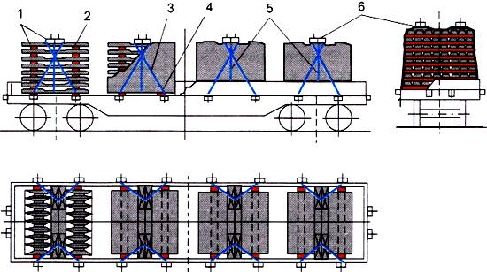
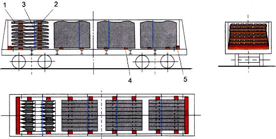
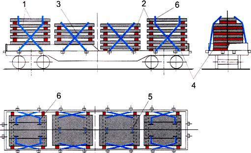
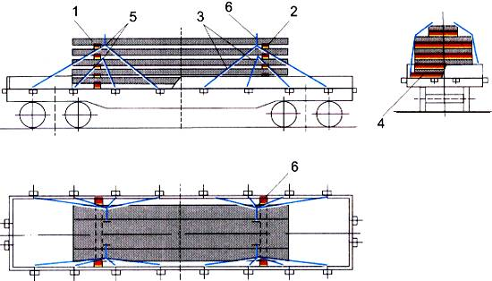
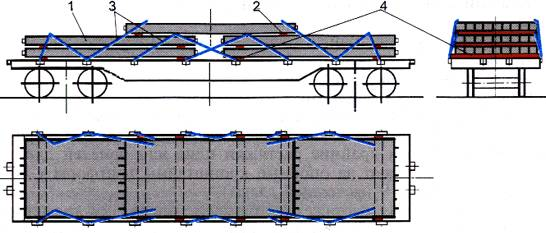
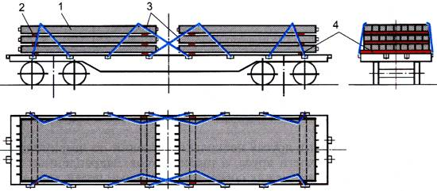
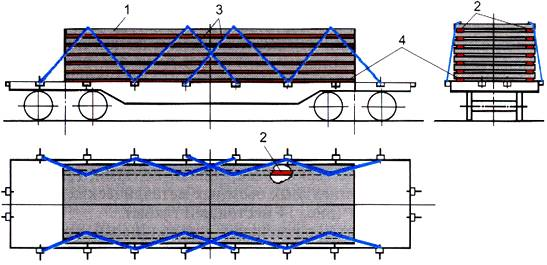
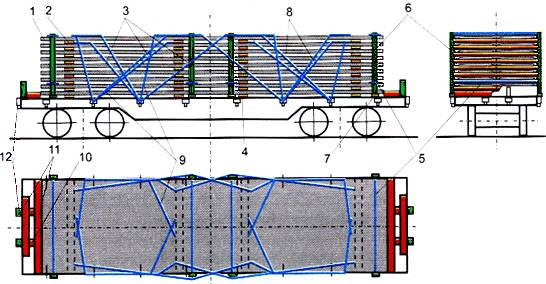
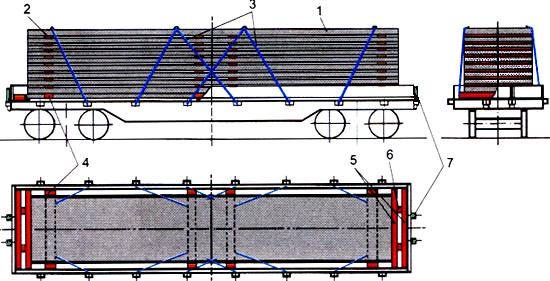
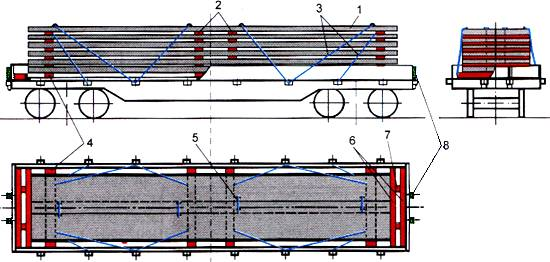

Ýükleri wagonlarda we konteýnerlerde ýerleşdirmegiň hem-de berkitmegiň tehniki şertleri (4-12-nji baplar. 1-11-nji goşundylar)
Ýükleri wagonlarda we konteýnerlerde ýerleşdirmegiň hem-de
berkitmegiň tehniki şertleri (4-12-nji baplar. 1-11-nji goşundylar)
Resminamanyň görnüşi:
Russiýanyň DÝM-niň 27.05.2003 ý. N SM-943 buýrugy
Pudaklaýyn ministrlikler tarapyndan kabul edilýän kadalaýyn
resminamalar
Kabul eden edara: Russiýanyň DÝM
Ýagdaýy: Hereket edýär
DEMIRBETON ÖNÜMLERINI ÝERLEŞDIRMEK HEM-DE BERKITMEK,
ASBESTSEMENT ÖNÜMLERINI WE GURLUŞLARYNY
|
4. Demirbeton kolonnalar, swaýalar, progonlar, rigeller, balkalar,
podnožnikler |
Şu bapda demir beton önümlerini we gurluşlaryny (mysal üçin, şpallar, kolonnalar, bloklar, üçek hem-de aralyk örtük plitalary, iri panelli jaý gurluşygynyň önümleri), şeýle hem asbestsement turbalaryny wagonlarda ýerleşdirmegiň we berkitmegiň usullary göz öňünde tutulan.
Wagonlarda
önümler ýa her bir önüm, ýa-da ştabel berkidilip ýerleşdirilýär. Şu bapda ştabel diýlip,
beýikligi boýunça bir ýa-da birnäçe gatda düşelen önümleriň jemine düşünilýär; gat bir
önümden ýa-da wagonyň ini boýunça biri-birine berk direlip ýerleşdirilen bir hatar
önümden ybarat bolup biler. Ştabeliň ýokarkysyndan başga ähli gatlarynda birmeňzeş sanda
önüm ýerleşdirilmelidir. Ýokarky gatda aşakda ýerleşýän gatlardakydan az sanda önüm
ýerleşdirmäge rugsat berilýär. Gatlardaky önümleriň we tutuşlygyna ştabelleriň ýerleşişi
ýüküň wagonyň simmetriýa tekizliklerine görä simmetrik ýerleşdirilmegini üpjün
etmelidir. Her bir önüm ýa-da ştabel ini azyndan 100 mm bolan tagtalardan ýa-da
gorbylden taýýarlanan iki kese ýa-da iki uzaboýuna astlygyň üstünde ýerleşdirilýär.
Astlyklaryň iň kiçi kesimindäki galyňlygy azyndan 25 mm bolmalydyr. Agaç-demir düşemeli
açyk wagonlarda we ýarym açyk wagonlarda kese astlyklaryň astlygyň tutuş uzynlygy boýunça
düşege degip durmagy üpjün edilmelidir (şu bapdaky 1-nji surat).

1-nji surat. Kese astlyklaryň gurluşy:
a, b - açyk wagonlarda; ç - ýarym açyk wagonda.
1 - agaç düşek örtügi; 2 - demir düşek örtügi; 3 - astlyk; 4 - deňleşdiriji aralyk gatlagy; 5 - çüý
Ýük açyk wagonda ýerleşdirilende astlygyň 3 ortaky böleginde düşemäniň 2 çykyp duran böleginiň ölçegleri boýunça oýuk etmäge (şu bapdaky 1a surat) ýa-da aralyklara degişli galyňlykdaky deňleşdiriji aralyk gatlaklaryny 4 gurnamaga (şu bapdaky 1b surat) rugsat berilýär. Deňleşdiriji aralyk gatlaklary kesilen agaç materiallaryndan, fanerden ýa-da beýleki materiallardan taýýarlanmalydyr, olaryň gatylygy we ezilişe berkligi azyndan şular bolmalydyr, astlyklardakydan. Astlyklar deňleşdiriji aralyk gatlaklary bilen bilelikde düşege çüýler 5 bilen berkidilen bolmalydyr. Ýük ýarym açyk wagonda ýerleşdirilende astlygyň ortaky böleginde oňurga balkasynyň çykyp duran böleginiň ölçegleri boýunça oýuk etmäge rugsat berilýär (şu bapdaky 1w surat). Agaç düşemeli açyk wagonyň çäginde ýerleşdirilýän tekiz direg ýüzli demir beton önümlerini gös-göni düşekde düşemäge rugsat berilýär, eger bu ugradylýan önüm baradaky kadalaşdyryjy resminamalaryň talaplaryna ters gelmeýän bolsa.
Ştabeliň gatlarynyň
arasynda, adatça, aralyk gatlaklary ýerleşdirilmelidir. Aralyk gatlaklarynyň we
astlyklaryň uzaboýuna oklary bir dik tekizlikde bolmalydyr. Aralyk gatlaklarynyň ini
azyndan 100 mm bolmalydyr. Aralyk gatlaklarynyň galyňlygy biri-birine bakyp duran çykyp
duran gömülen bölekleriň we gurnaýyş halkalarynyň arasyndaky aralyk azyndan 5 mm bolar
ýaly ýeterlik bolmalydyr. Ýük alyjy bilen ylalaşylyp, çümdürilen gurnaýyş halkaly demir
beton plitalary aralyk gatlaksyz ýerleşdirmäge rugsat berilýär, eger bu önüm baradaky
kadalaşdyryjy resminamalaryň talaplaryna ters gelmeýän bolsa. Önümler dikligine ýa-da
gyşardylyp ýerleşdirilende bezegli (timarlanan) ýüzleriň arasynda aralyk gatlaklary
gurnalýar. Aralyk gatlaklarynyň galyňlygy önümiň ýüzüniň gorap saklanylmagyny üpjün
etmelidir we ýük ugradyjy tarapyndan kesgitlenilýär. Ştabelleriň ýa-da ýüküň aýry-aýry
elementleriniň arasynda keseligine we dik aralyk gatlaklaryny ýerleşdirmäge rugsat
berilýär. Aralyk gatlaklary gaçmakdan berkidilen bolmalydyr.
Önümlerde çekmeler gurnaýyş halkalaryna ýa-da ýörite strop deşiklerine berkidilýär. Ýörite gömülen bölekleri ýa-da strop halkalaryny ulanmaga rugsat berilýär (şu bapdaky 2-nji surat). Berkidiş serişdeleriniň we strop düwünleriniň berkligi çekmeleriň berkliginden az bolmaly däldir. Şu talabyň ýerine ýetirilmegi üçin jogapkärçiligi ýük ugradyjy çekýär.

2-nji surat
Ştabeliň gatlarynda wagonyň ini boýunça birnäçe önüm ýerleşdirilende önümleriň galyňlygy birmeňzeş bolmalydyr. Şunda ýokarky gatda we çekmeler bilen berkidilen gatlarda goňşy önümler özara gurnaýyş halkalaryndan sim daňylary bilen berkidilen bolmalydyr.
Demirbeton önümleriň berkidiş elementleri (mysal üçin, çekmeler, gurşaw daňylary, daňylar) bilen zeperlenmeginiň öňüni almak üçin ugradyjy berkidiş bilen ýüküň arasynda aralyk gatlaklaryny gurnamalydyr we olary gaçmakdan berkitmelidir.
Ýarym açyk wagonlaryň gapylarynyň, açyk wagonlaryň bortlarynyň ýüklemeden soňky ýagdaýy şu TŞ-niň 1-nji babynyň 3-nji bölüminiň talaplaryna laýyk gelmelidir.
Ýerleşdirmegiň we berkitmegiň usuly şu bapdaky ýyldyzjyk bilen bellenilen bentler bilen göz öňünde tutulan ýük daşamaga hödürlenilende (*), ugradylýan beketdäki daşaýjy ýük ugradyjydan ýüki ýerleşdirmegiň we berkitmegiň eskizini talap etmäge haklydyr.
2. Ýoly 1520 mm bolan demir ýollar üçin demirbeton şpallar
2.1. Ýük göterijiligi 66 tonna we ondan az bolan açyk wagonda şpallar
dört birmeňzeş ştabel bilen (şu bapdaky 3-nji surat) açyk wagonyň simmetriýa
tekizliklerine görä simmetrik ýerleşdirilýär. Her bir ştabel dokuz gatdan emele
getirilýär: biri-birine berk direlip, uzaboýuna oky açyk wagonyň ugry boýunça düşelen
sekiz şpaldan ybarat sekiz doly gat we açyk wagona kese düşelen iki şpaldan ybarat
dokuzynjy gat. Şpallar 1 rels astyndaky meýdançalary ýokary bakdyrylyp ýerleşdirilýär.
Şpallaryň her bir ştabeli açyk wagonyň sütün skobalaryna görä simmetrik, kesimi azyndan
50x100 mm we uzynlygy açyk wagonyň içki inine deň bolan iki kese astlygyň 4 üstünde
ýerleşdirilýär. Astlyklar biri-birinden 1500 mm aralykda, şpallaryň uçlaryndan deň
aralykda ýerleşdirilýär we her biri düşege ölçegi azyndan 6x150 mm bolan sekiz çüý bilen
berkidilýär. Şpallaryň gatlarynyň arasynda rels astyndaky meýdançalarda kesimi 40x100 mm
we uzynlygy 2500 mm bolan aralyk gatlaklary 2 ýerleşdirilýär. Sekiz doly gat ýokarky iki
şpal ýüklenmezden öň diametri 6 mm bolan simden dört sapakly daňy 5 bilen daňylýar.

3-nji surat.
1 - şpal; 2 - aralyk gatlagy; 3 - çekme; 4 - astlyk; 5 - gurşaw daňysy; 6 - paýtak
Iki ýokarky şpal
düşelenden soň her bir ştabel diametri 6 mm bolan simden alty sapakly iki jübüt çekme 3
bilen berkidilýär. Çekmeler açyk wagonyň sütün skobalaryna we ýokarky kese şpallaryň
uçlaryna berkidilýär. Çekmäniň sapaklary şpalyň daşyndan olar boltlary içki tarapyndan
gurşap alar ýaly aýlanýar. Şpallarda boltlar bolmadyk halatynda çekmeleriň süýşüp
gaçmagynyň öňüni almak üçin ýokarky şpallaryň rels astyndaky meýdançalarynyň deşiklerine
pazlar 6 kakylan bolmalydyr.
2.2. Ýük göterijiligi
66 tonnadan ýokary bolan açyk wagonda ortaky ştabeller şu bapdaky 2.1-nji bentde göz
öňünde tutulan tertipde emele getirilýär we berkidilýär. Şunda çetki ştabeller meňzeş
tertipde on gatdan emele getirilýär: dokuz doly gatdan we iki kese şpaldan ybarat onunjy
gatdan. Çetki ştabeller diametri 6 mm bolan simden sekiz sapakly çekmeler bilen
berkidilýär.
2.3. Ýarym açyk wagonda şpallar dört ştabel bilen wagonyň simmetriýa tekizliklerine görä simmetrik ýerleşdirilýär (şu bapdaky 4-nji surat).

4-nji surat.
1 - şpal; 2 - aralyk gatlagy; 3 - gurşaw daňysy; 4 - astlyk; 5 - direg dörtgyraňy (çarçuwa)
Her bir gatda wagona
kese biri-birine berk direlip 8-den şpal ýerleşdirilýär. Ştabeldäki gatlaryň sany — 8-den
köp däl, ştabeliň umumy beýikligi ýarym açyk wagonyň diwarlarynyň beýikliginden köp bolmaly
däldir. Ýük ýerleşdirilmezden öň ýarym açyk wagonyň kese bosagalaryna berk direlip, kesimi
azyndan 100x100 mm we uzynlygy 2800 mm bolan direg pürsleri 5 ýa-da dartyş çarçuwalary
gurnalýar:
- kuzowyň uzynlygy 12080 mm-den
köp bolmadyk halatynda - birden dörtgyraň;
- kuzowyň uzynlygy
12228-12324 mm bolanda - ikiden dörtgyraň;
- kuzowynyň
uzynlygy 12700-12750 mm bolanda — iki meňzeş direg pürsünden we kuzowyň ini boýunça deň
ölçegde ýerleşdirilýän, ölçegi azyndan 100x100x200 mm bolan dört dartyş pürsünden ybarat
dartyş çarçuwalary. Çarçuwanyň pürsleri özara diametri 8-10 mm bolan çybykdan taýýarlanan
gurluşyk skobalary bilen berkidilýär. Çetki ştabeller direg pürslerine ýa-da dartyş
çarçuwalaryna berk direlip ýerleşdirilýär. Ortaky ştabeller biri-birinden azyndan 300 mm
aralykda, ýarym açyk wagonyň kese simmetriýa tekizligine görä simmetrik ýerleşdirilýär.
Ştabelleriň ýokarky gatlarynda 8-den az şpal ýerleşdirmäge rugsat berilýär. Şpallaryň her
bir ştabeli kesimi azyndan 50x100 mm we uzynlygy ýarym açyk wagonyň içki inine deň bolan,
biri-birinden 1500 mm aralykda, şpallaryň uçlaryndan deň aralykda ýerleşdirilen iki kese
astlygyň üstünde gurnalýar. Şpallaryň gatlarynyň arasynda rels astyndaky meýdançalara
ölçegi 40x100x2500 mm bolan aralyk gatlaklary ýerleşdirilýär. Her bir ştabel diametri 6
mm bolan simden sekiz sapakly daňy bilen ýarym açyk wagonyň aşaky daňy enjamlaryna
berkidilýär.
3. Demirbeton plitalar, paneller
3.1. Armatura çykgytlary bolmadyk (şu bölümiň 3.5-nji bendinde agzalanlardan başga), keseligine ýagdaýda daşalmagyna rugsat berilýän plitalar we paneller açyk wagonda şu tertipde ýerleşdirilýär:
- uzynlygy 2,4-den 3,3 m
çenli goşmak bilen bolanlar - dört ştabel bilen (şu bapdaky 5-nji surat);
- uzynlygy 3,3-den 4,4 m
çenli goşmak bilen bolanlar - üç ştabel bilen (şu bapdaky 6-njy surat);
- uzynlygy 4,4-den 6,5 m
çenli goşmak bilen bolanlar - iki ştabel bilen (şu bapdaky 7-nji surat);
- uzynlygy 6,5 m-den köp
bolanlar - bir ştabel bilen (şu bapdaky 8, 9-njy suratlar).

5-nji surat.
1 - plita (panel); 2 - aralyk gatlagy; 3 - çekme; 4 - astlyk; 5, 6 - daňy

6-njy surat.
1 - plita (panel); 2 - aralyk gatlagy; 3 - çekme; 4 - astlyk; 5, 6 - daňy

7-nji surat.
1 - plita (panel); 2 - aralyk gatlagy; 3 - çekme; 4 - astlyk; 5 - daňy

8-nji surat.
1 - plita (panel); 2 - aralyk gatlagy; 3 - çekme; 4 - astlyk; 5, 6 - daňy

9-njy surat.
1 - plita (panel); 2 - aralyk gatlagy; 3 - çekme; 4 - astlyk; 5, 6 - daňy
Gatdaky önümleriň jemi ini açyk wagonyň ininden geçmeli däldir.
Ştabellerdäki gatlaryň iň ýokary mukdary açyk wagonyň ýük göterijiligi bilen kesgitlenilýär.
Açyk wagonda dürli uzynlykdaky we inli önümleriň ştabellerini bilelikde şu şertlerde ýerleşdirmäge rugsat berilýär:
- ştabelleriň islendiginiň
iň ýokary uzynlygy 7,2 m-den köp bolmaly däldir, ştabelleriň jemi uzynlygy bolsa - açyk
wagonyň içki uzynlygyndan köp bolmaly däldir;
- ştabeliň ähli gatlarynyň ini birmeňzeş bolmalydyr;
- ştabeliň ini azyndan 2,2 m bolmalydyr
- ştabelde diňe iki dürli ini bolan önümleri ýerleşdirmäge rugsat berilýär, şunda her bir gatyň önümleriniň sepleşikleri goňşy gatlaryň önümleri bilen örtülen bolmalydyr;
- has gysga we (ýa-da) dar ştabeller has uzyn we (ýa-da) giň ştabelleriň arasynda ýerleşdirilen bolmalydyr.
Plitalaryň,
panelleriň her bir ştabeliniň birinji gaty kesimi azyndan 40x100 mm bolan iki kese
astlygyň 4 üstünde ýerleşdirilýär, olar açyk wagonyň düşegine ölçegi 6x150 mm bolan
çüýler bilen, ýüküň 1 tonnasyna bir çüý hasabyndan, ýöne bir astlyga 20 sanydan köp
bolmadyk mukdarda berkidilýär. Ikinji we soňraky gatlar astlyklaryň üstünde
ýerleşdirilýän, kesimi 25x100 mm we uzynlygy ýüklemegiň inine deň bolan aralyk
gatlaklarynyň 2 üstünde ýerleşdirilýär. Açyk wagonda uzynlygy 6,5 m-den köp bolan bir
ştabel plita, panel ýerleşdirilende astlyklaryň we aralyk gatlaklarynyň ini azyndan 150 mm
bolmalydyr
Aralyk gatlaklary we
astlyklar plitalarda ýerleşen gurnaýyş halkalaryndan olaryň kese uçlaryna tarap ugurda
100-200 mm aralykda ýerleşen bolmalydyr.
Her bir ştabel ýerleşdirmegiň usulyna baglylykda şeýle berkidilýär:
- şu bapdaky 5-nji surat boýunça - iki jübüt sim çekmesi bilen;
- şu bapdaky 6-njy surat boýunça - çetki ştabeller üç jübüt çekme bilen, ortakysy - dört jübüt bilen berkidilýär;
- şu bapdaky 7-nji surat boýunça - dört jübüt çekme bilen;
- şu bapdaky 8 we
9-njy suratlar boýunça - sekiz jübüt çekme bilen. Şunda uzynlygy 10 m-den köp bolan
plitalaryň ýa-da panelleriň çetki çekmeleri kese bortlaryň ýanyndaky açyk wagonlaryň direg
kronşteýnlerine berkidilýär (şu bapdaky 9-njy surat).
Çekmeleri taýýarlamak
üçin diametri 6 mm bolan sim ulanylýar. Çekmelerdäki simiň sapaklarynyň sany ştabeliň
agramyna baglylykda şu bapdaky 1-nji tablisa boýunça kabul edilýär.
1-nji tablisa
|
Açyk wagonyň uzynlygy boýunça ştabelleriň mukdary |
Ştabeliň agramy, t
|
Çekmedäki simiň sapaklarynyň sany
|
|
|
|
|
çetki ştabel
|
ortaky ştabel |
|
4 |
17,75 çenli goşmak bilen
|
8 |
8 |
|
3 |
22,0 çenli goşmak bilen
|
6
|
6 |
|
|
22,0-den 23,7 çenli goşmak bilen
|
8 |
6
|
|
2 |
35,5 çenli goşmak bilen
|
8 |
- |
|
1 |
71 çenli goşmak bilen
|
8 |
- |
Gatlarda açyk
wagonyň ini boýunça birnäçe önüm ýerleşdirilende ýokarky gatyň, şeýle hem çekmeler 3 bilen
berkidilen gatlaryň önümleri özara gurnaýyş halkalaryndan diametri 6 mm bolan simden dört
sapakly iki kese daňy 5 bilen berkidilýär.
Şu bapdaky 5, 6, 8,
9-njy suratlara laýyklykda ýokarky doly bolmadyk gatlarda ýerleşen plitalar we paneller
aşakda ýerleşen doly gatyň önümleriniň gurnaýyş halkalaryna diametri 6 mm bolan simden dört
sapakly dört daňy 6 bilen berkidilýär.
3.2*. Ini 2,75-den 3,0 m
çenli goşmak bilen bolan fundament asty plitalar (armatura çykgytlary goşmak bilen) gapdal
bortlary açyk dört oklyk açyk wagonlarda daşalýar (şu bapdaky 10 we 11-nji suratlar).

10-njy surat.
1 - plita; 2 - aralyk gatlagy; 3 - çekme; 4 - astlyk

11-nji surat.
1 - plita; 2 - aralyk gatlagy; 3 - çekme; 4 - astlyk
Plitalar açyk wagonyň uzynlygy boýunça, onuň içki uzynlygynyň çäginde iki ştabel bilen ýerleşdirilýär. Ştabellerdäki gatlaryň sany açyk wagonyň ýük göterijiligi bilen kesgitlenilýär. Agaç-demir düşekli açyk wagonlarda birinji gatlar kesimi azyndan 50x100 mm we uzynlygy plitalaryň inine deň bolan astlyklaryň üstünde ýerleşdirilýär. Her bir astlyk düşege ölçegi azyndan 6x150 mm bolan çüýler bilen berkidilýär: plitalaryň umumy agramy 66 tonna çenli goşmak bilen bolanda — on dört çüý bilen, plitalaryň umumy agramy 66 tonnadan köp bolanda — on alty çüý bilen. Agaç düşekli açyk wagonlarda plitalary astlyksyz ýerleşdirmäge rugsat berilýär.
Gatlaryň arasynda ölçegi (40-50)x bolan aralyk gatlaklary ýerleşdirilýär min 100x2750 mm. Her bir ştabel plitalaryň jemi agramyna baglylykda diametri 6 mm bolan simden sekiz jübüt çekme bilen berkidilýär:
- plitalaryň jemi agramy 63 tonna çenli goşmak bilen bolanda - alty sapakly;
- plitalaryň jemi agramy 63 tonnadan köp bolanda - sekiz sapakly.
Çekmeler ýokarky plitalaryň gurnaýyş halkalaryndan we açyk wagonyň sütün skobalaryndan berkidilýär.
Şu bapdaky 10-njy
surata laýyklykda ýokarky gatda iki ştabele hem direldilip bir plita ýerleşdirilen
halatynda ol ştabelleriň berkidilişine garamazdan diametri 6 mm bolan simden alty sapakly
iki jübüt çekme bilen gurnaýyş halkalaryna we açyk wagonyň sütün skobalaryna berkidilýär.
3.3. Uzynlygy 4,5-den
6,0 m çenli we ini 3,0-den 3,2 m çenli goşmak bilen bolan üçek we aralyk örtük plitalary
gapdal bortlary açyk açyk wagonda daşalýar. Plitalar açyk wagonyň uzynlygy boýunça iki
ştabel bilen ýerleşdirilýär (şu bapdaky 12 we 13-nji suratlar). Ştabeliň birinji gaty
açyk wagonyň uzaboýuna gyrasyndan 300 mm aralykda ýerleşdirilýän, kesimi azyndan 40x100
mm we uzynlygy plitalaryň uzynlygyna deň bolan iki uzaboýuna astlygyň üstünde
ýerleşdirilýär. Her bir astlyk açyk wagonyň düşegine ölçegi 6x150 mm bolan bäş çüý bilen
berkidilýär. Soňraky gatlaryň plitalary uzynlygy plitalaryň uzynlygyna deň bolan iki
uzaboýuna aralyk gatlagynyň üstünde ýerleşdirilýär.

12-nji surat.
1 - plita; 2 - aralyk gatlagy; 3 - çekme; 4 - astlyk

13-nji surat.
1 - plita; 2 - aralyk gatlagy; 3 - çekme; 4 - astlyk
Her bir ştabel plitalaryň jemi agramyna baglylykda diametri 6 mm bolan simden sekiz jübüt çekme bilen berkidilýär:
- plitalaryň jemi agramy 63 tonna çenli goşmak bilen bolanda - alty sapakly;
- plitalaryň jemi agramy 63 tonnadan köp bolanda - sekiz sapakly.
Çekmeler ýokarky plitalaryň gurnaýyş halkalaryndan we açyk wagonyň sütün skobalaryndan berkidilýär.
Şu bapdaky 13-nji
surata laýyklykda ýokarky gatda iki ştabele direldilip bir plita ýerleşdirilen halatynda ol
ştabelleriň berkidilişine garamazdan diametri 6 mm bolan simden dört sapakly iki jübüt
çekme bilen gurnaýyş halkalaryna we açyk wagonyň sütün skobalaryna berkidilýär.
3.4. Ölçegi 1,5x bolan nowa görnüşli we tekiz plitalar6 m we 3x6 m örtükler hem-de aralyk örtükler üçin gapdal bortlary açyk dört oklyk açyk wagonda daşalýar.
Plitalar uzynlygy
boýunça iki ştabel bilen ýerleşdirilýär. Gatlar açyk wagonyň ini boýunça bir ýa-da iki
plitadan emele getirilýär (şu bapdaky 15-nji surat). Açyk wagondaky plitalaryň jemi agramy
50 tonnadan geçmeli däldir, ştabelleriň düşegiň derejesinden beýikligi bolsa 2630 mm-den
köp bolmaly däldir
Plitalar ýüklenmezden öň açyk wagonyň çetki we ortaky gapdal sütün skobalaryna boltlar, gaýkalar hem-de kontrgaýkalar bilen her tarapdan dörtden bolmak bilen sekiz ýörite aýrylýan demir skoba gurnalýar we berkidilýär (şu bapdaky 14-nji surat).

14-nji surat

15-nji surat.
1 - plita; 2 - aralyk gatlagy; 3 - ýokarky gatyň çekmesi; 4 - astlyk; 5 - gapdal sütünleriň daňysy; 6 - gapdal sütün;
7 - ýörite skoba; 8 - soňkudan öňki gatyň çekmesi; 9 - ýokarky gatyň kese çekmesi;
10 - dartyş dörtgyraň agaç bölegi; 11 - direg dörtgyraň agaç bölegi; 12 - gysga kese sütün
Nowa görnüşli
plitalar uzaboýuna gyralary aşak bakdyrylyp ýerleşdirilýär. Birinji gat uzynlygy 3200 mm,
kesimi nowa görnüşli plitalar üçin azyndan 100x200 mm (beýikligi x ini), tekiz plitalar
üçin azyndan 60x80 mm bolan iki kese astlygyň 4 üstünde ýerleşdirilýär. Astlyklar
plitalaryň keselerinden 500-600 mm aralykda ýerleşdirilýär we her biri açyk wagonyň
düşegine ölçegi 6x150 mm bolan bäş çüý bilen çüýlenýär. Nowa görnüşli plitalary ini
boýunça iki bölekden düzülip taýýarlanan astlyklaryň üstünde ýerleşdirmäge rugsat
berilýär, olar özara diametri 10 mm bolan çybykdan taýýarlanan skobalar bilen
berkidilýär, şol skobalar astlyklaryň keselerine her tarapdan birden kakylýar. Ikinji we
soňraky gatlaryň plitalary ölçegi azyndan 50x150x3200 mm bolan iki aralyk gatlagynyň
üstünde ýerleşdirilýär. Ýörite skobalara açyk wagonyň düşeginiň derejesinden beýikligi
2710 mm-den köp bolmadyk gapdal sütünler şu Tehniki şertleriň 1-nji babynyň talaplaryna
laýyklykda gurnalýar. Garşylyklaýyn gapdal sütünler özara ikinji we üçünji gatlaryň
arasynda hem-de ýokarky gatdan ýokarda diametri 6 mm bolan simden iki sapakly daňylar
bilen dartylýar.
Açyk wagonyň ýapyk kese bortlary bilen ştabelleriň arasynda kesimi nowa
görnüşli plitalar üçin azyndan 100x200 mm (ini x beýikligi), tekiz plitalar üçin azyndan
100x120 mm bolan iki direg (kese) we iki dartyş (uzaboýuna) dörtgyraň agaç böleginden
ybarat dartyş çarçuwalary gurnalýar, olar özara her bir birikmede diametri 8 mm-den köp
bolmadyk çybykdan taýýarlanan bir gurluşyk skobasy bilen berkidilýär
Her bir ştabelde soňkudan
öňki gatyň plitalary özara gurnaýyş halkalaryndan diametri 6 mm bolan simden dört sapakly iki
kese daňy bilen berkidilýär.
Plitalaryň her bir ştabeli diametri 6 mm bolan simden çekmeler bilen berkidilýär:
- ýokardan ikinji gat - dört sapakly iki jübüt uzaboýuna çekme bilen;
- ýokarky gat - alty sapakly üç jübüt uzaboýuna çekme we dört sapakly iki jübüt kese çekme bilen.
3.5. Uzynlygy 5,65-den
6,28 m çenli we ini 0,9-dan 2,0 m çenli goşmak bilen bolan PK, PDP we PAG kysymly
plitalar.
3.5.1. Açyk wagonlarda plitalar açyk wagonyň simmetriýa tekizliklerine görä simmetrik, uzynlygy boýunça iki ştabel bilen ýerleşdirilýär (şu bapdaky 16-18-nji suratlar). Gatlarda olaryň inine baglylykda bir ýa-da iki plita ýerleşdirilýär. Her bir ştabeliň birinji gaty kesimi azyndan 50x100 mm we uzynlygy açyk wagonyň içki inine deň bolan iki kese astlygyň 4 üstünde ýerleşdirilýär. Her bir astlyk düşege ölçegi 6x150 mm bolan we şu mukdardaky çüýler bilen berkidilýär:
- plitalaryň jemi agramy 53 tonnadan az bolanda - 12 sany;
- plitalaryň jemi agramy 53-den 63 tonna çenli goşmak bilen bolanda - 14 sany;
- plitalaryň jemi agramy 63 tonnadan bolanda - 16 sany.

16-njy surat.
1 - plita; 2 - aralyk gatlagy; 3 - çekme; 4 - astlyk; 5 - direg dörtgyraň agaç bölegi; 6 - dartyş dörtgyraň agaç bölegi; 7- gysga kese sütün

17-nji surat.
1 - plita; 2 - aralyk gatlagy; 3 - çekme; 4 - astlyk; 5 - daňy; 6 - direg dörtgyraň agaç bölegi; 7 - dartyş dörtgyraň agaç bölegi; 8 - gysga kese sütün

18-nji surat.
1 - plita; 2 - çekme; 3 - astlyk; 4 - direg dörtgyraň agaç bölegi; 5 - dartyş dörtgyraň agaç bölegi; 6 - gysga kese sütün
Ýük alyjynyň ýazmaça görnüşde razylygy bar bolanda plitalary agaç düşegi abat açyk wagonlarda astlyklarsyz ýerleşdirmäge rugsat berilýär.
Gatlaryň arasynda kesimi azyndan 25x100 mm we uzynlygy ýüklemegiň inine deň bolan aralyk gatlaklary ýerleşdirilýär.
Astlyklar we aralyk
gatlaklary şeýle ýerleşdirilýär: PK kysymly plitalar ýüklenende - gurnaýyş halkalaryndan
plitalaryň kese uçlaryna tarap ugurda 100-200 mm aralykda, PDP we PAG kysymly plitalar
ýüklenende - kese uçlardan 1000 mm aralykda.
Şu bapdaky 17-nji
surata laýyklykda gatda ini boýunça tapawutlanýan, jemi ini açyk wagonyň ininden geçmeýän
iki plitany ýerleşdirmäge rugsat berilýär. Şunda plitalar gyşyk simmetrik, ýokarda ýerleşen
gatyň plitalary aşakda ýerleşen gatdaky plitalaryň arasyndaky uzaboýuna birleşme ýerlerini
örter ýaly ýerleşdirilýär. Çekmeler berkidilýän goňşy plitalar özara gurnaýyş halkalaryndan
diametri 6 mm bolan simden dört sapakly daňylar bilen berkidilýär.
Şu bapdaky 18-nji surata laýyklykda PDP we PAG kysymly plitalary ştabellerde aralyk gatlaklarysyz ýerleşdirmäge rugsat berilýär.
Uzaboýuna we kese
süýşmeden plitalar diametri 6 mm bolan simden sekiz sapakly on iki çekme bilen, şeýle hem
ölçegi azyndan 100x100x2750 mm bolan iki direg dörtgyraň agaç böleginden we şol bir
kesimli, uzynlygy — ýerine görä bolan iki dartyş dörtgyraň agaç böleginden düzülen dartyş
çarçuwalary bilen berkidilýär. Dartyş dörtgyraň agaç bölekleri kese sütün skobalarynyň
garşysynda ýerleşdirilýär. Her bir direg dörtgyraň agaç bölegi düşege alty çüý bilen, her
bir dartyş dörtgyraň agaç bölegi — ölçegi 6x150 mm bolan iki çüý bilen çüýlenýär. Demir
düşemeli açyk wagonlarda kese bortlaryň ýanynda borta ýanaşýan direg dörtgyraň agaç
bölekleri dartyş dörtgyraň agaç bölekleri bilen diametri 8 mm-den köp bolmadyk çybykdan
taýýarlanan gurluşyk skobalary arkaly, her bir birikmede birden berkidilýär. Kese sütün
skobalaryna gysga agaç sütünler gurnalýar.
3.5.2*. Ýarym açyk wagonlarda plitalar simmetriýa tekizliklerine görä simmetrik, uzynlygy boýunça iki ştabel bilen ýerleşdirilýär.
Ýarym açyk wagonyň içki uzynlygy ýük bilen ýarym açyk wagonyň bosagasynyň arasynda direg dörtgyraň agaç bölekleriniň gurnalmagyny üpjün etmelidir.
Her bir ştabeliň
birinji gaty (şu bapdaky 19-njy surat) kesimi azyndan 50x150 mm we uzynlygy ýarym açyk
wagonyň içki inine deň bolan iki astlygyň 4 üstünde ýerleşdirilýär. Ikinji we soňraky
gatlaryň plitalary kesimi azyndan 25x100 mm we uzynlygy ýüklemegiň inine deň bolan aralyk
gatlaklarynyň 2 üstünde ýerleşdirilýär. Astlyklar we aralyk gatlaklary şeýle
ýerleşdirilýär: PK kysymly plitalar üçin — gurnaýyş halkalaryndan önümleriň keselerine
tarap 100-200 mm aralykda, PDP we PAG kysymly plitalar üçin — plitalaryň keselerinden
1000 mm aralykda.
19-njy surat.
1 - plita; 2 - aralyk gatlagy; 3 - çekme; 4 - astlyk; 5 - direg dörtgyraň agaç bölegi
Gatda ýarym açyk
wagonyň ini boýunça dürli kysymly iki plita ýerleşdirilende ýokarda ýerleşen gatdaky
plitalar aşakda ýerleşen gatdaky plitalaryň arasyndaky uzaboýuna birleşme ýeri örtüler
ýaly ýerleşdirilýär. Şunda goňşy ştabellerde bir kysymly önümler gyşyk simmetrik
ýerleşdirilýär (şu bapdaky 20-nji surat). Iki ýokarky gatda ýerleşen goňşy plitalar özara
gurnaýyş halkalaryndan diametri 6 mm bolan simden dört sapakly daňylar bilen berkidilýär.

20-nji surat.
1 - plita; 2 - aralyk gatlagy; 3 - çekme; 4 - astlyk; 5 - direg dörtgyraň agaç bölegi; 6 - daňy
Plitalary aralyk gatlaklarysyz ýerleşdirmäge rugsat berilýär (şu bapdaky 21-nji surat).

21-nji surat.
1 - plita; 2 - çekme; 3 - direg dörtgyraň agaç bölegi; 4 - astlyk
Plitalary berkitmek
üçin öňünden maşyn usuly bilen ýa-da el bilen towlanan, diametri 6 mm bolan simden
çekmeler ulanylýar. Çekmeler bir ujy bilen ýarym açyk wagonyň aşaky ýa-da ortaky daňy
enjamlaryna, beýleki ujy bilen — plitalaryň gurnaýyş halkalaryna berkidilýär (şu bapdaky
22-nji surat).

22-nji surat.
1 - plita; 2 - aralyk gatlagy; 3 - çekme; 4 - astlyk; 5 - dartgy; 6 - daňy enjamy; 7 - spiral halka
Ýarym açyk wagonyň daňy enjamyna çekme 3 spiral halkanyň 7 üsti bilen berkidilýär, ol çekme daňy enjamynyň deşigine geçirilenden soň çekmäniň halkasyna salynýar (şu bapdaky 23-nji surat). Şunda halkanyň ähli aýlawlary halka salnan bolmalydyr. Spiral halka çekmeler bilen şol bir diametrli simden taýýarlanylýar, spiralyň aýlawlarynyň sany bolsa çekmäniň sapaklarynyň sanyna deň bolmalydyr. Plitanyň gurnaýyş halkasyna çekme dartgynyň 5 üsti bilen berkidilýär.

23-nji surat
Plitalaryň her bir ştabeli şeýle berkidilýär: plitalaryň jemi agramy 60 tonna çenli goşmak bilen bolanda — aşaky daňy enjamlaryna alty sapakly iki jübüt çekme we ýarym açyk wagonyň ortaky daňy enjamlaryna dört sapakly bir jübüt çekme bilen (şu bapdaky 19-njy surat); plitalaryň jemi agramy 60 tonnadan köp bolanda — goşmaça ortaky daňy enjamlaryna dört sapakly bir jübüt çekme bilen (şu bapdaky 20-nji surat).
Plitalaryň ýokarky gaty ýarym açyk wagonyň ortaky daňy enjamlarynyň derejesinde ýa-da ondan aşakda bolan halatlarynda ähli çekmeler aşaky daňy enjamlaryndan berkidilýär (şu bapdaky 21-nji surat).
Aşaky gatyň
plitalary bilen ýarym açyk wagonyň kese bosagasynyň arasyna dartylyp, plitalaryň uzynlygyna
we ýarym açyk wagonyň içki uzynlygyna baglylykda ölçegi 60x100x2850 mm bolan direg
dörtgyraň agaç bölegi ýa-da şol bir ölçegdäki iki direg dörtgyraň agaç böleginden we
kesimi 100x100 mm hem-de uzynlygy — ýerine görä bolan dört dartyş dörtgyraň agaç
böleginden düzülen dartyş çarçuwasy gurnalýar. Direg we dartyş dörtgyraň agaç bölekleri
özara diametri 6 mm bolan çybykdan taýýarlanan gurluşyk skobalary bilen berkidilýär
3.6*. Uzynlygy 5-den 6 m çenli goşmak bilen bolan arka panelleri açyk wagonda onuň ugry boýunça iki ştabel bilen ýerleşdirilýär (şu bapdaky 24-nji surat). Ştabellerdäki gatlaryň sany açyk wagonyň ýük göterijiligi bilen kesgitlenilýär. Ştabeliň her bir gatynda ini boýunça 1-3 panel ýerleşdirilýär. Ştabelleriň arasyndaky we her bir ştabel bilen açyk wagonyň kese bortunyň arasyndaky aralyklar deň bolmalydyr.

24-nji surat.
1 - panel; 2 - astlyk; 3 - direg dörtgyraň agaç bölegi; 4 - aralyk gatlagy; 5 - daňy; 6 - çekme; 7 - gapdal sütün;
8 - gapdal sütünleriň daňysy; 9 - kese sütün
Iki ştabeliň hem
birinji gatlary düşegiň agaç düşemesiniň çäginde ýerleşdirilýän, kesimi azyndan 100x150 mm
bolan 18 uzaboýuna astlygyň üstünde ýerleşdirilýär. Kese bortlaryň ýanyndaky astlyklar
borta diremelidir. Astlyklaryň uzynlygy olaryň uçlary paneliň aşagyna azyndan 200 mm girer
ýaly saýlanylýar. Astlyklaryň üstünde panellere berk direlip, kesimi azyndan 50x150 mm we
uzynlygy — ýerine görä bolan direg dörtgyraň agaç bölekleri düşelýär. Her bir direg
dörtgyraň agaç bölegi astlyk bilen bilelikde açyk wagonyň düşegine diametri 6 mm we
uzynlygy azyndan 200 mm bolan şu mukdardaky çüýler bilen berkidilýär:
- kese bortlaryň ýanynda ýerleşenler - 3 sany;
- açyk wagonyň ortasynda ýerleşenler: panelleriň jemi agramy 63 tonna çenli goşmak bilen bolanda - 3 sany; 63-den 66 tonna çenli goşmak bilen - 4 sany; 66 tonnadan köp - 5 sany.
Panelleriň gatlarynyň arasynda gurnaýyş halkalaryna direldilip, kesimi azyndan 50x150 mm bolan iki kese aralyk gatlagy ýerleşdirilýär.
Her bir gatyň
panelleri özara strop halkalaryndan diametri 6 mm bolan simden dört sapakly kese daňylar
bilen berkidilýär. Panelleriň her bir ştabeli diametri 6 mm bolan simden sekiz sapakly
dört jübüt çekme bilen ýokarky panelleriň strop halkalaryna we açyk wagonyň sütün
skobalaryna berkidilýär. Eger ýokarky gatda ýerleşdirilen panelleriň sany beýleki
gatlardakydan az bolsa we olaryň umumy ini ýüklemegiň ininiň ýarysyndan geçmese, çekmeler
ýokardan ikinji gatyň önümleriniň strop halkalaryna berkidilýär. Ýokarky gat bu halatda
diametri 6 mm bolan simden dört sapakly çekmeler bilen aşakda ýerleşýän doly gatyň
önümleriniň gurnaýyş halkalaryna berkidilýär.
Panelleriň her bir
ştabeli uzynlygy 1,8 m bolan iki jübüt gapdal sütün bilen germelýär. Garşylyklaýyn sütünler
özara jübüt-jübüt diametri 6 mm bolan simden dört sapakly daňylýar. Açyk wagonyň kese
bortlary agaç sütünler bilen berkidilýär.
4. Demirbeton kolonnalar, swaýalar, progonlar, rigeller, balkalar,
podnožnikler
4.1*. Uzynlygy 6,5 m
çenli goşmak bilen bolan kolonnalar, progonlar, podnožnikler, swaýalar açyk wagonlarda we
ýarym açyk wagonlarda wagonyň uzynlygy boýunça iki-dört ştabel bilen ýerleşdirilýär.
Beýikligi kiçi ştabeller açyk wagonyň ortaky böleginde ýerleşdirilýär. Önümleriň her bir
ştabeli kesimi azyndan 50x100 mm bolan kese astlyklaryň 4 üstünde ýerleşdirilýär.
Gatlaryň arasynda kesimi azyndan 50x100 mm we uzynlygy ştabeliň inine deň bolan aralyk
gatlaklary 2 düşelýär. Her bir gatda önümler özara gurnaýyş halkalaryndan diametri 6 mm
bolan simden dört sapakly iki kese daňy 5 (şu bapdaky 25-27, 30-njy suratlar), 7 (şu
bapdaky 28-nji surat), 6 (şu bapdaky 29-njy surat) bilen berkidilýär.
25-nji surat.
1 - önüm; 2 - aralyk gatlagy; 3 - çekme; 4 - astlyk; 5 - daňy

26-njy surat.
1 - önüm; 2 - aralyk gatlagy; 3 - çekme; 4 - astlyk; 5, 6 - daňy

27-nji surat.
1 - önüm; 2- aralyk gatlagy; 3 - çekme; 4 - astlyk; 5, 6 - daňy
28-nji surat.
1 - önüm; 2 - aralyk gatlagy; 3 - çekme; 4 - astlyk; 5 - direg dörtgyraň agaç bölegi; 6 - dartyş dörtgyraň agaç bölegi; 7, 8 - daňy

29-njy surat.
1 - önüm; 2 - aralyk gatlagy; 3 - çekme; 4 - astlyk; 5 - direg dörtgyraň agaç bölegi; 6 - daňy

30-njy surat.
1 - önüm; 2 - aralyk gatlagy; 3 - çekme; 4 - astlyk; 5 - daňy
4.1.1*. Açyk wagonlarda ýük şeýle ýerleşdirilýär:
- uzynlygy 3,3 m-den az
bolanlar - dört ştabel bilen (şu bapdaky 25-nji surat);
- uzynlygy 3,3-den 4,4 m
çenli goşmak bilen bolanlar - üç ştabel bilen (şu bapdaky 26-njy surat);
- uzynlygy 4,4-den 6,5 m
çenli goşmak bilen bolanlar - iki ştabel bilen (şu bapdaky 27-nji surat).
Her bir astlyk açyk
wagonyň düşegine diametri 6 mm, uzynlygy azyndan 120 mm bolan çüýler bilen berkidilýär (şu
bapdaky 2-nji tablisa).
2-nji tablisa
|
Açyk wagondaky ýüküň agramy
|
Uzynlygy boýunça ştabelleriň mukdary |
Bir astlyga düşýän çüýleriň mukdary
|
|
63 tonna çenli goşmak bilen |
4
|
7 |
|
|
3
|
10 |
|
|
2
|
14 |
|
63 tonnadan köp |
4
|
8 |
|
|
3
|
10 |
|
|
2
|
16 |
Ştabeller diametri 6 mm
bolan simden çekmeler 3 bilen berkidilýär. Ştabelleriň berkidiş görkezijileri 3-nji tablisada
getirilen.
3-nji tablisa
|
Sany açyk wagonyň uzynlygy boýunça ştabelleriň |
Ýüküň agramy, t |
Suratyň belgisi |
Ştabeliň berkidiş görkezijileri (çekmeleriň mukdary we çekmedäki sapaklaryň sany)
|
|
|
|
|
|
çetki ştabel
|
ortaky ştabel |
|
4 |
71 çenli
|
25 |
8 sapakdan 2 jübüt
|
8 sapakdan 2 jübüt |
|
3 |
71 çenli
|
26 |
8 sapakdan 3 jübüt
|
8 sapakdan 2 jübüt |
|
2 |
66 çenli goşmak bilen.
|
27 |
4 jübüt çekme, olardan: |
|
|
|
|
|
çetki 3 jübüt - 8 sapakdan; açyk wagonyň merkezinde bir jübüt - 2 sapak
|
|
|
|
66-dan
|
|
8 sapakdan 4 jübüt
|
|
Ýokarky doly bolmadyk
gatlar aşakdakylara diametri 6 mm bolan simden dört sapakly daňylar 6 bilen berkidilýär (şu
bapdaky 27-nji surat).
4.1.2*. Ýarym açyk
wagonda uzynlygy 6,2 m çenli goşmak bilen bolan önümler ýerleşdirilýär. Şunda ýarym açyk
wagonyň içki uzynlygy ýük bilen kese bosagalaryň arasynda direg dörtgyraň agaç bölekleriniň
5 gurnalmagyny üpjün etmelidir. Ýarym açyk wagonyň kese gapylary ýapyk bolmalydyr.
Önümler olaryň uzynlygyna baglylykda şeýle ýerleşdirilýär:
- uzynlygy 3,1 m çenli
goşmak bilen bolanlar - dört ştabel bilen;
- uzynlygy 3,1-den 4,1 m
çenli goşmak bilen bolanlar - üç ştabel bilen (şu bapdaky 28-nji surat);
- uzynlygy 4,1-den 6,2 m
çenli goşmak bilen bolanlar - iki ştabel bilen (şu bapdaky 29-njy surat).
Ýarym açyk wagonlaryň
kese bosagalarynyň ýanynda kesimi azyndan 100x100 mm bolan direg dörtgyraň agaç bölekleri 5
(şu bapdaky 29-njy surat) ýa-da dartyş çarçuwalary (şu bapdaky 28-nji surat) gurnalýar.
Çarçuwalar şol bir kesimli iki direg 5 we dört dartyş 6 dörtgyraň agaç böleginden emele
getirilýär, olar özara diametri 8 mm-den köp bolmadyk çybykdan taýýarlanan skobalar bilen
berkidilýär
Her bir ştabel diametri 6
mm bolan simden alty sapakly çekmeler bilen berkidilýär:
- dört ştabel bilen ýüklenende - iki jübüt çekme bilen;
- üç ştabel bilen ýüklenende - çetki ştabeller üç jübüt çekme bilen, ortakysy - iki jübüt bilen berkidilýär;
- iki ştabel bilen ýüklenende - dört jübüt çekme bilen.
Ýokarky doly bolmadyk gatlar aşakdakylara daňylar 8 bilen (şu bapdaky 28-nji surat) şu bapdaky 4.1.1 kiçi bendine meňzeş berkidilýär.
4.1.3. Uzynlygy 6,2-den
6,5 m çenli goşmak bilen bolan önümleri gapylary açyk ýarym açyk wagonda iki ştabel bilen
ýerleşdirmäge rugsat berilýär (şu bapdaky 30-njy surat).
Uzynlygy 6,2-den 6,5 m
çenli goşmak bilen bolan önümleriň her bir ştabeli ýarym açyk wagonlarda diametri 6 mm bolan
simden alty jübüt çekme bilen berkidilýär:
- aşaky daňy enjamlaryndan berkidilýän sekiz sapakly dört jübüt bilen;
- ortaky daňy enjamlaryndan berkidilýän iki jübüt bilen: dört sapakly - ýarym açyk wagondaky ýüküň jemi agramy 63 tonna çenli goşmak bilen bolanda; alty sapakly - ýüküň jemi agramy 63 tonnadan bolanda.
Ýokarky doly bolmadyk gat çekmeler 3 bilen ýarym açyk wagonyň ortaky daňy enjamlaryndan, eger soňkular ýokarky gatyň önümlerinden aşakda ýerleşen bolsa, berkidilýär.
4.2*. Uzynlygy 6,5-den
14,2 m çenli goşmak bilen bolan gönüburçly kesimli kolonnalar, swaýalar, rigeller, balkalar
açyk wagonda bir ştabel bilen ýerleşdirilýär (şu bapdaky 31, 32-nji suratlar).

31-nji surat.
1 - önüm; 2 - aralyk gatlagy; 3 - çekme; 4 - astlyk; 5 - daňy; 6 - direg dörtgyraň agaç bölegi
32-nji surat.
1 - önüm; 2 - aralyk gatlagy; 3 - çekme; 4 - astlyk; 5, 7 - daňy; 6 - direg dörtgyraň agaç bölegi
Önümleriň ştabeli
kesimi azyndan 50x150 mm we uzynlygy açyk wagonyň inine deň bolan iki astlygyň 4 üstünde
ýerleşdirilýär. Her bir astlyk düşege ölçegi 6x150 mm bolan on çüý bilen berkidilýär.
Astlyklaryň iki tarapyndan hem olara berk direlip, açyk wagonyň ugry boýunça bortlardan
500 mm aralykda ölçegi azyndan 40x100x400 mm bolan direg dörtgyraň agaç bölekleri 6, her
bir astlyga dörtden bölek ýerleşdirilýär. Dörtgyraň agaç bölekleri düşege her biri ölçegi
6x150 mm bolan alty çüý bilen berkidilýär. Önümleriň gatlarynyň arasynda kesimi azyndan
50x100 mm we uzynlygy ştabeliň inine deň bolan aralyk gatlaklary 2 ýerleşdirilýär. Her
bir gatdaky önümler özara gurnaýyş halkalaryndan diametri 6 mm bolan simden dört sapakly
iki kese daňy 5 bilen berkidilýär.
Uzynlygy 12 m çenli
goşmak bilen bolan önümleriň ştabeli (şu bapdaky 31-nji surat) gapdal tokaý skobalaryna
diametri 6 mm bolan simden sekiz jübüt çekme 3 bilen berkidilýär:
- ýüküň jemi agramy 63 tonna çenli goşmak bilen bolanda — ýokardan ikinji gatyň önümleriniň gurnaýyş halkalaryna berkidilýän sekiz sapakly dört jübüt çekme we ýokarky gatyň önümleriniň gurnaýyş halkalaryna berkidilýän alty sapakly dört jübüt çekme bilen;
- ýüküň jemi agramy 63-den 71 tonna çenli goşmak bilen bolanda - şonuň ýaly gurnalan sekiz sapakly sekiz jübüt çekme bilen.
Önümleriň uzynlygy 12
m-den köp bolanda çetki çekmeler kese bortlaryň ýanyndaky direg kronşteýnlerinden
berkidilýär (şu bapdaky 32-nji surat).
Eger ýokarky gatda beýlekilerdäkiden az önüm ýerleşdirilýän bolsa we olaryň umumy ini ştabeliň ininiň ýarysyndan geçmeýän bolsa, onda çekmeler ýokardan ikinji we üçünji gatlaryň gurnaýyş halkalaryna berkidilýär. Ýokarky gat bu halatda ýokardan ikinji gatyň önümleriniň gurnaýyş halkalaryna (şu bapdaky 32-nji surat) diametri 6 mm bolan simden dört daňy 7 bilen berkidilýär:
- ýüküň jemi agramy 6 tonna çenli goşmak bilen bolanda - dört sapakly;
- ýüküň jemi agramy 6-dan 9 tonna çenli goşmak bilen bolanda - alty sapakly;
- ýüküň jemi agramy 9-dan 12 tonna çenli goşmak bilen bolanda - sekiz sapakly.
4.3*. Uzynlygy 6,5-den
11,5 m çenli goşmak bilen bolan gönüburçly kesimli kolonnalar, swaýalar, rigeller, balkalar
ýarym açyk wagonlarda uzynlygy boýunça bir ştabel bilen ýerleşdirilýär. Ýüküň jemi agramy
ýarym açyk wagonyň ýük göterijiligi bilen kesgitlenilýär.
4.3.1. Uzynlygy 9,5 m
çenli goşmak bilen bolan önümler ştabelde uzynlygy boýunça süýşürilip, ýarym açyk wagonyň
uzaboýuna simmetriýa tekizligine görä simmetrik ýerleşdirilýär: uzynlygy 8,1 m çenli
goşmak bilen bolan önümler — şu bapdaky 33-nji suratda getirilen çyzgy boýunça; uzynlygy
8,1-den 9,5 m çenli goşmak bilen bolanlar — şu bapdaky 34-nji suratda getirilen çyzgy
boýunça. Bu halatda garşylyklaýyn taraplara süýşürilen önümleriň sanlary deň bolmalydyr.
Astlyklar ýarym açyk wagonyň şkworn we aralyk balkalaryna berk direlip ýerleşdirilýär.

33-nji surat.
1 - önüm; 2 - aralyk gatlagy; 3 - çekme; 4 - astlyk; 5 - daňy; 6 - galňadylan astlyk

34-nji surat.
1 - önüm; 2 - aralyk gatlagy; 3 - çekme; 4 - astlyk; 5, 7 - daňy; 6 - galňadylan astlyk
Uzaboýuna bortlaryň ýanynda ýerleşdirilýän önümler kesimi azyndan 50x150 mm bolan astlyklarda 4, wagonyň ortaky böleginde ýerleşdirilýänler bolsa — önümleriň direlýän ýerinde galňadylan, kesimi azyndan 100x150 mm bolan düzümli astlyklarda 6 düşelýär.
Önümleriň gatlarynyň
arasynda kesimi 50x100 mm we uzynlygy ştabeliň degişli böleginiň ýüklenýän inine deň bolan
aralyk gatlaklary 2 ýerleşdirilýär. Her bir gatda önümler özara diametri 6 mm bolan simden
dört sapakly kese daňylar 5 bilen berkidilýär.
Önümler diametri 6 mm bolan simden çekmeler 3 bilen berkidilýär:
- ýüküň jemi agramy 56 tonna çenli goşmak bilen bolanda - on jübüt bilen: sekiz jübüt bilen sekiz sapakly aşaky daňy enjamlaryndan we iki jübüt bilen dört sapakly ortaky daňy enjamlaryndan;
- ýüküň jemi agramy 56-dan 63 tonna çenli goşmak bilen bolanda - on iki jübüt bilen: sekiz jübüt bilen sekiz sapakly aşaky daňy enjamlaryndan we dört jübüt bilen dört sapakly ortaky daňy enjamlaryndan;
- ýüküň jemi agramy
63 tonnadan bolanda — on dört jübüt bilen: aşaky daňy enjamlaryna sekiz sapakly sekiz jübüt
we ortaky daňy enjamlaryna dört sapakly alty jübüt. Ýokarky gatda ýerleşdirilýän ýeke
önümler öňki gatyň gurnaýyş halkalaryna diametri 6 mm bolan simden dört sapakly dört daňy 7
bilen berkidilýär.
4.3.2. Uzynlygy 9,6-dan
11,5 m çenli goşmak bilen bolan önümler şkworn balkalaryna direldilip ýerleşdirilýär (şu
bapdaky 35 we 36-njy suratlar).
35-nji surat.
1 - önüm; 2 - aralyk gatlagy; 3 - çekme; 4 - astlyk; 5 - daňy; 6 - direg dörtgyraň agaç bölegi
36-njy surat.
1 - önüm; 2 - aralyk gatlagy; 3 - çekme; 4 - astlyk; 5 - daňy; 6 - direg çarçuwasy
Ýarym açyk wagonyň
kese bosagalarynyň ýanynda kesimi azyndan 150x100 mm bolan direg dörtgyraň agaç bölekleri
6 (şu bapdaky 35-nji surat) ýa-da şol bir kesimli direg we dartyş dörtgyraň agaç
böleklerinden ybarat direg çarçuwalary gurnalýar (şu bapdaky 36-njy surat). Dörtgyraň
agaç bölekleri diametri 8-10 mm bolan çybykdan taýýarlanan skobalar bilen berkidilýär.
Önümler kesimi azyndan 50x150 mm bolan astlyklaryň 4 üstünde ýerleşdirilýär. Önümleriň
gatlarynyň arasynda kesimi 50x100 mm we uzynlygy ştabeliň degişli böleginiň ýüklenýän
inine deň bolan aralyk gatlaklary 2 ýerleşdirilýär. Her bir gatda önümler özara diametri
6 mm bolan simden dört sapakly kese daňylar 5 bilen berkidilýär.
Önümler diametri 6 mm
bolan simden çekmeler bilen (şu bapdaky 35 we 36-njy suratlar) doly ýokarky gatyň
önümleriniň gurnaýyş halkalaryna, aşaky daňy enjamlaryna alty sapakly dört jübüt çekme
bilen berkidilýär. Goşmaça doly bolmadyk ýokarky gatyň önümleri ortaky daňy enjamlaryna
berkidilýär:
- alty sapakly iki jübüt bilen - gatdaky ýüküň agramy 5,5 tonna çenli goşmak bilen bolanda;
- dört sapakly dört jübüt bilen - ýüküň agramy 5,5-den 15,8 tonna çenli goşmak bilen bolanda;
- alty sapakly dört jübüt bilen - ýüküň agramy 15,8 tonnadan köp bolanda.
Eger agramy 5,5 tonna çenli goşmak bilen bolan önümleriň ýokarky gaty beýikligi boýunça ýarym açyk wagonyň ortaky daňy enjamlaryndan aşakda ýerleşýän bolsa, çekmeler öňki doly gatyň gurnaýyş halkalaryndan berkidilýär.
4.4. Uzynlygy 12 m bolan bir gyşyk ýapgytly balkalar
4.4.1. Açyk wagonlarda balkalar bir ştabel bilen beýikligi boýunça iki gatda ýerleşdirilýär (şu bapdaky 37-nji surat).
37-nji surat.
1 - balka; 2 - aralyk gatlagy; 3 - çekme; 4 - astlyk; 5 - balkalary monolit bloga berkitmek üçin enjam
Birinji
(aşaky) gatda wagonyň ini boýunça ýedi balka ýerleşdirilýär. Ikinji gatda düşelýär: ýük
göterijiligi 66 tonna çenli bolan açyk wagonlarda — dört balka, ýük göterijiligi 71 tonna
bolanlarda — bäş balka. Birinji gatyň balkalary kesimi azyndan 50x150 mm we uzynlygy 2770
mm bolan iki kese astlygyň 4 üstünde ýerleşdirilýär, olaryň her biri açyk wagonyň
düşegine ölçegi 6x150 mm bolan çüýler bilen berkidilýär: ýüküň agramy 66 tonna çenli
goşmak bilen bolanda — ýigrimi sekiz çüý bilen; ýüküň agramy 66-dan 71 tonna çenli goşmak
bilen bolanda — otuz çüý bilen. Birinji we ikinji gatlaryň balkalarynyň arasynda kesimi
azyndan 100x100 mm we uzynlygy ýüklemegiň inine deň bolan aralyk gatlaklary 4
ýerleşdirilýär. Kese ugurda agdarylmagynyň öňüni almak üçin her bir gatdaky balkalar
ýörite enjam 5 bilen bitewi bloga birleşdirilýär. Uzaboýuna we kese süýşmeden önümler
diametri 6 mm bolan simden sekiz jübüt çekme bilen berkidilýär. Açyk wagondaky önümleriň
umumy agramy 66 tonna çenli bolanda birinji gat sekiz sapakly çekmeler bilen, ikinji gat
— alty sapakly çekmeler bilen berkidilýär. Önümleriň umumy agramy 66-dan 71 tonna çenli
goşmak bilen bolanda ähli çekmeler sekiz sapakly edilip emele getirilýär.
4.4.2. Ýarym açyk wagonda balkalar açyk wagonda ýerleşdirilişine meňzeş görnüşde ýerleşdirilýär. Ýarym açyk wagonyň içki uzynlygy ýük bilen ýarym açyk wagonyň kese bosagasynyň arasynda kesimi azyndan 100x60 mm bolan direg dörtgyraň agaç bölekleriniň 6 gurnalmagyny üpjün etmelidir. Ştabel kesimi 25x100 mm bolan iki astlygyň 4 üstünde ýerleşdirilýär, olar ýarym açyk wagonyň şkworn balkalarynda düşelýär (şu bapdaky 38-nji surat).

38-nji surat.
1 - balka; 2 - aralyk gatlagy; 3 - çekme; 4 - astlyk; 5 - balkalary monolit bloga berkitmek üçin enjam; 6 - direg dörtgyraň agaç bölegi (dartyş çarçuwasy)
Direg dörtgyraň agaç
bölekleriniň 6 uzynlygy wagonyň inine deň bolmalydyr. Ýarym açyk wagonyň kese bosagasynyň
ýanynda birnäçe dörtgyraň agaç bölegi gurnalanda her iki goňşy dörtgyraň agaç bölegi diametri
8-10 mm bolan prutokdan skobalar bilen berkidilýär
Kese ugurda agdarylmagynyň öňüni almak üçin her bir gatdaky balkalar ýörite enjam 5 bilen monolit bloga birleşdirilýär.
Ýokarky gatyň balkalary
diametri 6 mm bolan simden alty sapakly dört jübüt çekme 3 bilen berkidilýär. Çekmeler
önümleriň gurnaýyş halkalaryndan we ýarym açyk wagonyň aşaky daňy enjamlaryndan
berkidilýär.
5.1. Gönüburçly kesimli sokolyň we ýerzeminiň diwarlarynyň fundament bloklary açyk wagonda uzyn tarapy açyk wagonyň uzynlygy boýunça birnäçe ştabel bilen ýerleşdirilýär.
Ştabel şeýle emele
getirilýär: bloklaryň beýikligi >0,6 m bolanda - bir gatda (şu bapdaky 39-njy surat);
beýikligi bolanda 0,6 m - beýikligi boýunça
iki gatda (şu bapdaky 40-njy surat).
0,6 m - beýikligi boýunça
iki gatda (şu bapdaky 40-njy surat).
39-njy surat.
1 - blok; 2 - çekme; 3 - daňy

40-njy surat.
1 - blok; 2 - çekme; 3, 5 - daňy; 4 - aralyk gatlagy
Aşaky gatdaky
önümler gös-göni açyk wagonyň düşeginde ýerleşdirilýär. Iki gatly ýerleşdirilende aşaky we
ýokarky gatlaryň önümleriniň arasynda kesimi azyndan 100x100 mm we uzynlygy ştabeliň inine
deň bolan aralyk gatlaklary 4 düşelýär. Her bir gatyň önümleri ýokarsyndan özara diametri
6 mm bolan simden dört sapakly iki kese daňy 3 bilen berkidilýär. Ştabelleriň ini açyk
wagonyň içki ininden köp bolmaly däldir.
Her bir ştabel diametri 6 mm bolan simden iki jübüt çekme 2 bilen berkidilýär:
- ştabeliň agramy 12 tonna çenli goşmak bilen bolanda - alty sapakly;
- ştabeliň agramy 12 tonnadan köp bolanda - sekiz sapakly.
Ýokarky gatyň ini aşakynyň ininiň ýarysyndan köp bolan halatlarynda (şu bapdaky 40-njy suratdaky çetki ştabeller) çekmeler ýokarky gatyň çetki bloklarynyň gurnaýyş halkalaryna berkidilýär. Ýokarky gatyň ini aşakynyň ininiň ýarysyndan geçmeýän halatlarynda (şu bapdaky 40-njy suratdaky ortaky ştabeller) çekmeler aşaky gatyň gurnaýyş halkalaryna berkidilýär. Ýokarky gatyň önümleri aşaky gatyň bloklarynyň gurnaýyş halkalaryna dört sapakly daňylar 5 bilen berkidilýär.
Açyk wagonda bloklaryň ölçeglerine baglylykda dürli inli we beýiklikdäki ştabelleri ýerleşdirmäge rugsat berilýär.
5.2. Trapesiýa kesimli fundament bloklary we bulgur görnüşli "başmaklar".
5.2.1. Açyk wagonda önümler uzynlygy boýunça birnäçe ştabel bilen ýerleşdirilýär. Gatlar açyk wagonyň ini boýunça bir ýa-da iki önümden emele getirilýär (şu bapdaky 41-nji surat).
41-nji surat.
1 - blok; 2 - aralyk gatlagy; 3 - çekme; 4, 5, 6 - daňy
Birinji gatdaky
önümler gös-göni açyk wagonyň düşeginde ýerleşdirilýär. Indiki gatlardaky önümler kesimi
azyndan 40x100 mm we uzynlygy gatyň uzynlygyna deň bolan uzaboýuna aralyk gatlaklarynyň 2
üstünde ýerleşdirilýär. Aralyk gatlaklary önümleriň gyralaryndan 100-150 mm aralykda
gurnalýar. Dürli beýiklikdäki ştabelleri emele getirmäge rugsat berilýär. Beýikligi kiçi
ştabeller açyk wagonyň ortaky böleginde ýerleşdirilýär. Gatlar açyk wagonyň ini boýunça
iki hatardan emele getirilende her bir gatdaky önümler özara diametri 6 mm bolan simden
dört sapakly kese daňylar 4 bilen berkidilýär. Her jübüt ştabel diametri 6 mm bolan
simden sekiz sapakly dört çekme 3 bilen berkidilýär.
Eger ýokarky gatda
bir önüm, aşakda ýerleşen gatlarda bolsa — açyk wagonyň ini boýunça ikiden önüm
ýerleşdirilen bolsa, onda çekmeler 3 ýokardan ikinji gatyň önümleriniň gurnaýyş
halkalaryna berkidilýär; ýokarky gatdaky önümler jübütläp diametri 6 mm bolan simden dört
sapakly uzaboýuna daňylar 5 bilen baglanyşdyrylýar; her jübüt ştabeliň ýokarky gaty
diametri 6 mm bolan simden dört sapakly dört daňy 6 bilen aşakda ýerleşýän doly gatyň
önümleriniň gurnaýyş halkalaryna berkidilýär.
5.2.2. Ýarym açyk wagonda önümler 5.2.1 kiçi bendine meňzeş emele getirilýän ştabeller bilen ýerleşdirilýär (şu bapdaky 42-nji surat).
42-nji surat.
1 - önüm; 2 - aralyk gatlagy; 3 - çekme; 4 - astlyk; 5 - direg dörtgyraň agaç bölegi; 6 - dartyş dörtgyraň agaç bölegi; 7 - astlyk
Şunda aşaky gatyň önümleri kesimi azyndan 50x150 mm we umumy uzynlygy ýarym açyk wagonyň içki uzynlygyna deň bolan iki astlygyň 4 üstünde düşelýär. Ýarym açyk wagonyň kese bosagalaryna berk direlip, astlyklaryň üstünde kesimi azyndan 60x100 mm we uzynlygy ýarym açyk wagonyň kuzowynyň inine deň bolan direg dörtgyraň agaç bölekleri 5 düşelýär. Ştabeller direg dörtgyraň agaç böleklerine berk direlip, wagonyň keselerinden ortasyna tarap ugurda, wagonyň simmetriýa tekizliklerine görä simmetrik ýerleşdirilýär.
Ştabelleriň arasyna dartylyp,
astlyklaryň 4 üstünde kesimi azyndan 60x100 mm bolan dartyş dörtgyraň agaç bölekleri 6
düşelýär. Her bir dartyş dörtgyraň agaç bölegi astlyga uzynlygy azyndan 100 mm bolan üç
çüý bilen berkidilýär. Ştabeller olaryň arasyndaky uzaboýuna aralyklar 1,2 m-den köp
bolmaz ýaly emele getirilýär. Ikinji we soňraky gatlaryň önümleri kesimi azyndan 40x100
mm we uzynlygy düşelýän gatyň uzynlygyna deň bolan uzaboýuna aralyk gatlaklarynyň 2
üstünde ýerleşdirilýär. Astlyklar we aralyk gatlaklary önümleriň gyrasyndan kese ugurda
100-150 mm aralykda ýerleşdirilýär. Ini boýunça iki hatarda ýüklenende her bir gatyň
önümleri özara diametri 6 mm bolan simden dört sapakly daňylar bilen berkidilýär. Her bir
ştabel diametri 6 mm bolan simden alty sapakly dört çekme 3 bilen berkidilýär. Eger
ýokarky gatda birden önüm, galan gatlarda bolsa — ikiden önüm ýerleşdirilen bolsa, goňşy
ştabelleriň ýokarky gatlarynyň önümleri jübütläp diametri 6 mm bolan simden dört sapakly
daňylar bilen berkidilýär; çekmeler aşakda ýerleşýän doly gatyň önümleriniň gurnaýyş
halkalaryna berkidilýär. Ýokarky gat bu halatda aşakda ýerleşýän gatyň önümleriniň
gurnaýyş halkalaryna diametri 6 mm bolan simden dört sapakly dört çekme bilen
berkidilýär. Kese süýşmeden ştabeller, ýarym açyk wagonyň ortasynda ýerleşýänlerden
başga, kesimi azyndan 60x150 mm, uzynlygy — ýerine görä bolan direg dörtgyraň agaç
bölekleri 5 bilen berkidilýär. Direg dörtgyraň agaç bölekleriniň her biri uzynlygy
azyndan 100 mm bolan üç çüý bilen, ýarym açyk wagonyň bortlarynyň ugry boýunça düşelýän,
kesimi azyndan 40x150 mm we uzynlygy berkidilýän ştabeller toparynyň jemi uzynlygyna deň
bolan astlyklara 7 berkidilýär.
6. Basgançak marşlary we meýdançalary
6.1. Açyk wagonda görkezilen önümler olar bilelikde daşalanda şu tertipde ýerleşdirilýär (şu bapdaky 43-nji surat).

43-nji surat.
1 - basgançak marşy; 2 - basgançak meýdançasy; 3 - aralyk gatlagy; 4 - çekme; 5 - deňleşdiriji dörtgyraň agaç bölegi; 6 - astlyk; 7 - daňy; 8 - basgançak marşlaryny berkitmek üçin enjam
6.1.1. Basgançak meýdançalary açyk wagonyň ortaky böleginde uzyn tarapy açyk wagonyň ugry boýunça, uzynlygy boýunça iki ştabel bilen ýerleşdirilýär. Ştabeller beýikligi boýunça alty gatdan emele getirilýär. Gatlarda açyk wagonyň ini boýunça ikiden meýdança ýerleşdirilýär. Ýük göterijiligi 66 tonna çenli goşmak bilen bolan açyk wagonlarda her bir ştabeliň ýokarky gatynda birden meýdança ýerleşdirilýär.
Her bir ştabel açyk
wagona kese düşelen, kesimi azyndan 40x100 mm we uzynlygy 2750 mm bolan iki astlygyň 6
üstünde ýerleşdirilýär, olar açyk wagonyň düşegine her biri ölçegi 6x150 mm bolan on çüý
bilen berkidilýär. Önümleriň gatlarynyň arasynda kesimi azyndan 25x100 mm we uzynlygy
2750 mm bolan aralyk gatlaklary 3 düşelýär. Meýdançalary deňleşdirmek üçin astlyklara we
aralyk gatlaklaryna ortasynda ölçegi 100x100x300 mm bolan deňleşdiriji dörtgyraň agaç
bölekleri 5 her biri ölçegi 6x150 mm bolan iki çüý bilen berkidilýär. Ştabeliň her bir
gatyndaky meýdançalar özara diametri 6 mm bolan simden dört sapakly daňylar 7 bilen
berkidilýär.
6.1.2. Basgançak marşlary bloklara emele getirilýär we iki tarapdan hem meýdançalaryň ştabellerine berk direlip gurnalýar. Blok bu halatda uzyn tarapy açyk wagonyň ugry boýunça gyrasyna dikligine gurnalan, ýörite enjam bilen birleşdirilen marşlardan emele getirilýär. Ýük göterijiligi 66 tonna çenli goşmak bilen bolan açyk wagonlarda blok 11 marşdan, ýük göterijiligi 71 tonna bolan açyk wagonlarda — 12 marşdan düzülýär. Marşlaryň her bir blogy ölçegi 25x100x2750 mm bolan iki astlygyň 6 üstünde ýerleşdirilýär, olaryň her biri düşege ölçegi 6x150 mm bolan ýedi çüý bilen berkidilýär.
Uzaboýuna we kese
süýşmeden basgançak meýdançalarynyň her bir ştabeli diametri 6 mm bolan simden alty
sapakly iki jübüt çekme 4 bilen, basgançak marşlarynyň her bir blogy — sekiz sapakly
çekmeler bilen berkidilýär. Ýokarky gatda bir basgançak meýdançasy ýerleşdirilende
çekmeler ýokardan ikinji gatyň meýdançalarynyň gurnaýyş halkalaryna berkidilýär, ýokarky
gatyň meýdançalary bolsa aşakda ýerleşýän gatda ýerleşdirilen meýdançalaryň gurnaýyş
halkalaryna diametri 6 mm bolan simden dört sapakly daňylar 7 bilen berkidilýär.
6.2. Ýarym açyk
wagonda basgançak marşlaryny we meýdançalaryny bilelikde daşamakda olary ýerleşdirmek
açyk wagonda ýerleşdirilişine meňzeşdir. Şunda uzaboýuna süýşmeden ýük (şu bapdaky
44-nji surat) kese bosagalara düşelen, kesimi azyndan 100x100 mm bolan iki direg
dörtgyraň agaç bölegi 7 ýa-da şol bir kesimli iki direg we dört dartyş dörtgyraň agaç
böleginden ybarat agaç çarçuwalar bilen berkidilýär. Dörtgyraň agaç bölekleri diametri
8-10 mm bolan çybykdan taýýarlanan skobalar bilen berkidilýär. Basgançak
meýdançalarynyň ştabelleri goşmaça diametri 6 mm bolan simden dört sapakly dört jübüt
çekme 4 bilen önümleriň gurnaýyş halkalaryna we ýarym açyk wagonyň aşaky daňy
enjamlaryna berkidilýär. Her bir ştabeliň ýokarky gatynda bir basgançak meýdançasy
ýerleşdirilende olary berkitmek açyk wagonda berkidilişine meňzeş görnüşde geçirilýär.
44-nji surat.
1 - basgançak marşy; 2 - basgançak meýdançasy; 3 - aralyk gatlagy; 4 - çekme; 5 - deňleşdiriji dörtgyraň agaç bölegi; 6 - astlyk; 7 - direg dörtgyraň agaç bölegi; 8 - basgançak marşlaryny berkitmek üçin enjam; 9 - dartyş dörtgyraň agaç bölegi
Basgançak
marşlarynyň her bir ştabeli kese süýşmeden kesimi azyndan 60x100 mm we uzynlygy — ýerine
görä bolan dört dartyş dörtgyraň agaç bölegi 9 bilen berkidilýär. Dörtgyraň agaç bölekleri
kese astlyklaryň 6 üstünde ýarym açyk wagonyň gapdal diwarlaryna gurnalýar we uzynlygy 100
mm bolan üç çüý bilen berkidilýär
7. Demirbeton elewator elementleri
7.1. SOG-1, SOG-1TA (mundan beýläk — SOG) elewator elementleri açyk wagonda 8 sany mukdarda, uzynlygy boýunça dört ştabel bilen, beýikligi boýunça iki gatda ýerleşdirilýär (şu bapdaky 45-nji surat). Ýüklemezden öň açyk wagonyň gapdal bortlary şu Tehniki şertleriň 1-nji babynyň talaplaryna laýyklykda açylmalydyr we berkidilmelidir. SOG elementleri galňadylan diwarlary açyk wagonyň ortasynyň ugrunda bakdyrylyp ýerleşdirilýär.
45-nji surat.
1 - SOG elementi; 2 - aralyk gatlagy; 3 - berkidiji dörtgyraň agaç bölegi; 4 - çekme; 5 - sütün; 6 - direg dörtgyraň agaç bölegi; 7 - astlyk; 8 - daňy
Aşaky element kesimi
azyndan 50x100 mm we uzynlygy 3200 mm bolan iki astlygyň 7 üstünde ýerleşdirilýär, olar
bloklaryň kese diwarlarynyň aşagynda açyk wagona kese ýerleşdirilýär. Ýokarky element
kesimi azyndan 100x100 mm we uzynlygy 700 mm bolan dört aralyk gatlagynyň 2 üstünde
düşelýär, olar wagonyň uzaboýuna simmetriýa tekizligine 45° burç astynda ýerleşdirilýär.
Aralyk gatlaklarynyň 2
gaçmagynyň öňüni almak üçin olaryň her birine uzynlygy 150 mm bolan üç çüý bilen SOG
elementiniň içinde dikligine ýerleşen, ölçegi 80x100x350 mm bolan berkidiji dörtgyraň agaç
bölegi 3 berkidilýär.
Açyk wagonyň kese
bortlary bilen çetki bloklaryň arasyndaky aralyk kesimi azyndan 100x100 mm we uzynlygy
2700 mm bolan direg dörtgyraň agaç bölekleri 6 bilen doldurylýar. Her bir dörtgyraň agaç
bölegi düşege diametri 6 mm we uzynlygy 150 mm bolan alty çüý bilen berkidilýär. Açyk
wagonyň kese bortlary bortlar bilen bir derejede gysga sütünler bilen berkidilýär. Her
bir ştabel diametri 6 mm bolan simden alty sapakly çekmeler bilen berkidilýär: çetki
ştabel — açyk wagonyň gapdal sütün skobalaryna we kese kronşteýnlerine alty çekme bilen,
her bir ortaky ştabel bolsa — gapdal sütün skobalaryna dört çekme bilen. Çekmäniň
sapaklary daşyndan ýokarky gatyň elementiniň burç aşaky deşiginden, soňra içinden —
aşaky gatyň elementiniň burç ýokarky deşiginden geçirilýär. SOG-yň ýokarky elementleri
özara gurnaýyş halkalaryndan diametri 6 mm bolan simden dört sapakly alty daňy 8 bilen
berkidilýär.
7.2. SOG elewator
elementleri bilen PSŽ-4, SPG elementleri açyk wagonda bilelikde daşalanda olary
ýerleşdirmek we berkitmek şu tertipde geçirilýär. Ýüklemezden öň açyk wagonyň gapdal
bortlary açylmalydyr we şu Tehniki şertleriň 1-nji babynyň talaplaryna laýyklykda
berkidilmelidir. SOG elementleri açyk wagonda uzynlygy boýunça dört ştabel bilen,
beýikligi boýunça iki gatda, PSŽ-4 we SPG elementleri bolsa — bir gatda ýerleşdirilýär
(şu bapdaky 46-njy surat). SOG-yň aşaky elementleri elementleriň burç böleklerinde
düşelen, ölçegi 40x200x500 mm bolan on uzaboýuna astlygyň 4 üstünde ýerleşdirilýär.
Astlyklaryň her biri açyk wagonyň düşegine ölçegi 6x150 mm bolan dört çüý bilen
berkidilýär. SOG-yň ýokarky elementlerini ýerleşdirmek we şu elementleriň ştabellerini
berkitmek şu bapdaky 7.1-nji bende laýyklykda geçirilýär. SOG-yň her bir aşaky
elementiniň içinde düşegiň üstünde açyk wagonyň uzaboýuna okuna 45° burç astynda gyrasyna
dikligine ýerleşdirilen dokuz PSŽ-4 elementinden ýa-da dört SPG elementinden ybarat
ştabel gurnalýar. Ştabeldäki PSŽ-4 we SPG elementleri özara gurnaýyş halkalaryndan
diametri 6 mm bolan simden dört sapakly iki kese daňy 3 bilen berkidilýär we gapdal
taraplaryndan ölçegi 50x100x1000 mm bolan iki direg dörtgyraň agaç bölegi 5 bilen
berkidilýär, olaryň her biri açyk wagonyň düşegine ölçegi 6x150 mm bolan dört çüý bilen
berkidilýär.
46-njy surat.
1 - SOG elementi; 2 - PSŽ-4 ýa-da SPG elementi; 3 - daňy; 4 - astlyk; 5 - direg dörtgyraň agaç bölegi; galany - şu bapdaky 45-nji surata seret
7.3. SOG elewator elementleri W-1 elementleri bilen bilelikde daşalanda olar açyk wagonda açyk wagonyň uzynlygy boýunça dört ştabel bilen ýerleşdirilýär (şu bapdaky 47-nji surat).

47-nji surat.
1 - SOG elementi; 2 - W-1 elementi; 3 - astlyk; 4 - aralyk gatlagy; 5 - sütün; 6 - direg dörtgyraň agaç bölegi; 7 - çekme
Her bir ştabel
bir SOG elementinden we W-1 elementleriniň üç gatyndan emele getirilýär. Ştabel
astlyklaryň 3 üstünde şu bapdaky 7.1-nji bende meňzeş görnüşde ýerleşdirilýär. W-1
elementleri SOG elementleriniň üstünde, açyk wagonyň uzaboýuna okuna 45° burç astynda
ýerleşdirilýän, kesimi 100x100 mm we uzynlygy 1450 mm bolan dört aralyk gatlagynyň 4
üstünde ýerleşdirilýär. Ştabeller bilen açyk wagonyň kese bortlarynyň arasynda kesimi
azyndan 100x100 mm we uzynlygy 2700 mm bolan direg dörtgyraň agaç bölekleri 6 düşelýär,
olaryň her biri ölçegi 6x150 mm bolan alty çüý bilen berkidilýär. SOG bloklarynyň we W-1
elementleriniň her bir ştabeli W-1 ýokarky elementleriniň gurnaýyş halkalaryndan diametri
6 mm bolan simden çekmeler bilen berkidilýär: çetki ştabel — açyk wagonyň kese we gapdal
skobalaryna sekiz sapakly alty çekme bilen, ortaky ştabel — açyk wagonyň gapdal
skobalaryna dört sapakly dört çekme bilen. Açyk wagonyň kese bortlary gysga sütünler 5
bilen berkidilen bolmalydyr.
7.4. SUG (9 sany) we SPG (17 sany) elewator elementleri bilelikde daşalanda elementler açyk wagonda bir gatda ýerleşdirilýär: SUG elementleri - üç ştabel bilen we SPG elementleri - bäş ştabel bilen (şu bapdaky 48-nji surat).
48-nji surat.
1 - SUG ştabeli; 2 - SPG ştabeli; 3, 4 - daňy; 5, 6, 8 - direg dörtgyraň agaç bölekleri; 7 - çekme; 9 - sütün
SUG elementleriniň
ştabeli 1 gyrasyna dikligine gurnalan üç önümden emele getirilýär, olar özara gurnaýyş
halkalaryndan diametri 6 mm bolan simden dört sapakly üç daňy 3 bilen berkidilýär. SPG
elementleriniň ştabelleri 2 şeýle emele getirilýär: üç ştabel — üçden element we iki
ştabel — dörtden element. SPG ştabelleri degişlilikde SUG ştabelleriniň içinde we arasynda,
olar öz uçlary bilen SUG ştabellerine direr ýaly ýerleşdirilýär. Ştabeldäki SPG elementleri
özara iki daňy 4 bilen berkidilýär. SPG ştabelleri we SUG ştabelleri özara alty daňy 3
bilen berkidilýär.
SUG ştabelleriniň
içinde ýerleşen SPG ştabelleri açyk wagonyň gapdal bortunyň tarapyndan ölçegi azyndan
80x90x500 mm bolan iki direg dörtgyraň agaç bölegi 5 bilen berkidilýär, olar düşege
ölçegi 6x150 mm bolan çüýler bilen her biri 4 sanydan berkidilýär. SUG elementleriniň her
bir ştabeli ölçegi azyndan 50x100x1000 mm bolan üç direg dörtgyraň agaç bölegi 6 bilen
(olar ölçegi 6x150 mm bolan çüýler bilen her biri 10 sanydan berkidilýär) we diametri 6 mm
bolan simden sekiz sapakly dört çekme 7 bilen SUG elementleriniň gurnaýyş halkalaryna hem-de
açyk wagonyň gapdal sütün skobalaryna berkidilýär.
Açyk wagonyň kese
bortlary bilen SUG ştabelleriniň keseleriniň arasyndaky aralyk galyňlygy azyndan 50 mm,
uzynlygy 1200 mm bolan direg dörtgyraň agaç bölekleri 8 bilen doldurylýar. Aralygy
doldurmak üçin birnäçe dörtgyraň agaç bölegini gurnamak zerur bolan halatlarynda olar
diametri azyndan 5 mm bolan çüýleriň kömegi bilen monolit pakete birleşdirilen bolmalydyr.
Direg dörtgyraň agaç bölegi (ýa-da dörtgyraň agaç bölekleriniň paketi) ýanaşýan dörtgyraň
agaç bölegi 6 bilen diametri 8 mm bolan çybykdan taýýarlanan skoba arkaly berkidilýär.
Kese sütün skobalaryna gysga sütünler 9 gurnalýar.
8. Demirbeton diregler we turbalar
8.1. Uzynlygy 11,5 m
çenli goşmak bilen bolan konus görnüşli demirbeton diregler kese gapylary ýapyk ýarym açyk
wagonlarda daşalýar (şu bapdaky 49-njy surat).

49-njy surat.
1 - direg; 2 - aralyk gatlagy; 3 - astlyk; 4 - galňadylan astlyk; 5 - gurşaw daňysy; 6 - paýtak
Beýikligi boýunça
diregler ýarym açyk wagonda birnäçe gatda ýerleşdirilýär. Ýanaşyk gatlarda kolonnalar
esaslary garşylyklaýyn taraplara bakdyrylyp ýerleşdirilýär. Uzynlygy 11,5 m bolan
diregler her bir gatda 5 sanydan, uzynlygy 11,0 m bolanlary — her bir gatda 6 sanydan,
özara uzynlygy boýunça 700-800 mm süýşürilip ýerleşdirilýär. Diregleriň birinji gaty
esaslary bilen kesimi 50x150 mm bolan astlygyň 3 üstünde, uç taraplary bilen bolsa —
kesimi 150x150 mm we uzynlygy ýarym açyk wagonyň içki inine deň bolan galňadylan astlygyň
4 üstünde düşelýär. Astlyklar ýarym açyk wagonyň şkworn balkalaryna berk direlip
ýerleşdirilýär. Diregleriň ýanaşyk gatlary kesimi azyndan 50x150 mm we uzynlygy ýarym
açyk wagonyň içki inine deň bolan aralyk gatlaklary 2 bilen bölünýär.
Iki ýokarky gatyň
her bir diregi iki tarapyndan hem galyňlygy azyndan 25 mm we uzynlygy 70-80 mm bolan
pazlar 6 bilen berkidilýär, olar aralyk gatlaklaryna her biri üç çüý bilen berkidilýär.
Diregler diametri 6 mm bolan simden alty sapakly alty kese daňy 5 bilen ýarym açyk wagonyň
aşaky daňy enjamlaryna berkidilýär.
8.2. Uzynlygy 5175 we 5100 mm, rastrubsyz böleginiň daşky diametri 1620 mm
(rastrubly böleginiň, degişlilikde, 1946 we 1890 mm) bolan basyşsyz rastrubly demir beton
turbalar ýarym açyk wagonda dört sany mukdarda, beýikligi boýunça iki gatda, turbalar her
bir gatda biri-birine görä ýarym açyk wagonyň garşylyklaýyn bortlarynyň ýanynda düşelip
ýerleşdirilýär (şu bapdaky 50-nji surat).

50-nji surat.
1 - turba; 2 - galňadylan astlyk; 3 - astlyk; 4 - paýtak; 5 - merkezi direg dörtgyraň agaç bölegi; 6 - dartyş dörtgyraň agaç bölegi; 7 - kese direg dörtgyraň agaç bölegi; 8 - direg dörtgyraň agaç bölegi; 9 - gurşaw daňysy
Birinji gatda
turbalar rastrubly uçlary beýikligi azyndan 150 mm we ini 80 mm bolan kese direg
dörtgyraň agaç böleklerine 7 direldilip ýerleşdirilýär, olar ýarym açyk wagonyň
bosagasyna berk direlip düşelýär. Turbalaryň rastrubly uçlary direg dörtgyraň agaç
böleklerinden 400-500 mm aralykda ýerleşýän galňadylan astlyklaryň 2 üstünde düşelýär.
Galňadylan astlyklaryň kesimi: uzynlygy 5175 mm bolan turbalar üçin — azyndan 170x150 mm,
uzynlygy 5100 mm bolanlar üçin — azyndan 150x150 mm. Turbalaryň garşylyklaýyn (göni)
uçlarynyň aşagyna kesimi azyndan 80x150 mm bolan astlyklar 3 düşelýär, olar direg
dörtgyraň agaç böleklerinden 4800-5000 mm aralykda ýerleşdirilýär. Astlyklaryň uzynlygy
ýarym açyk wagonyň kuzowynyň inine deň bolmalydyr.
Her bir astlyga 2, 3
uzynlygy 150 mm bolan üç çüý bilen kesimi 80x150 mm, uzynlygy 400 we 500 mm bolan, bir
ujundan turbanyň konturyna görä ýonulan ikiden paz 4 berkidilýär. Uzynlygy 400 mm bolan
paz astlygyň kesesinden 370 mm aralykda, uzynlygy 500 mm bolany — birinji pazyň ýiti
ujundan 380-400 mm aralykda, gyşyk ýüzleriniň turba berk degip durmagyny hasaba almak
bilen berkidilýär.
Wagonyň ortaky
böleginde turbalar wagonyň düşeginde dar gyrasy bilen (gyrasyna dikligine) düşelen, kesimi
80x150 mm bolan merkezi direg 5 we dartyş 6 dörtgyraň agaç bölekleri bilen berkidilýär.
Uzynlygy 1100 mm bolan direg dörtgyraň agaç bölekleri turbalaryň keselerine berk direlip
ýerleşdirilýär we uzynlygy ýerine görä bolan dartyş dörtgyraň agaç bölekleri bilen
berkidilýär, olar direg dörtgyraň agaç bölegi bilen goňşy turbanyň aşagyndaky astlygyň
arasyna dartylyp gurnalýar. Dartyş dörtgyraň agaç bölekleri direg dörtgyraň agaç bölekleri
we astlyklar bilen diametri 6-8 mm bolan çybykdan taýýarlanan gurluşyk skobalary arkaly
berkidilýär
Ikinji gatda
turbalar rastrublary wagonyň ortasyna bakdyrylyp, birinji gatyň turbalaryna we kesimi
80x150 mm, uzynlygy — ýerine görä bolan direg dörtgyraň agaç böleklerine 8 direldilip
ýerleşdirilýär. Dörtgyraň agaç bölekleri her bir turba ikiden, aşaky ujy astlykdaky
gysdyryjy dörtgyraň agaç bölegine direldilip we ýokarky ujy ýarym açyk wagonyň kuzowynyň
ýokarky daňy pürsüne direldilip gurnalýar. Ikinji gatyň turbalarynyň rastrubly uçlary
üçin niýetlenen direg dörtgyraň agaç bölekleriniň ýokarky uçlarynda uzynlygy 150 mm bolan
üç çüý bilen ölçegi azyndan 80x150x150 mm bolan dörtgyraň agaç bölekleri berkidilýär. Her
bir turba diametri 6 mm bolan simden alty sapakly iki daňy 9 bilen ýarym açyk wagonyň
içki daňy enjamlaryna berkidilýär. Şu Tehniki şertleriň 1-nji babynyň talaplaryna
laýyklykda beýikligi boýunça düzme astlyklary ulanmaga rugsat berilýär.
Turbalary we muftaly hem-de halkaly turba toplumlaryny (mundan beýläk tekstde - toplum) daşamak ýarym açyk wagonlarda amala aşyrylýar.
Ýarym açyk wagondaky turbalaryň mukdary onuň ýük göterijiligi ýa-da sygymy bilen kesgitlenilýär; şunda turbalaryň ýa-da muftalaryň ýokarky gurşaw daňysynyň derejesinden beýgelmegi turbanyň ýa-da muftanyň diametriniň 1/2-sinden köp bolmaly däldir.
9.1. Diametri 200-den
500 mm çenli goşmak bilen we uzynlygy 5000 mm bolan turbalar muftalar hem-de halkalar bilen
toplumda sanyna görä iki ştabel bilen ýerleşdirilýär (şu bapdaky 51-nji surat).
51-nji surat.
1 - turbalaryň ştabeli; 2 - astlyk; 3 - sütün; 4 - kese galkan; 5 - direg dörtgyraň agaç bölegi; 6 - dartyş dörtgyraň agaç bölegi; 7 - muftalaryň ştabeli
Turbalaryň her bir
ştabeli 1 kesimi azyndan 25x100 mm we uzynlygy ýarym açyk wagonyň kuzowynyň içki inine deň
bolan iki kese agaç astlygyň 2 üstünde ýerleşdirilýär. Bir astlyk şkworn balkasyna berk
direlip, ikinjisi — ştabeliň garşylyklaýyn kesesinden 1000-1100 mm aralykda düşelýär.
Ýarym açyk wagonyň bortlaryna astlyklaryň gös-göni golaýynda kesimi 40x50 mm we uzynlygy
ýarym açyk wagonyň bortunyň beýikligine deň bolan agaç sütünler 3 gurnalýar we
berkidilýär. Ýarym açyk wagonyň gapylary (kese diwarlary) kese galkanlar 4 bilen
germelýär.
Galkan özara her bir birikmä birden çüý 3 bilen berkidilen üç keseligine 1 we dik 2 tagtadan taýýarlanylýar (şu bapdaky 52-nji surat). Ýarym açyk wagonyň ortasynda ştabelleriň keselerine şonuň ýaly kese galkanlar gurnalýar, olaryň arasynda muftalar 7 emele getirijisine düşelip ýerleşdirilýär. Dykyzlaýjy halkalaryň desseleri muftalaryň ştabeliniň üstünde düşelýär. Ştabelleri berkitmek şu tertipde ýerine ýetirilýär. Ortaky galkanlara turbalaryň ýokarky iki gatynyň arasyndaky derejede keseligine ýerleşdirilen, kesimi 75x100 mm we uzynlygy ýarym açyk wagonyň kuzowynyň inine deň bolan direg dörtgyraň agaç bölekleri 5 çüýlenýär. Dörtgyraň agaç bölekleri galkanyň her bir dik tagtasyna ölçegi azyndan 5x100 mm bolan çüýler bilen, her bir tagta birden çüýlenýär. Galkanlaryň arasyna dartylyp üç dartyş dörtgyraň agaç bölegi 6 gurnalýar, olar direg dörtgyraň agaç böleklerine 5 şonuň ýaly çüýler bilen, her bir birikmä ikiden berkidilýär.

52-nji surat.
a - diametri 100- bolan turbalar üçin
1 - ölçegi 16x110x2735 mm bolan tagta; 2 - ölçegi 16x110x2100 mm bolan tagta; 3 - K çüý2,5x50
9.2. Diametri 100 we
150 mm, uzynlygy 3950 mm bolan turbalar "NIIasbestsement" ÝAPJ (Woskresensk ş.)
tarapyndan işlenip taýýarlanan TŞ 5254-107-51907428-02 paketleýji stroplar ulanylyp
paketlere emele getirilen bolmalydyr. Turbalaryň paketleri ýarym açyk wagonyň uzynlygy
boýunça üç ştabel bilen ýerleşdirilýär (şu bapdaky 53-nji surat).
Ştabeller
iki gatdan emele getirilýär, olaryň her birinde ýarym açyk wagonyň ini boýunça üçden
paket ýerleşdirilýär. Her bir ştabel ini 100 mm we uzynlygy ýarym açyk wagonyň
kuzowynyň içki inine deň bolan iki kese agaç astlygyň 1, 2 üstünde ýerleşdirilýär.
Turbalaryň düşürilmegini üpjün etmek üçin goňşy ştabeller dürli beýiklikdäki
astlyklaryň üstünde ýerleşdirilýär: degişlilikde, 25 we 80 mm (şu bapdaky 53-nji
surat). Ýarym açyk wagonyň bortlaryna astlyklaryň gös-göni golaýynda kesimi 40x50 mm we
uzynlygy ýarym açyk wagonyň bortunyň beýikligine deň bolan agaç sütünler 3 gurnalýar we
berkidilýär. Ýarym açyk wagonyň gapylary (kese diwarlary) kese galkanlar 4 bilen
germelýär (şu bapdaky 52a surat). Turbalaryň ştabelleriniň arasynda ştabel aralyk
gatlaklary 5 gurnalýar (şu bapdaky 53-nji surat).

53-nji surat.
1, 2 - astlyklar; 3 - sütün; 4 - kese galkan; 5 - ştabeller arasyndaky aralyk gatlagy; 6 - turbalaryň paketi; 7 - muftalar
Ştabeller arasyndaky aralyk gatlaklary ýokarky derejede keseligine tagta 1 bilen, ortaky we aşaky derejelerde bolsa - polat lenta 3 bilen çüýleriň 4 kömegi arkaly berkidilen dik tagtalardan 2 taýýarlanylýar (şu bapdaky 54-nji surat).

54-nji surat.
1 - ölçegi 16x110x2735 mm bolan tagta; 2 - ölçegi 16x110x2100 mm bolan tagta; 3 - lenta; 4 - K çüý2,5x501
Turbalary muftasyz we dykyzlaýjy halkalarsyz daşamak üçin ýarym açyk wagonda 18 turba paketi ýerleşdirilýär; toplumlary daşamak üçin - 17 turba paketi, bir paketiň ýerine muftalar we dykyzlaýjy halkalaryň daňylary ýerleşdirilýär.
TEKIZ DIREGLI ÝÜKLERI ÝERLEŞDIRMEK HEM-DE BERKITMEK
1. Umumy düzgünler
1. Şu bapda açyk wagonlarda we ýarym açyk wagonlarda (mundan beýläk — wagonlar) gaplanmadyk hem, dürli şekilli agaç, demir gapyrjaklarda gaplanan hem, tekiz diregli ýükleri ýerleşdirmegiň we berkitmegiň şertleri göz öňünde tutulan.
Tekiz diregli ýük diýlip, tekiz direg ýüzi (şu bapdaky 1a, d suratlar), direg çarçuwasy (şu bapdaky 1b surat), balkalary ýa-da salazkalary (şu bapdaky 1ž surat), ložementleri (şu bapdaky 1e surat), olaryň tigirlenmek mümkinçiligini aradan aýyrýan aýry-aýry diregleri (şu bapdaky 1w, g, d suratlar) bolan ýük birligine diýilýär.
1-nji surat. Tekiz diregli ýükleriň görnüşleri:
a - tekiz esasly ýük; b - tekiz çarçuwadaky ýük; ç - poddonda, ulag platformasynda berkidilen ýük; d - direg balkalaryndaky ýük; e - aýry-aýry dirgelerdäki ýük; ä - ložementlerdäki ýük; f - salazkalardaky ýük
Birnäçe ýük bir tekiz diregde, ýeke-täk ýük bolsa (mysal üçin, silindr şekilli) - tekiz esasly ýörite direglerde - ložementlerde berkidilip bilner.
Ýükleri esaslarda (poddonlarda), ulag platformalarynda, ložementlerde berkitmegiň usullary we berkligi şu TŞ-niň 1-nji babynda bellenilen ýol berilýän agramlaryň ululyklaryna laýyk gelmelidir.
2. Gapyrjak wagonyň düşegine düýbüniň tutuş tekizligi bilen, gyşyklary bolan uzaboýuna ýa-da kese salazkalar bilen (şu bapdaky 2a surat) ýa-da astlyk tagtasy bilen (şu bapdaky 2b surat), şeýle hem aýry-aýry dirgeler bilen direlip biler.

2-nji surat
Gapyrjagyň gurluşy demir ýol boýunça daşalanda berklik kadalaryna laýyk gelmelidir (GOST 26838 "Agaç gapyrjaklar, kerebeler. Mehaniki berklik kadalary").
Ýük gapyrjagyň içinde süýşmelerden ygtybarly berkidilen bolmalydyr.
3. Şeýle ýükler şu talaplar berjaý edilende wagonlarda ýerleşdirilip biler:
bir ýük birliginiň agramy 25 tonnadan köp bolmaly däldir, demir ýol beketleriniň umumy peýdalanyş ýerlerinde ýüklenen ýa-da düşürilen halatlarynda bolsa — olarda bar bolan gaýtadan ýükleýiş enjamlarynyň iň ýokary ýük göterijiliginden köp bolmaly däldir;
ýüküň wagonyň ugry boýunça we oňa kese agdarylmakdan durnuklylygynyň ätiýaçlyk koeffisiýentiniň ululygy azyndan 1,25 bolmalydyr. Ýüküň agdarylmakdan durnuklylygyna baha bermek onuň gabara ölçegleri we direg tekizliginiň ölçegleri boýunça, şu bapdaky 1-nji tablisanyň maglumatlaryny hasaba almak bilen ýerine ýetirilýär;
şeýle ýüküň açyk wagondaky jemi agramy 50 tonnadan köp bolmaly däldir, ýarym açyk wagonda bolsa - 60 tonnadan;
açyk wagonda ýerleşdirilende ýük gapdal we kese bortlaryň ýapylmagyna päsgel bermeli däldir;
ýükli wagonyň umumy
agyrlyk merkeziniň beýikligi relsleriň kelleleriniň derejesinden 2300 mm-den köp bolmaly
däldir;
ýükli wagonyň şemal degýän
ýüzi 50 m-den köp bolmaly däldir
1-nji tablisa
Ýüküň wagonda agdarylmakdan durnuklylygyny üpjün edýän ölçegleri we onuň direg ýüzüniň ini
|
Ýüküň beýikligi, m, köp däl
|
0,40
|
0,60 |
0,80 |
1,00 |
1,20 |
1,40 |
1,60 |
1,80 |
|
Ýüküň direg tekizliginiň uzynlygy, m, azyndan
|
0,50
|
0,75 |
1,00 |
1,25 |
1,50 |
1,75 |
2,00 |
2,25 |
|
Direg ýüzüniň (diregiň) ini, m, azyndan
|
0,32
|
0,48 |
0,64 |
0,80 |
0,96 |
1,12 |
1,28 |
1,44 |
|
Ýüküň beýikligi, m, köp däl |
2,00
|
2,20 |
2,40 |
2,60 |
2,80 |
3,00 |
3,20 |
3,40 |
|
Ýüküň direg tekizliginiň uzynlygy, m, azyndan |
2,50
|
2,75 |
3,00 |
3,25 |
3,50 |
3,75 |
4,00 |
4,25 |
|
Direg ýüzüniň (diregiň) ini, m, azyndan
|
1,60
|
1,76 |
1,92 |
2,08 |
2,24 |
2,40 |
2,56 |
2,72 |
Bellikler:
1. Ýüküň direg tekizliginiň uzynlygy we ini degişlilikde wagonyň uzaboýuna hem-de kese simmetriýa tekizlikleriniň ugry boýunça kabul edilýär; ýüküň direg tekizligi ýüküň wagonyň ugry boýunça we oňa kese agdarylyp biljek çyzyklary bilen çyzylýar.
2. Ýüküň agyrlyk merkezi ýüküň beýikliginiň, onuň direg ýüzüniň uzynlygynyň we ininiň ortasynda ýerleşmelidir.
4. Agaç gapyrjaklary wagonlarda iki-üç gatda ýerleşdirmäge rugsat berilýär. Şunda has ýeňil gapyrjaklar ýokarky gatlarda ýerleşdirilýär. Ýokarky gatda ýerleşdirilen gapyrjaklaryň ini aşakda ýerleşen gatyň gapyrjaklarynyň ininden uly bolmaly däldir. Gapyrjagyň ýarym açyk wagonyň bortundan ýokary çykyp duran böleginiň beýikligi gapyrjagyň beýikliginiň ýarysyndan köp bolmaly däldir.
5. Ýük açyk wagonda ýerleşdirilenden we berkidilenden soň onuň bortlary ýapylan hem-de paýtakly gulplara gulplanan bolmalydyr.
Ýük ýarym açyk wagonda ýerleşdirilende onuň kese gapylary ýapyk we gulplanan bolmalydyr.
6. Ýükler açyk wagonlarda ýerleşdirilende ýüküň her bir diregi ýa-da astlyk tarapyndan açyk wagonyň düşegine düşýän agram şu bapdaky 2-nji tablisada getirilen ululyklardan köp bolmaly däldir. Tablisada görkezilen, açyk wagonyň düşegine agram geçirilýän zolaklar şu bapdaky 3-nji suratda getirilen.
3-nji surat. Açyk wagonyň düşeginiň örtügine agramlaryň geçirilýän zolaklary
2-nji tablisa
Ýüküň aýry-aýry diregerinden ýa-da astlyklardan açyk wagonyň düşegine düşýän ýol berilýän agramlar, t
|
Ýüküň direginiň ugur- açyk wagonyň uzynlygy boýunça, mm* |
Ýüküň aýry-aýry diregerinden ýa-da astlyklardan açyk wagonyň düşegine düşýän ýol berilýän agramlar, t, açyk wagonyň uzaboýuna okundan aralyga baglylykda ýüküň diregiň uzaboýuna okuna çenli, mm** |
|||||||||
|
|
75-den az
|
75-250 |
251-350 |
351-635 |
636-735 |
736-850 |
851-950 |
951-1184 |
1185-1284 |
1285-1360 |
|
150-300
|
0,85 |
1,0 |
0,5 |
0,3 |
0,5 |
1,0 |
0,5 |
0,3 |
0,5 |
1,0 |
|
301-500
|
1,6 |
2,0 |
0,5 |
0,3 |
0,5 |
2,0 |
0,5 |
0,3 |
0,5 |
2,0 |
|
501-750
|
2,7 |
3,3 |
1,5 |
0,9 |
1,5 |
3,3 |
1,5 |
0,9 |
1,5 |
3,3 |
|
751-1000
|
4,0 |
5,0 |
1,5 |
0,9 |
1,5 |
5,0 |
1,5 |
0,9 |
1,5 |
5,0 |
|
1001-1250
|
5,3 |
6,6 |
3,1 |
1,8 |
3,1 |
6,6 |
3,1 |
1,8 |
3,1 |
6,6 |
|
1251-1500
|
5,3 |
8,3 |
3,1 |
1,8 |
3,1 |
8,3 |
3,1 |
1,8 |
3,1 |
8,3 |
|
1501-2000
|
8,0 |
10,0 |
4,7 |
2,8 |
4,7 |
10,0 |
4,7 |
2,8 |
4,7 |
10,0 |
|
2001-2500
|
10,6 |
10,0 |
6,3 |
3,7 |
6,3 |
10,0 |
6,3 |
3,7 |
6,3 |
10,0 |
|
2501-3000
|
10,6 |
10,0 |
7,8 |
4,6 |
7,8 |
10,0 |
7,8 |
4,6 |
7,8 |
10,0 |
|
3000-den ýokary
|
10,6 |
10,0 |
9,4 |
5,5 |
9,4 |
10,0 |
9,4 |
5,5 |
9,4 |
10,0 |
________________
* Ýüküň diregiň açyk wagona
kese ini azyndan 50 mm bolmalydyr
** Görkezilen aralyklarda
ini azyndan 25 mm bolan bir demir diregden düşýän ýol berilýän agramlar iki esse azaldylan
bolmalydyr.
Eger direglerden
düşýän agram rugsat edilýän bahalardan geçýän bolsa, onda her bir ýük birligi kesimi
azyndan 50x150 mm bolan tagtalardan taýýarlanan we uzynlygy açyk wagonyň inine deň bolan
iki kese astlykda gurnalmalydyr. Galyňlygy azyndan 35 mm bolan iki tagtadan beýikligi
boýunça düzülen, özara we açyk wagonyň düşegi bilen azyndan dört çüý bilen birleşdirilen
astlyklary ulanmaga rugsat berilýär.
7. Agaç-demir düşemeli
açyk wagonlarda demir listiň agaç düşemäniň derejesinden 5 mm-den köp galyp durmagy
halatynda ýük galyňlygy azyndan 25 mm bolan tagtalardan taýýarlanan astlyklaryň üstünde
gurnalýar (şu bapdaky 4a surat). Her bir astlyk açyk wagonyň düşegine diametri 4-5 mm bolan
azyndan dört çüý bilen berkidilýär

4-nji surat. Ýüküň agaç-demir düşekde gurnalyşy:
a - iki astlykda; b - astlyksyz
Halatynda, eger demir listiň açyk wagonyň düşeginiň agaç düşemesiniň tekizliginden
ýokary galmagy 5 mm-den geçmeýän bolsa, agaç gapyrjaklary we agaçdan esaslardaky ýa-da
ložementlerdäki ýükleri ýerleşdirilende astlyksyz gurnamaga rugsat berilýär (şu bapdaky 4b
surat).
8. Tekiz diregli ýükler uzaboýuna ugurda öňe-yza süýşmelerden ýüküň esasyna berk direlip gurnalýan direg dörtgyraň agaç bölekleri, dartyş we direg çarçuwalary (şu bapdaky 5-nji surat), şeýle hem çekmeler we daňylar bilen berkidilýär.
5-nji surat.
1, 2 - direg dörtgyraň agaç bölekleri; 3 - salazkalar
Ýükleri agaç salazkalarda wagonyň uzaboýuna oky boýunça ýerleşen salazkalaryň gyşyk böleginiň aşagyna direg dörtgyraň agaç bölekleri gurnalyp berkitmäge rugsat berilýär (şu bapdaky 6-njy surat).

6-njy surat.
1 - direg dörtgyraň agaç bölegi; 2 - gurşaw daňysy
Direg dörtgyraň agaç
bölegi salazkalaryň gyşarma burçuna görä ýonulan bolmalydyr we salazkalar bilen azyndan 50
mm beýiklikde galtaşmany üpjün etmelidir. Salazkalaryň gyşarma burçy 45°-dan az bolanda ýük
goşmaça ýerine görä diametri 6 mm bolan simden iki sapakly daňy bilen berkidilýär.
Eger ýükleriň
salazkalary wagona kese ýerleşen bolsa ýa-da ýüküň aýry-aýry diregleri bolsa, onda direg
dörtgyraň agaç bölekleri gapyrjagyň düýbüne ýa-da ýüküň tekiz ýüzli böleklerine berk
direlip, galtaşma ýüzüniň beýikligi azyndan 50 mm bolmagyny üpjün edip gurnalmalydyr (şu
bapdaky 7-nji surat).
Açyk wagonda direg dörtgyraň agaç böleklerini beýikligi boýunça iki dörtgyraň bölekden düzmäge rugsat berilýär. Ýokarky dörtgyraň bölekler aşakylara aşaky dörtgyraň bölekleriň açyk wagonyň düşegine berkidilişindäki şol bir mukdardaky çüýler bilen berkidilýär (şu bapdaky 7b surat).
7-nji surat. Direg dörtgyraň agaç bölekleriniň gurnalyşy:
a - monolit; b - beýikligi boýunça düzümli
1 - direg dörtgyraň agaç bölegi
Dörtgyraň agaç
böleklerini agaç-demir düşemeli açyk wagonyň düşegine berkitmek mümkin bolmadyk halatynda,
şeýle hem ýarym açyk wagonlarda dartyş we direg agaç çarçuwalary diametri 8-10 mm bolan
çybykdan taýýarlanan gurluşyk skobalarynyň ýa-da galyňlygy azyndan 25 mm bolan üstki
tagtalaryň kömegi bilen ýygnalýar (şu bapdaky 8-nji surat).
8-nji surat. Ýarym açyk wagonda direg we dartyş çarçuwalarynyň gurnalyşy:
1 - direg dörtgyraň agaç bölegi; 2 - dartyş dörtgyraň agaç bölegi; 3 - gurluşyk skobasy; 4 - üstünden goýulýan tagta
9. Direg ýa-da dartyş dörtgyraň agaç bölekleri uzaboýuna agramy olara perpendikulýar ýerleşen dörtgyraň agaç bölekleriniň üsti bilen kabul edýän halatynda (şu bapdaky 9-njy surat) direg ýa-da dartyş dörtgyraň agaç bölekleriniň sany şu bapdaky 3-nji tablisada görkezilenden az bolmaly däldir.

9-njy surat. Ýükleri wagonlarda öňe-yza süýşmelerden berkitmek üçin dartyş we direg dörtgyraň agaç bölekleriniň hem-de çarçuwalaryň gurnalyşy:
1 - direg dörtgyraň agaç bölegi; 2 - dartyş dörtgyraň agaç bölegi
3-nji tablisa
Direg dörtgyraň agaç bölekleriniň kesimine we ýüküň agramyna baglylykda mukdary
|
Dörtgyraň agaç böleginiň kesimi, mm |
Ýüküň ýa-da ýük toparynyň agramy, t
|
|||||||||
|
|
5
|
10 |
15 |
20 |
25 |
30 |
35 |
40 |
45 |
50 |
|
50x100
|
3 |
6 |
- |
- |
- |
- |
- |
- |
- |
- |
|
80x100
|
2 |
3 |
5 |
6 |
8 |
- |
- |
- |
- |
- |
|
100x100
|
2 |
3 |
4 |
5 |
6 |
7 |
8 |
- |
- |
- |
|
100x120
|
1 |
2 |
3 |
4 |
5 |
6 |
7 |
8 |
- |
- |
|
100x150
|
1 |
2 |
3 |
3 |
4 |
5 |
6 |
7 |
8 |
- |
|
120x150
|
1 |
2 |
2 |
3 |
4 |
4 |
5 |
6 |
7 |
8 |
|
150x150
|
1 |
2 |
2 |
3 |
3 |
4 |
4 |
5 |
5 |
6 |
|
160x180
|
1 |
1 |
2 |
2 |
2 |
3 |
3 |
4 |
4 |
5 |
|
200x200
|
1 |
1 |
2 |
2 |
2 |
2 |
3 |
3 |
3 |
3 |
Dörtgyraň agaç bölekleriniň beýleki kesimleri we ýükleriň agramlary üçin dörtgyraň agaç bölekleriniň galtaşyk meýdanynyň jemi şu TŞ-niň 1-nji babynda getirilen usulyýet boýunça hasaplama bilen barlanan bolmalydyr.
Direg we dartyş dörtgyraň agaç bölekleriniň ýük bilen galtaşmagynyň zerur meýdanyny üpjün etmek üçin (şu bapdaky 10-njy surat) dörtgyraň agaç bölekleri ýerine görä ýonulýar (şu bapdaky 10a surat). Dörtgyraň agaç bölekleriniň beýikligi boýunça astlyklary gurnamak arkaly beýgeldilmegine (şu bapdaky 10b surat) ýa-da aralyk direg dörtgyraň agaç bölekleriniň 3 gurnalmagyna (şu bapdaky 10w surat) rugsat berilýär. Aralyk direg dörtgyraň agaç bölegi esasy dörtgyraň agaç bölegine azyndan dört çüý bilen berkidilýär.
10-njy surat. Direg dörtgyraň agaç bölekleriniň gurnalyşy:
a - dörtgyraň agaç bölegi kesilip; b - astlykda; ç - aralyk direg dörtgyraň agaç bölegi bilen
1 - direg dörtgyraň agaç bölegi; 2 - astlyk tagtasy; 3 - aralyk direg dörtgyraň agaç bölegi
10. Ýükleri dörtgyraň agaç bölekleri bilen ložemente direldilip berkitmäge diňe ložementiň uzaboýuna okunyň ugry boýunça rugsat berilýär (şu bapdaky 11-nji surat). Şeýle berkidiş diňe kese ugurda rugsat edilýär.
11-nji surat. Ýüki ložementde direg dörtgyraň agaç bölekleri bilen berkitmegiň maslahat berilýän usuly:
1 - direg dörtgyraň agaç bölegi; 2 - gurşaw daňysy
11. Ýükleri wagonda uzaboýuna süýşmelerden berkitmek üçin gyşyk daňylary ulanmaga rugsat berilýär, olar uçlary bilen wagonyň daňy enjamlaryna berkidilýär, ortaky bölegi bilen bolsa ýüküň kese bölegini gurşap alýar (şu bapdaky 12-nji surat).

12-nji surat. Agaç gapyrjaklary berkitmek üçin gyşyk gurşaw daňylarynyň gurnalyşy:
1 - gurşaw daňysy; 2 - dörtgyraň agaç bölegi; 3 - gurluşyk skobasy
Ýüki berkitmek üçin
şeýle daňy ulanylanda gapyrjagyň karkasyna diametri 8-10 mm bolan çybykdan taýýarlanan
gurluşyk skobalary kakylýar. Skoba aşagyndan dikligine gurnalan, kesimi azyndan 50x100 mm
bolan dörtgyraň agaç bölegi bilen berkidilýär. Dörtgyraň agaç bölegi skoba bilen wagonyň
düşeginiň arasyna dartylyp gurnalýar we gapyrjaga 4x100 mm bolan dört çüý bilen
çüýlenýär.
Ýükleriň arasynda
uzaboýuna ugurda dartyş çarçuwalary gurnalan bolmalydyr. Dartyş çarçuwasynyň her bir
elementi açyk wagonyň düşegine her biri diametri 5 mm bolan azyndan üç çüý bilen çüýlenýär.
Ýarym açyk wagonda dartyş çarçuwasynyň elementleri diametri 8-10 mm bolan çybykdan
taýýarlanan gurluşyk skobalary ýa-da kesimi azyndan 22x100 mm bolan üstki tagtalar bilen
birleşdirilýär.
Ýarym açyk wagonlarda
uzaboýuna süýşmelerden dartyş çarçuwalaryndaky dartyş dörtgyraň agaç bölekleriniň uzynlygy
1700 mm-den köp bolmaly däldir
12. Wagonda kese süýşmelerden ýük dartyş dörtgyraň agaç bölekleri bilen berkidilen bolmalydyr. Dörtgyraň agaç bölekleri wagonyň gapdal bortlary bilen ýüküň arasynda dartylyp gurnalýar.
Agdarylmakdan
durnuklylygynyň ätiýaçlyk koeffisiýenti 1,1-1,25 bolan ýükler simden daňylar bilen
berkidilýär. Şunda agramy 5 tonna çenli bolan her bir ýük (ýükler topary) diametri 6 mm
bolan simden iki sapakly iki kese daňy bilen, agramy 5-8 tonna bolany — dört sapakly,
agramy 8-10 tonna bolany — her biri alty sapakly daňylar bilen berkidilýär.
Ýükler ýa-da direg dörtgyraň agaç bölekleri açyk wagonyň kese bortuna berk direldilip gurnalanda kese sütün skobalaryna gysga agaç sütünler gurnalan bolmalydyr (şu bapdaky 13-nji surat).

13-nji surat. Ýüküň açyk wagonyň kese bortunyň ýanynda gurnalyşy:
1 - sütün; 2 - deňleşdiriji astlyk; 3 - direg dörtgyraň agaç bölegi; 4, 5 - dartyş dörtgyraň agaç bölekleri
13. Wagonlarda bir ýa-da birnäçe topar bilen ýerleşdirilýän ýükler wagonyň uzaboýuna simmetriýa tekizligine görä simmetrik ýerleşdirilýär (şu bapdaky 14-23-nji suratlar). Ýükler biri-birine berk direldilip gurnalýar.

14-nji surat.
1, 2 - direg dörtgyraň agaç bölekleri
15-nji surat.
1 - direg dörtgyraň agaç bölegi; 2 - dartyş dörtgyraň agaç bölegi; 3 - gysga sütün
16-njy surat
1 - direg dörtgyraň agaç bölegi; 2 - dartyş dörtgyraň agaç bölegi; 3 - gysga sütün; 4 - gurşaw daňysy
17-nji surat.
1 - direg dörtgyraň agaç bölegi; 2, 3, 4 - dartyş dörtgyraň agaç bölekleri; 5 - gysga sütün; 6 - gurşaw daňysy
18-nji surat.
1 - direg dörtgyraň agaç bölegi; 2 - çekme; 3 - gurşaw daňysy; 4 - gysga sütün

19-njy surat.
1 - direg dörtgyraň agaç bölegi; 2 - çekme; 3 - gurşaw daňysy; 4 - gysga sütün

20-nji surat.
1 - direg dörtgyraň agaç bölegi; 2 - dartyş dörtgyraň agaç bölegi; 3 - dartyş çarçuwasy
21-nji surat.
1 - direg dörtgyraň agaç bölegi; 2, 3 - gurşaw daňylary
22-nji surat.
1 - direg dörtgyraň agaç bölegi; 2 - dartyş çarçuwasy; 3 - gurşaw daňysy
23-nji surat.
1 - direg dörtgyraň agaç bölegi; 2 - dartyş dörtgyraň agaç bölegi; 3 - gurşaw daňysy
14. Ýükleriň berkidiş elementleriniň zerur mukdary (direg we dartyş dörtgyraň agaç bölekleriniň, sim çekmeleriniň hem-de gurşaw daňylarynyň, çüýleriň) aýry-aýry berkidiş elementiniň göterijilik ukyby hasaba alnyp kesgitlenilýär.
Berkidiş elementiniň göterijilik ukyby diýlip şu berkidiş elementi bilen süýşmeden saklanýan ýükleriň agramyna düşünilýär.
Ýükleriň berkidiş elementleriniň, şol sanda açyk wagonlaryň kese bortlarynyň göterijilik ukybynyň kadalaýyn bahalary wagondaky ýüküň jemi agramyna we berkidişiň kysymyna baglylykda şu bapdaky 4-11-nji tablisalarda getirilen.
4-nji tablisa
Açyk wagonyň kese borty bilen saklanýan ýüküň agramy, t
|
Wagondaky ýüküň jemi agramy, t |
Açyk wagonyň kese bortunyň ýagdaýy
|
|
|
|
sütünler bilen berkidilmedik |
gysga agaç sütünler bilen berkidilen
|
|
10 çenli goşmak bilen.
|
2,5 |
6,2 |
|
10-den ýokary 30 çenli goşmak bilen.
|
2,8 |
7,1 |
|
30-den ýokary 40 çenli goşmak bilen.
|
3,3 |
8,3 |
|
40-den ýokary 50 çenli goşmak bilen.
|
4,0 |
10,0 |
|
50-den ýokary
|
4,0 |
11,1 |
Bellik. Tablisanyň maglumatlaryny diňe şu baba degişli ýükler ýerleşdirilende peýdalanmaga rugsat berilýär.
5-nji tablisa
Wagonyň düşegine çüýler bilen çüýlenen bir direg dörtgyraň agaç
bölegi bilen saklanýan ýüküň agramy 6 mm, t
6 mm, t
|
Wagondaky ýüküň jemi agramy, t |
Dörtgyraň agaç bölegine düşýän çüýleriň mukdary Dörtgyraň agaç böleginiň iň az uzynlygy, mm
|
||||||||||
|
|
2(4)** 270
|
4(8) 500 |
(14) 750 |
10(20) 1000 |
12(24) 1250 |
15(30) 1500 |
18(36) 1750 |
20(40) 2000 |
23(46) 2500 |
26(52) 2500 |
28(56) 2700 |
|
10 çenli goşmak bilen. |
0,27*** 0,54 |
0,54 1,08
|
0,95 1,90 |
1,35 2,70 |
1,62 3,24 |
2,13 4,26 |
2,43 4,86 |
2,70 5,40 |
3,10 6,2 |
3,51 7,02 |
3,78 7,56 |
|
10-den ýokary 30 çenli goşmak bilen. |
0,31 0,62
|
0,62 1,24 |
1,09 2,18 |
1,54 3,08 |
1,85 3,70 |
2,43 4,86 |
2,78 5,56 |
3,09 6,18 |
3,54 7,08 |
4,01 8,02 |
4,32 8,64 |
|
30-den ýokary 40 çenli goşmak bilen. |
0,36 0,72
|
0,72 1,44 |
1,27 2,54 |
1,80 3,60 |
2,16 4,32 |
2,84 5,68 |
3,24 6,48 |
3,60 7,20 |
4,13 8,26 |
4,68 9,36 |
5,04 10,08 |
|
40-den ýokary 50 çenli goşmak bilen. |
0,43 0,86
|
0,86 1,72 |
1,52 3,04 |
2,16 4,32 |
2,59 5,18 |
3,41 6,82 |
3,89 7,78 |
4,32 8,64 |
4,96 9,92 |
5,62 11,24 |
6,05 12,10 |
|
50-den ýokary |
0,48 0,96
|
0,96 1,92 |
1,69 3,38 |
2,40 4,80 |
2,88 5,76 |
3,79 7,58 |
4,32 8,64 |
4,80 9,6 |
5,51 11,00 |
6,24 12,48 |
6,72 13,44 |
Bellik. Diametri 5 mm
bolan çüýler peýdalanylanda ýüküň agramyny 25% az kabul etmeli.
** Ýaýyň içinde - dörtgyraň agaç bölegine iki hatarda kakylýan çüýleriň mukdary.
*** Sanawjyda - çüýler bir hatarda kakylanda, maýdalawjyda - iki hatarda kakylanda.
6-njy tablisa
Bir çekme bilen berkidilýän ýüküň agramy, t
(wagondaky ýüküň jemi agramy, t, bolanda  t)
t)
|
Çekme bilen wagonyň düşeginiň arasyndaky burç*, ° |
Çekmäniň wagonyň düşegine proýeksiýasy bilen wagonyň uzaboýuna okunyň arasyndaky burç, °
|
|||||||||||
|
|
30*
|
45* |
60* |
|||||||||
|
|
Diametri 6 mm bolan sim peýdalanylanda çekmedäki sapaklaryň
mukdary
|
|||||||||||
|
|
2
|
4 |
6 |
8 |
2 |
4 |
6 |
8 |
2 |
4 |
6 |
8 |
|
15
|
1,04 |
2,08 |
3,13 |
4,16 |
0,88 |
1,75 |
2,63 |
3,50 |
0,65 |
1,30 |
1,95 |
2,6 |
|
30
|
1,05 |
2,10 |
3,15 |
4,21 |
0,90 |
1,80 |
2,70 |
3,60 |
0,70 |
1,40 |
2,10 |
2,81 |
|
45
|
0,99 |
1,98 |
2,93 |
3,96 |
0,86 |
1,73 |
2,60 |
3,48 |
0,70 |
1,41 |
2,11 |
2,83 |
|
60
|
0,86 |
1,72 |
2,59 |
3,44 |
0,78 |
1,56 |
2,34 |
3,12 |
0,66 |
1,32 |
1,98 |
2,64 |
________________
* Burçlaryň aralyk bahalary üçin ýüküň agramyny çyzykly interpolýasiýanyň netijelerinden ugur alyp kabul etmeli.
7-nji tablisa
Bir çekme bilen berkidilýän ýüküň agramy, t
(wagondaky ýüküň jemi agramy, t,  t)
t)
|
Çekme bilen wagonyň düşeginiň arasyndaky burç*, °
|
Çekmäniň wagonyň düşegine proýeksiýasy bilen wagonyň uzaboýuna okunyň arasyndaky burç, ° |
|||||||||||
|
|
30*
|
45* |
60* |
|||||||||
|
|
Diametri 6 mm bolan sim peýdalanylanda çekmedäki sapaklaryň
mukdary
|
|||||||||||
|
|
2
|
4 |
6 |
8 |
2 |
4 |
6 |
8 |
2 |
4 |
6 |
8 |
|
15
|
1,19 |
2,37 |
3,57 |
4,76 |
1,08 |
2,00 |
3,00 |
4,00 |
0,74 |
1,49 |
2,23 |
2,97 |
|
30
|
1,20 |
2,40 |
3,60 |
4,8 |
1,03 |
2,06 |
3,09 |
4,11 |
0,80 |
1,60 |
2,40 |
3,21 |
|
45
|
1,13 |
2,23 |
3,39 |
4,53 |
0,99 |
1,98 |
2,97 |
3,97 |
0,80 |
1,61 |
2,41 |
3,23 |
|
60
|
0,99 |
1,98 |
2,97 |
3,95 |
0,89 |
1,78 |
2,66 |
3,56 |
0,76 |
1,52 |
2,27 |
3,04 |
________________
* Burçlaryň aralyk bahalary üçin ýüküň agramyny çyzykly interpolýasiýanyň netijelerinden ugur alyp kabul etmeli.
8-nji tablisa
Bir çekme bilen berkidilýän ýüküň agramy, t
(wagondaky ýüküň jemi agramy, t, t)
|
Çekme bilen wagonyň düşeginiň arasyndaky burç*, ° |
Çekmäniň wagonyň düşegine proýeksiýasy bilen wagonyň uzaboýuna okunyň arasyndaky burç, °
|
|||||||||||
|
|
30*
|
45* |
60* |
|||||||||
|
|
Diametri 6 mm bolan sim peýdalanylanda çekmedäki sapaklaryň
mukdary
|
|||||||||||
|
|
2
|
4 |
6 |
8 |
2 |
4 |
6 |
8 |
2 |
4 |
6 |
8 |
|
15
|
1,38 |
2,77 |
4,17 |
5,55 |
1,17 |
2,33 |
3,60 |
4,67 |
0,87 |
1,73 |
2,60 |
3,47 |
|
30
|
1,40 |
2,88 |
4,20 |
5,61 |
1,20 |
2,40 |
3,60 |
4,80 |
0,93 |
1,87 |
2,80 |
3,75 |
|
45
|
1,32 |
2,63 |
3,90 |
5,28 |
1,15 |
2,30 |
3,47 |
4,63 |
0,93 |
1,88 |
2,82 |
3,77 |
|
60
|
1,15 |
2,30 |
3,45 |
4,60 |
1,03 |
2,06 |
3,10 |
4,13 |
0,88 |
1,76 |
2,65 |
3,53 |
________________
* Burçlaryň aralyk bahalary üçin ýüküň agramyny çyzykly interpolýasiýanyň netijelerinden ugur alyp kabul etmeli.
9-njy tablisa
Bir çekme bilen berkidilýän ýüküň agramy, t
(wagondaky ýüküň jemi agramy, t, t)
|
Çekme bilen wagonyň düşeginiň arasyndaky burç*, ° |
Çekmäniň wagonyň düşegine proýeksiýasy bilen wagonyň uzaboýuna okunyň arasyndaky burç, ° |
|||||||||||
|
|
30*
|
45* |
60* |
|||||||||
|
|
Diametri 6 mm bolan sim peýdalanylanda çekmedäki sapaklaryň
mukdary
|
|||||||||||
|
|
2
|
4 |
6 |
8 |
2 |
4 |
6 |
8 |
2 |
4 |
6 |
8 |
|
15
|
1,66 |
3,32 |
5,00 |
6,66 |
1,40 |
2,80 |
4,20 |
5,60 |
1,04 |
2,08 |
3,12 |
4,16 |
|
30
|
1,68 |
3,36 |
5,04 |
6,74 |
1,44 |
2,88 |
4,32 |
5,76 |
1,12 |
2,24 |
3,36 |
4,50 |
|
45
|
1,58 |
3,16 |
4,68 |
6,34 |
1,38 |
2,76 |
4,26 |
5,56 |
1,12 |
2,26 |
3,38 |
4,52 |
|
60
|
1,38 |
2,76 |
4,14 |
5,52 |
1,24 |
2,48 |
3,72 |
4,96 |
1,06 |
2,12 |
3,18 |
4,24 |
________________
* Burçlaryň aralyk bahalary üçin ýüküň agramyny çyzykly interpolýasiýanyň netijelerinden ugur alyp kabul etmeli.
10-njy tablisa
Bir çekme bilen berkidilýän ýüküň agramy, t
(wagondaky ýüküň jemi agramy, t, t)
|
Burç çekme bilen wagonyň düşeginiň arasynda*, ° |
Çekmäniň wagonyň düşegine proýeksiýasy bilen wagonyň uzaboýuna okunyň arasyndaky burç, ° |
|||||||||||
|
|
30*
|
45* |
60* |
|||||||||
|
|
Diametri 6 mm bolan sim peýdalanylanda çekmedäki sapaklaryň
mukdary
|
|||||||||||
|
|
2
|
4 |
6 |
8 |
2 |
4 |
6 |
8 |
2 |
4 |
6 |
8 |
|
15
|
2,07 |
4,14 |
6,24 |
8,28 |
1,75 |
3,49 |
5,24 |
7,00 |
1,30 |
2,60 |
3,90 |
5,20 |
|
30
|
2,09 |
4,18 |
6,27 |
8,36 |
1,80 |
3,60 |
5,40 |
7,20 |
1,41 |
2,82 |
4,23 |
5,64 |
|
45
|
1,97 |
3,94 |
5,91 |
7,88 |
1,72 |
3,44 |
5,16 |
6,88 |
1,41 |
2,82 |
4,24 |
5,64 |
|
60
|
1,72 |
3,44 |
5,16 |
6,88 |
1,55 |
3,10 |
4,65 |
6,20 |
1,32 |
2,64 |
3,96 |
5,28 |
________________
* Burçlaryň aralyk bahalary üçin ýüküň agramyny çyzykly interpolýasiýanyň netijelerinden ugur alyp kabul etmeli.
11-nji tablisa
Bir sim gurşaw daňysy bilen berkidilýän ýüküň agramy, t
|
Gurşaw daňysyndaky simiň sapaklarynyň mukdary |
Gurşaw daňysynyň wagonyň düşegine gyşarma burçy, ° |
Wagondaky ýüküň umumy agramy, t*
|
||||
|
|
|
10-dan az
|
10-dan 20 çenli |
20-den 30 çenli
|
30-dan 40 çenli |
40-dan ýokary |
|
2 |
45
|
0,63 |
0,71 |
0,83 |
1,00 |
1,11 |
|
|
60
|
0,76 |
0,87 |
1,02 |
1,22 |
1,36 |
|
|
75
|
0,85 |
0,97 |
1,13 |
1,36 |
1,51 |
|
|
90
|
0,89 |
1,02 |
1,18 |
1,42 |
1,58 |
|
4 |
45
|
1,25 |
1,43 |
1,67 |
2,00 |
2,22 |
|
|
60
|
1,54 |
1,76 |
2,05 |
2,46 |
2,73 |
|
|
75
|
1,71 |
1,96 |
2,28 |
2,74 |
3,04 |
|
|
90
|
1,78 |
2,03 |
2,37 |
2,90 |
3,16 |
|
6 |
45
|
1,88 |
2,14 |
2,50 |
3,00 |
3,33 |
|
|
60
|
2,30 |
2,63 |
3,07 |
3,68 |
4,09 |
|
|
75
|
2,56 |
2,93 |
3,42 |
4,10 |
4,56 |
|
|
90
|
2,65 |
3,03 |
3,53 |
4,24 |
4,71 |
________________
* Burçlaryň aralyk bahalary üçin ýüküň agramyny çyzykly interpolýasiýanyň netijelerinden ugur alyp kabul etmeli.
Wagondaky ýükleriň toparyny berkidýän ähli berkidiş elementleriniň jemi göterijilik ukyby topardaky ýüküň umumy agramyndan uly ýa-da oňa deň bolmalydyr.
Gyşyk gurşaw daňysynyň göterijilik ukybyna baha berlende (şu bapdaky 12-nji surat) ol iki çekme hökmünde kabul edilýär.
15. Gabara ölçegleriniň we agramynyň bahalary boýunça ýakyn bolan, tekiz diregli ýükler wagonda 2-3 gatda gurnalyp bilner (şu bapdaky 22, 23-nji suratlar).
Şeýle ýükler kese bosaga direg dörtgyraň agaç bölegi ýa-da dartyş çarçuwasy arkaly agram geçirilip, bir ýa-da iki topar bilen ýerleşdirilýär. Ýokarky gatda şeýle ýükler wagonyň ini boýunça bir ýa-da iki hatarda ýerleşdirilýär.
Ýüküň her bir ştabeli gurşaw daňylary bilen berkidilýär. Ýokarky gatyň aýratynlykda duran her bir ýüki iki gurşaw daňysy bilen berkidilmelidir.
16. Iri, orta ýüklerden uzaboýuna agramlar wagonyň kese bosagasyna geçirilip dürli beýiklikde dykyzlanan ýüklemä rugsat berilýär (şu bapdaky 23-nji surat).
Şunda kese gapylaryň ýanynda has beýik we agyr ýükler ýerleşdirilýär. Kese bosaganyň ýanynda wagonyň tutuş ini boýunça direg dörtgyraň agaç bölekleri düşelýär.
Wagonyň galan böleginde ýükler wagonyň kuzowynyň tutuş ini doldurylyp, has beýik ýükler kiçi ölçegli ýüklerden ştabeller bilen nobatlaşdyrylyp, olar sepleşikleri örtüp (örüm usulynda) düşelip ýerleşdirilýär.
17. Şu baba laýyklykda ýüklenen ýükleri ýerleşdirmegiň we berkitmegiň eskizini işläp taýýarlamak.
Şeýle işläp taýýarlamanyň mysaly hökmünde bäş ýük birliginden we çarçuwalardaky üç enjam birliginden ybarat sekiz ýük birliginiň ýüklenişine seredilýär (şu bapdaky 24-nji surat). Ýük ýerleriniň häsiýetnamasy suratda we şu bapdaky 12-nji tablisada getirilen.

24-nji surat
12-nji tablisa
|
Bel- ýüküň ölçegi- üçin |
Ýük ýeriniň kysymy |
Ýüküň agramy, t |
Ýüküň gabara ölçegleri, mm |
Ýüküň agyrlyk merkeziniň koordinatalary, mm |
Ýüküň ugur boýunça durnuklylyk koeffisiýenti |
|||||
|
|
|
|
uzynlygy |
ini |
beýikligi |
uzynlygy boýunça |
ini boýunça |
beýikligi boýunça
|
uzaboýu- da |
ke- kese |
|
1
|
Gapyrjak
|
4,50 |
1800 |
2600 |
1500 |
900 |
1300 |
750 |
1,20 |
3,40 |
|
2
|
Gapyrjak
|
2,40 |
2500 |
1000 |
1800 |
1250 |
500 |
950 |
1,39 |
1,04 |
|
3
|
Gapyrjak
|
2,20 |
2900 |
1200 |
1000 |
1450 |
600 |
500 |
2,90 |
2,40 |
|
4
|
Gapyrjak
|
2,70 |
2100 |
1400 |
1600 |
1050 |
700 |
800 |
1,31 |
1,70 |
|
5
|
Gapyrjak
|
4,80 |
1600 |
1600 |
2000 |
800 |
800 |
1000 |
0,80 |
1,60 |
|
6
|
Çarçuwadaky enjam
|
2,30 |
3300 |
1300 |
1850 |
1500 |
650 |
1000 |
1,50 |
1,30 |
|
7
|
Çarçuwadaky enjam
|
2,30 |
3300 |
1300 |
1850 |
1500 |
650 |
1000 |
1,50 |
1,30 |
|
8
|
Ulag platformasyndaky enjam
|
1,50 |
1700 |
1700 |
1200 |
850 |
850 |
800 |
1,06 |
2,10 |

Ilki hödürlenilen ýükleriň şu bapdaky 3-nji bentde beýan edilen talaplara laýyk gelýändigi barlanylýar.
Agdarylmakdan durnuklylyk boýunça şu talaplary 2-nji we 5-nji pozisiýalaryň ýükleri kanagatlandyrmaýar. Şu ýükleri daşamak üçin ýüklemegiň hem-de berkitmegiň çyzgysyny işläp taýýarlamak zerurdyr.
Galan ýükleriň umumy agramy 15,5 tonna düzýär.
Ýükler bir topar bilen
ýüklenende toparyň uzynlygy 9500 mm bolar, şonuň üçin ýükler toparynyň açyk wagonyň kese
bortuna direljek dartyş dörtgyraň agaç bölekleriniň uzynlygy şeýle bolar: (13300-9500)/2,
ýagny 1900 mm. Şeýle uzynlykdaky dartyş dörtgyraň agaç böleklerini gurnamak
maksadalaýyk däl, ýükleri iki topara bölmek zerurdyr.
Ýükler iki topara bölünip ýüklenmegiň görnüşiniň hasaplama çyzgysy şu bapdaky 24-nji suratda getirilen.
Ilki ýüküň umumy agyrlyk
merkeziniň ýagdaýy kesgitlenilýär  açyk wagonyň uzaboýuna we
kese oklaryna görä hem-de ony şu TŞ-niň 1-nji babynda getirilen ýol berilýän bahalar bilen
deňeşdirýär.
açyk wagonyň uzaboýuna we
kese oklaryna görä hem-de ony şu TŞ-niň 1-nji babynda getirilen ýol berilýän bahalar bilen
deňeşdirýär.
Ýükleriň umumy agyrlyk merkeziniň uzaboýuna süýşmegi:
mm
Kese süýşme  şu formula boýunça kesgitleýäris:
şu formula boýunça kesgitleýäris:
 mm*
mm*
________________
* Asyl nusga laýyk gelýär. - "KODEKS" belligi.
Ýüküň umumy agyrlyk merkeziniň hasaplanan süýşmeleri ýol berilýän bahalaryň çäklerindedir (şu TŞ-niň 1-nji babyna seret).
Soňra ýükli açyk wagonyň
umumy agyrlyk merkeziniň ýagdaýy kesgitlenilýär  relsleriň kelleleriniň ýokarsynyň derejesinden (RKD) beýikligi
boýunça:
relsleriň kelleleriniň ýokarsynyň derejesinden (RKD) beýikligi
boýunça:
 mm
mm
Ýükli açyk wagonyň umumy
agyrlyk merkeziniň beýikligi 2300 mm ýol berilýän bahadan geçmeýär (şu bapdaky 5.5-nji bende
seret).
1, 4, 6, 8 ýükleriniň gapdal şemal degýän meýdany, açyk wagonyň gapdal bortunyň beýikligi aýrylyp, şuny düzýär:
 m
m
Açyk wagonyň gapdal şemal
degýän meýdany 13 m hasaba alnyp
Ýükleri uzaboýuna ugurda berkitmegi açyk wagonyň kese bortlarynyň göterijilik ukybyny peýdalanyp ýerine ýetirmek maksadalaýykdyr. Şu bapdaky 12-nji bende laýyklykda bu halatda kese sütün skobalaryna gysga agaç sütünler gurnalýar. Açyk wagondaky ýüküň umumy agramy 15,5 tonna bolanda kese bortuň göterijilik ukyby 7,1 tonna deň diýlip kabul edilýär (şu bapdaky 4-nji tablisa seret).
Ýükleri berkitmek üçin
kesimi 100x100 mm bolan dartyş dörtgyraň agaç bölekleri ulanylýar. Uzaboýuna agramy açyk
wagonyň kese bortuna geçirmek üçin dörtgyraň agaç bölekleriniň sany toparyň çetki
ýükleriniň ýanynda düşelýän direg dörtgyraň agaç bölekleriniň ezilişe berkligi şertinden
ugur alnyp kesgitlenilýär. Şu bapdaky 3-nji tablisanyň maglumatlaryna laýyklykda 1, 3,
4-nji ýagdaýlaryň umumy agramy 9,4 tonna bolan ýükler toparyny berkitmek üçin her
tarapdan azyndan üç dörtgyraň agaç bölegini, 6, 7, 8-nji ýagdaýlaryň umumy agramy 6,1
tonna bolan ýükler topary üçin bolsa — azyndan iki dörtgyraň agaç bölegini gurnamak
zerurdyr. Ýükleme agaç-demir düşemeli açyk wagonlarda geçirilip bilýändigi sebäpli (demir
düşemäniň ini 1200 mm çenli we ol açyk wagonyň oky boýunça ýerleşýär), direg dörtgyraň
agaç bölekleri demir listiň iki tarapynda ýerleşdirilmelidir. Simmetriklik şertinden 1,
3, 4-nji ýagdaýlaryň ýükler toparyny berkitmek üçin dört dörtgyraň agaç bölegi
ulanylýar.
Açyk wagonyň kese borty ýükleriň diňe 7,1 tonna agramyny saklaýandygy sebäpli, ýükleri goşmaça berkitmek kese bortuň we ýükler toparynyň arasyndaky direg-dartyş gurluşynyň dörtgyraň agaç böleklerine çüý kakmagyň hasabyna amala aşyrylýar. Zerur çüýleriň sanyny şu bapdaky 6-njy tablisa boýunça kesgitleýäris: göterijilik ukybyna — 9,4-7,1=2,3 tonna, bir dartyş dörtgyraň agaç bölegine hasaplananda — 2,3/4=0,575 tonna. Şeýle göterijilik ukybyna açyk wagonyň düşegine dört çüý bilen çüýlenen dörtgyraň agaç bölegi laýyk gelýär (şu bapdaky 5-nji tablisanyň ikinji setirine, ikinji sütünine seret).
Açyk wagonyň ortasyndaky dartyş dörtgyraň agaç bölekleri iň agyr ýükler
toparyna laýyk gelýän göterijilik ukybyna eýe bolmalydyr, ýagny 9,4 tonna. Bir dörtgyraň
agaç böleginiň göterijilik ukyby azyndan 9,4/4=2,35 tonna bolmalydyr. Şeýle göterijilik
ukybyna açyk wagonyň düşegine 20 çüý bilen çüýlenen dörtgyraň agaç bölegi laýyk gelýär (şu
bapdaky 5-nji tablisa, çüýleriň iki hatarda kakylýan halaty üçin, dördünji sütün, ikinji
setir). Çüýler iki hatarda kakylmalydyr, çünki dartyş dörtgyraň agaç böleginiň uzynlygy
1200 mm-den geçmeýär
Açyk wagonyň sag tarapyndaky dartyş gurluşy diňe uzaboýuna agramy açyk wagonyň kese bortuna geçirmek wezipesini ýerine ýetirýär, çünki kese bortuň göterijilik ukyby 7,1 tonna 6, 7, 8-nji ýagdaýlaryň ýüklerinden ybarat toparyň jemi agramyndan uludyr, diýmek dartyş gurluşynyň dörtgyraň agaç bölekleri diňe wagonyň düşeginde berkidilýär, şunda her bir dörtgyraň agaç bölegi azyndan dört çüý bilen çüýlenýär.
Kese ugurda diňe 8-nji pozisiýanyň ýükini berkidýäris. Umumy talaplara laýyklykda ýüküň her tarapyndan ikiden dartyş dörtgyraň agaç bölegini dartyp gurnaýarys, her bir dörtgyraň agaç bölegi wagonyň düşegine (2-nji pozisiýa) çüýler bilen çüýlenýär.
8-nji ýüki berkidiji
gurşaw daňysy bilen berkitmek zerurdyr, çünki onuň agdarylmakdan durnuklylygynyň ätiýaçlyk
koeffisiýenti 1,25-den azdyr. Gurşaw daňysy diametri 6 mm bolan simden iki sapakda ýerine
ýetirilýär.
Ýükleri ýüklemegiň we berkitmegiň işlenip taýýarlanylan eskizi şu bapdaky 25-nji suratda getirilen.

25-nji surat
Şu bap boýunça ýükleri ýüklemegiň eskizini şu TŞ-niň 1-nji babynyň talaplaryna laýyklykda resmileşdirmegiň mysaly (N 5 goşundy) şu bapdaky 26-njy suratda getirilen.

|
Ýüküň N |
Gabara ölçegleri mm
|
Agramy, t |
||
|
|
uzynlygy
|
ini
|
beýikligi
|
|
|
3/9
|
4500 |
2860 |
2500 |
15,0 |
|
4/9
|
1500 |
1000 |
750 |
0,3 |
|
5/9
|
2600 |
1800 |
1000 |
1,0 |
|
7/9
|
1500 |
1100 |
1000 |
0,88 |
|
8/9
|
2150 |
1170 |
770 |
1,28 |
|
9/9
|
2100 |
1500 |
1700 |
1,2 |
26-njy surat
18. Şu babyň düzgünleri metal önümlerini (mysal üçin, gara metallurgiýanyň ýarym taýýar önümleri görnüşinde — blýumslar, släbler, guýmalar, sortly we list prokaty, turbalar, sim), demir beton önümlerini, zynjyrly hem-de tigirli ýöreýişdäki tehnikany, uniwersal we ýöriteleşdirilen konteýnerleri wagonlarda ýerleşdirmegiň hem-de berkitmegiň şertlerine degişli däldir.
SILINDR ŞEKILLI ÝÜKLERI ÝERLEŞDIRMEK HEM-DE BERKITMEK
|
1. Silindr şekilli ýükleri demir ýol açyk wagonlarynda
ýerleşdirmek we berkitmek |
|
2. Silindr şekilli ýükleri demir ýol ýarym açyk wagonlarynda
ýerleşdirmek we berkitmek |
Şu bapda silindr şekilli ýükleri açyk demir ýol hereket edýän düzüminde ýerleşdirmegiň we berkitmegiň usullary göz öňünde tutulan.
1. Silindr şekilli ýükleri
demir ýol açyk wagonlarynda ýerleşdirmek we berkitmek
1.1. Açyk wagonda
diametri 1-3,2 m, uzynlygy 14 m-den köp bolmadyk we agramy 30 tonnadan köp bolmadyk
silindr şekilli ýükler (mysal üçin, gazanlar, baklar, barabanlar, kolonnalar) onuň uzaboýuna
simmetriýa tekizligine görä simmetrik ýerleşdirilýär.
Silindr şekilli ýüküň agyrlyk merkezi silindriň uzaboýuna okundan geçýän dik tekizlikde, silindr böleginiň uzaboýuna okundan ýokarda bolmazdan ýerleşmelidir.
Ýükli wagonyň şemal degýän
ýüzi 50 m-den geçmeli däldir
1.2. Açyk wagonyň düşeginiň ugry boýunça ýerleşdirilýän ýükler silindr şekilli ýüküň emele getirijisine gurnalýar:
- diametri 1,4 m çenli
bolan ýük açyk wagonyň ini boýunça bir ýa-da iki (şu bapdaky 1-nji surat) hatarda
ýerleşdirilýär;
- diametri 1,4-den 3,2 m
çenli bolan ýük - bir hatarda (şu bapdaky 2-nji surat).
1-nji surat.
1 - gurşaw daňysy; 2, 4 - direg dörtgyraň agaç bölegi; 3 - astlyk; 5 - dartyş dörtgyraň agaç bölegi

2-nji surat.
1, 3 - direg dörtgyraň agaç bölegi; 2 - astlyk; 4 - gurşaw daňysy; 5 - dartyş dörtgyraň agaç bölegi
Ýüküň silindr şekilinde çykyp duran bölekleri bar bolanda ýüküň diametri onuň ýüküň uzaboýuna okundan iň uzakdaky bölegi boýunça kesgitlenilýär (şu bapdaky 3-nji surat).

3-nji surat.
1 - astlyk; 2 - direg dörtgyraň agaç bölegi; 3 - gurşaw daňysy
1.3. Silindr şekilli
ýükler ini azyndan 200 mm we uzynlygy açyk wagonyň inine deň bolan kese agaç astlyklarda
ýerleşdirilýär.
Agramy 5 tonna çenli bolan
ýükler üçin astlyklaryň beýikligi azyndan 50 mm, agramy 5 tonnadan köp bolanlar üçin -
azyndan 100 mm bolmalydyr
Her bir astlyk açyk
wagonyň düşegine uzynlygy astlygyň beýikliginden azyndan 50 mm uly bolan sekiz çüý bilen
berkidilýär. Astlyklary kesimi azyndan 50x100 mm bolan direg dörtgyraň agaç bölekleriniň
kömegi bilen, astlygyň her tarapyndan ikiden direg dörtgyraň agaç bölegi bilen, olar açyk
wagonyň uzaboýuna simmetriýa tekizliginden 0,7-1 m aralykda simmetrik ýerleşdirilip
berkitmäge rugsat berilýär. Her bir direg dörtgyraň agaç bölegi uzynlygy direg dörtgyraň
agaç böleginiň beýikliginden azyndan 50 mm uly bolan azyndan dört çüý bilen berkidilýär
1.4. Her bir astlygyň
üstünde ýüke iki tarapyndan hem berk direlip, ini azyndan 200 mm we uzynlygy astlygyň
ahyryna çenli bolan direg dörtgyraň agaç bölekleri düşelýär. Dörtgyraň agaç bölekleriniň
beýikligi ýüküň diametrine baglylykda şu bapdaky 1-nji tablisada getirilen. Ýükler açyk
wagonyň ini boýunça iki hatarda ýerleşdirilende olaryň arasynda astlygyň üstünde dartyş
dörtgyraň agaç bölekleri gurnalýar. Her bir direg ýa-da dartyş dörtgyraň agaç bölegi
astlyga iki şpilka (bolt) M14-M20 ýa-da uzynlygy dörtgyraň agaç böleginiň we astlygyň
beýikliginden azyndan 50 mm uly bolan sekiz çüý bilen berkidilýär (şu bapdaky 3-nji
surat).
1-nji tablisa
|
Ýüküň diametri, mm
|
Dörtgyraň agaç bölekleriniň beýikligi, mm |
|
1000-1600
|
50 |
|
1601-1800
|
60 |
|
1801-2000
|
70 |
|
2001-2400
|
80 |
|
2401-2600
|
90 |
|
2601-3200
|
100 |
Galtaşyk meýdanyny artdyrmak üçin ýüke degýän direg (dartyş) dörtgyraň agaç bölekleriniň kese uçlary ýüküň ýüzüniň çyzgysyna laýyklykda ýonulýar.
1.5. Açyk wagonlarda
ýerleşdirilen silindr şekilli ýükler diametri 6 mm bolan simden gurşaw daňylary bilen
berkidilýär. Berkidişiň görkezijileri ýüküň agramyna baglylykda şu bapdaky 2-nji tablisada
getirilen.
2-nji tablisa
|
Ýüküň agramy, t |
Gurşaw daňylarynyň sany |
Zolak gurşaw daňylarynyň kesimi azyndan, mm
|
Gurşaw daňysyndaky simiň sapaklarynyň sany
|
|
5 çenli goşmak bilen
|
3 |
4x30 |
4 |
|
5-den ýokary 10 çenli goşmak bilen.
|
3 |
4x40 |
6 |
|
10-den ýokary 15 çenli goşmak bilen.
|
4 |
4x40 |
6 |
|
15-den ýokary 20 çenli goşmak bilen.
|
5 |
4x40 |
6 |
|
20-den ýokary 25 çenli goşmak bilen.
|
5 |
6x60 |
8 |
|
25-den ýokary 30 çenli goşmak bilen.
|
5 |
6x60 |
8 |
Wagonyň ini boýunça iki
hatarda ýerleşdirilen, diametri 1,4 m-den köp bolmadyk ýükler üçin berkidişiň görkezijileri
iki hataryň agramlarynyň jeminden ugur alnyp kesgitlenilýär.
Agramy 1 tonnadan köp
bolmadyk ýükleri diametri 6 mm bolan simden iki sapakly dört gurşaw daňysy bilen, agramy
1-den 2 tonna çenli bolanlary bolsa - diametri 6 mm bolan simden dört sapakly dört gurşaw
daňysy bilen berkitmäge rugsat berilýär.
Berkitmek üçin wintli dartyş enjamlary bolan zolak poladyndan gurşaw daňylary peýdalanylyp bilner. Gurşaw daňylarynyň birleşdiriji elementleriniň berkligi düzüm bölekleriniň berkliginden pes bolmaly däldir.
Çetki gurşaw daňysyndan ýüküň kese ujuna çenli aralyk onuň diametriniň ýarysyndan az bolmaly däldir.
1.6. Her bir silindr
görnüşli ýük kese taraplaryndan agaç dörtgyraň agaç bölekleri bilen berkidilýär. Ýüküň
uzynlygy 9 m-den az bolanda her bir kese tarapyndan ol üç direg dörtgyraň agaç bölegi
bilen, uzynlygy 9-dan 12 m çenli goşmak bilen bolanda — iki direg we iki dartyş dörtgyraň
agaç bölegi bilen (şu bapdaky 4a surat), uzynlygy 12-den 13 m çenli goşmak bilen bolanda —
ýük bilen açyk wagonyň kese bortunyň arasyndaky aralygyň doldurylmagyny üpjün edýän direg
dörtgyraň agaç bölekleri bilen berkidilýär, olar açyk wagonyň düşegine çüýler bilen
berkidilýär.
4-nji surat.
1 - gurşaw daňylary; 2 - dartyş dörtgyraň agaç bölekleri; 3, 4 - direg dörtgyraň agaç bölekleri; 5 - çekmeler
Berkidişiň görkezijileri ýüküň agramyna baglylykda şu bapdaky 3-nji tablisada getirilen.
3-nji tablisa
|
Ýüküň agramy, t |
Dörtgyraň agaç bölekleriniň kesimi, mm |
Berkidiş çüýleriniň jemi sany, sany
|
Çüýleriň uzynlygy, mm |
|
5 çenli goşmak bilen
|
100x200 |
16 |
150 |
|
5-den ýokary 20 çenli goşmak bilen.
|
150x200 |
16 |
200 |
|
20-den ýokary 30 çenli goşmak bilen.
|
200x200 |
20 |
250 |
Bellik. Berkidiş çüýleriniň sany peýdalanylýan dörtgyraň agaç bölekleriniň mukdary boýunça deň ölçegde paýlanylýar.
Direg we dartyş dörtgyraň agaç bölekleriniň ýerine diametri 6 mm bolan simden dört çekme gurnalyp bilner (şu bapdaky 4b surat): ýüküň agramy 10 tonna çenli goşmak bilen bolanda — dört sapakly, agramy 10 tonnadan ýokary 20 tonna çenli goşmak bilen bolanda — alty sapakly we agramy 20 tonnadan ýokary 30 tonna çenli goşmak bilen bolanda — sekiz sapakly.
1.7. Gurşaw daňylary we çekmeler şu TŞ-niň 1-nji babynyň talaplaryna laýyklykda sütün skobalaryndan berkidilýär.
2. Silindr şekilli ýükleri
demir ýol ýarym açyk wagonlarynda ýerleşdirmek we berkitmek
2.1. Ýarym açyk wagonlarda kabelli we kabelsiz barabanlar ýerleşdirilýär. Kabel hereket edýän standartlara laýyklykda taýýarlanan saz agaç we demir barabanlarda daşamaga kabul edilýär. Kabelli barabanlaryň tehniki häsiýetnamalary şu bapdaky 4-nji tablisada getirilen.
4-nji tablisa
|
Barabanyň belgisi
|
Ýaňagyň diametri, mm
|
Örtük boýunça diametri, mm
|
Barabanyň ini, mm
|
|
6
|
600 |
640 |
370 |
|
8
|
800 |
840 |
350 |
|
8a
|
800 |
840 |
520 |
|
8b
|
800 |
840 |
620 |
|
10
|
1000 |
1040 |
646 |
|
10a
|
1000 |
1040 |
864 |
|
12
|
1220 |
1260 |
560 |
|
12a
|
1220 |
1260 |
864 |
|
12b
|
1220 |
1260 |
746 |
|
14
|
1400 |
1440 |
875 |
|
14a
|
1400 |
1440 |
665 |
|
14b
|
1400 |
1440 |
770 |
|
14ç
|
1400 |
1440 |
904 |
|
14d
|
1400 |
1440 |
1065 |
|
16
|
1600 |
1640 |
770 |
|
16a
|
1600 |
1640 |
970 |
|
17
|
1700 |
1750 |
944 |
|
17a
|
1700 |
1750 |
1094 |
|
18
|
1800 |
1850 |
1120 |
|
18a
|
1800 |
1850 |
1120 |
|
18b
|
1800 |
1850 |
1220 |
|
18d
|
1800 |
1850 |
950 |
|
20
|
2000 |
2070 |
1250 |
|
20a
|
2000 |
2070 |
1320 |
|
20b
|
2000 |
2070 |
1250 |
|
22
|
2200 |
2270 |
1250 |
|
22a
|
2200 |
2270 |
1300 |
|
22b
|
2200 |
2270 |
1350 |
|
25
|
2500 |
2580 |
1600 |
|
26
|
2650 |
2730 |
1800 |
2.2. Barabanlar ýarym açyk wagonda şeýle ýerleşdirilýär: "ýaňaklary" wagonyň uzaboýuna simmetriýa tekizliginiň ugry boýunça ýa-da oňa kese; utgaşdyrylan görnüşde - "ýaňaklary" wagonyň ugry boýunça we oňa kese.
Wagonyň uzynlygy boýunça barabanlar biri-birine berk direldilip ýerleşdirilýär.
2.3. "Ýaňaklary" ýarym açyk wagonyň ugry boýunça ýerleşen barabanlar (şu bapdaky 5-nji surat) ýarym açyk wagonyň kese gapylarynyň ýanynda gurnalan agaç direg galkanlaryna berk direlip ýerleşdirilýär. Galkanyň barabanlaryň diametrine baglylykda ölçegleri şu bapdaky 5-nji tablisada getirilen.
5-nji surat.
1 - direg galkany; 2 - ýörite direg çarçuwasy; 3 - dartyş dörtgyraň agaç bölegi; 4 - baraban
5-nji tablisa
|
Barabanyň diametri, mm |
Direg galkanynyň ölçegleri, mm |
||
|
|
|
|
|
|
600-800
|
500 |
300 |
100 |
|
900-1100
|
850 |
500 |
100 |
|
1200-1300
|
950 |
600 |
100 |
|
1400-1600
|
950 |
700 |
100 |
|
1700-1800
|
950 |
800 |
100 |
|
2000
|
1100 |
900 |
100 |
|
2200
|
1200 |
1000 |
100 |
|
2500
|
1300 |
1200 |
150 |
|
2600
|
1400 |
1200 |
150 |
Bellik. Ölçegi saýlamak maslahat berilýär  dörtgyraňyň barabanyň
agyrlyk merkeziniň derejesinde ýerleşişi hasaba alnyp.
dörtgyraňyň barabanyň
agyrlyk merkeziniň derejesinde ýerleşişi hasaba alnyp.
Galkan (şu bapdaky
6-njy surat) kese gapa berk direlip gurnalýar we diametri 4-5 mm bolan sim bilen ýokarky
daňy halkalaryna ýa-da gapy halkalaryna berkidilýär. Galkana sim çüýler bilen berkidilýär.
Galkandaky direg dörtgyraň agaç bölegi barabanyň agyrlyk merkeziniň derejesinde
ýerleşmelidir.
6-njy surat
Barabanlardan ýarym açyk wagonyň lýuklaryna düşýän agramy paýlamak üçin kesimi azyndan 40x150 mm we uzynlygy ýerine görä bolan astlyklar gurnalýar.
"Ýaňaklary" ýarym açyk wagonyň ugry boýunça ýerleşen barabanlar togalanmakdan ölçegleri şu bapdaky 6-njy tablisada getirilen bir direg dörtgyraň agaç bölegi bilen berkidilýär.
6-njy tablisa
|
Direg dörtgyraň agaç bölekleri |
Barabanyň diametri, mm
|
||||
|
|
600-799
|
800-1099 |
1100-1399 |
1400-1599 |
1600 we ondan köp
|
|
Beýikligi, mm
|
50
|
75 |
100 |
135 |
150 |
|
Ini, mm
|
100
|
120 |
160 |
200 |
220 |
Direg dörtgyraň agaç
bölekleri barabanyň emele getirijisine kese direg galkanynyň garşylyklaýyn tarapyndan berk
direlip ýerleşdirilýär we astlyklara dört çüý bilen berkidilýär. Çüýleriň uzynlygy direg
dörtgyraň agaç böleginiň beýikliginden azyndan 50 mm uly bolmalydyr
2.4. Ähli barabanlar "ýaňaklary" bilen ýarym açyk wagonyň uzaboýuna simmetriýa tekizliginiň ugry boýunça ýerleşdirilende, ýarym açyk wagonyň ortasynda boş giňişlik bar bolsa, ýörite direg çarçuwasy ýerleşdirilýär (şu bapdaky 7-nji surat).

7-nji surat.
1 - kesimi 100x200 mm we uzynlygy ýarym açyk wagonyň inine deň bolan direg dörtgyraňy; 2 - astlyk dörtgyraň agaç bölekleri
kesimi 100x120 mm bolan;
3, 4 - kesimi 100x120 mm bolan direg dörtgyraň agaç bölegi; 5 - uzynlygy azyndan 150 mm bolan
çüýler
2.5. Barabanlar utgaşdyrylyp ýüklenende ("ýaňaklary" ýarym açyk wagonyň ugry boýunça we oňa kese) (şu bapdaky 8, 9-njy suratlar) ýarym açyk wagonyň ortaky böleginde 18-nji belgiden pes bolmadyk iki baraban "ýaňaklary" wagona kese ýerleşdirilýär, olar barabanyň "ýaňagyna" berk direlip düşelen, kesimi azyndan 100x120 mm bolan iki direg dörtgyraň agaç bölegi 4 bilen berkidilýär.
8-nji surat.
1 - barabanlar; 2 - uzaboýuna astlyklar; 3, 4 - direg dörtgyraň agaç bölekleri; 5 - dartyş dörtgyraň agaç bölekleri; 6 - direg galkany

9-njy surat.
1 - barabanlar; 2 - uzaboýuna astlyklar; 3, 4 - direg dörtgyraň agaç bölekleri; 5 - dartyş dörtgyraň agaç bölekleri; 6 - direg galkany
Uzaboýuna astlyklarda
2 kese direg dörtgyraň agaç böleklerine 4 berk direldilip, kesimi azyndan 100x120 mm bolan
dartyş dörtgyraň agaç bölekleri 5 berkidilýär. Her bir direg we dartyş dörtgyraň agaç bölegi
uzynlygy azyndan 150 mm bolan dört çüý bilen berkidilýär
2.6. Barabanlar ýerleşdirilende şu TŞ-niň 1-nji babynyň wagondaky ýüküň umumy agyrlyk merkeziniň ýol berilýän süýşmelerine degişli talaplaryny berjaý etmek zerurdyr.
TIGIRLI ÝÖREÝIŞDÄKI
TEHNIKI SERIŞDELERI ÝERLEŞDIRMEK HEM-DE BERKITMEK
|
2. MMZ-771B kysymly traktor priseplerini ýerleşdirmek we
berkitmek |
1.1. Şu bapda tigirli ýöreýişdäki tehniki serişdeleri (mundan beýläk - tehnikanyň birligi) wagonlarda ýerleşdirmegiň we berkitmegiň usullary şu şertler berjaý edilende göz öňünde tutulan:
- agramy  her bir tehnika birliginiň şulardan geçmeli däldir:
her bir tehnika birliginiň şulardan geçmeli däldir:
rezinlenen tigirli, tormoz ulgamy abat bolanda - 24 tonna, ol bolmadyk halatynda - 7 tonna;
polat tigirli, tormoz ulgamy abat bolanda - 15 tonna, ol bolmadyk halatynda - 5 tonna;
- wagonda ýerleşdirilen
her bir tehnika birliginiň şemal degýän ýüzi 3 m-den geçmeli däldir
- aralyk tehnikanyň
birliginiň agyrlyk merkezinden wagonyň kese simmetriýa tekizligine parallel geçirilen
tekizlikden tehnikanyň birliginiň iň ýakyn direg nokadyna çenli onuň wagonyň düşeginden
agyrlyk merkeziniň beýikliginden az bolmaly däldir , ýagny  we ;
we ;
- aralyk  tehnikanyň
birliginiň agyrlyk merkezinden wagonyň uzaboýuna simmetriýa tekizligine parallel geçirilen
tekizlikden tehnikanyň birliginiň iň ýakyn direg nokadyna çenli onuň wagonyň düşeginden
agyrlyk merkeziniň beýikliginiň azyndan 80%-i bolmalydyr , ýagny we
tehnikanyň
birliginiň agyrlyk merkezinden wagonyň uzaboýuna simmetriýa tekizligine parallel geçirilen
tekizlikden tehnikanyň birliginiň iň ýakyn direg nokadyna çenli onuň wagonyň düşeginden
agyrlyk merkeziniň beýikliginiň azyndan 80%-i bolmalydyr , ýagny we  (şu bapdaky 1-nji surat);
(şu bapdaky 1-nji surat);
- ýüküň umumy agyrlyk
merkeziniň açyk wagonyň düşeginden beýikligi tehnika birlikleriniň jemi agramy 40 tonna
çenli goşmak bilen bolanda 1,7 m-den köp bolmaly däldir, tehnika birlikleriniň jemi agramy
40 tonnadan köp bolanda 1,5 m-den köp bolmaly däldir.
1-nji surat
1.2. Tehnika birlikleri ýeke-täk wagonlarda (şu bapdaky 2-4, 8-nji suratlar) hem, olardan sepleşiklerde hem (şu bapdaky 5-nji surat) ýerleşdirilýär.

2-nji surat
3-nji surat

4-nji surat
5-nji surat

6-njy surat

7-nji surat
8-nji surat
Agramyna, ölçeglerine we beýleki gurluş aýratynlyklaryna baglylykda tehnikanyň birlikleri keseligine wagonyň ini boýunça bir-iki hatarda we beýikligi boýunça bir-iki gatda ýerleşdirilýär (şu bapdaky 6-njy surat), ýük awtoulaglarynyň şassileri gyşyk usul bilen ýerleşdirilip bilner (şu bapdaky 7-nji surat).
Eger tehnikanyň birliginiň ini açyk wagonyň düşeginiňininden geçýän bolsa, açyk wagonyň gapdal bortlary aşak goýberilýär we aşak goýberilen her bir seksiýa şu TŞ-niň 1-nji babynyň talaplaryna laýyklykda berkidilýär.
Ýarym açyk
wagonlarda tehnikanyň birlikleri her bir birligiň ini gapylary açyk ýarym açyk wagonlaryň
gapy aralygynyň ininden kiçi bolmagy şerti bilen ýerleşdirilýär. Aýry-aýry halatlarda ýük
alyjy bilen ylalaşylyp, ini 2700 mm çenli bolan tehnikanyň birliklerini ýarym açyk
wagonlara ýüklemäge rugsat berilýär
Tehnikanyň birnäçe
birligi gyşyk ýa-da keseligine ýagdaýda gurnalanda olaryň arasynda sepleşigiň üstünde
duran we wagonda uzaboýuna süýşmeden berkidilmedik tehnikanyň birliginiň tarapyndan
azyndan 270 mm, galan ähli halatlarda bolsa azyndan 50 mm aralyk goýlan bolmalydyr (şu
bapdaky 5-nji surat). Tehnikanyň başga birligine direldilip gyşyk ýagdaýda gurnalan
tehnikanyň birliginiň aşaky bölekleri bilen onuň çarçuwasynyň (kuzowyň düşeginiň)
arasyndaky iň kiçi aralyk azyndan 50 mm bolmalydyr (şu bapdaky 7-nji surat).
Awtokranlary, ekskawatorlary, ýeňil awtoulaglary, ýörite gymmat bahaly enjamlar bilen toplumlaşdyrylan ýük awtoulaglaryny wagonlaryň sepleşýän ýeriniň üstünde ýerleşdirmäge ýol berilmeýär.
1.3. Gerişsiz demir tigirli ýa-da rezinlenen tigirli tehnikanyň birligi açyk wagonlarda ýerleşdirilende gös-göni düşekde gurnalýar, eger olar tarapyndan geçirilýän agram şu bapdaky 1-nji tablisada getirilen ululyklardan geçmese. Rezinlenen obodly ýa-da pnewmatik şinaly tigirler üçin obodyň ini hasaba alynýar.
Goşa (jübütlenen) tigriň obodynyň ini onuň birlikleriniň biriniň ininiň iki essesi hökmünde kesgitlenilýär. Şeýle tigriň direginiň merkezi diýlip onuň ortasy hasaplanylýar.
1.4. Eger tehnikanyň birliginiň aýry-aýry tigirleri tarapyndan wagonyň düşegine geçirilýän agramlar şu bapdaky 1-nji tablisada getirilen ululyklardan geçýän bolsa, onda şu tigirleriň aşagynda uzaboýuna agaç astlyklar (tagtalar) gurnalan bolmalydyr. Ähli astlyklaryň uçlary tehnikanyň birlikleriniň tigirleriniň olaryň üstüne münmegini ýeňilleşdirmek üçin 25-35° burç astynda ýonulýar.
Gerişleri bolan tigirli tehnikanyň birligi açyk wagonda ýerleşdirilende ähli halatlarda uzaboýuna astlyklarda gurnalýar. Astlyklaryň ölçegleri agrama we tigirleriň açyk wagonyň ini boýunça ýerleşişine baglylykda şu bapdaky 2-nji tablisada getirilen. Şunda her bir tigir inine baglylykda şeýle gurnalýar:
- onuň obodynyň ini 250 mm
çenli goşmak bilen bolanda - bir uzaboýuna astlyga;
- obodyň ini 251-den 400 mm
çenli goşmak bilen bolanda - ikä;
- obodyň ini 400 mm-den köp
bolanda - üç astlyga.
Bir astlyga iki tigri gurnamaga rugsat berilýär. Şunda astlygyň uzynlygy şu bapdaky 2-nji tablisada görkezilen ölçegler bilen deňeşdirilende azyndan 2 esse artdyrylmalydyr. Her bir astlygy berkidýän çüýleriň sany iki tigir tarapyndan geçirilýän agrama baglylykda kabul edilýär.
1-nji tablisa
|
Tigriň obodynyň ini, mm |
Açyk wagonyň uzaboýuna simmetriýa tekizliginden tigriň düşegindäki direginiň merkezine çenli aralyk, mm |
Tigriň diametri, mm, bolanda tehnikanyň birliginiň bir tigrinden gönüden-göni açyk wagonyň düşegine geçirilýän ýol berilýän agram, kgs |
||||||||
|
|
|
100-den 199 çenli goşmak bilen.
|
200-den 399 çenli goşmak bilen. |
400-den 599 çenli goşmak bilen. |
600-den 799 çenli goşmak bilen. |
800-den 999 çenli goşmak bilen. |
1000-den 1199 çenli goşmak bilen. |
1200-den 1399 çenli goşmak bilen. |
1400-den 1599 çenli goşmak bilen.
|
1600-den we ondan köp |
|
100-den 199 çenli goşmak bilen. |
0-275; 711-875; 1261-1335 |
265* |
370* |
530* |
650* |
750* |
840* |
925* |
990* |
1000* |
|
|
385-602; 972-1163; 279-384; 603-710
|
265 |
310 |
310 |
310 |
310 |
310 |
310 |
310 |
310 |
|
|
876-971; 1164-1260; 0-325; 661-925
|
265 |
375 |
530 |
650 |
730 |
730 |
730 |
730 |
730 |
|
|
1211-1285
|
530* |
750* |
1060* |
1300* |
1505* |
1685* |
1850* |
1980* |
2125* |
|
200-den 299 çenli goşmak bilen. |
410-577; 997-1138
|
350 |
350 |
350 |
350 |
350 |
350 |
350 |
350 |
350 |
|
|
326-409; 578-660
|
500 |
500 |
500 |
500 |
500 |
500 |
500 |
500 |
500 |
|
|
926-996; 1139-1210
|
530 |
640 |
640 |
640 |
640 |
640 |
640 |
640 |
640 |
|
300-den 599 çenli goşmak bilen. |
0-375; 611-975; 1161-1235
|
795* |
1128* |
1595* |
1965* |
2360* |
2530* |
2775* |
2970* |
3185* |
|
|
376-610; 976-1160
|
410 |
410 |
410 |
410 |
410 |
410 |
410 |
410 |
410 |
|
600-den 999 çenli goşmak bilen.
|
0-1085
|
1590* |
2260* |
3200* |
3920* |
4520* |
5060* |
5550* |
5950* |
6400* |
|
1000-den 1399 çenli goşmak bilen.
|
0-885
|
2650* |
3760* |
5320* |
6520* |
7540* |
8440* |
9250* |
9900* |
10630* |
|
1400-den we ondan köp
|
0-685
|
3720* |
5270* |
7460* |
9150* |
10560* |
11810* |
13000* |
13900* |
14900* |
________________
* Awtoulag kysymly pnewmatik şinaly tigirler üçin görkezilen ýol berilýän agramyň bahalary 2 esse artdyrylyp bilner.
2-nji tablisa
|
Açyk wagonyň uzaboýuna simmetriýa tekizliginden tigriň açyk wagonyň düşegindäki direginiň merkezine çenli aralyk, mm |
Maşynyň bir tigriniň aşagyndaky esasy astlyklaryň sany, sany |
Bir tigirden düşýän agram, ts, bolanda uzaboýuna aralyk gatlaklarynyň iň az ýol berilýän ölçegleri*, mm |
|||
|
|
|
4-5
|
5-6 |
6-7 |
7-8 |
|
0-275; 711-875; 1261-1335
|
1, 2, 3 |
- |
50x100x600 |
50x100x600 |
50x100x700 |
|
276-384; 603-710
|
1 |
50x150x1100 |
60x150x1300 |
100x150x1600 |
100x150x1800 |
|
876-971; 1164-1260
|
2, 3 |
- |
- |
50x100x600 |
- |
|
385-602; 972-1163
|
1
|
- |
- |
- |
- |
|
|
2, 3
|
100x150x2000 |
- |
- |
- |
________________
* Ähli halatlarda astlyklaryň uzynlygy olarda direg dörtgyraň agaç bölekleriniň goýulmagy mümkinçiligini üpjün etmelidir.
Astlyklar açyk
wagonyň düşegine diametri 6 mm we uzynlygy astlygyň beýikliginden 50 mm artyk bolan çüýler
bilen berkidilýär. Çüýleriň sany astlyklaryň sanyna we geçirilýän agramlara baglylykda şu
bapdaky 3-nji tablisa boýunça kesgitlenilýär.
3-nji tablisa
|
Tigriň aşagynda ýerleşdirilýän astlyklaryň mukdary |
Tigriň üsti bilen geçirilýän agrama, ts, baglylykda bir astlyga düşýän çüýleriň mukdary
|
|||||
|
|
1 çenli goşmak bilen. |
1,5 çenli goşmak bilen.
|
|
4 çenli goşmak bilen. |
|
8 çenli goşmak bilen. |
|
1
|
2 |
6 |
8 |
12 |
20 |
26 |
|
2
|
2 |
3 |
4 |
6 |
10 |
13 |
|
3
|
2 |
2 |
3 |
4 |
7 |
9 |
1.5. Tehnikanyň birligi wagonlarda ýerleşdirilende ol sim çekmeler bilen berkidilýär.
Şunda tehnikanyň birligi açyk wagonlarda ýerleşdirilende tigirler daşky taraplaryndan ýa-da tigirleriň iki tarapyndan hem ýerleşdirilen direg dörtgyraň agaç bölekleri bilen gysdyrylýar (şu bapdaky 2-nji surat), ýa-da diňe çekmeler bilen, ýarym açyk wagonlarda bolsa — sim çekmeleri bilen.
Gerişleri bolan her
bir tigir ähli halatlarda iki tarapyndan hem direg dörtgyraň agaç bölekleri bilen
gysdyrylan bolmalydyr (şu bapdaky 9-njy surat). Dörtgyraň agaç bölekleriniň ölçegleri,
çekmeleriň we sim sapaklarynyň sany şu babyň degişli bentlerinde görkezilen. Direg
dörtgyraň agaç bölekleri açyk wagonyň düşegine diametri 5-8 mm we uzynlygy dörtgyraň agaç
böleginiň beýikliginden 50 mm uly bolan çüýler bilen berkidilýär

9-njy surat
Direg dörtgyraň agaç böleklerini gurnamagyň usulyny we mukdaryny saýlamak olaryň ölçeglerine hem-de şu TŞ-niň 1-nji babynyň talaplaryna laýyklykda bir dörtgyraň bölege kakylyp bilinjek çüýleriň sanyna baglydyr.
Tigirleri paýtaklamak üçin direg dörtgyraň agaç bölekleri (şu bapdaky 10-njy surat) şu bapdaky talaplara laýyklykda taýýarlanylýar.
10-njy surat
Direg dörtgyraň agaç bölekleriniň tigre uzyn tarapy bilen ýanaşýan halaty üçin şekili şu bapdaky 11-nji suratda getirilen.

11-nji surat
Dörtgyraň agaç bölekleriniň uzynlygy tigriň obodynyň ininden uly bolmalydyr, olaryň kesimi bolsa tigriň diametrine baglylykda şu bapdaky 4-nji tablisa boýunça bellenilýär.
4-nji tablisa
|
Direg dörtgyraň agaç bölekleri |
Tigriň diametri, mm |
|||||
|
|
500-den az |
500-den 799 çenli goşmak bilen.
|
800-den 1099 çenli goşmak bilen.
|
1100-den 1399 çenli goşmak bilen. |
1400-den 1599 çenli goşmak bilen. |
1600-den we ondan köp |
|
Beýikligi, mm
|
40 |
50 |
75 |
100 |
135 |
150 |
|
Ini, mm
|
100 |
100 |
120 |
160 |
200 |
220 |
1.5.1. Polat tigirlerinde grebenleri bolan tehnikanyň birligi ýerleşdirilende olar tarapyndan geçirilýän agrama baglylykda direg dörtgyraň agaç bölekleri şeýle ýerleşdirilýär:
- kese tarapy bilen tigriň obodyna berk direldilip (şu bapdaky 9-njy surat);
- uzyn tarapy tigirlere kese, geçirilýän agramyň ululygy 2-den 4 ts çenli
bolanda iki uzaboýuna astlyga direldilip (şu bapdaky 9a, b, w suratlar): esasy, ölçegleri
şu bapdaky 2-nji tablisada getirilen we goşmaça — şol bir kesimli we uzynlygy 1200 mm-den
köp bolmadyk
Geçirilýän agramyň ululygy 2 ts-dan geçmedik halatynda şu bapdaky 12-nji suratda getirilen direg dörtgyraň agaç bölekleriniň şekili ulanylýar.
12-nji surat
Şeýle dörtgyraň agaç bölekleriniň ýüzünde şular bolmalydyr:
- tigriň obodyna
galtaşyp ýerleşen ini 30-40 mm bolan gyşyk gyra ýa-da tigriň obodynyň şekiline laýyk gelýän
oý - tigre düşýän agramy 2 ts-dan köp bolmadyk tigirler üçin;
- ýaýynyň uzynlygy 60-120
mm bolan we greben üçin çuňlugy bolan oý - tigirden düşýän agramy 2 ts-dan köp bolan tigirler
üçin.
Bir direg dörtgyraň agaç bölegini berkitmek üçin zerur çüýleriň mukdary tehnikanyň birliginiň agramyna we dörtgyraň agaç böleklerini berkitmegiň usulyna baglylykda şu bapdaky 5-nji tablisa boýunça kesgitlenilýär.
5-nji tablisa
|
Tehnikanyň birliginiň agramy, t |
Çüýler bilen berkidilende |
Skobalar bilen berkidilende
|
|
|
|
Çekmedäki diametri 6 mm bolan simiň sapaklarynyň sany |
Çüýleriň sany bir direg üçin dörtgyraň agaç bölegi
|
Diametri 6 mm bolan simiň sapaklarynyň sany çekmede |
|
3 çenli goşmak bilen
|
2 |
4/2* |
2 |
|
|
4 |
8/4 |
4 |
|
|
4 |
16/8 |
4 |
|
|
6 |
-/10 |
6 |
|
|
8 |
-/12 |
6 |
________________
* Sanawjy - tehnikanyň birligine dört, maýdalawjy - sekiz kese direg dörtgyraň agaç bölegi bolanda.
Bir direg dörtgyraň agaç bölegini berkitmek üçin skobalar ulanylan halatynda tigirden açyk wagona düşýän agram 3 ts çenli bolanda iki skoba talap edilýär (şu bapdaky 9a, b suratlar), agram 3-den 4 ts çenli bolanda bolsa — dört skoba (şu bapdaky 9w surat). Mundan başga-da, tigirden açyk wagona düşýän agram 2 ts-dan köp bolanda direg dörtgyraň agaç bölekleri goşmaça özara tigriň iki tarapyndan iki uzaldylan skoba bilen berkidilýär (şu bapdaky 9b, w suratlar).
Polat tigirli tehnikanyň birligi ýerleşdirilende sim çekmeler şu TŞ-niň 1-nji babynyň talaplaryna laýyklykda gurnalýar.
Şunda tehnikanyň birligi açyk wagonda ýerleşdirilende her bir çekmedäki sapaklaryň sany tehnikanyň birliginiň agramyna baglylykda direg dörtgyraň agaç böleklerini berkitmegiň kabul edilen usulyna baglylykda şu bapdaky 5-nji tablisa boýunça kesgitlenilýär.
1.5.2. Polat
tigirlerinde gerişleri bolan ýa-da rezinlenen tigirli tehnikanyň birligi bortlary açyk
açyk wagonda ýerleşdirilende tehnikanyň birligi kese süýşmeden her bir tigriň daşky ýa-da
içki tarapyndan dört direg dörtgyraň agaç bölegi bilen berkidilmelidir. Şunda diametri
1200 mm çenli bolan tigir üçin ölçegi azyndan 75x75x500 mm bolan direg dörtgyraň agaç
bölegi, diametri uly bolanda bolsa — 150x220x700 mm ulanylýar (şu bapdaky 13, 14-nji
suratlar). Tehnikanyň birliginiň agramy 12 tonna çenli bolanda her bir direg dörtgyraň
agaç bölegi açyk wagonyň düşegine diametri 6 mm bolan dört çüý bilen, tehnikanyň
birliginiň agramy 12 tonnadan ýokary 24 tonna çenli bolanda — diametri 6 mm bolan sekiz
çüý bilen berkidilýär

13-nji surat

14-nji surat
1.5.3. Gerişsiz polat
tigirli tehnikanyň birligi ýerleşdirilende ol kese süýşmeden her bir tigriň daşky ýa-da
içki tarapyndan direg dörtgyraň agaç bölekleri bilen berkidilmelidir (şu bapdaky 15-nji
surat). Kesimi azyndan 100x180 mm we uzynlygy 500 mm bolan direg dörtgyraň agaç bölegi
açyk wagonyň düşegine diametri 6 mm bolan bäş çüý bilen berkidilýär

15-nji surat
1.5.4. Wagonlaryň sepleşiginiň üstünde ýerleşdirilmegine rugsat berilýän tehnikanyň birliginde diňe yzdaky tigirler iki tarapdan gysdyrylýar (şu bapdaky 5-nji surat). Bir dörtgyraň agaç bölegini berkitmek üçin zerur bolan çüýleriň sany şu bapdaky 6-njy tablisa boýunça kesgitlenilýär.
6-njy tablisa
|
Berkidiş rekwiziti |
Tormozly tehnikanyň birliginiň agramy, t
|
||||||
|
|
2 çenli goşmak bilen. |
4,0 çenli goşmak bilen.
|
6,3 çenli goşmak bilen.
|
12 çenli goşmak bilen. |
18 çenli goşmak bilen. |
24 çenli goşmak bilen.
|
|
|
Bir çekmedäki diametri 6 mm bolan simiň sapaklarynyň sany
|
2 |
2 |
2 |
4 |
6 |
8 |
|
|
Bir dörtgyraň agaç bölegine düşýän çüýleriň sany |
tehnikanyň birligine dört kese direg dörtgyraň agaç bölegi bolanda
|
2 |
4 |
6 |
12 |
18 |
24 |
|
|
tehnikanyň birligine sekiz kese direg dörtgyraň agaç bölegi bolanda
|
2 |
2 |
3 |
6 |
9 |
12 |
Öňdäki tigirlere
parallel ýagdaýda daşky ýa-da içki tarapyndan olaryň gapdal ýüzünden 20-30 mm aralykda
tigirleriň diametri 1200 mm çenli bolanda ölçegi azyndan 75x75x500 mm bolan uzaboýuna
ugrukdyryjy dörtgyraň agaç bölekleri gurnalýar, tigirleriň diametri uly bolanda bolsa
ölçegi 150x220x1000 mm bolan dörtgyraň agaç bölekleri gurnalýar. Her bir direg dörtgyraň
agaç bölegi tehnikanyň birliginiň agramy 12 tonna çenli goşmak bilen bolanda dört çüý
bilen (çüýleriň uzynlygy dörtgyraň agaç böleginiň beýikliginden 50 mm uly bolmalydyr),
tehnikanyň birliginiň agramy 12 tonnadan ýokary bolanda bolsa — sekiz çüý bilen
berkidilýär.
1.6. Rezinlenen tigirli tehnikanyň birligi ýerleşdirilende sim çekmeler şu TŞ-niň 1-nji babynyň talaplaryna laýyklykda gurnalýar.
Çekmäniň bir ujy çekiş çeňňeklerine, halkalara, yzdaky mostlaryň ýarym oklaryna, şassä, çarçuwalaryň tehnologik deşiklerine, şeýle hem çekme bilen zeperlendirilip bilinmeýän we bir wagtda sim çekmäniň kesilmegine getirmeýän maşynlaryň beýleki böleklerine berkidilýär. Çekmäniň beýleki ujy açyk wagonlaryň kese, gapdal sütün skobalaryna we direg kronşteýnlerine ýa-da ýarym açyk wagonyň aşaky daňy kosynkalaryna berkidilýär. Ähli halatlarda çekmeler tehnikanyň birliginiň tigirleriniň rezin daşlyklaryna degmeli däldir.
Şunda tehnikanyň birligi açyk wagonda ýerleşdirilende her bir çekmedäki sapaklaryň sany tehnikanyň birliginiň agramyna baglylykda şeýle kesgitlenilýär:
- tormozlary bolan, rezinlenen tigirli tehnikanyň birligi berkidilende - şu bapdaky 6-njy tablisa boýunça;
- tormozlary bolmadyk, rezinlenen tigirli tehnikanyň birligi berkidilende - şu bapdaky 7-nji tablisa boýunça.
7-nji tablisa
|
Berkidiş rekwiziti |
Tehnikanyň birliginiň agramy, tormozlary bolmadygyň, t
|
||
|
|
3,5 çenli goşmak bilen. |
|
|
|
Bir çekmedäki diametri 6 mm bolan simiň sapaklarynyň sany
|
2 |
4 |
|
|
Bir dörtgyraň agaç bölegine düşýän çüýleriň sany |
tehnikanyň birligine dört kese dörtgyraň agaç bölegi bolanda
|
4 |
8 |
|
|
tehnikanyň birligine sekiz kese dörtgyraň agaç bölegi bolanda
|
2 |
4 |
1.7. Açyk wagonda
keseligine gurnalan rezinlenen tigirli tehnikanyň birligi direg dörtgyraň agaç
böleklerinden başga-da, diametri 6 mm bolan simden dört çekme bilen berkidilýär (şu
bapdaky 2-nji surat we 6, 7-nji tablisalar), olar tehnikanyň birliginiň öňdäki we yzdaky
taraplaryndan ikiden ýerleşdirilýär hem-de garşylyklaýyn taraplara gönükdirilýär.
Tehnikanyň birligi wagonlaryň sepleşiginiň üstünde ýerleşdirilende tehnikanyň birliginiň
diňe yzdaky tarapy çekmeler bilen berkidilýär, şunda çekmeler garşylyklaýyn taraplara
gönükdirilýär (şu bapdaky 5-nji surat).
1.8. Tehnikanyň
birlikleri açyk wagonyň ini boýunça iki hatarda ýerleşdirilende olaryň her biri kese
süýşmeden goşmaça direg dörtgyraň agaç bölekleri bilen berkidilýär, olar tigirlere daşky
ýa-da içki tarapyndan ýerleşdirilýär we uzynlygy dörtgyraň agaç böleginiň galyňlygyndan 50
mm uly bolan dört çüý bilen berkidilýär
Prižinli tehnikanyň
birlikleriniň gapdal yranmagynyň öňüni almak üçin lonžeronyň aşagyna açyk wagonyň ortasyna
bakyp duran tarapyndan agaç goýma direg gurnalýar (şu bapdaky 16-njy surat), ol açyk
wagonyň düşegine 45° burç astynda uzynlygy 200 mm bolan iki çüý bilen berkidilýär
16-njy surat
1.9. Tehnika birliklerini gyşyk ýagdaýda wagonda ýa-da olardan sepleşikde ýerleşdirmek we berkitmek şeýle tehnika birlikleriniň gurluşlaýyn aýratynlyklaryna baglylykda amala aşyrylýar (şu bapdaky 17-20-nji suratlar).
17-nji surat
18-nji surat

19-njy surat
20-nji surat
Tehnika birlikleriniň arka bortlary, iň soňunda gurnalanlardan başga, açylan we olarda bar bolan ýörite zynjyrlar ýa-da sim bilen berkidilen bolmalydyr (şu bapdaky 18-20-nji suratlar).
Tehnikanyň şassi-birlikleri (şu bapdaky 17-nji surat), gyşyk gurnalan birinjisinden we wagonyň sepleşiginiň üstünde ýüklenen tehnikanyň birliklerinden başga, öňdäki oky bilen öňde duran tehnikanyň birliginiň çarçuwasynda düşelýän we berkidilýän ýörite ýeňilleşdirilen agaç goýma direge gurnalmalydyr (şu bapdaky 21, 22-nji suratlar). Tehnikanyň şu şassi- birlikleriniň öňdäki oky öňde duran tehnikanyň birliginiň çarçuwasy bilen sim arkaly baglanyşdyrylýar.
21-nji surat

22-nji surat
Gyşyk ýerleşdirilen
tehnikanyň birlikleriniň öňdäki tigirlerine parallel ýagdaýda tigirleriň gapdal daşky
ýüzünden 20-30 mm aralykda uzaboýuna ugrukdyryjy dörtgyraň agaç bölekleri gurnalýar, olar
bir wagtda kesimi azyndan 50x75 mm we uzynlygy azyndan 400 mm bolan düşüriş
galkanjyklarynyň tagtalaryny berkidýär. Ugrukdyryjy dörtgyraň agaç bölekleriniň her biri
düşüriş galkanjyklaryna uzynlygy 100-150 mm bolan dört çüý bilen berkidilýär
1.10. Açyk wagonda tormozlary bolan tehnikanyň birlikleri ýerleşdirilende keseligine ýagdaýda gurnalan we tormozlanan birinjisiniň yzdaky tigirleri iki tarapdan, öňdäkiler bolsa — diňe daşky taraplaryndan gysdyrylýar. Tormozlary bolmadyk tehnikanyň birliklerinde keseligine gurnalan birinji tehnikanyň birliginiň tigirleri diňe daşky taraplaryndan gysdyrylýar. Gyşyk ýagdaýda gurnalan tehnikanyň ähli birliklerinde iki tarapdan hem diňe yzdaky tigirler gysdyrylýar.
Bir direg dörtgyraň
agaç bölegini berkitmek üçin diametri 6 mm we uzynlygy dörtgyraň agaç böleginiň
beýikliginden 50 mm artyk bolan çüýleriň sany tehnikanyň birliginiň agramyna we tormozlaryň
barlygyna baglylykda şu bapdaky 8-nji tablisa boýunça kesgitlenilýär.
8-nji tablisa
|
Tehnikanyň birliginiň agramy, t
|
Direg dörtgyraň agaç bölegine düşýän çüýleriň sany
|
|
Tormoz bar bolanda
|
|
|
3,9 çenli goşmak bilen
|
4 |
|
3,9-den ýokary 4,2 çenli goşmak bilen.
|
5 |
|
|
6 |
|
Tormoz bolmadyk halatynda
|
|
|
2,7 çenli goşmak bilen.
|
3 |
Wagonlaryň
sepleşiginiň üstünde ýerleşen tehnikanyň birlikleri direg dörtgyraň agaç bölekleri we yzda
duran maşynyň tarapyna gönükdirilen iki çekme bilen berkidilýär (şu bapdaky 18-nji surat).
Diametri 6 mm bolan simden bir çekmedäki sapaklaryň sany tehnikanyň birliginiň agramyna
baglylykda şu bapdaky 9-njy tablisa boýunça kesgitlenilýär.
9-njy tablisa
|
Tehnikanyň birliginiň agramy, t |
Gurnalan tehnikanyň birligini berkitmek üçin bir çekmedäki sapaklaryň sany
|
|||
|
|
keseligine |
gyşardylyp
|
sepleşmäniň üstünde |
|
|
|
|
birinji
|
soňky |
|
|
3,9 çenli goşmak bilen
|
2 |
2/4* |
4/2 |
2 |
|
3,9-den ýokary 6,3 çenli goşmak bilen.
|
2 |
4/6 |
6/4 |
2 |
________________
* Sanawjyda keseligine gurnalan tehnika birligine tarap gönükdirilen çekmelerdäki simiň sapaklarynyň sany, maýdalawjyda bolsa - garşylyklaýyn tarapa gönükdirilen çekmelerdäki sapaklaryň sany görkezilen.
Tormozlary bolan, keseligine gurnalan tehnikanyň şassi-birligi direg dörtgyraň agaç böleklerinden başga-da, dört sim çekmesi bilen berkidilýär, gyşyk gurnalany bolsa — yzdaky mostundan dört çekme bilen berkidilýär, olardan ikisi keseligine gurnalan tehnikanyň birliginiň tarapyna, beýleki ikisi — garşylyklaýyn tarapa gönükdirilen (şu bapdaky 17, 18-nji suratlar).
Tehnika birlikleriniň - şassileriň öňdäki tigirleri, sepleşigiň üstünde ýüklenen tehnika birliklerinden başga, iki çekme bilen berkidilýär.
Bir çekmedäki diametri 6
mm bolan simiň sapaklarynyň sany tehnikanyň birliginiň agramyna baglylykda şu bapdaky 10-njy
tablisa boýunça kesgitlenilýär.
10-njy tablisa
|
Tehnikanyň birliginiň agramy, t |
Diametri 6 mm bolan simiň sapaklarynyň sany bir çekmede
|
|
3,4 çenli goşmak bilen
|
2/2* |
|
|
4/2 |
|
|
4/4 |
________________
* Sanawjyda keseligine gurnalan tehnika birligine tarap gönükdirilen çekmelerdäki simiň sapaklarynyň sany, maýdalawjyda bolsa - garşylyklaýyn tarapa gönükdirilen çekmelerdäki sapaklaryň sany görkezilen.
Tormozsyz, agramy 2,7
tonna çenli bolan tehnika birlikleri ýerleşdirilende, direg dörtgyraň agaç böleklerinden
başga, keseligine we gyşardylyp gurnalan her bir tehnika birligi diametri 6 mm bolan simden
dört sapakly dört çekme bilen berkidilýär.
1.11. Tehnikanyň birlikleri ýarym açyk wagonda keseligine ýagdaýda ýerleşdirilende her bir birlik alty sim çekmesi bilen berkidilýär. Mundan başga-da, goňşy tehnikanyň birlikleri özara iki keseligine daňy bilen berkidilýär (şu bapdaky 3-nji surat).
Agramy 3,3 tonna çenli
bolan tehnika birlikleri diametri 6 mm bolan simden iki sapakly çekmeler we daňylar bilen,
agramy 3,3-den 6,3 tonna çenli bolan tehnika birlikleri bolsa - dört sapakly berkidilýär.
1.12. Gyşyk ýagdaýda ýarym açyk wagonlarda tormozlar bilen üpjün edilen, agramy 3,3 tonna çenli bolan tehnika birlikleri şu tehnika birlikleri açyk wagonlarda ýerleşdirilendäki ýaly şol bir tertipde ýerleşdirilýär (şu bapdaky 19, 20-nji suratlar).
Keseligine gurnalan
tehnikanyň birligi diametri 6 mm bolan simden dört sapakly alty çekme bilen berkidilýär,
olardan ikisi şu birligiň çekiş çeňňeklerine we ýarym açyk wagonyň bufer pürsünde ýerleşýän
daňy kosynkalaryna, dördüsi bolsa — tehnikanyň birliginiň yzdaky mostunyň ýarym oklaryna
we ýarym açyk wagonyň aşaky daňy kosynkalaryna berkidilýär. Gyşyk gurnalan tehnikanyň
birligi diametri 6 mm bolan simden dört sapakly dört çekme bilen berkidilýär, olar
tehnikanyň birliginiň yzdaky mostunyň ýarym oklaryna we ýarym açyk wagonyň aşaky daňy
kosynkalaryna daňylýar.
Tehnika birlikleri ýarym açyk wagonlara ýüklenende tigirleriň pokryşkalarynyň aralyk, ortaky we şkworn balkalarynyň ýiti gyralary hem-de ýarym açyk wagonyň kese gapysynyň demir bosagasy bilen galtaşmagyna ýol berilmeýär.
1.13. Açyk wagona
kese tormozly, agramy 2,4 tonna çenli bolan tehnikanyň birlikleri ýerleşdirilende olar şu
görnüşde berkidilýär (şu bapdaky 23-nji surat). Tehnikanyň her bir birligi diametri 6 mm
bolan simden iki sapakly dört çekme bilen berkidilýär. Mundan başga-da, tehnikanyň her bir
birligi ölçegi azyndan 75x130x500 mm bolan dört kese dörtgyraň agaç bölegi we ölçegleri şu
bapdaky talaba laýyklykda kesgitlenilýän dört uzaboýuna dörtgyraň agaç bölegi bilen
gysdyrylýar.

23-nji surat
Her bir kese dörtgyraň
agaç bölegi açyk wagonyň düşegine uzynlygy 200 mm bolan iki çüý bilen, uzaboýuna bölegi bolsa
- şonuň ýaly bäş çüý bilen berkidilýär.
1.14. Açyk
wagonlarda awtokranlar ýerleşdirilende olaryň strelalary goşmaça diametri 6 mm bolan simden
dört sapakly dört çekme bilen berkidilýär, olardan iki çekme strelanyň ýokarsyna we ikisi —
strelanyň ortaky böleginde berkidilýär (şu bapdaky 24-nji surat).

24-nji surat
Bir açyk wagona iki
awtokran ýüklenen halatynda ortaky bölegindäki iki çekmäni strelalary özara diametri 6 mm
bolan simden dört sapakly sim bilen daňmak bilen çalyşmaga rugsat berilýär (şu bapdaky
25-nji surat). Bu halatda kranlaryň strelalarynyň arasynda ýerine görä strelalara
berkidilýän agaç aralyk gatlagy gurnalýar.

25-nji surat
Ekskawatorlaryň
jybylary we bedreleri süýşmeleri çäklendirmek üçin garşylyklaýyn taraplara gönükdirilen,
diametri 6 mm bolan simden dört sapakly dört çekme bilen (her tarapdan ikiden) berkidilýär
(şu bapdaky 26-njy surat).
26-njy surat
2. MMZ-771B kysymly
traktor priseplerini ýerleşdirmek we berkitmek
2.1. MMZ-771B kysymly
traktor tirkegleri açyk wagonda şu tertipde ýerleşdirilýär (şu bapdaky 27-nji surat).
Görkezilen surata laýyklykda gurnalýan we açyk wagonyň düşegine diametri 6 mm hem-de
uzynlygy 150 mm bolan bäş çüý bilen berkidilýän, kesimi 100x125x500 mm bolan agaç
astlyklaryň 6 üstünde iki traktor tirkeginden sökülen dört kuzow gurnalýar. Şu
kuzowlaryň üstünde ýygnalan iki tirkeg gurnalýar, olar el tormozy bilen tormozlanýar,
üçünji gatda kuzowlary öň birinji gatda ýerleşdirilen traktor tirkegleriniň iki şassisi
ýerleşdirilýär.
27-nji surat.
1 - açyk wagon; 2 - prisepiň kuzowy; 3 - ýygnalan görnüşdäki prisep; 4 - prisepiň şassisi; 5, 7 - çekmeler; 6 - astlyk
Ýokarda ýerleşen
tirkegleriň tigirleri ýerleşdirilen kuzowlaryň gapdal bortlary birneme açylýar we her
tarapdan tirkegleriň kese bortlaryna diametri 6 mm bolan simden iki sapakly sim bilen
bortlardaky tehnologik deşiklerden, ýükleme gabarasynyň çäginde berkidilýär.
Ikinji gatyň
prisepleri diametri 6 mm bolan simden alty sapakly on alty çekme 5 bilen berkidilýär.
Çekmeler bir ujy bilen açyk wagonyň sütün skobalaryndan, beýleki ujy bilen - prisepleriň
çarçuwalarynyň kronşteýnlerinden berkidilýär.
Çekmeleriň prisepiň kuzowynyň borty bilen galtaşýan ýerlerinde rezin aralyk gatlaklary düşelýär.
Üçünji gatyň her bir
prisep-şassisiniň dyşlolary sepleşdiriji halkadan prisepiň arka bortuna gönüburçly tehnologik
deşiklerden diametri 6 mm bolan simden iki sapakly iki çekme 7 bilen berkidilýär.
Ýokarky şassileriň gidro
göterijileri diametri 6 mm bolan simden iki sapakly prisepiň çarçuwasyna berkidilýär.
2.2. MMZ-771B
kysymly dört tirkeg açyk wagonda iki gatda ýerleşdirilýär (şu bapdaky 28-nji surat).
Aşaky gatyň birinji tirkegi açyk wagonyň düşeginde işçi ýagdaýynda gurnalýar. Soňra
ikinji tirkeg gurnalýar, şunda çarçuwanyň direg enjamynyň aşagyna ölçegi 100x200x400 mm
bolan iki agaç dörtgyraň agaç bölegi 3 salynýar, olar özara berkidilýär we açyk wagonyň
düşegine diametri 6 mm hem-de uzynlygy azyndan 150 mm bolan dört çüý bilen berkidilýär.
Tirkegleriň gapdal öňdäki bortlary açylan we özara diametri azyndan 4 mm bolan sim bilen
baglanyşdyrylan bolmalydyr. Aşaky gatyň her bir tirkegi diametri 6 mm bolan simden alty
sapakly dört çekme 1 bilen tirkegiň çarçuwasyna we açyk wagonyň gapdal sütün skobalaryna
berkidilýär.
28-nji surat.
1, 2 - çekmeler; 3, 4 - dörtgyraň agaç bölekleri
Aşaky gatyň
priseplerinň her bir tigri ölçegi 75x100x500 mm bolan bir uzaboýuna we bir kese dörtgyraň
agaç bölegi 4 bilen berkidilýär, olaryň her biri açyk wagonyň düşegine diametri 6 mm we
uzynlygy azyndan 150 mm bolan sekiz çüý bilen berkidilýär
Tirkegleriň aşaky gatynyň üstünde ýokarky gatyň tirkegleri ýokarky tirkegleriň tigirleri aşakylaryň bortlary açyk kuzowlaryna girer ýaly, ýokarky tirkegleriň çarçuwasynyň tirkeg bölegi bolsa şunda aşaky tirkegleriň kese bortlaryna direr ýaly ýerleşdirilýär.
Ikinji gatyň her bir
prisepi diametri 6 mm bolan simden alty sapakly çekmeler 2 bilen prisepiň çarçuwasyndan we
açyk wagonyň gapdal sütün skobalaryndan berkidilýär.
Her bir tirkegiň
aýrylýan agaç-demir we demir goşmaça bortlary özara diametri 6 mm bolan sim bilen
baglanyşdyrylýar, yzky kuzowda düşelýär we diametri 6 mm bolan simden iki sapakly sim bilen
kuzowlaryň tehnologik deşiklerinden berkidilýär.
3.1. Uzynlygy 5500 mm
çenli bolan awtoulaglar açyk wagonyň simmetriýa tekizliklerine görä simmetrik ýerleşdirilýär
we geçiriji tizlige geçirilip, el tormozy duralga ýagdaýyna gurnalyp tormozlanylýar.
Her bir awtoulag
diametri 6 mm bolan simden dört sapakly üç ýa-da dört jübüt çekmäniň kömegi bilen
awtoulagyň böleklerinden we açyk wagonlaryň sütün skobalaryndan ýa-da kronşteýnlerinden
berkidilýär.
Çekme simiň iki
goşalanan sapagyndan taýýarlanylýar. Sapaklar açyk wagonyň sütün skobasynyň (ýa-da
kronşteýniniň) daşyndan iki gezek, uzynlygy azyndan 300 mm bolan boş uçlary bilen
aýlanýar, olar çekmä örülýär we soňra onuň sapaklary mehaniki usulda towlanýar.
Awtoulaglar tigirleriň diskilerinden berkidilende çekmeleriň ugurlarynyň degişli tigirleriň oklaryndan geçmegi zerurdyr.
Sim çekmeleri olaryň ortaky böleginde mehanizirlenen usul bilen, ýörite AS-4679 towlaýjy maşynjygy bilen dartylýança towlanýar. AS-4679 towlaýjy maşynjygyna tehniki resminamalaryň nusgasaklaýjysy "Gorkiý awtomobil zawody" APJ bolup durýar.
3.2. Awtoulaglaryň iki şassisi keseligine ýerleşdirilýär (şu bapdaky 29a surat).

29a surat
Awtoulaglaryň üç şassisi (şu bapdaky 29b surat) şeýle ýerleşdirilýär:
biri — keseligine we ikisi — gyşyk, agaç goýma diregler ulanylyp (şu bapdaky 29w surat).
Goýma direg ölçegi 40x60x1040 mm bolan iki dörtgyraň agaç böleginden 1, ölçegi
75x180x270 mm bolan dört tagtadan 2 taýýarlanylýar, olar özara diametri 4 mm we uzynlygy
100 mm bolan sekiz çüý 3 hem-de diametri 4 mm we uzynlygy azyndan 130 mm bolan sekiz çüý 4
bilen berkidilýär
29b surat.
1 - astlyk; 2 - daňy
29ç surat.
1 - dörtgyraň agaç bölegi; 2 - tagta; 3, 4 - çüýler
Her bir astlyk öňde duran
maşynyň çarçuwasyna diametri 4 mm bolan simden iki sapakly iki gurşaw daňysy bilen
berkidilýär.
Her bir şassi dört jübüt çekme bilen berkidilýär: öňden - buksir halkalaryndan we tigirleriň diskilerinden, yzdan - rym-boltlardan ýa-da ressorlaryň yzky kronşteýnlerinden hem-de tigirleriň diskilerinden.
Keseligine gurnalan şassi (şu bapdaky 29b surat) dört jübüt çekme bilen berkidilýär: öňden - buksir halkalaryndan we tigirleriň diskilerinden, yzdan - rym-boltlardan hem-de ressorlaryň yzky kronşteýnlerinden.
Gyşardylyp gurnalan şassi üç jübüt çekme bilen berkidilýär: öňden - tigirleriň diskilerinden, yzdan - ressorlaryň öňdäki we yzky kronşteýnlerinden.
Awtoulaglaryň gyşyk
şassileri öňden goşmaça ressorlaryň öňdäki kronşteýnlerinden diametri 6 mm bolan simden dört
sapakly iki daňy bilen öňde duran maşynlaryň çarçuwalaryna berkidilýär.
3.3. Iki awtoulag keseligine ýerleşdirilýär (şu bapdaky 30, 31-nji suratlar).

30-njy surat
31-nji surat
Her bir maşyn dört jübüt çekme bilen berkidilýär: öňden - buksir halkalaryndan we tigirleriň diskilerinden, yzdan - ressorlaryň yzky kronşteýnlerinden hem-de rym-boltlardan.
Awtoulaglary daşamak üçin ulanylýan iki gatly açyk wagonlar (şu bapdaky 32-nji surat) awtoulaglaryň wagonlaryň iki gatyndan hem öz ýöreýşi bilen düşürilmegini üpjün etmäge mümkinçilik berýän durnukly ýa-da göçme enjamlary bolan barmaly nokatlara ugradylýar.

32-nji surat
Ýük alyjyda şeýle enjamlaryň barlygy hakynda ýük ugradyjy ulag demir ýol ýük hatlaýşynda ("Ugradyjynyň aýratyn beýannamalary we bellikleri" sütüninde) "Ýük alyjylarda awtoulaglary düşürmek serişdeleri bar" diýen bellik etmäge borçludyr.
4.1. Iki gatly açyk wagonlar awtoulaglaryň wagona özbaşdak sürüp girmegi we olaryň berkidilmegi üçin niýetlenen gönükdiriji enjam bilen üpjün edilendir.
4.1.1. Awtoulaglary uzaboýuna we kese süýşmelerden berkitmek üçin açyk wagonlar ýüklenen awtoulagyň her bir tigriniň aşagynda gurnalýan öwsele berkidiş enjamlary (tigir diregleri) bilen enjamlaşdyrylandyr (şu bapdaky 33, 34-nji suratlar).
33-nji surat. Diregiň iş ýagdaýy:
a - iň çep; b - ortaky; ç - iň sag
1 - gysyjy; 2 - korpus; 3 - gulplaýjy; 4 - gaýka

34-nji surat
Açyk wagonyň ýokarky we aşaky gatlarynyň düşeginde tigir diregleri gurnamak hem-de berkitmek üçin niýetlenen dar deşikler bardyr. Tigir diregiň toplumy şulardan ybaratdyr: düşemäniň deşiklerine girýän iki çeňňekli korpusdan 2 (şu bapdaky 33-nji surat); çekiş bilen birleşdirilen swipçekli öwrülýän gysyjydan 1, oňa halkaly oýukly gaýka 4 towlanyp geýdirilýär; diregi süýşmekden we onuň düşek bilen ilteşmeden çykmagyndan berkitmek üçin prižinli ilgenekden 3.
4.1.2. Iki gatly açyk wagonlarda şular bolan ýeňil awtoulaglar daşalýar:
- bir maşynyň agramy 1,65 tonnadan köp däl;
- ini 1,615 m-den köp däl
(maşynlar iki hatarda ýüklenende);
- agyrlyk merkeziniň beýikligini () wagonyň düşeginden 0,6 m-den köp däl
- ýoluň giňligi (öňdäki
ýa-da yzky tigirleriň şinalarynyň ortalarynyň arasyndaky aralyk) azyndan 1,2 m
- awtoulagyň bazasy
(tigirleriň oklarynyň arasyndaky aralyk) azyndan 2 m
- her bir maşynyň islendik
gapdal tarapyndan şemal degýän ýüzi 3 m-den köp bolmaly däl
Awtoulaglaryň görkezilen talaplara laýyk gelýändigini ýük ugradyjy belleýär.
Aşaky we ýokarky gatlardaky awtoulaglar ölçeglerine baglylykda şu tertipde ýerleşdirilýär:
- her bir gatda açyk wagonyň ini boýunça bir hatarda (şu bapdaky 35-nji surat);
- açyk wagonyň ini boýunça iki hatarda, göteriji sütünleriň arasynda bolsa - birden awtoulag. Şunda ýokarky gatda on (şu bapdaky 36a surat), aşakysynda bolsa - ýedi awtoulag (şu bapdaky 36b surat) ýerleşdirilýär.

35-nji surat

36-njy surat
Aşaky gaty goraýjy torlar bilen enjamlaşdyrylan açyk wagonlarda awtoulaglar bir hatarda bäş awtoulag mukdarda gurnalýar.
Gapdalda we öňde (yzda)
duran awtoulaglaryň iň çykgyt ýüzleriniň arasyndaky aralyk azyndan 50 mm bolmalydyr (şu
bapdaky 35, 36-njy suratlar).
Awtoulaglar açyk wagonyň ýokarky we aşaky gatlaryna öz güýji bilen öňki açyk wagonyň ortaky bölegi boýunça açyk wagonyň kese böleginden sürüp girýär ýa-da olardan düşýär.
Ýokarky gatda awtoulaglary açyk wagonyň ini boýunça iki hatarda ýerleşdirmek zerur bolanda ilkinji iki awtoulag açyk wagonyň ýokarky gatynda bar bolan gönükdiriji enjamlar boýunça sürüp girmelidir (şu bapdaky 37-nji surat).

37-nji surat
Aşaky gatda ini boýunça iki hatarda ýerleşdirilýän awtoulaglar gönükdiriji enjamlara gönüden-göni ýüklenýän açyk wagonda sürüp girýär (şu bapdaky 38-nji surat).
38-nji surat
4.1.3. Awtoulaglar ýüklenmezden öň ýük ugradyjy şulara borçludyr:
- ähli açyk wagonlaryň aşaky we ýokarky gatlaryndaky geçelge meýdançalaryny keseligine ýagdaýa aşak goýbermeli, diňe ilkinji nobatda ýüklenýän açyk wagonyň çetki geçelge meýdançalaryny dik ýagdaýda galdyrmaly;
- tigir diregleriniň abatdygyna we toplumlaýyndygyna göz ýetirmeli (zerur bolanda diregleriň wintli birleşmelerini ýaglamaly) hem-de olary düşekde awtoulaglaryň erkin geçmegine päsgel bermez ýaly ýerleşdirmeli;
- ilkinji ýüklenýän açyk wagonyň aşak goýberilmedik geçelge meýdançalarynyň tarapyndan ýokarky we aşaky gatlaryndaky düşegiň çetki dar deşiklerine zerur sanly tigir diregleri gurnamaly. Şunda swipçekli öwrülýän gysyjylar ortaky işçi ýagdaýynda bolmalydyr (şu bapdaky 33-nji surat).
4.1.4. Awtoulagy berkitmek üçin maşynyň tigirlerine iň ýakyn dar deşiklere tigir diregleri gurnalmaly, olary tigirden uzaklaşdyryp süýşürmeli we her bir diregi prižinli ilgenek bilen berkitmeli. Şunda swipçekli öwrülýän gysyjy 1 iň çetki sag ýa-da ortaky işçi ýagdaýynda bolmalydyr.
Gaýkany 4 aýlamak bilen ryçagly öwrülýän gysyjy awtoulagyň tigirlerine berk direldilýär, munuň yzysüre ugradyjy direg berkidilişiniň ygtybarlylygyny barlamaga borçludyr, onuň daşamagyň dowamynda süýşmegi aradan aýrylar ýaly.
4.1.5. Ýükleme tamamlanandan soň ýük ugradyjy geçelge meýdançalaryny ulag (dik) ýagdaýyna gurnaýar we olary çeňňekli tutujylar bilen berkidýär.
Geçelge meýdançalary egilen wagony süýşürmek gadagandyr.
4.1.6. Awtoulaglar düşürilmezden öň ýük alyjy geçelge meýdançalaryny keseligine ýagdaýa egmäge, ilkinji düşürilýän awtoulaglaryň tigir diregleri aýyrmaga borçludyr.
Tigir diregini aýyrmak üçin halkaly oýukly gaýkany 4 (şu bapdaky 33-nji surat) dört-bäş aýlaw towlap aýyrmaly, ony dar deşikden çykýança ýokary galdyrmaly we swipçekli öwrülýän gysyjy 1 tigir bilen ilteşmeden çykar ýaly awtoulagyň tigrine tarap süýşürmeli. Prižinli ilgenegi 3 ýokary galdyrmaly, tigir diregini öňe süýşürmeli we onuň çeňňeklerini düşekdäki dar deşiklerden çykarmaly.
Tigir diregleri soňky awtoulaglar düşürilende meňzeş usulda aýrylýar.
Awtoulaglar düşürilenden soň ýük alyjy geçelge meýdançalaryny ulag (dik) ýagdaýyna gurnaýar, tigir diregleri bolsa wagonda berkidýär.
Aýrylan tigir diregini berkitmek üçin gaýkany 4 korpusyň 2 dar deşigine goýbermeli we ony soňuna çenli towlamaly, prižinli ilgenegi 3 galdyrmaly, çeňňekleri düşegiň dar deşiklerine gurnamaly, tigir diregini özüňe süýşürmeli, prižinli ilgenegi düşegiň dar deşiginde berkidiler ýaly goýbermeli.
4.1.7. Awtoulaglar düşürilenden soň daşaýjy tarapyndan ygtyýarly edilen, wagonlary gözden geçirmek hem-de ýüki kabul etmek we tabşyrmak bilen bagly şahslar ýük alyjydan boş açyk wagonlary tigir diregleriniň sazlygy hem-de doly toplumlylygy barlanyp, geçelge meýdançalary çeňňekli tutawaçlar bilen dik ýagdaýda berkidilip kabul edýärler.
4.2. Ýeňil awtoulaglary daşamak üçin ýapyk wagonda aşaky we ýokarky gatlarda awtoulaglar wagonyň ugry boýunça bir hatarda, wagonyň uzaboýuna we kese simmetriýa tekizliklerine görä simmetrik, her bir gatda wagonyň kuzowynyň uzynlygyndan iň köp mümkin bolan derejede peýdalanmak bilen ýerleşdirilýär.
Awtoulaglaryň arasyndaky
aralyk azyndan 50 mm bolmalydyr
Ýeňil awtoulaglar ýokarky gatda ýüklenende awtoulaglaryň gapylary açylanda awtoulaglaryň we wagonyň üçeginiň zeperlenmeginiň aradan aýrylmagy üçin olaryň çetki gönükdirijileriniň birine süýşürilmegine rugsat berilýär.
Ýeňil awtoulaglary daşamak üçin ýapyk wagonda awtoulaglary ýerleşdirmek we berkitmek olary iki gatly açyk wagonda ýerleşdirmäge hem-de berkitmäge meňzeşdir (şu bapdaky 4.1-nji bent, 4.1.1 we 4.1.2 kiçi bentler boýunça).
4.2.1. Düşürilenden soň ýük alyjy tigir diereglerini berkitmäge, wagonlary berkitmäge we möhürlemäge, ulag demir ýol ýük hatlaýşynda bolsa "Ugradyjynyň aýratyn beýannamalary we bellikleri" sütüninde şeýle görkezmäge borçludyr: "Gapylar we meýdançalar ýapyk, 48 sany mukdardaky tigir diregleri saz we berkidilen".
Ýeňil awtoulaglary daşamak üçin ýüklenen we boş wagonlary berkidilmedik tigir diregleri, berkidilmedik kese gapylaryň ganatlary we ulag (dik) ýagdaýynda berkidilmedik geçelge meýdançalary bilen, şeýle hem el tormozlary bilen tormozlanan wagonlary daşamak gadagandyr.
SK-6 "Kolos", SK-5 "Niwa" we SK-4 kombaýnlary açyk wagonlarda sökülen görnüşde ýerleşdirilýär we berkidilýär. Olaryň döwüş agregatlary agregatlaryň hereketlendiriji tigirleri açyk wagonyň uzaboýuna simmetriýa tekizligine görä simmetrik bolar ýaly ýerleşdirilýär. Agregatlaryň hereketlendiriji tigirleri duralga tormozy bilen tormozlanýar, geçiriş gutusynyň swipçegi bolsa tizlige goýulýar.
Döwüş agregatynyň
ýöreýji tigirleriniň köprüsiniň aşagyna iki astlyk gurnalýar (şu bapdaky 39-njy surat),
olaryň her biri açyk wagonyň düşegine diametri 6 mm we uzynlygy azyndan 200 mm bolan dört
çüý bilen berkidilýär
39-njy surat.
1 - ölçegi 600x180x50 mm bolan tagta (1 sany);
2 - ölçegi 260x120x40 mm bolan tagta (4 sany);
3 - ölçegi 600x130x50 mm bolan tagta (2 sany);
4 - ölçegi 440x120x50 mm bolan tagta (2 sany);
5 - ölçegi 570x200x40 mm bolan tagta (2 sany);
6 - 4x100 mm çüý (40 sany)
Kombaýnlaryň sökülen düwünleri we bölekleri şu bapda kombaýnlaryň degişli kysymlary üçin beýan edilen tertipde ýerleşdirilýär hem-de berkidilýär.
Kombaýnlaryň döwüş agregatlarynyň ýöreýji tigirleriniň garşysynda ýerleşen açyk wagonyň uzaboýuna bortlarynyň açylýan seksiýalary şu TŞ-niň 1-nji baby bilen bellenilen usul bilen açylýar we berkidilýär.
5.1. SK-6
"Kolos" kombaýny açyk wagonda iki sany mukdarda ýerleşdirilýär (şu bapdaky
40-njy surat). Döwüş agregaty 1 ýöredilýän tigirleri açyk wagonyň kese bortuna bakdyrylyp
gurnalýar. Döwüş agregatynyň her bir tigri ölçegi (140-160)x300x400 mm bolan iki direg
dörtgyraň agaç bölegi 4 bilen gysdyrylýar, olaryň her biri açyk wagonyň düşegine diametri
6 mm we uzynlygy azyndan 200 mm bolan dört çüý bilen berkidilýär. Döwüş agregatynyň
hereketlendiriji tigirlerine içki tarapyndan ölçegi (140-160)x300x300 mm bolan birden
direg dörtgyraň agaç bölegi 10 düşelýär, ol açyk wagonyň düşegine diametri 6 mm we
uzynlygy azyndan 200 mm bolan üç çüý bilen berkidilýär
Döwüş agregaty 1 diametri 6 mm bolan simden alty çekme bilen berkidilýär,
olardan her biri sekiz sapakly iki çekme 7 döwüş agregatynyň hereketlendiriji tigirleriniň
mostuna we açyk wagonyň gapdal sütün skobalaryna berkidilýär, dört sapakly üçünji jübüt
çekme 8 bolsa döwüş agregatynyň kronşteýnlerine hem-de açyk wagonyň gapdal sütün
skobalaryna berkidilýär.
Açyk wagonyň düşeginde (şu bapdaky 40-njy surat) kombaýnlaryň sökülen düwünleri we bölekleri ýerleşdirilýär hem-de berkidilýär. Döwüş agregatlarynyň biriniň aşagyna kopniteliň çep we sag gapdalyklary hem-de ferma düşelýär; beýleki agregatyň aşagyna düşüriş enjamlary, bunkerleriň şnekleri we ferma düşelýär. Agregatlaryň arasynda ätiýaçlyk şaýlary bolan desseler, howa alyjylar, ýygnaýjylar, düýpler, germew tutawaçlary, merdiwanlar we gözenekler düşelýär.
40-njy surat.
1 - döwüş agregaty; 2 - kopnitelň gapdallary; 3 - beýleki toplumlaýyn ýerler; 4, 10 - direg dörtgyraň agaç bölekleri; 5 - astlyklar; 6 - ferma; 7, 8 - çekmeler; 9 - düşüriş enjamy; 11 - gurşaw daňylary
Açyk wagonyň
ortasynda ýerleşdirilen ýygnaýjylar, düýpler, bölekli desseler, merdiwanyň germew
tutawaçlary, howa alyjylar diametri 6 mm bolan simden iki sapakly iki daňy 11 bilen gapdal
sütün skobalaryna berkidilýär. Ýükleme ýerleriniň her biri açyk wagonyň düşegine diametri 5
mm we uzynlygy 150 mm bolan iki çüý bilen, çüýleriň kelleleri şu böleklere epilip
berkidilýär.
5.2. Asma maýdalaýjylary bolmadyk SK-5 "Niwa" kombaýnlary açyk wagonda iki sany mukdarda ýerleşdirilýär (şu bapdaky 41-nji surat).
41-nji surat.
1 - döwüş agregaty; 2 - astlyklar; 3 - beýleki toplumlaýyn ýerler; 4 - kabina; 5, 7, 9 - direg dörtgyraň agaç bölekleri;
6, 8, 11 - simden çekmeler; 10 - astlyk
Döwüş agregaty 1
ýöredilýän tigirleri açyk wagonyň kese bortuna bakdyrylyp gurnalýar. Şunda her bir
ýöredilýän tigir ölçegi (65-100)x120x350 mm bolan iki direg dörtgyraň agaç bölegi 5 bilen
gysdyrylýar. Dörtgyraň agaç bölekleriniň her biri açyk wagonyň düşegine diametri 6 mm we
uzynlygy 150 mm bolan dört çüý bilen berkidilýär
Kombaýnyň her bir
hereketlendiriji tigri ölçegi (125-150)x200x550 mm bolan iki direg dörtgyraň agaç bölegi 7
bilen berkidilýär, içki tarapyndan ölçegi (125-150)x200x550 mm bolan birden uzaboýuna
dörtgyraň agaç bölegi 9 düşelýär. Her bir direg dörtgyraň agaç bölegi açyk wagonyň düşegine
diametri 6 mm we uzynlygy 200 mm bolan dört çüý bilen berkidilýär
Döwüş agregaty diametri 6 mm bolan simden alty çekme bilen berkidilýär,
olardan her biri alty sapakly iki çekme 6 — kombaýnyň hereketlendiriji mostuna we açyk
wagonyň gapdal sütün skobalaryna, her biri alty sapakly iki çekme ýöredilýän tigirleriň
tarapyndan — döwüş agregatynyň çarçuwasyna hem-de açyk wagonyň kese skobalaryna we dört
sapakly üçünji jübüt çekme 8 — kombaýnyň çarçuwasyna hem-de açyk wagonyň gapdal sütün
skobalaryna berkidilýär.
Kombaýnyň kabinasy
4 döwüş agregatynda gurnalýar. Kabinanyň öňdäki bölegi kesimi 100x100 mm bolan agaç astlyga
10 düşelýär we hereketlendiriji asty çarçuwasyna hem-de howa arassalaýjynyň homudyna
diametri 6 mm bolan simden iki sapakly iki çekme 11 bilen berkidilýär.
Kabinanyň yzky bölegi döwüş agregatynyň yzky böleginiň ýörite kronşteýnlerinden kontrgaýkaly iki M-12 bolt bilen berkidilýär.
Açyk wagonyň düşeginde (şu bapdaky 41-nji surat) kombaýnlaryň şu düwünleri we bölekleri ýerleşdirilýär: her bir döwüş agregatynyň aşagyna sag we çep dyrmaklar, saman taşlaýyş galkanjygy, kopniteliň hem-de kapotyň sag we çep gapdalyklary, kopniteliň düýbi, düýbüniň barmagy (desse), taşlaýjynyň waly we beýleki bölekler düşelýär.
Düşüriş şnegi açyk wagonyň uzaboýuna bortlarynyň ugry boýunça düşelýär. Döwüş agregatlarynyň arasynda ýygnalan görnüşdäki ferma, bölekler bilen gapyrjaklar, yzky klapan, howa alyjylar we žalýuzi ýerleşdirilýär.
Her bir kombaýnyň
düwünlerini we böleklerini açyk wagonyň düşegine berkitmek şeýledir:
howa alyjy diametri 5 mm we uzynlygy 100 mm bolan dört çüý bilen berkidilýär; ýygnalan
ferma — diametri 5 mm we uzynlygy 150 mm bolan iki çüý bilen; kopniteliň we kapotyň her
bir gapdalygy diametri 6 mm we uzynlygy 200 mm bolan bir çüý bilen berkidilýär; yzky
klapan diametri 6 mm we uzynlygy 200 mm bolan iki çüý bilen berkidilýär; ganatlaryň we
şöhleleriň desseleri diametri 5 mm we uzynlygy 150 mm bolan iki çüý bilen berkidilýär,
galan ýükleme ýerleriniň her biri bolsa açyk wagonyň düşegine diametri 6 mm we uzynlygy
200 mm bolan iki çüý bilen, çüýleriň kelleleri şu böleklere epilip berkidilýär.
5.3. Asma owradyjyly SK-5 "Niwa" kombaýnlary açyk wagonda (şu bapdaky
42-nji surat) kopniteli bolan SK-5 kombaýnlaryna meňzeş görnüşde ýerleşdirilýär we
berkidilýär. Goşmaça, owradyjylar dakylan döwüş agregatlarynyň ýöredilýän tigirleri daşky
tarapyndan ölçegi (130-50)x200x550 mm bolan iki direg dörtgyraň agaç bölegi 10 bilen
berkidilýär, olaryň her biri diametri 6 mm we uzynlygy azyndan 200 mm bolan iki çüý bilen
berkidilýär

42-nji surat.
1 - döwüş agregaty; 2 - beýleki toplumlaýyn ýerler; 3, 4, 7 - çekmeler; 5 - astlyk;
6, 8, 9, 10 - direg dörtgyraň agaç bölekleri; 11 - astlyk
Açyk wagonyň düşeginde kombaýnlaryň şu düwünleri we bölekleri ýerleşdirilýär: her bir döwüş agregatynyň aşagyna maýdalaýjynyň turbasy, kombaýnyň prisepi, sag yzky galkanjyk we beýleki bölekler düşelýär.
Düşüriş şnegi açyk wagonyň ýapyk uzaboýuna bortunyň ugry boýunça ýerleşdirilýär. Döwüş agregatlarynyň arasynda howa alyjylar, galkanjyklar (çep we sag) hem-de žalýuzi ýerleşdirilýär.
Her bir kombaýnyň düwünlerini we böleklerini açyk wagonyň düşegine
berkitmek şu tertipde amala aşyrylýar: owradyjynyň turbasy açyk wagonyň düşegine diametri 5
mm we uzynlygy 150 mm bolan iki çüý bilen berkidilýär; galkanjyklar (sag we çep) diametri 5
mm we uzynlygy 100 mm bolan bir çüý bilen berkidilýär; sag yzky galkanjyk diametri 5 mm we
uzynlygy 150 mm bolan iki çüý bilen berkidilýär
Düşüriş şnegi ölçegi
(50-100)x120x350 mm bolan direg dörtgyraň agaç bölegi bilen berkidilýär, ol açyk wagonyň
düşegine diametri 5 mm we uzynlygy 150 mm bolan iki çüý bilen berkidilýär
Žalýuzi döwüş agregatyna
diametri 4 mm bolan simden iki sapakly berkidilýär.
Kombaýnyň prisepi gaplaýyş
lentasy bilen berkidilýär, ol açyk wagonyň düşegine diametri 5 mm we uzynlygy 150 mm bolan iki
çüý bilen berkidilýär
5.4. Gyşyk kamerasy
bolan, tutuş ini 5 m çenli žatka bilen toplumlaşdyrylan SK-4, SK-5 "Niwa", SK-6
"Kolos" kombaýnlary (şu bapdaky 43, 44-nji suratlar) açyk wagonlarda
ýerleşdirilýär we berkidilýär.

43-nji surat.
1 - žatka; 2 - döwüş agregaty; 3, 7, 9 - direg dörtgyraň agaç bölekleri; 4 - howa alyjy; 5 - düşüriş enjamy;
6 - astlyk; 8, 10 - çekmeler

44-nji surat.
1 - döwüş agregaty; 2 - astlyk; 3, 5, 13 - çekmeler; 4 - žatka; 6, 7, 9, 11 - direg dörtgyraň agaç bölekleri;
8 - kabina; 10 - howa alyjy; 12 - düşüriş enjamy
Žatka diametri 6 mm bolan
dört sapakly dört sim çekmesi bilen ýokarky waldan we kesiji apparatyň dörtgyraňyndan, şeýle
hem açyk wagonyň sütün skobalaryndan berkidilýär.
Gyşyk kameranyň
tarapyndan aşaky wal ölçegi (90-110)x150x300 mm bolan iki direg dörtgyraň agaç bölegi bilen
paýtaklanylýar. Şu dörtgyraň agaç bölekleriniň her biri diametri 5 mm we uzynlygy 150 mm bolan
üç çüý bilen berkidilýär
Döwüş agregaty kopniteli açyk wagonyň kese bortlarynyň birine bakdyrylyp gurnalýar.
Düşüriş enjamy açyk wagonyň ugry boýunça döwüş agregatynyň aşagynda ýa-da açyk wagonyň uzaboýuna bortunyň ýanynda ýerleşdirilýär.
Radiatoryň howa
alyjysy (şu bapdaky 43-nji surat) dört tarapyndan ölçegi azyndan 50x100x300 mm bolan
dörtgyraň agaç bölekleri bilen berkidilýär. Her bir dörtgyraň agaç bölegi diametri 5 mm we
uzynlygy azyndan 100 mm bolan üç çüý bilen berkidilýär
SK-5 "Niwa"
kombaýnynyň kabinasy (şu bapdaky 44-nji surat) açyk wagonyň düşeginde kopnitelde gurnalýar
we diametri 6 mm bolan iki sapakly dört sim çekmesi bilen karkasyň ýokarky bölegine hem-de
açyk wagonyň sütün skobalaryna berkidilýär.
SK-4 kombaýnynyň
döwüş agregatynyň her bir hereketlendiriji tigri (şu bapdaky 45-nji surat) ölçegi
(130-150)x200x400 mm bolan iki direg dörtgyraň agaç bölegi 4 bilen berkidilýär. Şu
dörtgyraň agaç bölekleriniň her biri açyk wagonyň düşegine diametri 6 mm we uzynlygy
azyndan 200 mm bolan dört çüý bilen berkidilýär
45-nji surat.
1 - döwüş agregaty; 2, 4, 7 - direg dörtgyraň agaç bölekleri; 3, 6 - çekmeler; 5 - astlyk; 8 - žatka
Şu agregatyň her bir
ýöredilýän tigri ölçegi azyndan (60-100)x120x350 mm bolan iki direg dörtgyraň agaç bölegi 2
bilen paýtaklanylýar. Şu dörtgyraň agaç bölekleriniň her biri diametri 5 mm we uzynlygy 150
mm bolan dört çüý bilen berkidilýär
Döwüş agregaty 1 diametri 6 mm bolan simden alty çekme bilen berkidilýär: dört sapakly iki çekme 6 ýöredilýän tigirleriň mostuna we açyk wagonyň gapdal sütün skobalaryna, dört sapakly beýleki iki çekme 6 — hereketlendiriji tigirleriň mostuna hem-de açyk wagonyň gapdal sütün skobalaryna, dört sapakly üçünji jübüt çekme 3 bolsa — döwüş agregatynyň çarçuwasynyň kronşteýnlerine we açyk wagonyň gapdal sütün skobalaryna berkidilýär.
Basgançagyň tutawaç
germewi we basar aýakjyklary döwüş agregatynyň çarçuwasynyň aşaky bölegine iki ýerinden
diametri 6 mm bolan simden iki sapakly berkidilýär.
Orujylaryň gyşyk
kamerasynyň aşagyna ölçegi (90-100)x150x300 mm bolan iki dörtgyraň agaç bölegi 7 (şu
bapdaky 43, 45-nji suratlar) we iki dörtgyraň agaç bölegi 9 (şu bapdaky 44-nji surat)
düşelýär, olaryň her biri açyk wagonyň düşegine diametri 5 mm we uzynlygy 150 mm bolan üç
çüý bilen çüýlenýär
GERIŞLI ÝÖREÝIŞDÄKI
TEHNIKI SERIŞDELERI ÝERLEŞDIRMEK HEM-DE BERKITMEK
Şu bapda gerişli ýöreýişdäki tehniki serişdeleri (mundan beýläk - maşynlar) açyk wagonlarda ýerleşdirmegiň we berkitmegiň usullary göz öňünde tutulan.
1.1. Zynjyrly ýöreýişdäki tehniki serişdeler (mysal üçin, traktorlar, buldozerler, gyrymsy kesijiler, turba düşeýjiler, rotorly we zynjyrly hendek, bir bedreli ekskawatorlar, ýük göteriji kranlar) (şu bapdaky 1-nji surat) şu şertler berjaý edilip ýerleşdirilýär we berkidilýär:
- agyrlyk merkeziniň beýikligi () maşynyň açyk wagonyň
düşeginden 1,5 m-den geçmeli däldir
- maşynyň gerişleriniň
çetki direg nokadyndan maşynyň agyrlyk güýjüniň merkeziniň täsir ediş ugruna çenli iň gysga
aralyk şu gatnaşykda bolmalydyr  şunda
şunda  ;
;
- açyk wagonyň ini
boýunça gerişleriň daşky gyralaryndan maşynyň agyrlyk güýjüniň merkeziniň täsir ediş ugruna
çenli iň gysga aralyk şu gatnaşykda bolmalydyr  şunda .
şunda .
1-nji surat
Maşynyň agramynyň ýol berilýän bahalary  we maşynyň gapdal şemal degýän ýüzüniň
we maşynyň gapdal şemal degýän ýüzüniň  (şu bapdaky 2.3-nji bentde
görkezilen halatlardan başga) şu bapdaky 1-nji tablisada getirilen.
(şu bapdaky 2.3-nji bentde
görkezilen halatlardan başga) şu bapdaky 1-nji tablisada getirilen.
1-nji tablisa
|
Iş enjamly maşynyň kysymy |
Maşynyň görkezijileri, köp däl
|
|
|
|
|
|
|
Traktorlar
|
30,0 |
2,0 |
|
Buldozerler, gyrymsylyk kesijiler
|
45,0 |
2,0 |
|
Turba düşeýjiler
|
24,0 |
1,0 |
|
Rotor we tranşeýa ekskawatorlary
|
52,5 |
2,0 |
|
Bir bedreli ekskawatorlar
|
42,0 |
1,0 |
|
Ýük göteriji kranlar
|
42,0 |
1,0 |
Şu bentde görkezilen şertlere laýyk gelmeýän maşynlary ýerleşdirmek we berkitmek MTŞ ýa-da NTŞ laýyklykda amala aşyrylýar. MTŞ we NTŞ işlenip taýýarlanylanda şu bapdaky talaplar hasaba alynmalydyr.
1.2. Maşynlary daşamaga taýýarlamak awtotraktor we oba hojalyk tehnikasyny demir ýol ulagynda daşamagyň düzgünlerine hem-de GOST 26653-90 "General ýükleri daşamaga taýýarlamak" laýyklykda amala aşyrylýar.
1.3. Ýerleşdirmegiň we berkitmegiň usullary degişli bentlerde ýyldyzjyk bilen bellenilen, şu bap bilen göz öňünde tutulan maşynlar daşamaga hödürlenilende (*), ýük ugradyjy olary ýerleşdirmegiň we berkitmegiň eskizini şu TŞ-niň 1-nji babynyň talaplaryna laýyklykda bermäge borçludyr.
1.4. Ýüklemezden öň maşyn açyk wagonda ýerleşdirilýän işiň dowamynda ýük ugradyjy daşamagyň dowamynda asma enjamlaryň, aýlanýan we süýşýän düwünleriň, maşynyň bölekleriniň süýşmek hem-de öwrülmek mümkinçiligini aradan aýyrýan işleri, olary berkidijiler bilen saklap we çekmeler ýa-da diregler bilen berkidip ýerine ýetirmäge borçludyr.
Asma enjamlary berkitmek, mysal üçin, wint-berkidijiler, sim çekmeleri bilen, degişli tutawaçlary we öçürijileri enjamyň gymyldysyz ýagdaýyny üpjün edýän ýagdaýa goýmak arkaly ýa-da asma enjamlaryň aýry-aýry böleklerini we düwünlerini aralyk gatlaklarynyň, diregleriň, sim daňylarynyň we ş.m. kömegi bilen berkitmek arkaly ýerine ýetirilip bilner.
1.5. Zynjyrly ýöreýişdäki maşynlary ýüklemek we düşürmek ýük göteriji enjamlar bilen ýa-da pandus bilen enjamlaşdyrylan kese ýa-da gapdal ýükleýiş estakadasyndan öz ýöreýşi bilen geçirilýär. Açyk wagonyň bortlary doly aşak açylmadyk halatynda maşynlaryň açyk wagona münmegini we ondan düşmegini amala aşyrmaga ýol berilmeýär.
Maşynlary öz güýji
bilen ýüklemek we düşürmek üçin demir ýa-da agaç-demir inwentar geçelge köprüjikleri
ulanylýar, gerişleriň öwrülýän ýerlerinde bolsa öňünden galyňlygy azyndan 4 mm bolan polat
listler düşelýär
1.6. Maşyn açyk wagonda ýerleşdirilenden soň onuň ähli mehanizmleri tormozlanan bolmalydyr. Içerki ýanýan hereketlendirijiden hereketlendirilýän maşynlarda geçiriş gutusynyň swipçegini birinji geçirişe goýmak zerurdyr. Çekiji el tormozy bilen tormozlanan bolmalydyr.
Maşynlaryň tormoz
ryçaglary (çekmeler we tormozlary dolandyrmagyň beýleki enjamlary) ýolda tormozlaryň
tötänleýin öz-özünden goýberilmegi bolup geçip bilmez ýaly, diametri 2-3 mm bolan ýumşak
sim bilen iki sapakda daňylan bolmalydyr.
1.7. Maşynlar gös-göni
açyk wagonyň düşeginde wagonyň uzaboýuna we kese simmetriýa tekizliklerine simmetrik
gurnalýar; birnäçe maşyn bir hatarda, maşynlaryň has agyr motor tarapy açyk wagonyň
ortasyna bakdyrylar ýaly ýerleşdirilýär. Şunda maşynlaryň we olaryň asma enjamlarynyň
çykyp duran bölekleri açyk wagonyň çet balkalarynyň çäginden 400 mm-den köp çykmaly
däldir
Açyk wagonda gurnalýan maşynlaryň we berkidiş elementleriniň jemi agramy wagonyň trafaret ýük göterijiliginden geçmeli däldir.
1.8*. Şu Tehniki şertleriň 1-nji babynyň ýükleriň umumy agyrlyk merkeziniň wagonyň uzaboýuna we kese simmetriýa tekizliklerine görä rugsat edilýän süýşmelerine degişli talaplarynyň ýerine ýetirilmegi şerti bilen bir açyk wagonda dürli kysymly maşynlary ýerleşdirmäge rugsat berilýär.
1.9*. Maşynlary şu TŞ-niň 1-nji babynda göz öňünde tutulan ýeňillikli ýükleýiş gabarasynyň çäklerinde ýüklemäge rugsat edilýär.
2. Maşynlary açyk wagonda berkitmäge bildirilýän talaplar
Açyk wagonlardaky maşynlar sim çekmeleri we daňylar, direg hem-de dartyş dörtgyraň agaç bölekleri bilen berkidilýär. Dörtgyraň agaç bölekleri iňňe ýaprakly we ýaprakly agaç görnüşleriniň agajyndan taýýarlanylýar. Direg dörtgyraň agaç bölekleriniň maslahat berilýän görnüşi şu bapdaky 2-nji suratda görkezilen.

2-nji surat
Gaýyňy, ak dereki, gyzylagajy, jökeagajy we ähli görnüşleriň gurap duran agajyny peýdalanmak gadagandyr.
Maşynlaryň berkidilmegi iki tarapa hem birmeňzeş göterijilik ukybyna eýe bolmalydyr. Açyk wagonda gurnalan maşynlaryň agramy dürli bolanda goňşy maşynlar üçin umumy berkidiş elementleri (mysal üçin, direg we dartyş çarçuwalary) has agyr maşynyň agramyndan ugur alnyp saýlanylýar.
Uzaboýuna agram açyk wagonyň kese bortuna geçirilende ony iki gysga agaç sütün bilen berkitmek zerurdyr.
Dörtgyraň agaç bölekleriniň sany we uzynlygy maşynyň ýöreýiş bölekleriniň ölçeglerine, onuň agramyna, şeýle hem açyk wagonyň agaç düşeginde olary gurnamak üçin ýeriň barlygyna baglylykda kesgitlenilýär. Dörtgyraň agaç bölekleriniň uzynlygy şu Tehniki şertleriň 1-nji babynyň talaplaryna laýyklykda olaryň arasyndaky kadalaşdyryjy aralyklar berjaý edilende zerur sanly çüýleri kakmagyň mümkinçiligini üpjün etmelidir.
Direg we dartyş agaç dörtgyraň bölekleri gurnalanda köpräk sanly çüýler wagonyň ugry boýunça ýerleşen dörtgyraň agaç böleklerine, berkitmek üçin düşegiň düşemesiniň mümkin boldugyça köp sanly tagtasy peýdalanylyp kakylýar. Birmeňzeş kysymly dörtgyraň agaç bölekleri birmeňzeş sanly çüýler bilen çüýlenýär.
Dörtgyraň agaç
böleklerinden çarçuwalar görnüşindäki dartyş gurluşlary ýerine görä, maşynlaryň arasyna
ýa-da maşyn bilen açyk wagonyň kese bortlarynyň arasyna dartylyp gurnalýar. Agaç-demir
düşekli açyk wagonlarda aýry-aýry dörtgyraň agaç böleklerini çüýlemek mümkin bolmadyk
halatynda dartyş çarçuwasy gurluşyk skobalarynyň ýa-da galyňlygy azyndan 25 mm bolan üstki
tagtalaryň we diametri 4,5 mm bolan çüýleriň kömegi bilen, birikmä iki çüýden ýygnalýar.
Demir list sebäpli açyk wagonyň düşegine çüýlemek mümkin bolmadyk uzaboýuna dartyş
dörtgyraň agaç bölekleriniň uzynlygy 1500 mm-den geçmeli däldir
Dörtgyraň agaç
bölekleri, şeýle hem bir bedreli ekskawatoryň kranynyň jybysynyň we garşyagramynyň
aşagyndaky astlyklaryň esaslary açyk wagonyň düşegine diametri azyndan 6 mm we uzynlygy
dörtgyraň agaç böleginiň beýikliginden azyndan 50 mm artyk bolan çüýler bilen çüýlenýär
2.1. Maşyn wagonda ýerleşdirilenden soň onuň her bir zynjyry uzaboýuna ugurda iki tarapdan traklara berk direlip gurnalýan direg kese dörtgyraň agaç bölekleri bilen berkidilýär. Dörtgyraň agaç böleginiň uzynlygy zynjyryň ininden ýa-da maşynyň traklar boýunça ininden az bolmaly däldir (degişlilikde şu bapdaky 3, 4-nji suratlar), bu çüýleri ýerleşdirmegiň şertleri boýunça zerur bolan ýerde.

3-nji surat.
a - traklar tekiz; b - traklar çykgytly (çykyntgyly).
1 - kese dörtgyraň agaç bölegi; 2 - uzaboýuna dörtgyraň agaç bölegi; 3 - çüý; 4 - gurluşyk skobasy
4-nji surat.
a - maşynyň ini açyk wagonyň ininden kiçi; b - maşynyň ini açyk wagonyň ininden uly.
1 - kese dörtgyraň agaç bölegi; 2 - uzaboýuna dörtgyraň agaç bölegi
Dörtgyraň agaç
bölekleri 1 ýerine görä gabat getirilmelidir we zynjyrlaryň traklaryna olaryň tutuş ini
boýunça berk degip durmalydyr, şunda olar traklaryň gerişleriniň ýitisine direlmeli
däldir. Her bir gysga dörtgyraň agaç bölegi açyk wagonyň düşegine diametri azyndan 6 mm
bolan dört çüý 3 bilen, bir uzyn dörtgyraň agaç bölegi bolsa — alty çüý bilen
berkidilýär.
Her bir zynjyryň garşysynda direg dörtgyraň agaç bölegine berk direlip,
kesimi azyndan 100x100 mm bolan uzaboýuna dörtgyraň agaç bölekleri 2 gurnalýar: zynjyryň
ini 400 mm-den az bolanda bir-iki uzaboýuna dörtgyraň agaç bölegi, ini uly bolanda — üç.
Dörtgyraň agaç bölekleriniň uzynlygy bir ugurda işleýän hasaplama sanly çüýleri kakmagyň
mümkinçiligi bilen kesgitlenilýär (şu bapdaky 2-nji tablisa).
2-nji tablisa
|
|
Maşynyň (çekijiniň) agramy, t
|
||||
|
|
12 çenli goşmak bilen. |
12,1-den ýokary 18,0 çenli goşmak bilen.
|
18,1-den ýokary 22,0 çenli goşmak bilen.
|
22,1-den ýokary 26,0 çenli goşmak bilen. |
26,1-den ýokary 30,0 çenli goşmak bilen. |
|
Bir uzaboýuna ugurdaky çüýleriň umumy mukdary, sany
|
44 |
86 |
100 |
126 |
160 |
2.2. Tekiz trakly
zynjyrlary bolan maşynlary uzaboýuna ugurda kesimi azyndan 100x100 mm bolan azyndan iki
uzaboýuna direg dörtgyraň agaç bölegi bilen berkitmäge rugsat berilýär (şu bapdaky 5-nji
surat). Has durnukly bolmagy üçin olar giň tarapy bilen düşekde düşelýär we kesesinden
zynjyryň traky bilen galtaşýan meýdany boýunça azyndan 40 mm beýiklige ýonulýar. Direg
dörtgyraň agaç bölekleriniň keseleriniň maslahat berilýän görnüşleri şu bapdaky 6-njy
suratda görkezilen.

5-nji surat

6-njy surat
2.3. Maşynlary kese süýşmeden bortlary açyk açyk wagonda berkitmek üçin her
bir zynjyryň ugry boýunça, oňa berk direlip, içki tarapyndan kesimi azyndan 100x100 mm we
uzynlygy zynjyryň direg bölegine deň bolan birden direg dörtgyraň agaç bölegi düşelýär (şu
bapdaky 7a, b suratlar). Uzynlygy boýunça iki bölekden ybarat direg dörtgyraň agaç
bölegini gurnamaga rugsat berilýär (şu bapdaky 7w, g suratlar). Hereketlendiriji we
ugrukdyryjy ýyldyzjyklaryň garşysynda iki zynjyryň hem içki taraplarynyň ugry boýunça
düşelýän uzaboýuna dörtgyraň agaç bölekleriniň uzynlygy azyndan 600 mm bolmalydyr
7-nji surat
Uzynlygy 2000 mm
çenli bolan uzaboýuna dörtgyraň agaç bölekleriniň arasynda (şu bapdaky 7a, b suratlar)
dartylyp azyndan iki, uzynlygy uly bolanda bolsa — azyndan üç şol bir kesimli dartyş
dörtgyraň agaç bölegi gurnalýar, olaryň her biri düşege diametri 6 mm bolan çüýler bilen
berkidilýär. Dartyş dörtgyraň agaç bölekleri uzaboýuna direg dörtgyraň agaç bölekleriniň
uçlaryndan 200 mm-den ýakyn ýerleşdirilmeýär.
Kese dartyş dörtgyraň agaç bölekleriniň ýerine diňe şol bir kesimdäki uzaboýuna direg dörtgyraň agaç böleklerini gurnamaga rugsat berilýär (şu bapdaky 7d, e, ä suratlar).
Ýüki kese ugurda berkitmek üçin çüýleriň umumy mukdary maşynyň agramyna baglylykda şu bapdaky 3-nji tablisa boýunça kesgitlenilýär.
3-nji tablisa
|
|
Maşynyň (çekijiniň) agramy, t
|
||||
|
|
12 çenli goşmak bilen. |
12,1-den ýokary 18,0 çenli goşmak bilen.
|
18,1-den ýokary 22,0 çenli goşmak bilen. |
22,1-den ýokary 26,0 çenli goşmak bilen.
|
26,1-den ýokary 30,0 çenli goşmak bilen. |
|
Bir kese ugurdaky çüýleriň umumy mukdary, sany
|
12 |
20 |
34 |
48 |
70 |
Çüýleriň hasaplanan mukdaryny ýerleşdirmek üçin dartyş dörtgyraň agaç bölekleriniň sany artdyrylyp biliner.
2.4. Traklara gös-göni ýanaşýan direg dörtgyraň agaç böleklerine çüý kakmak mümkin bolmadyk halatynda olary direg böleklerine perpendikulýar düşelýän dörtgyraň agaç böleklerine kakmaga rugsat berilýär. Bu halatda biri-birine perpendikulýar ýanaşýan dörtgyraň agaç bölekleriniň kesimi birmeňzeş bolmalydyr we olar özara gurluşyk skobalary bilen ygtybarly berkidilmelidir.
2.5. Maşynlar gapdal bortlary ýapyk açyk wagonda ýerleşdirilende kese süýşmeden
berkitmek üçin her bir zynjyryň ugry boýunça daşky tarapyndan, paz gulplarynyň ýa-da sütün
skobalarynyň garşysynda kesimi 100x100 mm we uzynlygy azyndan 500 mm bolan azyndan iki
direg dörtgyraň agaç bölegi 3 düşelýär (şu bapdaky 8-nji surat)
8-nji surat.
a, b - ýokardan görnüş; ç - kese uçdan görnüş:
1 - geriş; 2 - açyk wagonyň gapdal borty; 3 - uzaboýuna dörtgyraň agaç bölegi; 4 - kese dörtgyraň agaç bölegi; 5 - açyk wagonyň düşegi
Uzaboýuna dörtgyraň
agaç bölegi bilen açyk wagonyň gapdal bortunyň arasyna dartylyp, beýikligi azyndan 60 mm
bolan ikiden dartyş dörtgyraň agaç bölegi 4 gurnalýar (şu bapdaky 8a surat). Maşynyň
zynjyry bilen açyk wagonyň gapdal bortunyň arasyndaky aralyk 300 mm-den az bolanda dartyş
dörtgyraň agaç bölekleri bortuň ugry boýunça direg dörtgyraň agaç bölegi bilen bortuň
arasyna dartylyp, olar bilen aralygy doldurmak arkaly gurnalýar (şu bapdaky 8b, w
suratlar).
Agramy 12 tonna çenli
bolan, tekiz trakly maşynlar üçin uzaboýuna dörtgyraň agaç bölekleriniň beýikligi azyndan
50 mm, galan halatlarda islendik traklar üçin bolsa — 100 mm bolmalydyr. Her bir dörtgyraň
agaç bölegi 3, 4 mümkinçilige görä düşege diametri 5 mm we uzynlygy 150 mm bolan azyndan
iki çüý bilen berkidilýär. Maşynyň agramy 18,1 tonnadan ýokary bolanda açyk wagonyň gapdal
bortlary hökman gysga agaç sütünler bilen berkidilýär.
Geriş bilen açyk wagonyň ýapyk bortunyň arasyndaky dörtgyraň agaç böleklerini berkitmek üçin çüýleriň umumy mukdary maşynyň agramyna baglylykda şu bapdaky 4-nji tablisa boýunça kesgitlenilýär.
4-nji tablisa
|
|
Maşynyň (çekijiniň) agramy, t
|
|||||||||
|
|
ýokary 10,1-den 12,0 çenli goşmak bilen.
|
ýokary 12,1 çenli 14,0 goşmak bilen.
|
ýokary 14,1 çenli 16,0 goşmak bilen.
|
ýokary 16,1 çenli 18,0 goşmak bilen.
|
ýokary 18,1 çenli 20,0 goşmak bilen.
|
ýokary 20,1 çenli 22,0 goşmak bilen.
|
ýokary 22,1 çenli 24,0 goşmak bilen. |
ýokary 24,1 çenli 26,0 goşmak bilen.
|
ýokary 26,1 çenli 28,0 goşmak bilen.
|
ýokary 28,1 çenli 30,0 goşmak bilen.
|
|
Bir kese ugurdaky çüýleriň umumy mukdary (sütünli/sütünsiz), sany
|
-/6 |
-/16 |
-/22 |
-/30 |
14/38 |
18/48 |
26/58 |
34/64 |
42/70 |
48/76 |
2.6. Maşynlary berkitmek
üçin şu TŞ-niň 1-nji babynyň talaplaryna laýyklykda çekmeler we gurşaw daňylary
peýdalanylýar. Çekmeleriň uzynlygy 2,5 m-den geçmeli däldir
Çekmeler bir ujy bilen açyk wagonyň kese tarapyndaky sütün skobalaryna we direg kronşteýnlerine (olarda deşikler bolan halatynda), beýleki ujy bilen, ygtybarly berkidilip, — çekiş çeňňeklerine, halkalara (gulakjyklara), maşynyň çarçuwasyndaky deşiklere, zynjyrlaryň ýyldyzjyklaryna ýa-da traklaryna, rotoryň disklerine we maşynlaryň hem-de olaryň iş enjamlarynyň beýleki böleklerine berkidilýär, olaryň berkligi çekmeleriň berkliginden pes bolmaly däldir, gurluşy bolsa çekmeleriň sapaklaryny zeperlendirmeli däldir.
2.7. Iş enjamlary sökülen maşynlar ýerleşdirilende ýa-da ol garşylyklaýyn
tarapyndan açyk wagonyň düşegine direldilende maşynyň korpusynyň aşagyna (mysal üçin,
çarçuwanyň, kranlaryň we bir bedreli ekskawatorlaryň garşy agramynyň) beýikligi ýerine
görä bolan, agdarylmakdan durnukly direg — kesimi 150x150 mm bolan pürslerden keçi
görnüşinde ýa-da kesimi azyndan 100x100 mm bolan dörtgyraň agaç böleklerinden tarapy
azyndan 400 mm bolan inedördül ýa-da gönüburçly guýy görnüşinde gurnalýar (degişlilikde
şu bapdaky 9a, 9b suratlar).
9-njy surat.
a - tagan görnüşinde astlyk; b - çukur görnüşinde astlyk.
1 - dörtgyraň; 2 - tagta; 3 - gurluşyk skobasy; 4 - şpilka (bolt); 5 - çüý
Goýma diregdäki
dörtgyraň agaç bölekleri (pürsler) 1 özara diametri azyndan 16 mm bolan şpilkalar, boltlar
4 bilen, bir birleşme düwünine birden (birlik), ýa-da gurluşyk skobalary 3 bilen, iki
elementiň bir birikmesine birden ýa-da ikiden berk berkidilen bolmalydyr. Goýma direg
wagonyň düşegine diametri 6-8 mm bolan sekiz çüý bilen berkidilýär
Ekskawatoryň jybysynyň pil tutawajy bilen birleşýän ýeriniň aşagyna niýetlenen astlyklarda ýokarky direg dörtgyraňy üçek polady bilen örtülýär.
2.8. Köp aýlawly berkidiş şular bolan gerişli ýöreýişdäki maşynlar açyk wagonda ýerleşdirilende we berkidilende ulanylýar:
- aýry-aýry birlikleriň çalşylýan enjamlarsyz we ätiýaçlyk şaýlarsyz ýygnalan görnüşdäki agramy 24 tonnadan ýokary 45 tonna çenli;
- maşynyň gapdal
tarapyndan şemal degýän ýüzi 1 m-den köp bolmaly däl
- agyrlyk merkeziniň direg
ýüzünden beýikligi 1,41 m-den köp bolmaly däl
2.8.1. Köp aýlawly berkidiş inwentar çekmelerinden we strubsinalardan ybaratdyr. Inwentar çekmesi (şu bapdaky 10-njy surat) uç halkaly kanaty 1, talrepi 2 we sütüni 3 öz içine alýar.
10-njy surat.
1 - diametri 24 mm bolan
kanat (GOST 2688, üzülme güýji azyndan 19500 kgs); 2 - 6,3 UUOS kysymly talrep (GOST 9690); 3
- sütün; 4 - bolt; 5 - gaýka (kontrgaýka)
Her bir maşyn azyndan sekiz öwsele çekme bilen berkidilýär. Munuň üçin öwsele çekmeleriň sütünleri 3 açyk wagonyň sütün skobalaryna gurnalýar we boltlar 4 bilen berkidilýär, boş çet halkalary 1 bolsa maşynyň ýük hem-de çekiş gurallaryna berkidilýär. Çekmeleriň zerur dartylmagy talrepiň muftasyny 2 aýlamak arkaly gazanylýar. Çekmäniň gowşamagynyň öňüni almak üçin talrepde kontrgaýkalar 5 gysylýar.
Öwsele çekmeler ulanylanda ýük ugradyjy ýük göteriji kranlary gurmagyň we howpsuz ulanmagyň düzgünlerinden hem-de şu Tehniki şertleriň 1-nji babynyň talaplaryndan ugur almaga borçludyr. Çekmeler attestasiýasy bolan stendlerde (abzallarda) synagdan geçirilen, belgisi, ýük göterijiligi we synagyň senesi görkezilen möhürçe ýa-da berk berkidilen demir bellikçe bilen üpjün edilen bolmalydyr.
2.8.2. Çekmeler bilen berkidilmeginden başga maşynyň her bir gerişi azyndan iki strubsina bilen berkidilýär (şu bapdaky 11-nji surat).

11-nji surat.
1 - içki direg; 2 - daşky direg; 3 - gaýka (kontrgaýka)
Munuň üçin gysgyç ortaky bölegi bilen zynjyryň çykyntgylarynyň arasynda çetki direýän nokatlaryň ýanynda düşelýär, zynjyr içki tarapyndan direg 1 bilen tutulýar, daşky direg 2 bolsa açyk wagonyň gapdal balkasyna gysylýar, şondan soň gaýka we kontrgaýka 3 towlanýar.
2.9*. Maşynlaryň
ätiýaçlyk zynjyrlary düýrlenýär, daňylýar we açyk wagonyň düşeginiň maşyndan boş meýdanynda,
mümkinçilige görä wagonyň uzaboýuna simmetriýa tekizligine simmetrik ýerleşdirilýär hem-de
iki tarapdan kesimi 100x100 mm we uzynlygy rulonyň diametrine deň bolan direg dörtgyraň
agaç bölekleri bilen berkidilýär, olaryň her biri diametri 6 mm bolan dokuz çüý bilen
çüýlenýär. Zynjyrlaryň rulonlary goşmaça diametri 6 mm bolan simden dört sapakly dört çekme
bilen açyk wagonyň sütün skobalaryna berkidilýär.
2.10. Wagonyň düşeginiň boş meýdanynda ýerleşdirilýän ätiýaçlyk şaýlar, gural we enjamlar bilen gapyrjaklar (mundan beýläk - ÄŞGE) şu TŞ-niň 5-nji baby bilen göz öňünde tutulan tertipde berkidilýär.
3. Traktorlary,
buldozerleri, gyrymsylyk kesijileri ýerleşdirmek we berkitmek
Traktorlar, buldozerler, gyrymsylyk kesijiler açyk wagonda astlyklarsyz onuň uzaboýuna simmetriýa tekizligine görä simmetrik ýerleşdirilýär (şu bapdaky 12-nji surat).
12-nji surat.
1 - uzaboýuna süýşmelerden berkitmek üçin dörtgyraň agaç bölegi; 2 - kese süýşmelerden berkitmek üçin dörtgyraň agaç bölegi; 3 - çekme
3.1. Agramy 30 tonnadan az bolan maşynlar uzaboýuna we kese ugurlarda şu bapdaky 2.1-2.5-nji bentleriniň talaplaryna laýyklykda direg dörtgyraň agaç bölekleri bilen berkidilýär. Traklara gös-göni ýanaşýan dörtgyraň agaç bölekleriniň kesimi maşynlaryň agramyna baglylykda kabul edilýär (şu bapdaky 5-nji tablisa).
5-nji tablisa
|
Maşynyň (çekijiniň) agramy, t
|
Ini, mm |
Beýikligi, mm
|
|
12,0 çenli goşmak bilen
|
|
*
|
|
12,1-den ýokary 18,0 çenli goşmak bilen.
|
|
|
|
18,1-den ýokary
|
|
|
________________
* Agramy 18 tonnadan az
bolan, traklarynda grebenleri bolan maşynlar üçin dörtgyraň agaç bölekleriniň beýikligi
( ) (şu bapdaky 13-nji surat)
50 mm artdyrylan bolmalydyr
) (şu bapdaky 13-nji surat)
50 mm artdyrylan bolmalydyr
13-nji surat.
1 - uzaboýuna süýşmelerden berkitmek üçin dörtgyraň agaç bölegi; 2 - kese süýşmelerden berkitmek üçin dörtgyraň agaç bölegi; 3 - çekme
Her bir maşyn goşmaça
diametri 6 mm bolan simden çekmeler bilen berkidilýär. Çekmeleriň görkezijileri maşynyň
agramyna baglylykda şu bapdaky 6-njy tablisada getirilen.
6-njy tablisa
|
Maşynyň (çekijiniň) agramy, t |
Çekmeleriň/çekmedäki sapaklaryň sany, sany
|
|
6,0 çenli goşmak bilen
|
4/4 |
|
6,1-den ýokary 12,0 çenli goşmak bilen.
|
4/6 |
|
12,1-den ýokary 18,0 çenli goşmak bilen.
|
8/4 |
|
18,1-den ýokary 24,0 çenli goşmak bilen.
|
8/6 |
|
24,1-den ýokary 30,0 çenli goşmak bilen.
|
8/8 |
3.2. Agramy 30 tonnadan ýokary 45 tonna çenli bolan ýeke maşyn (şu bapdaky 14-nji surat) şu bapdaky 2.8-nji bendiniň talaplaryna laýyklykda köp gezek ulanylýan berkidiş bilen, zynjyrlardan dört gysgyç 3 we maşynyň ýük hem-de çekiş gurallaryndan on iki çekme 2 bilen berkidilýär.

14-nji surat.
1 - talrep; 2 - çekme; 3 - strubsina
3.3. Maşynlaryň aýrylmaýan asma enjamlary (gyrymsylyk kesijileriň we buldozerleriň otwallary we ş.m.) açyk wagonyň düşegindäki ýörite astlyklara direldilýär (şu bapdaky 16-njy surat) ýa-da ulag ýagdaýynda berkidilýär (şu bapdaky 17-nji surat).

15-nji surat.
1 - buldozer; 2 - ÄŞGE bilen gapyrjak; 3 - uzaboýuna süýşmelerden dörtgyraň agaç bölegi; 4 - astlyk; 5 - kese süýşmelerden dörtgyraň agaç bölegi; 6 - ÄŞGE berkidiş dörtgyraň agaç bölegi; 7 - çekme
16-njy surat.
1 - uzaboýuna süýşmelerden dörtgyraň agaç bölegi; 2 - çekme; 3 - kese süýşmelerden dörtgyraň agaç bölegi; 4 - ýörite astlyk

17-nji surat.
1 - uzaboýuna süýşmelerden dörtgyraň agaç bölegi; 2 - kese süýşmelerden dörtgyraň agaç bölegi; 3 - çekme
Sökülen asma enjamlar
(şu bapdaky 18-nji surat) ýerleşdirilende özara diametri 6 mm bolan simden iki sapakly sim
bilen berkidilýär we şu bapdaky 2.6 hem-de 2.7-nji bentleriniň talaplaryna laýyklykda dört
sapakly dört çekme bilen açyk wagonyň sütün skobalaryna berkidilýär.
18-nji surat.
1 - uzaboýuna süýşmelerden dörtgyraň agaç bölegi; 2 - kese süýşmelerden dörtgyraň agaç bölegi; 3 - çekme; 4 - daňy
4. Turba düşeýjileri ýerleşdirmek we berkitmek
Çekiji (şu bapdaky 19-njy surat) we turba düşeýjiniň sökülen asma enjamlary açyk wagonda tutuş ýüküň umumy agyrlyk merkezi şu Tehniki şertleriň 1-nji babynyň talaplaryna laýyklykda ýerleşer ýaly ýerleşdirilýär.
19-njy surat.
1 - uzaboýuna süýşmelerden dörtgyraň agaç bölegi; 2 - çekme; 3 - kese süýşmelerden dörtgyraň agaç bölegi
4.1. Uzaboýuna we kese süýşmelerden turba düşeýjiniň çekijisi şu bapdaky 2.1-2.6, 2.10-njy bentleriniň talaplaryna laýyklykda dörtgyraň agaç bölekleri we çekmeler bilen berkidilýär. Zynjyrlara gös-göni ýanaşýan dörtgyraň agaç bölekleriniň kesimi azyndan 150x200 mm bolmalydyr.
Bir ugurda berkidilmegi üpjün edýän dörtgyraň agaç bölekleri üçin zerur çüýleriň sany, şeýle hem çekijini berkitmek üçin çekmeleriň mukdary we simiň sapaklarynyň sany şu bapdaky 7-nji tablisa boýunça kesgitlenilýär.
7-nji tablisa
|
Çekijiniň agramy, t |
Garşylyk görkezilmegini üpjün edýän dörtgyraň agaç böleklerini berkitmek üçin çüýleriň sany, sany
|
Çekmeleriň sany, sany |
Çekmedäki simiň sapaklarynyň sany, sany |
|
|
|
uzaboýuna ugurda
|
kese ugurda |
|
|
|
17,0 çenli goşmak bilen
|
80 |
26 |
4 |
8 |
|
17,1-den ýokary 24,0 çenli goşmak bilen.
|
64 |
16 |
8 |
8 |
4.2. Ýük strelasy
diametri 6 mm bolan simden dört sapakly iki çekme bilen berkidilýär. Garşy ýüküň strelasy
dört, garşy ýük — alty dörtgyraň agaç bölegi bilen berkidilýär. Dörtgyraň agaç bölekleriniň
kesimi 100x100 mm, uzynlygy — ýerine görä. Bir ugurda işleýän dörtgyraň agaç bölekleri
düşege diametri 6 mm bolan on iki çüý bilen berkidilýär. Agramy 17 tonnadan köp bolan
garşy ýük goşmaça diametri 6 mm bolan simden dört sapakly iki çekme bilen berkidilýär.
5. Köp bedreli tranşeýa,
rotor we zynjyr ekskawatorlaryny ýerleşdirmek hem-de berkitmek
Açyk wagonda köp bedreli tranşeýa rotor we zynjyr ekskawatorlary olaryň gurluşyna hem-de gabara ölçeglerine baglylykda şeýle ýerleşdirilýär:
- açyk wagonyň düşegindäki astlyklara goýberilen, aýrylmaýan iş enjamlary bilen (şu bapdaky 20-nji surat);
- açyk wagonyň düşegindäki astlyklarda ýerleşdirilen, bölekleýin aýrylan iş organy bilen (şu bapdaky 21 we 22-nji suratlar);
- açyk wagonyň düşegindäki astlyklarda çekijiniň yzyndan ýerleşdirilen, doly sökülen asma iş enjamlary bilen (şu bapdaky 23-nji surat).
20-nji surat.
1 - uzaboýuna süýşmelerden dörtgyraň agaç bölegi; 2 - kese süýşmelerden dörtgyraň agaç bölegi; 3 - çekme; 4 - rotoryň aşagyndaky agaç astlyk; 5 - arassalaýjy başmagy berkidiş dörtgyraň agaç bölegi
21-nji surat.
1 - uzaboýuna süýşmelerden dörtgyraň agaç bölegi; 2 - kese süýşmelerden dörtgyraň agaç bölegi; 3 - çekme; 4 - rotoryň aşagyndaky polat list; 5 - direg tigrini berkidiş dörtgyraň agaç bölegi

22-nji surat.
1 - uzaboýuna süýşmelerden dörtgyraň agaç bölegi; 2 - kese süýşmelerden dörtgyraň agaç bölegi; 3 - çekme; 4 - rotoryň aşagyndaky polat list; 5 - direg tigrini berkidiş dörtgyraň agaç bölegi
23-nji surat.
1 - uzaboýuna süýşmelerden dörtgyraň agaç bölegi; 2 - kese süýşmelerden dörtgyraň agaç bölegi; 3 - çekme; 4 - rotoryň aşagyndaky polat list; 5 - direg tigrini berkidiş dörtgyraň agaç bölegi; 6 - ugurdaş ýükli germew açyk wagony
Eger maşynyň iş
enjamlary açyk wagonyň kese bortunyň çäginden 400 mm-den köp çykyp durýan bolsa, şeýle hem
bölekleri we düwünleri sökülen maşyny bir açyk wagonda ýerleşdirmek mümkin bolmadyk
halatynda ýük şu Tehniki şertleriň 10-njy babyna laýyklykda açyk wagonlaryň sepleşiginde
ýerleşdirilýär.
Şu bapdaky 21-23-nji suratlaryň çyzgylary boýunça ýerleşdirilýän çekijiler uzaboýuna we kese süýşmelerden dörtgyraň agaç bölekleri 1, 2 hem-de çekmeler 3 bilen şu bapdaky 2.1-2.6, 2.10-njy bentleriniň talaplaryna laýyklykda berkidilýär. Zynjyrlara gös-göni ýanaşýan dörtgyraň agaç bölekleriniň kesimi azyndan 150x200 mm bolmalydyr.
Bir ugurda täsir edýän dörtgyraň agaç böleklerini berkitmek üçin çüýleriň sany, şeýle hem maşyny ýa-da çekijini, ekskawatory berkitmek üçin çekmeleriň sany we her bir çekmedäki sim sapaklarynyň sany şu bapdaky 2-4, 6-9-njy tablisalar boýunça kesgitlenilýär.
8-nji tablisa
|
Çekijiniň agramy, t |
Bir ugurda işleýän dörtgyraň agaç böleklerini berkitmek üçin çüýleriň sany, sany
|
|
|
|
uzaboýuna |
kese |
|
14,0 çenli goşmak bilen
|
44 |
10 |
|
14,1-den ýokary 20,0 çenli goşmak bilen.
|
86 |
14 |
|
20,1-den ýokary 22,0 çenli goşmak bilen.
|
100 |
18 |
|
22,1-den ýokary 28,0 çenli goşmak bilen.
|
126 |
54/95* |
________________
95* - diňe agramy 28 tonna bolan çekijini berkitmek üçin.
9-njy tablisa
|
Çekijiniň agramy, t |
Çekmeleriň sany, sany |
Her bir çekmedäki simiň sapaklarynyň sany, sany
|
|
17,0 çenli goşmak bilen
|
8 |
4 |
|
17,1-den ýokary 22,0 çenli goşmak bilen.
|
8 |
6 |
|
22,1-den ýokary 28,0 çenli goşmak bilen.
|
8 |
8 |
Şu bapdaky 20-nji
suratyň çyzgysy boýunça ýüklenen rotorly ekskawator uzaboýuna we kese süýşmelerden diametri
6 mm bolan simden sekiz sapakly on çekme 3 hem-de dörtgyraň agaç bölekleri 1, 2 bilen
berkidilýär, olar düşege bir ugurda işleýän, diametri 6 mm bolan çüýler bilen
berkidilýär:
- uzaboýuna süýşmeden - 100 çüý bilen;
- kese süýşmeden - 30 çüý bilen.
Rotoryň arassalaýjy başmagy açyk wagonyň düşegine, rotor bolsa — wagonyň
agaç düşeginde düşelen we düşege diametri 6 mm bolan üç çüý bilen çüýlenen, galyňlygy
azyndan 40 mm bolan dörtgyraň agaç böleklerinden ýa-da tagtalardan ýygnalan astlyga 4
diremelidir. Demir düşekde astlyk 4 düşelmeýär.
Rotoryň arassalaýjy başmagy üç tarapyndan kesimi azyndan 100x100 mm bolan
dörtgyraň agaç bölekleri 5 bilen germelýär, olaryň her biri diametri 6 mm bolan dört çüý
bilen çüýlenýär. Dörtgyraň agaç bölekleriniň uzynlygy arassalaýjy başmagyň ölçeglerine
baglylykda ýerine görä bellenilýär.
Şu bapdaky 23 we
24-nji suratlaryň çyzgylary boýunça ýüklenen ekskawatorlaryň rotorynyň aşagyna agaç düşekli
açyk wagonda ini azyndan 400 mm, uzynlygy rotoryň ininden az bolmadyk, galyňlygy 6 mm bolan
polat list 4 salynýar, ol açyk wagonyň düşegine diametri 6 mm bolan dört çüý bilen
çüýlenýär
Rotora (şu bapdaky 21
we 22-nji suratlar), şeýle hem açyk wagonyň düşeginde gurnalan direg tigrine berk direlip,
kesimi 150x150 mm, uzynlygy ýerine görä bolan ikiden kese we ikiden uzaboýuna direg
dörtgyraň agaç bölegi 5 düşelýär, olar wagonyň düşegine diametri 6 mm bolan çüýler bilen
çüýlenýär. Bir dörtgyraň agaç bölegini berkitmek üçin çüýleriň sany iş organynyň agramyna
baglydyr (şu bapdaky 10-njy tablisa).
10-njy tablisa
|
Iş organynyň agramy, t |
Bir dörtgyraň agaç bölegini berkitmek üçin diametri 6 mm bolan
çüýleriň sany, sany
|
|
|
|
rotoryň
|
direg tigriniň |
|
4,0 çenli goşmak bilen
|
4 |
6 |
|
4,1-den ýokary 12,0 çenli goşmak bilen.
|
10 |
8 |
|
12,1-den ýokary 24,5 çenli goşmak bilen.
|
17 |
10 |
Uzaboýuna süýşmelerden
şu bapdaky 23-nji surat boýunça rotor kesimi 150x150 mm we uzynlygy ýerine görä bolan on
direg dörtgyraň agaç bölegi 1 bilen berkidilýär, olaryň her biri açyk wagonyň düşegine
diametri 6 mm bolan on dört çüý bilen çüýlenýär
Uzaboýuna we kese
süýşmelerden çekijiniň ýanynda gurnalan we onuň bilen birleşdirilen rotor (şu bapdaky 21 we
22-nji suratlar) diametri 6 mm bolan simden çekmeler 3 bilen berkidilýär. Çekmeleriň we
olaryň her birindäki sim sapaklarynyň sany şu bapdaky 11-nji tablisa boýunça
kesgitlenilýär.
11-nji tablisa
|
Rotoryň agramy, t
|
Çekmeleriň sany, sany |
Simiň sapaklarynyň sany, sany |
|
6,8 çenli goşmak bilen
|
2 |
4 |
|
6,9-den ýokary 9,0 çenli goşmak bilen.
|
2 |
4 |
|
9,1-den ýokary 11,9 çenli goşmak bilen.
|
8 |
6 |
|
12,0-den ýokary 15,0 çenli goşmak bilen.
|
8 |
8 |
Açyk wagonda çekijiden
aýratynlykda gurnalan agramy 28 tonna çenli bolan rotor (şu bapdaky 23-nji surat) uzaboýuna
we kese süýşmelerden hem-de agdarylmakdan diametri 6 mm bolan simden sekiz sapakly on sekiz
çekme 3 bilen berkidilýär.
6. Bir bedreli
ekskawatorlary we kranlary ýerleşdirmek hem-de berkitmek
Bir bedreli ekskawatorlar we kranlar olaryň gurluşyna hem-de gabara ölçeglerine baglylykda açyk wagonda aýrylmaýan ýa-da bölekleýin sökülen iş enjamlary bilen bilelikde ýerleşdirilýär.
Maşynyň esasy bölekleri öwrülýän meýdança we ýöreýiş enjamy bilen ýygnalan görnüşde hem-de onda berkidilen mehanizmler we ulgamlar bilen bilelikde uzaboýuna hem-de kese süýşmelerden dörtgyraň agaç bölekleri we çekmeler bilen şu bapdaky 2.1-2.6, 2.10-njy bentleriniň talaplaryna laýyklykda berkidilýär. Zynjyrlara gös-göni ýanaşýan dörtgyraň agaç bölekleriniň kesimi azyndan 150x200 mm bolmalydyr.
Bir ugurda işleýän dörtgyraň agaç böleklerini berkitmek üçin çüýleriň mukdary, şeýle hem bir bedreli ekskawatorlaryň we kranlaryň şassisini hem-de öwrülýän platformasyny berkitmek üçin çekmeleriň görkezijileri şu bapdaky 2-4 we 12-nji tablisalar boýunça kesgitlenilýär.
12-nji tablisa
|
Maşynyň agramy, t |
Garşylyk görkezilmegini üpjün edýän dörtgyraň agaç böleklerini berkitmek üçin çüýleriň sany, sany
|
Çekmeleriň sany, sany |
Çekmedäki simiň sapaklarynyň sany, sany |
|
|
|
uzaboýuna ugurda
|
kese ugurda
|
|
|
|
25,0 çenli goşmak bilen
|
40 |
12 |
12 |
8 |
|
25,1-den ýokary 30,0 çenli goşmak bilen.
|
60 |
16 |
16 |
6 |
|
30,1-den ýokary 40,0 çenli goşmak bilen.
|
64 |
20 |
16 |
8 |
|
40,1-den ýokary 42,0 çenli goşmak bilen.
|
104 |
42 |
18 |
8 |
6.1. Maşynlar
getirilende (mysal üçin, zawod-öndürijilerden eksporta) iş enjamlarynyň doly aýrylmagy göz
öňünde tutulýan halatlarda şeýle maşynlar wagonda ýerleşdirilende olaryň öwrülýän
meýdançasy goşmaça diametri 6 mm bolan simden sekiz sapakly çekmeler bilen berkidilýär:
dördüsi — garşy agramyň tarapyndan we ikisi — aýrylan strelanyň tarapyndan.
Öwrülýän platformanyň guýruk böleginiň aşagyna (garşyagram sökülmedik bolsa, onuň aşagyna) tagan görnüşinde (şu bapdaky 24, 25 we 28-nji suratlar) ýa-da gönüburçly çukur görnüşinde (şu bapdaky 26 we 27-nji suratlar) astlyk 1 gurnalýar.

24-nji surat.
1 - öwrülýän platformanyň aşagyndaky astlyk; 2 - uzaboýuna süýşmelerden dörtgyraň agaç bölegi; 3 - kese süýşmelerden dörtgyraň agaç bölegi; 4 - çekme; 5 - dörtgyraň aralyk gatlagy; 6 - daňy; 7 - jybynyň sütüni
25-nji surat.
1 - öwrülýän platformanyň aşagyndaky astlyk; 2 - uzaboýuna süýşmelerden dörtgyraň agaç bölegi; 3 - kese süýşmelerden dörtgyraň agaç bölegi; 4 - çekme; 5 - jybynyň aşagyndaky astlyk; 6 - bedräniň aşagyndaky astlyk; 7- dörtgyraň aralyk gatlagy; 8 - gurşaw daňysy
26-njy surat.
1 - öwrülýän platformanyň aşagyndaky astlyk; 2 - uzaboýuna süýşmelerden dörtgyraň agaç bölegi; 3 - kese süýşmelerden dörtgyraň agaç bölegi; 4 - çekme; 5 - tutawaçly jybynyň aşagyndaky astlyk; 6 - bedräniň aşagyndaky astlyk; 7 - dörtgyraň aralyk gatlagy; 8 - gurşaw daňysy

27-nji surat.
1 - öwrülýän platformanyň aşagyndaky astlyk; 2 - uzaboýuna süýşmelerden dörtgyraň agaç bölegi; 3 - kese süýşmelerden dörtgyraň agaç bölegi; 4 - çekme; 5 - jybynyň aşagyndaky astlyk; 6 - bedräniň aşagyndaky astlyk; 7 - dörtgyraň aralyk gatlagy; 8 - gurşaw daňysy
28-nji surat.
1 - öwrülýän platformanyň aşagyndaky astlyk; 2 - uzaboýuna süýşmelerden dörtgyraň agaç bölegi; 3 - kese süýşmelerden dörtgyraň agaç bölegi; 4 - çekme
Maşynyň aýrylan
garşyagramy açyk wagonyň düşeginde düşelýär we kesimi 100x100 mm bolan alty direg dörtgyraň
agaç bölegi bilen berkidilýär. Her bir dörtgyraň agaç bölegi düşege diametri 6 mm bolan
sekiz çüý bilen çüýlenýär
Ekskawatoryň yzky pili
sökülýär, tutawajy pil bilen (şu bapdaky 24-nji surat) strelanyň aşagynda düşege
düşelýär we diametri 6 mm bolan simden dört sapakly dört çekme bilen berkidilýär. Strela
bilen tutawajyň arasynda ölçegi 150x150x750 mm bolan pürs 5 düşelýär, ol tutawaja
diametri 6 mm bolan simden iki sapakly daňy bilen berkidilýär. Yzky piliň strelasy pürsüň
5 üstüne goýberilýär we diametri 6 mm bolan simden sekiz sapakly dört çekme 4 bilen
berkidilýär. Şunda kese bort aşak goýberilen bolmalydyr. Ekskawatoryň strelasynyň sütüni
7 aşak goýberilýär we strelanyň ugrukdyryjy blogyna diametri 6 mm bolan simden dört
sapakly daňy 6 bilen berkidilýär.
6.2. Iş enjamlary
göni pil bolan ekskawatoryň bedresiniň aşagyna (şu bapdaky 25-nji surat) ölçegi
150x150x600 mm bolan iki agaç astlyk düşelýär. Her bir astlyk açyk wagonyň düşegine
diametri 6 mm we uzynlygy 200 mm bolan dört çüý bilen berkidilýär
Daşamagyň dowamynda
göni piliň tutawajynyň strela görä süýşmegini aradan aýyrmak üçin strela bilen tutawajyň
arasynda bedräniň tarapyndan ölçegi azyndan 150x150x600 mm bolan pürs 7 gurnalýar (şu
bapdaky 25-27-nji suratlar), ol diametri 6 mm bolan simden iki sapakly iki daňy bilen
berkidilýär. Strelanyň aşagyna şu bapdaky 2.4-nji bendiň talaplaryna laýyklykda keçi
görnüşinde goýma direg 5 gurnalýar.
Göni pilli tutawaç
bedreden we açyk wagonyň sütün skobalaryndan diametri 6 mm bolan simden sekiz sapakly iki
çekme 4 bilen berkidilýär. Göni piliň strelasy we tutawajy daňy 8 bilen hem-de streladan
diametri 6 mm bolan simden sekiz sapakly iki çekme 4 bilen berkidilýär.
6.3. Ekskawatoryň
gözenekli (kran) strelasy we onuň iş enjamlary (draglaýn ýa-da greýfer) bölekleýin sökülýär.
Goýma açyk wagonyň düşeginde düşelýär (şu bapdaky 28-nji surat) we diametri 6 mm bolan
simden dört sapakly iki çekme 4 bilen berkidilýär.
6.4. Aýrylan iş we
çalşylýan enjamlar (greýfer, draglaýnyň bedresi, göni pil) ölçegi 150x150x600 mm bolan iki
pürsüň üstünde düşelýär we diametri 6 mm bolan simden dört sapakly dört çekme bilen açyk
wagonyň kese hem-de gapdal sütün skobalaryna berkidilýär. Her bir dörtgyraň agaç bölegi
diametri 6 mm we uzynlygy 200 mm bolan azyndan iki çüý bilen berkidilýär
Strelanyň bloklar
bilen ýokarky bölegi strelanyň guýrukjygynyň üstünde ýa-da açyk wagonyň düşeginde düşelýär
we guýrukjyga diametri 6 mm bolan simden iki sapakly dört çekme bilen berkidilýär. Strela
guýrukjygyndan diametri 6 mm bolan simden sekiz sapakly iki çekme 4 bilen açyk wagonyň
sütün skobalaryna berkidilýär.
7. Ekskawatorlaryň we kranlaryň, iberiliş görnüşine garamazdan, iş ýagdaýynda berkidilen stoporlary we sazlanan öwrülýän böleginiň tormozlary hem-de asylan ýa-da bölekleýin sökülen iş enjamlary we jyby bolmalydyr.
Tormozlary we öwrülýän böleginiň stopor enjamlary näsaz bolan ekskawatorlar hem-de kranlar öwrülýän bölegi we iş enjamlary aýrylan görnüşde, sökülen ýagdaýda ýerleşdirilýär.
UNIWERSAL WE
ÝÖRITELEŞDIRILEN KONTEÝNERLERI ÝERLEŞDIRMEK HEM-DE BERKITMEK
Şu bapda şulary ýerleşdirmegiň we berkitmegiň usullary göz öňünde tutulan:
- brutto agramy 3 tonna bolan UUK-3 we UUK-3(5), brutto agramy 5 tonna bolan UUK-5 we UUK-5(6) kysym-ölçegli uniwersal orta tonnažly konteýnerleri uniwersal açyk wagonlarda, ýarym açyk wagonlarda we wagon-konteýner daşaýjylarda;
- brutto agramy 30, 48
tonna bolan 1AA we 1A kysym-ölçegli iri tonnažly konteýnerleri, 1SS we
- ýöriteleşdirilen konteýnerleri uniwersal we ýöriteleşdirilen açyk wagonlarda hem-de ýarym açyk wagonlarda.
1. Wagonlary konteýnerleri daşamaga taýýarlamak
Konteýnerler ýüklenmezden öň uniwersal açyk wagonyň düşegi, şeýle hem konteýnerleriň direg ýüzleri hapalardan, gyş wagtynda bolsa - garlardan we buzdan gowy arassalanan bolmalydyr.
Gyş wagtynda
konteýnerler ýüklenmezden öň uniwersal açyk wagonyň düşegi konteýnerleriň direg ýüzleri
bilen galtaşýan ýerlerinde arassa gury çägäniň ýuka gatlagy (1-2 mm) bilen sepilen
bolmalydyr.
Ýükli konteýnerler ýüklenende uniwersal açyk wagonlaryň kese bortlary goşmaça şu TŞ-niň 1-nji babynyň talaplaryna laýyklykda gysga agaç sütünler bilen berkidilýär.
Demir böleginiň derejesi agaç düşemeden 10 mm-den köp ýokary bolan
agaç-demir düşekli uniwersal açyk wagonlar ýüklemäge ulanylanda düşegiň direg ýüzüni ini
azyndan 80 mm bolan uzaboýuna agaç astlyklar bilen deňleşdirmek zerurdyr, olaryň her biri
düşege astlygyň bir ýöreýiş metrine azyndan 2 çüý hasabyndan berkidilmelidir.
Uniwersal UUK-3, UUK-3(5), UUK-5 we UUK-5(6) konteýnerleri açyk hereket edýän düzüminde hereket edýän düzüminiň düşeginiň peýdaly meýdanyndan doly peýdalanylmagy şerti bilen, konteýnerleriň arasynda, şeýle hem konteýnerler bilen hereket edýän düzüminiň diwarlarynyň arasynda aralyklar bolmazdan, doly toplumlar bilen ýerleşdirilýär.
Şunda konteýnerler gapylary biri-birine bakdyrylyp gurnalýar. Konteýnerleri gapylary ýarym açyk wagonlaryň gapdal diwarlaryna ýa-da konteýner daşaýjylaryň galkanlaryna berk direlip gurnamaga rugsat berilýär. Konteýnerde gurnalan gulplaýjy-plombalaýjy enjamlar konteýneriň we onuň gulplaýjy düwünleriniň gabarasynyň çäginde ýerleşdirilen bolmalydyr.
2.1. Konteýnerleri açyk hereket edýän düzümde ýerleşdirmek wagonyň kese uçlaryndan merkezine tarap başlanylýar.
2.2. UUK-5, UUK-5(6) tipoölçegli konteýnerler ýarym açyk wagonlarda ýa-da diwarlarynyň örtügi bolan wagon-konteýner daşaýjylarda uzyn tarapy şeýle wagonlara kese ýerleşdirilende şu konteýnerleriň her biri UUK-3, UUK-3(5) tipoölçegli iki konteýner bilen çalşyrylyp bilner.
UUK-3 kysymly konteýnerleri UUK-3(5) kysymly konteýnerler bilen bilelikde ýüklemäge rugsat berilýär. Şunda soňkular wagonyň ortasynda görkezilen hereket edýän düzümiň uzaboýuna we kese simmetriýa tekizliklerine görä simmetrik gurnalýar.
Ýükli konteýnerler bilen bilelikde boşlary olaryň görkezilen hereket edýän düzümiň ortaky böleginde gurnalmagy şerti bilen ýerleşdirmäge rugsat berilýär.
2.3. Orta tonnažly konteýnerleri ýerleşdirmegiň çyzgylary şu bapdaky 1-10-njy suratlarda getirilen. Çyzgylarda şular bellenilen: galňadylan çyzyklar bilen — konteýnerleriň gapylary; punktir çyzyk bilen — bir UUK-5 (UUK-5(6) konteýnerini iki UUK-3 (UUK-3(5) konteýneri bilen çalyşmagyň mümkinçiligi; peýkamlar bilen — konteýnerleriň süýşme ugry; kesişýän diagonally dörtburçluklar bilen — UUK-3 we UUK-3(5) konteýnerleri.

1-nji surat.
Konteýnerleriň kuzowynyň içki uzynlygy 13300 mm bolan uniwersal açyk wagonda
ýerleşdirilişi

2-nji surat.
Konteýnerleriň kuzowynyň içki uzynlygy 12056-12228 mm bolan ýarym açyk wagonda
ýerleşdirilişi
3-nji surat. Konteýnerleriň
kuzowynyň içki uzynlygy 12324 mm bolan ýarym açyk wagonda ýerleşdirilişi

4-nji surat. Kuzowynyň
içki uzynlygy 12700 mm bolan ýarym açyk wagonda dürli kysymly konteýnerleriň ýerleşdirilişi;
UUK-3, UUK-3(5) konteýnerleriniň mukdary - jübüt

5-nji surat. Kuzowynyň
içki uzynlygy 12700 mm bolan ýarym açyk wagonda dürli kysymly konteýnerleriň ýerleşdirilişi;
UUK-3, UUK-3(5) konteýnerleriniň mukdary - täk

6-njy surat. Diwarlary örtüksiz, burç sütünleriniň daşyndan berkidilen skobalar ýa-da balkalar görnüşinde kese germewi bolan konteýner daşaýjylarda dürli kysymly konteýnerleriň ýerleşdirilişi

7-nji surat. Dürli kysymly konteýnerleri diwarlarynyň örtügi bolmadyk, burç sütünleriniň içki tarapyndan berkidilen direg balkasy görnüşinde kese germewi bolan konteýner daşaýjylarda, şeýle hem diwarlarynyň örtügi bolan, kuzowynyň gapdal diwarlarynda ýörite deşikleri bolan konteýner daşaýjylarda ýerleşdirmek; UUK-3, UUK-3(5) konteýnerleriniň sany — jübüt

8-nji surat. Wagonyň kuzowynyň gapdal diwarlarynda dört ýörite deşigi bolan, diwarlary örtükli konteýner daşaýjylarda konteýnerleriň ýerleşdirilişi; UUK-3, UUK-3(5) konteýnerleriniň mukdary - täk

9-njy surat. Konteýnerleriň kuzowynyň içki uzynlygy 13430 mm bolan konteýner daşaýjylarda ýerleşdirilişi:
a - birmeňzeş kysymly; b - dürli kysymly

10-njy surat.
Konteýnerleriň kuzowynyň içki uzynlygy 14190 mm çenli bolan konteýner daşaýjylarda
ýerleşdirilişi
3.1. Bazasy 9294 ýa-da
9720 mm bolan ýöriteleşdirilen açyk wagonda 1SS ýa-da (we) iki konteýner ýerleşdirilýär
Konteýnerler açyk wagonda öňünden iş (dik) ýagdaýyna getirilen direg kelleleri konteýnerleriň esasynda ýerleşen fitingleriň deşiklerine girer ýaly ýerleşdirilýär (şu bapdaky 11-nji surat).
11-nji surat.
1 - konteýner; 2 - fiting; 3 - direg kellesi; 4 - açyk wagonyň çarçuwasy (bir konteýner şertli görkezilmedik)
Ýüklemäge jogapkär işgär konteýnerler açyk wagona gurnalandan soň fitingleriň gapdal deşikleri arkaly onuň direg kelleleriniň ýagdaýynyň dogrudygyny barlamaga borçludyr.
3.2. Bazasy 13900 mm bolan
ýöriteleşdirilen açyk wagonlarda
3.2.1. 1SS kysym-ölçegli üç konteýner,
12-nji surat.
1 - konteýner; 2 - fitingler
Üç ýüklenen konteýner ýüklenende ortasynda brutto agramy iň uly bolan konteýner ýerleşdirilýär. Şunda çetki konteýnerleriň brutto agramlarynyň tapawudy 12 tonnadan geçmeli däldir. Bir açyk wagona boş we ýüklenen konteýnerler ýüklenende olary açyk wagonlarda ýerleşdirmäge şu usullar bilen rugsat berilýär:
- bir boş konteýner iki ýükli konteýneriň arasynda gurnalýar. Şunda ýükli konteýnerleriň brutto agramyndaky tapawut 11,5 tonnadan geçmeli däldir;
- bir ýükli konteýner iki boş konteýneriň arasynda gurnalýar.
3.2.2. 1SS kysym-ölçegli iki konteýner,

13-nji surat.
1 - konteýner; 2 - fitingler; 3 - direg kellesi
Şunda konteýnerleriň brutto agramlarynyň tapawudy 13,5 tonnadan geçmeli däldir.
3.2.3. 1AA, 1A kysym-ölçegli
bir konteýner we 1SS kysym-ölçegli bir konteýner,
14-nji surat.
1 - konteýner; 2 - fitingler
Şunda konteýnerleriň brutto agramlarynyň utgaşmasy şu bapdaky 1-nji tablisanyň maglumatlaryna laýyk gelmelidir.
1-nji tablisa
|
Konteýnerler bilelikde daşalanda olaryň ýol berilýän brutto agramlarynyň ululyklary, t
|
|
|
1AA, 1A kysym-ölçegli konteýner
|
1SS kysym-ölçegli konteýner, |
|
35,1-40,0
|
7,0-24,0 |
|
30,5-35,0
|
6,0-24,0 |
|
28,1-30,48
|
3,2-24,0 |
|
25,1-28,0
|
2,0-23,0 |
|
20,1-25,0
|
2,0-21,0 |
|
15,1-20,0
|
2,0-18,0 |
|
10,1-15,0
|
2,0-16,0 |
|
5.1-10,0
|
2,0-15,0 |
|
2,0-5,0
|
2,0-14,0 |
3.2.4. 1AA, 1A kysym-ölçegli bir konteýner açyk wagonyň ortasynda ýerleşdirilýär (şu bapdaky 15-nji surat).

15-nji surat.
1 - konteýner; 2 - fitingler; 3 - direg kellesi
3.3. 1SS kysym-ölçegli ýükli konteýnerler ýa-da
Kese simmetriýa
tekizliginde açyk wagonyň düşegine uzynlygy 2450 mm bolan kese dörtgyraň agaç bölegi 2
düşelýär (şu bapdaky 16-njy surat).

16-njy surat.
1 - sütün; 2, 3 - kese dörtgyraň agaç bölekleri; 4, 5 - dartyş dörtgyraň agaç bölekleri
Dörtgyraň agaç bölegi düşege tomus döwründe 24 çüý, gyş döwründe 32 çüý bilen berkidilýär. Dörtgyraň agaç bölegine 2 berk direlip, gapylary biri-birine bakdyrylyp iki konteýner ýerleşdirilýär. Açyk wagonyň kese bortlaryna berk direlip, uzynlygy açyk wagonyň içki inine deň bolan kese dörtgyraň agaç bölekleri 3 düşelýär we düşege her biri sekiz çüý bilen berkidilýär. Dörtgyraň agaç bölekleriniň 3 we konteýnerleriň fitingleriniň arasyna dartylyp, ikiden dartyş dörtgyraň agaç bölegi 4 düşelýär we açyk wagonyň düşegine her biri dört çüý bilen berkidilýär. Dartyş dörtgyraň agaç bölekleriniň uzynlygy ýerine görä anyklanylýar. Açyk wagonyň kese bortlary şu Tehniki şertleriň 1-nji babynyň talaplaryna laýyklykda gysga sütünler bilen berkidilýär.
Kese süýşmelerden
her bir konteýner uzynlygy azyndan 400 mm bolan dört dartyş dörtgyraň agaç böleginiň 5
kömegi bilen berkidilýär. Dörtgyraň agaç bölekleri konteýneriň gapdal diwarlary bilen açyk
wagonyň gapdal bortlarynyň arasyna dartylyp gurnalýar, açyk wagonyň düşegine her biri üç
çüý bilen çüýlenip.
Konteýnerleri
berkitmek üçin ulanylýan dörtgyraň agaç bölekleriniň kese kesimi azyndan 60x125 mm
(beýikligi x ini) bolmalydyr; çüýleriň diametri - 6 mm, çüýleriň uzynlygy - şu TŞ-niň 1-nji
babynyň talaplaryna laýyklykda.
Dartyş dörtgyraň agaç bölekleriniň 5 ýerine her bir konteýneri diametri 6 mm bolan simden dört çekme bilen berkitmäge rugsat berilýär: konteýneriň brutto agramy 10 tonna çenli bolanda — her biri iki sapakly; brutto agramy 24 tonna çenli bolanda — dört sapakly (şu bapdaky 17-nji surat).
17-nji surat.
1 - sütün; 2, 3 - kese dörtgyraň agaç bölekleri; 4 - dartyş dörtgyraň agaç bölegi; 5 - çekme
Çekmeler açyk wagonyň ikinji we dördünji skobalaryndan hem-de konteýneriň ýokarky fitinglerinden daňylýar.
Sim çekmeleriniň ýerine ygtybarlylygy ýüki ýerleşdirmegiň we berkitmegiň tehniki şertlerini işläp taýýarlamak üçin şu Tehniki şertleriň 1-nji babynda göz öňünde tutulan tertipde tassyklanmaly köp gezek ulanylýan berkidiş enjamlaryny ulanmaga rugsat berilýär. Şeýle berkidiş enjamlarynyň tehniki ýagdaýy üçin jogapkär ýük ugradyjydyr.
4.1. Ýöriteleşdirilen konteýnerler - fiziki-himiki häsiýetleri hem-de daşamagyň şertleri boýunça birmeňzeş bolan, anyk atlaryň ýüklerini daşamak üçin niýetlenen konteýnerler.
Daşamaga hödürlenilýän ýörite konteýnerler degişli standartyň ýa-da bellenilen tertipde Russiýanyň DÝM bilen ylalaşylan tehniki şertleriň talaplaryna laýyk gelmelidir.
Daşamaga korpusy, direg, strop we gulplaýjy enjamlary saz bolan ýörite konteýnerler kabul edilýär. Korpusda şular ýazylan bolmalydyr: ýörite konteýneriň kysymynyň belgilenmesi; eýesiniň ady; öwsele belgisi; taýýarlanan ýeri, aýy we ýyly; soňky düýpli abatlaýşyň ýeri, aýy we ýyly; brutto agramy; tarasy.
Ýükli we boş ýörite konteýnerleriň ýükleýiş hem-de düşüriş lýuklary daşamagyň dowamynda ýüküň dökülmegini, akmagyny aradan aýyrýan gapaklar bilen berk ýapylan bolmalydyr.
Wagona ýüklenmezden öň her bir ýörite konteýneriň korpusy we onuň direg ýüzleri ýüküň galyndylaryndan, hapadan, gardan, buzdan hem-de öň ulanylan berkidiş serişdelerinden (simden, skobalardan we ş.m.) arassalanan bolmalydyr; boş ýörite konteýneriň korpusyndaky aşak goýberilýän ýa-da aýrylýan diwarlar we gapaklar gyşarmasyz hem-de aralyksyz ulag ýagdaýyna gurnalan, onuň ulanyş boýunça gollanmasyna laýyklykda saklaýjylar we gulplar bilen berkidilen bolmalydyr.
Agaç-demir düşemeli
uniwersal açyk wagonlarda ýörite konteýneriň onuň bilen galtaşmagy mümkin bolan halatynda
ýörite konteýneriň direg enjamlarynyň aşagyna galyňlygy azyndan 25 mm, ini 150-200 mm we
uzynlygy açyk wagonyň inine deň bolan gyrasyz tagtalardan ýa-da gorbylden astlyklar
düşelen bolmalydyr. Tagtanyň her bir ujy düşege ölçegi 5x100 mm bolan iki çüý bilen
çüýlenýär.
4.2. Sepilýän gataýmaýan ýükler üçin ýöriteleşdirilen konteýnerleri ýerleşdirmek we berkitmek.
4.2.1. SK-1-3,4 ýöriteleşdirilen konteýneri.
Konteýner (şu bapdaky 18-nji surat) prizma şekilli kebşirlenen demir gaby aňladýar.

18-nji surat. SK-1-3,4 ýörite konteýneri
Konteýneriň brutto
agramy - 3400 kg, tara agramy - 300 kg. SK-1-3,4 ýörite konteýneriniň gurluşy WNIIPTMaş
(Moskwa ş.) tarapyndan işlenip taýýarlanyldy. Öndüriji - Wereşagin ýol abatlaýyş-mehaniki
zawody.
Konteýneriň ýokarky böleginde ony ýüklemek ýa-da düşürmek üçin lýuk ýerleşendir. Lýugyň gapagynyň rezin dykyzlaýjysy, iki plombalanýan kulaçok görnüşli gulpy we lýugy dartmak üçin bir klips gulpy bardyr.
Ýörite konteýneri stroplamak we onuň wagonda berkidilmegi onuň burçlary boýunça ýerleşen dört rym-bolt arkaly amala aşyrylýar.
4.2.1.1. Uniwersal açyk wagonda ýükli SK-1-3,4 ýöriteleşdirilen konteýnerleri 20 sany mukdarda ýerleşdirilýär (şu bapdaky 19-njy surat).

19-njy surat.
1 - direg dörtgyraň agaç bölegi; 2 - daňy; 3 - çekme
Açyk wagonyň kese
bortlaryna berk direlip, kesimi azyndan 100x100 mm, uzynlygy 2700 mm bolan direg agaç
dörtgyraň bölekleri 1 düşelýär. Her bir dörtgyraň agaç bölegi düşege diametri 6 mm,
uzynlygy 150 mm bolan on çüý bilen çüýlenýär. Kese sütün skobalaryna gysga agaç sütünler
gurnalýar.
Kese bortlaryň ýanynda
duran ýörite konteýnerler özara we olaryň yzynda duran ýörite konteýnerler bilen
rym-boltlardan diametri 5 mm bolan simden dört sapakly daňylar 2 bilen daňylýar. Şu ýörite
konteýnerler goşmaça diametri 6 mm bolan simden alty sapakly çekmeler 3 bilen açyk wagonyň
gapdal sütün skobalaryna berkidilýär.
4.2.1.2. Uniwersal açyk wagonda boş ýörite konteýnerler 20 sanydan ybarat toplum bilen ýüklenen ýörite konteýnerleri ýerleşdirmegiň çyzgysy boýunça (şu bapdaky 19-njy surat), kese bortlar goşmaça berkidilmezden we kese pürsler düşelmezden, sim çekmelersiz ýerleşdirilýär.
Boş ýörite
konteýnerleriň daňylary diametri 5 mm bolan simden iki sapakly ýerine ýetirilýär.
4.2.1.3. Ýarym açyk wagonda ýükli ýörite konteýnerler bir gatda 18 sanydan toplum bilen gurnalýar (şu bapdaky 20-nji surat).

20-nji surat.
1 - direg dörtgyraň agaç bölegi; 2 - daňy; 3 - dartyş çarçuwasy; 4 - skoba
Ýüklemezden öň kese
bosagalara berk direldilip ýarym açyk wagonyň düşegine kesimi azyndan 60x100 mm, uzynlygy
2850 mm bolan direg dörtgyraň agaç bölekleri 1 gapdal ýüzüne goýlup gurnalýar
Konteýnerler kese
gapylardan ortasyna tarap wagonyň ini boýunça iki hatarda gurnalýar. Wagonyň ortasynda
emele gelýän boş giňişlik kesimi azyndan 100x100 mm bolan dörtgyraň agaç böleklerinden
dartyş çarçuwasy 3 bilen doldurylýar. Çarçuwanyň direg we dartyş dörtgyraň agaç bölekleri
diametri 8 mm, uzynlygy 200 mm bolan gurluşyk skobalary 4 bilen birleşdirilýär
Ýarym açyk wagonyň kese gapylarynyň ýanynda gurnalan konteýnerler özara we goňşy konteýnerler bilen rym-boltlar arkaly daňylar 2 bilen, konteýnerleri uniwersal açyk wagonda ýerleşdirmäge meňzeş usulda birleşdirilýär (şu bapdaky 19-njy surat).
4.1.2.4. Ýarym açyk wagonlarda boş ýöriteleşdirilen konteýnerler 36 sany mukdarda iki gatda ýerleşdirilýär (şu bapdaky 21, 22-nji suratlar). Ikinji gatyň konteýnerleri aýajyklary bilen aşakdaky konteýnerleriň höwürtgelerine gurnalan bolmalydyr.
21-nji surat.
1 - direg dörtgyraň agaç bölegi; 2 - daňy
22-nji surat.
1 - direg dörtgyraň agaç bölegi; 2 - daňy; 3 - dartyş çarçuwasy; 4 - skoba
Ýüklemezden öň kese
bosagalaryň ýanynda ýarym açyk wagonyň düşeginde gyrasyna dikligine kesimi azyndan 60x100
mm, uzynlygy 2850 mm bolan direg dörtgyraň agaç bölegi 1 gurnalýar. Konteýnerler kese
gapylardan ortasyna tarap wagonyň ini boýunça iki hatarda ýerleşdirilýär. Wagonyň
ortasynda emele gelýän boş giňişlik kesimi 100x100 mm bolan pürslerden dartyş çarçuwasy 3
bilen doldurylýar. Çarçuwanyň uzaboýuna we kese dörtgyraň agaç bölekleri diametri 8 mm,
uzynlygy 200 mm bolan gurluşyk skobalary 4 bilen birleşdirilýär
Kese gapylaryň
ýanynda duran, aralyk bar bolanda bolsa — ýarym açyk wagonyň ortasynda hem duran ikinji
gatyň konteýnerleri özara we goňşy konteýnerler bilen diametri 5 mm bolan simden dört
sapakly daňylar 2 bilen daňylýar.
4.2.2. SK-1-3,4 MMU ýöriteleşdirilen konteýneri.
Konteýner (şu bapdaky 23-nji surat) karkasy, ýörite konteýnerleri birnäçe gatda gurnamak üçin tutujylary öz içine alýan korpusdan, dirgelerden we korpus bilen şarnirli birleşdirilen aşak egilýän gapakdan ybaratdyr.

23-nji surat
Ýörite konteýneriň brutto agramy -
Ýükleme gapak açyk ýagdaýda ýokardan amala aşyrylýar; düşürmek - gapagy açyk we korpusda berkidilen ýagdaýda konteýneri agdarmak arkaly.
Kalka saklaýjysy - "PromtransNIIproýekt" ÝPJ".
Konteýnerleri daşamak ýarym açyk wagonlarda bir gatda 9 sany mukdarda amala aşyrylýar (şu bapdaky 24-nji surat).

24-nji surat.
1 - direg dörtgyraň agaç bölegi; 2 - çekme; 3 - daňy
Ýüklemezden öň ýarym açyk
wagonyň bir kese bosagasynyň ýanynda kesimi azyndan 200x200 mm, uzynlygy 2850 mm bolan direg
dörtgyraň agaç bölegi 1 düşelýär
Konteýnerler özara
diametri 6 mm bolan simden dört sapakly daňylar 3 bilen birleşdirilýär we diametri 6 mm bolan
simden alty sapakly çekmeler 2 bilen berkidilýär.
4.2.3. SK-1-5, SK-3-5 ýöriteleşdirilen konteýnerleri (şu bapdaky 25-nji surat).
25-nji surat.
1 - düşüriş lýugy; 2 - ýükleýiş lýugy
Ýörite konteýnerleri stroplamak we olaryň wagonda berkidilmegi ýörite konteýneriň burçlary boýunça ýerleşen dört rym-bolt arkaly amala aşyrylýar .
Konteýnerleriň görkezijileri we gurluşy GOST 19667 hem-de GOST 19668 bilen düzgünleşdirilýär we UUK-5U kysymly uniwersal orta tonnažly konteýneriň esasy görkezijilerine (GOST 26380) laýyk gelýär.
Ýöriteleşdirilen
konteýnerleriň brutto agramy - 5000 kg, tara agramy - 700 kg
Resminamalaryň kalka saklaýjysy - "PromtransNIIproýekt" ÝPJ".
4.2.3.1. Ýükli ýöriteleşdirilen konteýnerler ýarym açyk wagonlarda 11 sany mukdarda daşalýar (şu bapdaky 26-njy surat).
26-njy surat.
1, 2 - daňylar
Konteýnerleri ýerleşdirmek uzyn tarapy ýarym açyk wagonyň ugry boýunça, ini boýunça ikiden, kese gapylardan ortasyna tarap ugurda amala aşyrylýar. Ýarym açyk wagonyň ortasynda bir konteýner uzyn tarapy wagona kese ýerleşdirilýär.
Ýarym açyk wagonyň
gapylarynyň ýanynda duran konteýnerler özara goňşy konteýnerler bilen rym-boltlardan
diametri 5 mm bolan simden dört sapakly daňylar 1 bilen birleşdirilýär. Ýarym açyk wagonyň
ortasynda duran konteýner rym-boltlardan goňşy konteýnerler bilen diametri 5 mm bolan
simden iki sapakly daňylar 2 bilen birleşdirilýär.
4.2.3.2. Boş ýöriteleşdirilen konteýnerler açyk wagonlarda we ýarym açyk wagonlarda şu bapdaky 2-nji bölümiň talaplaryna laýyklykda goşmaça berkidilmezden daşalýar.
4.2.4. Hek üçin KIU-5M ýöriteleşdirilen konteýneri.
Konteýner berk
kebşirlenen demir gaby aňladýar (şu bapdaky 27-nji surat). Konteýneriň gabara ölçegleri:
uzynlygy - 2110 mm, ini - 1380 mm, beýikligi - 1910 mm. Brutto agramy - 5000 kg, tara
agramy - 600 kg
27-nji surat. KIU-5M ýörite konteýneri:
1 - ýükleýiş lýugy; 2 - düşüriş lýugy; 3 - rym-bolt
Ýokarky böleginde ýükleýiş lýugy, gysga kese diwarda — düşüriş lýugy ýerleşen. Lýuklaryň gapaklarynyň dykyzlaýjylary, plombalanýan kulaçkaly gulplary bardyr. Konteýneri stroplamak we ony wagonda berkitmek dört rym-boltuň üsti bilen amala aşyrylýar.
4.2.4.1. Ýükli ýöriteleşdirilen konteýnerler uniwersal açyk wagonlarda 12 sany mukdarda ýerleşdirilýär (şu bapdaky 28-nji surat).
28-nji surat.
1 - direg dörtgyraň agaç bölegi; 2 - sütün; 3 - dartyş dörtgyraň agaç bölegi; 4 - çekme
Ýüklemezden öň açyk
wagonyň kese bortlaryna berk direlip, kesimi azyndan 100x100 mm, uzynlygy 2700 mm bolan
agaç dörtgyraň agaç bölekleri 1 düşelýär. Her bir dörtgyraň agaç bölegi düşege diametri 6
mm, uzynlygy 150 mm bolan 35 çüý bilen berkidilýär. Kese sütün skobalaryna gysga agaç
sütünler 2 gurnalýar. Ýüklemek kese bortdan ortasyna tarap ugurda geçirilýär.
Konteýnerler topary bilen garşylyklaýyn kese bortuň ýanyndaky dörtgyraň agaç böleginiň
arasynda şol bir kesimli bir direg 1 we dört dartyş 3 dörtgyraň agaç böleginden ybarat
dartyş çarçuwasy gurnalýar. Her bir dörtgyraň agaç bölegi açyk wagonyň düşegine diametri
6 mm, uzynlygy 150 mm bolan azyndan dört çüý bilen berkidilýär. Kese bortlaryň ýanynda
duran konteýnerler goşmaça rym-boltlardan diametri 6 mm bolan simden alty sapakly
çekmeler 4 bilen berkidilýär.
4.2.4.2. Boş ýöriteleşdirilen konteýnerler uniwersal açyk wagonlarda 12 sany mukdarda ýerleşdirilýär. Konteýnerler açyk wagonyň uzaboýuna we kese simmetriýa tekizliklerine görä simmetrik, kese bortlary goşmaça berkidilmezden, direg hem-de dartyş pürsleri düşelmezden we çekmeler gurnalmazdan ýerleşdirilýär.
4.2.5. KRS-2 ýöriteleşdirilen konteýneri.
Konteýneriň gabara
ölçegleri kysym-ölçege laýyk gelýär

29-njy surat. KRS-2 ýörite konteýneri:
1 - ýokarky ýükleýiş lýugy; 2 - aşaky düşüriş lýugy; 3 - gulp; 4 - pružinaly gysyjy; 5 - heläkçilikli düşürmegiň waly; 6 - plomba
Konteýneri stroplamak we onuň hereket edýän düzümde berkidilmegi ýokarky fitingler arkaly amala aşyrylýar.
4.2.5.1. Konteýnerleri uniwersal açyk wagonda ýerleşdirmek we berkitmek şu tertipde amala aşyrylýar (şu bapdaky 30-njy surat).
30-njy surat.
1 - direg dörtgyraň agaç bölegi; 2 - dartyş dörtgyraň agaç bölegi; 3 - sütün; 4 - dartyş dörtgyraň agaç bölegi
Açyk wagonyň
ortasynda onuň kese simmetriýa tekizliginde ini 125-150 mm, beýikligi azyndan 60 mm,
uzynlygy açyk wagonyň inine deň bolan direg dörtgyraň agaç bölegi 1 düşelýär. Dörtgyraň
agaç bölegi açyk wagonyň düşegine diametri 6 mm, uzynlygy dörtgyraň agaç böleginiň
beýikliginden 50 mm uly bolan çüýler bilen çüýlenýär: tomsuna — 24 çüý bilen, gyşyna — 32
çüý bilen. Kese dörtgyraň agaç bölegine berk direlip, açyk wagonyň uzaboýuna simmetriýa
tekizligine görä simmetrik iki konteýner gurnalýar. Açyk wagonyň kese bortlaryna berk
direlip dörtgyraň agaç bölekleri 1 düşelýär, olar açyk wagonyň düşegine her biri diametri
6 mm bolan sekiz çüý bilen çüýlenýär. Şu dörtgyraň agaç bölekleri bilen konteýneriň
fitingleriniň arasyna dartylyp, kesimi azyndan 100x60 mm bolan ikiden dartyş dörtgyraň
agaç bölegi 2 gurnalýar, olar açyk wagonyň düşegine her biri dört çüý bilen çüýlenýär.
Dartyş dörtgyraň agaç bölekleriniň uzynlygy ýerine görä anyklanylýar. Kese sütün
skobalaryna gysga sütünler 3 gurnalýar.
Kese süýşmelerden
konteýner beýikligi azyndan 60 mm, uzynlygy azyndan 400 mm bolan dört uzaboýuna dartyş
dörtgyraň agaç bölegi 4 bilen berkidilýär, olar konteýnerleriň fitingleri bilen açyk
wagonyň gapdal bortlarynyň arasyndaky aralyga gurnalýar. Dörtgyraň agaç bölekleriniň ini
ýerine görä anyklanylýar. Dörtgyraň agaç bölekleri açyk wagonyň düşegine her biri diametri
6 mm bolan iki çüý bilen çüýlenýär
Konteýnerleri direg we
dartyş dörtgyraň agaç bölekleriniň ýerine diametri 6 mm bolan simden dört sapakly dört çekme
bilen berkitmäge rugsat berilýär (şu bapdaky 31-nji surat).

31-nji surat.
1 - dartyş dörtgyraň agaç bölegi; 2 - çekme
Çekmeler açyk wagonyň ikinji hem-de dördünji sütün skobalaryndan we konteýneriň ýokarky fitinglerindäki deşiklerden daňylýar.
4.2.5.2. Uly tonnažly konteýnerleri daşamak üçin ýöriteleşdirilen açyk wagonda KRS-2 ýöriteleşdirilen konteýnerlerini ýerleşdirmek şu bapdaky 3-nji bölümiň umumy talaplaryna we şu bapdaky 11 hem-de 12-nji suratlar boýunça çyzgylara laýyklykda amala aşyrylýar. Şunda açyk wagonda diňe ýüklenen ýa-da diňe boş ýöriteleşdirilen konteýnerler ýerleşdirilen bolmalydyr.
Bazasynyň uzynlygy 9294
ýa-da 9720 mm bolan açyk wagona ýüklenen konteýnerleriň brutto agramyndaky tapawut 15
tonnadan köp bolmaly däldir.
4.2.6. SK-2-3,2, SK-2-5 ýöriteleşdirilen konteýnerleri.
Konteýnerler reňkli metallaryň (galaýy, sink, mis we ş.m.) magdanlarynyň konsentratlaryny, şeýle hem beýleki goýalaşýan we gataýan ýükleri daşamak üçin niýetlenendir. Konteýner aýrylýan gapakly demir kesilen konusdyr, gapak konteýneriň korpusyna üç ekssentrik gulp bilen berkidilýär (şu bapdaky 32-nji surat).

32-nji surat. SK-2-3,2, SK-2-5 ýöriteleşdirilen konteýnerleri
Konteýneri germetizirlemek üçin gapaklar dykyzlaýjy rezin aralyk gatlaklary bilen üpjün edilendir. Ýörite konteýneriň ýokarsynda çeňňekler bilen stroplamak üçin ulanylýan, diametral ýerleşen iki deşigi bolan gaty daşky obod bardyr. Obodyň tutuş perimetri boýunça konteýnerleri özara ştat ýaý görnüşli skobalaryň kömegi bilen birleşdirmek, şeýle hem açyk wagonda berkitmek üçin niýetlenen deşikler ýerleşen.
Konteýnerleriň görkezijileri şu bapdaky 2-nji tablisada getirilen.
2-nji tablisa
|
Ýörite konteýner |
Brutto agramy, kg
|
|
|
|
|
SK-2-3,2
|
3200 |
1200 |
1494 |
1050 |
|
SK-2-5
|
5000 |
1905 |
1514 |
1082 |
SK-2-3,2(5) konteýneriniň gurluşy "Gipronikel" instituty tarapyndan işlenip taýýarlanyldy".
4.2.6.1. Uniwersal açyk wagonda ýüklenen ýöriteleşdirilen konteýnerler açyk wagonyň uzaboýuna we kese simmetriýa tekizliklerine görä simmetrik, biri-birine berk direlip, açyk wagonyň ini boýunça iki hatarda ýerleşdirilýär. Konteýneriň brutto agramy 4,5-den 5 tonna çenli goşmak bilen bolanda açyk wagonda 12 konteýner ýerleşdirilýär (şu bapdaky 33-nji surat); brutto agramy 4,2-den 4,5 tonna çenli goşmak bilen bolanda — 14 (şu bapdaky 34-nji surat); brutto agramy 3,5-den 4,2 tonna çenli goşmak bilen bolanda — 16 (şu bapdaky 35-nji surat), brutto agramy 3,5 tonna bolanda — 18 konteýner (şu bapdaky 36-njy surat).
33-nji surat.
1 - çekme, I kysym; 2 - direg dörtgyraň agaç bölegi; 3 - skoba; 4 - inwentar dartgy
34-nji surat.
1 - çekme, II kysym; 2, 4 - çekme, I kysym; 3 - dörtgyraň agaç bölegi

35-nji surat.
1 - çekme, 2-nji kysym; 2 - çekme, I kysym; 3 - direg dörtgyraň agaç bölegi; 4 - skoba; 5 - inwentar dartgy

36-njy surat.
1 - çekme, I kysym; 2, 5 - çekme, II kysym; 3 - dörtgyraň agaç bölegi; 4 - skoba
Ýüklenen ýöriteleşdirilen konteýnerler I we II kysymly sekiz öwsele demir çekme bilen berkidilýär (şu bapdaky 37-nji surat, 3-nji tablisa). Çekme gurnalanda onuň aşaky çeňňegi açyk wagonyň gapdal sütün skobasyndan, ýokarkysy bolsa — konteýneriň obodynyň deşiklerine geçirilýär.

37-nji surat. Inwentar çekme:
1 - dartyş muftasy; 2 - çeňňek; 3 - çekiş
3-nji tablisa
|
Çekmäniň kysymy |
Ölçegleri, mm
|
||
|
|
|
|
|
|
I |
460
|
1730 |
1330 |
|
II |
1020
|
2290 |
1890 |
Öwsele çekmeler bilen berkidilen konteýnerler özara kese ugurda dört öwsele demir dartgy bilen birleşdirilýär (şu bapdaky 38-nji surat), olaryň çeňňekleri konteýnerleriň obodlaryndaky deşiklerden geçirilýär.
38-nji surat. Inwentar dartgy:
1 - dartyş muftasy; 2 - çeňňek
Açyk wagonda ýerleşdirilen galan konteýnerler özara kese we uzaboýuna ugurlarda ýükleme işiniň dowamynda gurnalýan ştat skobalary bilen birleşdirilen bolmalydyr (şu bapdaky 39-njy surat).

39-njy surat. Ştat skobasy
Açyk wagonyň kese
bortlarynyň ýanynda ýerleşdirilen konteýnerler goşmaça kesimi azyndan 100x100 mm, uzynlygy
2700 mm bolan direg dörtgyraň agaç bölekleri bilen berkidilýär, olar açyk wagonyň düşeginde
konteýnerleriň aşaky bölegine berk direlip düşelýär we düşege her biri diametri 6 mm,
uzynlygy 150 mm bolan on çüý bilen çüýlenýär
Açyk wagonda 18 ýöriteleşdirilen konteýner ýerleşdirilende direg dörtgyraň agaç böleklerini konteýnerler bilen açyk wagonyň kese bortlarynyň arasyna dartylyp, olary çüýler bilen berkitmezden düşemäge rugsat berilýär. Şunda paz gulplary bilen enjamlaşdyrylmadyk açyk wagonyň kese bortlary gysga agaç sütünler bilen berkidilen bolmalydyr.
Ähli öwsele çekmeler we dartgylar kysymy hem-de soňky synagyň senesi görkezilen belgilenmesi bolmalydyr. Belgilenme dartyş muftasynda goýulýar. Çekmeleri we dartgylary synamak 10 minudyň dowamynda 5 tonna dartyjy agram bilen geçirilýär. Agram çekmäniň ýa-da dartgynyň çeňňeklerine goýulýar. Çekmeleriň berkligi üçin jogapkär ýük ugradyjydyr.
4.2.6.2. Kese gapyly ýarym açyk wagonda ýüklenen ýöriteleşdirilen konteýnerler bir gatda 15 sanydan ybarat toplum bilen, wagonyň ini boýunça iki hatarda şaşka tertibinde ýerleşdirilýär: bir hatarda sekiz konteýner, beýlekisinde — ýedi (şu bapdaky 40-njy surat).
40-njy surat
Ýarym açyk wagonyň
lýuklary we gapylary gulplara ýapylan bolmalydyr, lýuklaryň gulplary goşmaça
kronşteýnlere diametri 5-6 mm bolan sim bilen, uçlary towlaýjynyň (worotogyň) kömegi
bilen azyndan üç aýlawda towlanyp daňylan bolmalydyr. Konteýnerler biri-birine berk
direlip gurnalýar. Konteýnerleriň ýokarsy tagtalardan astlyklar ulanylyp
deňleşdirilýär. Gapylaryň ýanyndaky çetki ýörite konteýnerler obody bilen köp gezek
ulanylýan öwsele direge direldilýär (şu bapdaky 41, 42-nji suratlar), ol ýarym açyk
wagonyň gapdal diwarlarynyň ýokarky daňysyna konteýneriň obodynyň derejesinde asylýar.
Şunda ýarym açyk wagonyň burç sütünlerindäki ortaky gapy halkalary diregiň içine
girmelidir.
41-nji surat. SK-2-3,2 ýöriteleşdirilen konteýnerleri üçin köp aýlawly direg
42-nji surat. SK-2-5 ýöriteleşdirilen konteýnerleri üçin köp aýlawly direg
Gurnalanda N 1 we 2,
N 13 we 14 konteýnerler skobanyň kömegi bilen birleşdirilýär (şu bapdaky 39-njy surat). N
3 we 15 konteýnerler diametri 6 mm bolan simden dört sapakly sim bilen skobanyň we olaryň
obodyndaky deşigiň üsti bilen daňylýar. Daňyly skobanyň ýerine ýarym açyk wagonyň
keselerinde üç konteýneri diametri 6 mm bolan simden dört sapakly sim bilen daňmaga rugsat
berilýär.
Demir diregleri
inçe ujundaky galyňlygy azyndan 180-200 mm bolan tegelek iňňe ýaprakly agaçdan ýa-da
kesimi azyndan 150x150 mm bolan pürsden şol bir uzynlykdaky agaç diregler bilen çalyşmaga
rugsat berilýär. Direg ýarym açyk wagonyň kese gapylaryna diametri 5-den 6 mm çenli bolan
simden dört sapakly asgyçlarda düşegiň derejesinden şu beýiklikde asylýar: 900 mm —
SK-2-3,2 konteýnerleri üçin; 1600 mm — SK-2-5 konteýnerleri üçin. Simiň uçlary
gapylardaky agaç ýük skobalaryndan ýa-da burç sütünleriniň kosynkalaryndaky deşiklerden
geçirilýär (şu bapdaky 43-nji surat).

43-nji surat. Tokaý materiallaryndan diregiň gurnalyşy:
1 - asgyç; 2 - konteýner; 3 - direg
Tokaý skobalary we deşikli kosynkalar bolmadyk halatynda agaç direg asgyçlaryň kömegi bilen demirdäkä meňzeş asylýar (şu bapdaky 41, 42-nji suratlar).
4.2.6.3. Kese diwarly,
kuzowynyň uzynlygy 12,7 m, kuzowynyň göwrümi 76-dan 83 m çenli bolan ýarym açyk
wagonlarda
44-nji surat.
Konteýnerleriň kuzowynyň göwrümi 76-dan 83 m çenli bolan ýarym açyk wagonda ýerleşdirilişi
1 - daňy
4.2.6.4. Kese diwarly,
kuzowynyň uzynlygy 12,7 m, kuzowynyň göwrümi 85 m bolan ýarym açyk wagonlarda

45-nji surat.
Konteýnerleriň kuzowynyň göwrümi 85 m bolan ýarym açyk wagonda ýerleşdirilişi
4.2.6.5. Boş ýöriteleşdirilen konteýnerler we olaryň gapaklary ýarym açyk wagonlarda paketler bilen daşalýar (şu bapdaky 46, 47-nji suratlar).
46-njy surat.
1 - boş konteýnerleriň paketi; 2 - konteýnerleriň gapaklarynyň paketi
47-nji surat.
1 - boş konteýnerleriň paketi; 2 - konteýnerleriň gapaklarynyň paketi
SK-2-3,2
konteýnerleriniň paketi 9 sanydan, olara gapaklaryň paketi — 8 sanydan emele getirilýär.
SK-2-5 konteýnerleriniň paketi 5 sanydan, olara gapaklaryň paketi — 11 sanydan emele
getirilýär. Konteýnerleriň paketleri 1 gapak bilen örtülýär. Paketdäki konteýnerler we
gapaklar özara konteýnerleriň hem-de gapaklaryň obodlaryndaky deşiklerden geçirilýän,
diametri 20 mm bolan dört nurbatly çybyk bilen birleşdirilýär. Çybyklaryň ýerine
konteýnerleri diametri 6 mm bolan simden dört sapakly daňylar bilen berkitmäge rugsat
berilýär. Öwsele çekmeler we ýaý görnüşli skobalar sim bilen aýratyn pakete daňylýar
hem-de wagonyň düşeginde düşelýär. Ýarym açyk wagonda SK-2-3,2 konteýnerleriniň 11 paketi
we olara gapaklaryň 11 paketi (şu bapdaky 46-njy surat) ýa-da SK-2-5 konteýnerleriniň 13
paketi we gapaklaryň 6 paketi (şu bapdaky 47-nji surat) ýerleşdirilýär.
Ýarym açyk wagonyň kese gapylary onuň gapdal diwarlarynyň ýokarky gurşaw daňysyna asylýan köp aýlawly demir direg bilen germelýär.
4.2.7. Magdan konsentraty üçin Giproswetmetiň ýöriteleşdirilen konteýneri.
Konteýner reňkli metallaryň (galaýy, sink, mis we ş.m.) magdanlarynyň konsentratlaryny, şeýle hem beýleki gataýan ýükleri daşamak üçin ulanylýar. Konteýner gapaksyz demir kesilen konusdyr (şu bapdaky 48-nji surat).
48-nji surat. Giproswetmetiň ýörite konteýneri
Konteýneriň gabara
ölçegleri: ini - 1630 mm, beýikligi - 1780 mm, obodyň diametri - 1495 mm. Konteýneriň brutto
agramy - 5000 kg; tara agramy - 540 kg
Ýörite konteýneriň ýokarsynda çeňňekler bilen stroplamak üçin ulanylýan, diametral ýerleşen iki deşigi bolan gaty daşky obod bardyr. Obodyň tutuş perimetri boýunça konteýnerleri özara ştat ýaý görnüşli skobalaryň kömegi bilen birleşdirmek, şeýle hem konteýnerleri açyk wagonda berkitmek üçin niýetlenen deşikler ýerleşen.
Konteýnerleri ýerleşdirmek we berkitmek SK-2-5 ýöriteleşdirilen konteýnerleriniň ýerleşdirilişine meňzeş amala aşyrylýar.
4.2.8. SK-3-1,5 we KŞMK-5 ýöriteleşdirilen konteýnerleri (şu bapdaky 49-njy surat).

49-njy surat
Konteýnerleriň gabara
ölçegleri: uzynlygy - 1420 mm, ini - 1350 mm, beýikligi - 1183 mm. Brutto agramy we tara
agramy degişlilikde: SK-3-1,5 - 3000 we 400 kg; KŞMK-5 - 5000 we 425 kg
SK-3-1,5 we KŞMK-5 ýörite konteýnerleriniň epilýän karkasy we agaç örtügi bardyr. Ýörite konteýneri stroplamak we onuň wagonda berkidilmegi ýörite konteýneriň ortasynda ýerleşen dört ýük halkasyndan amala aşyrylýar . SK-3-1,5 ýörite konteýneri KŞMK-5 ýörite konteýneriniň modifikasiýasydyr.
Brutto agramy: KŞMK-5
ýöriteleşdirilen konteýneri - 5000 kg, SK-3-1,5 ýöriteleşdirilen konteýneri - 3000 kg; tara
agramy degişlilikde 425 we 400 kg
4.2.8.1. Uniwersal açyk wagonlarda ýükli ýöriteleşdirilen konteýnerler konteýnerleriň jemi brutto agramyna baglylykda 14-den 18 sany çenli mukdarda ýerleşdirilýär (şu bapdaky 50-nji surat).

50-nji surat. Konteýnerleri ýerleşdirmegiň we berkitmegiň çyzgylary
Ýüklemezden öň açyk
wagonyň kese bortlaryna berk direlip, kesimi azyndan 100x100 mm, uzynlygy 2700 mm bolan
agaç dörtgyraň bölekleri düşelýär. Her bir dörtgyraň agaç bölegi düşege diametri 6 mm,
uzynlygy 150 mm bolan 20 çüý bilen çüýlenýär. Kese sütün skobalaryna gysga agaç sütünler
gurnalýar.
Ýüklemek açyk wagonyň
uzaboýuna we kese simmetriýa tekizliklerine görä simmetrik geçirilýär. Konteýnerler
topary bilen kese bortlaryň ýanyndaky direg pürsüniň arasyna dartylyp, direg we dartyş
pürslerinden dartyş çarçuwasy gurnalýar. Her bir pürs wagonyň düşegine diametri 6 mm,
uzynlygy 150 mm bolan azyndan dört çüý bilen çüýlenýär. Dartyş çarçuwalaryny berkitmek
üçin çüýleriň umumy sany açyk wagona ýüklenen konteýnerleriň brutto jemi agramyna baglydyr
(şu bapdaky 4-nji tablisa).
4-nji tablisa
|
Açyk wagondaky konteýnerleriň jemi brutto agramy, t
|
72 |
70 |
65 |
60 |
55 |
50 |
45 |
40 |
35 |
30 |
|
Dartyş çarçuwasyny berkitmek üçin çüýleriň sany, sany
|
68 |
66 |
60 |
55 |
49 |
44 |
38 |
33 |
27 |
22 |
Kese bortlaryň ýanynda
duran konteýnerler özara diametri 5 mm bolan simden üç sapakly daňy bilen birleşdirilýär we
goşmaça ýük halkalaryndan diametri 6 mm bolan simden alty sapakly çekmeler bilen
berkidilýär.
4.2.8.2. Ýarym açyk wagonda ýükli ýöriteleşdirilen konteýnerler 16 sany mukdarda ýerleşdirilýär (şu bapdaky 51-nji surat).

51-nji surat
Ýüklemezden öň kese
gapylaryň bosagasynyň ýanynda ýarym açyk wagonyň düşegine kesimi azyndan 60x100 mm, uzynlygy
2850 mm bolan direg dörtgyraň agaç bölegi gapdal ýüzüne goýlup gurnalýar
Konteýnerleri
ýerleşdirmek kese gapylardan ýarym açyk wagonyň ini boýunça iki hatarda başlanýar. Ýarym
açyk wagonyň ortasynda konteýnerler toparlarynyň arasyndaky aralyk kesimi azyndan 100x100
mm bolan pürslerden dartyş çarçuwasy bilen doldurylýar. Çarçuwalaryň direg we dartyş
pürsleri diametri 8 mm, uzynlygy 200 mm bolan gurluşyk skobalary bilen birleşdirilýär
4.2.8.3. Boş ýöriteleşdirilen konteýnerler ýarym açyk wagonlarda epilen görnüşde daşalýar. Ýük ugradyjy daşamagyň dowamynda konteýneriň elementleriniň dargamazlygy üçin olary ygtybarly berkitmelidir.
Konteýnerler ýarym
açyk wagonyň ini boýunça iki hatarda we beýikligi boýunça iki gatda dikligine gurnalýar
(şu bapdaky 52-nji surat) 96 (SK-3-1,5) ýa-da 108 (KŞMK-5) sany mukdarda. Ýarym açyk
wagonyň kese gapylarynyň ýanynda ýerleşen ikinji gatyň konteýnerleri diametri 6 mm bolan
simden iki sapakly daňy 1 bilen ýarym açyk wagonyň ýokarky daňy enjamlaryna berkidilýär.
Daňylar konteýnerleriň korpusynda, olary konteýneriň gulplaýjy enjamlaryndan geçirip
berkidilýär.

52-nji surat. 1 - gurşaw daňysy
4.3. List aýna üçin PKS-2,85 ýöriteleşdirilen konteýneri.
Konteýneriň (şu bapdaky 53-nji surat) agaç örtükli gaty demir karkasy 1 bardyr. Konteýneriň içinde piramida görnüşli agaç direg gurnalan, oňa iki tarapdan gyşyk list aýna goýulýar. Konteýneriň gapdallarynda aýnany ýüklemek we düşürmek üçin aşak goýberilýän diwarlar 5 bardyr. Konteýneri stroplamak we ony wagonda berkitmek burçlarda ýerleşen dört halkanyň 6 üsti bilen amala aşyrylýar.
53-nji surat. PKS-2,85 ýörite konteýneri:
1 - karkas; 2 - düýp; 3 - ýükleýjiniň şahlary üçin deşik; 4 - üçek; 5 - aşak egilýän diwar; 6 - stroplaýyş halkalary
Ýörite konteýneriň brutto agramy -
Konteýneriň gurluşy "Proletariý" aýna zawody tarapyndan işlenip taýýarlanyldy.
4.3.1. Uniwersal açyk wagonda ýükli ýöriteleşdirilen konteýnerler bir gatda 21 sany mukdarda gurnalýar (şu bapdaky 54-nji surat).
54-nji surat.
1 - direg dörtgyraň agaç bölegi; 2 - çekme; 3 - daňy; 4 - sütün
Konteýnerler
ýüklenmezden öň açyk wagonyň bir kese bortuna kesimi azyndan 100x100 mm, uzynlygy 2700 mm
bolan iki direg dörtgyraň agaç bölegi 1 düşelýär. Her bir dörtgyraň agaç bölegi düşege
diametri 6 mm, uzynlygy 200 mm bolan 30 çüý bilen çüýlenýär. Açyk wagonyň kese we gapdal
bortlarynyň çetki seksiýalary gysga sütünler 4 bilen berkidilen bolmalydyr.
Konteýnerler pürse
we biri-birine berk direlip ýerleşdirilýär. Konteýnerler bilen garşylyklaýyn kese bortuň
arasyndaky aralyk 1 belgili dörtgyraň agaç böleklerine meňzeş dörtgyraň agaç bölekleri
bilen doldurylýar; dörtgyraň agaç bölekleri düşege diametri 6 mm, uzynlygy 200 mm bolan
çüýler bilen, umumy sany azyndan 30 sany bolmak bilen çüýlenýär.
Kese bortlaryň
ýanynda ýerleşen konteýnerler özara strop halkalaryndan diametri 6 mm bolan simden iki
sapakly daňylar 3 bilen daňylýar. Açyk wagonyň burçlarynda ýerleşen konteýnerler goşmaça
diametri 6 mm bolan simden dört sapakly çekmeler 2 bilen berkidilýär.
4.3.2. Uniwersal açyk
wagonlarda boş ýöriteleşdirilen konteýnerler bir gatda 21 sany mukdarda ýerleşdirilýär (şu
bapdaky 54-nji surat), kese we gapdal bortlaryň çetki seksiýalaryny goşmaça berkitmezden
hem-de burç konteýnerleriniň çekmelerini gurnamazdan. Kese bortlaryň ýanynda duran ýörite
konteýnerleri daňmak diametri 6 mm bolan simden iki sapakly sim bilen geçirilýär.
4.3.3. Ýarym açyk wagonda ýükli ýöriteleşdirilen konteýnerler bir gatda 18 sany mukdarda ýerleşdirilýär (şu bapdaky 55-nji surat).
55-nji surat.
1 - direg dörtgyraň agaç bölegi; 2 - direg tagtasy; 3 - dartyş dörtgyraň agaç bölegi; 4 - berkidiji tagta
Ýüklemezden öň kese
bosagalara kesimi azyndan 60x100 mm, uzynlygy 2850 mm bolan direg dörtgyraň agaç bölekleri 1
düşelýär
Konteýnerler kese
gapylardan başlap, iki topar bilen wagonyň ini boýunça üç hatarda ýerleşdirilýär. Wagonyň
ortasynda konteýnerler toparlarynyň arasyndaky aralyk kesimi azyndan 100x100 mm bolan
dartyş dörtgyraň agaç bölekleri 3, kesimi azyndan 40x150 mm, uzynlygy 2850 mm bolan direg
tagtalary 2 we kesimi azyndan 25x150 mm, uzynlygy 2850 mm bolan berkidiji tagtalar 4
bolan dartyş çarçuwasy bilen doldurylýar. Berkidiji tagtalar dartyş dörtgyraň agaç
böleklerinde diametri 5 mm, uzynlygy 120 mm bolan çüýler bilen, her bir birikmä ikiden
berkidilýär.
4.3.4. Ýarym açyk wagonlarda boş ýöriteleşdirilen konteýnerler bir gatda 19 sany mukdarda, kese gapylaryň ýanynda pürsler we ýarym açyk wagonyň ortasynda dartyş çarçuwasy düşelmezden ýerleşdirilýär. Konteýnerler kese gapylara berk direlip gurnalýar. Ýarym açyk wagonyň ortasynda goşmaça bir konteýner wagona kese gurnalýar.
4.4. 1M01, 1M05 ýöriteleşdirilen konteýner-sisternalary.
Konteýner-sisternalar (şu bapdaky 56-njy surat) geptili we amili daşamak üçin niýetlenendir. Konteýnerleriň görkezijileri brutto agramy 20-24 tonna bolan uly tonnažly konteýnerler boýunça ISO standartlaryna laýyk gelmelidir. Konteýner-sisternanyň çarçuwasynyň içinde gap (sisterna) gurnalan. Öndüriji — " firmasyArbel" (Fransiýa). Konteýner-sisternalar Lloýdyň Reýestriniň konteýnerleri sertifikatlaşdyrmak çyzgysyna we Howpsuz konteýnerler boýunça Halkara konwensiýasyna laýyklykda öndürilýär.
56-njy surat. 1M01 ýa-da 1M05 kysymly ýörite konteýner-sisterna
Konteýner-sisternanyň
brutto agramy - 30480 kg, tara agramy: 1M01 kysym üçin - 5600 kg, 1M05 kysym üçin - 6300 kg.
Iň ýokary iş basyşy - 6,12 kg/sm
Ýüklenen we boş konteýner-sisternalary ýerleşdirmek hem-de berkitmek (şu bapdaky 57-nji surat) uly tonnažly konteýnerleri we tigirli tehnikany daşamak üçin ýöriteleşdirilen, demir düşekli 13-9004 modeliniň 10-njy ýerine ýetirilişindäki açyk wagonlarda, açyk wagonda ikiden konteýner-sisterna bolmak bilen, şu bapdaky 3-nji bölümiň umumy talaplaryna laýyklykda geçirilýär.
57-nji surat
Şunda:
- açyk wagonda iki ýükli ýa-da iki boş konteýner-sisterna ýerleşdirilen bolmalydyr;
- konteýner-sisternalar açyk wagonyň çetki diregerine gurnalan bolmalydyr.
Her bir
konteýner-sisterna ýokarky fitinglerden we açyk wagonyň daňy skobalaryndan berkidilýän,
diametri 6 mm bolan simden dört sapakly dört çekme bilen berkidilýär.
4.5. TKMG-25 ýöriteleşdirilen konteýner-sisternasy GOST 19433-e laýyklykda 2-nji howplulyk synpyna degişli bolan suwuklandyrylan uglewodorod gazlaryny daşamak we wagtlaýyn saklamak üçin niýetlenendir.
Şu konteýner-sisternalar 1SS kysym-ölçegli uniwersal konteýnerlere laýyk gelýär we şu tehniki häsiýetnamalara eýedir:
iň ýokary brutto agramy, kg - 25000;
konteýneriň tara agramy, kg - 8600;
iň ýokary ýük göterijiligi, kg - 16400;
konteýneriň sisternasynyň sygymy, m - 24,5;
ulanylyşyň temperatura aralygy, °S - -50...+50.
Konteýner-sisterna (şu bapdaky 58-nji surat) kölege goraglyk ekrany 2 bolan sisternadyr 1, ol kebşirleme bilen kese çarçuwalar 3 we 4 bilen berkidilen, olar direg obeçaýkalar 5 bilen birleşdirilen. Konteýner-sisterna armatura bölüminde 6 ýerleşdirilen guýujy (boşadyjy) we goraýjy armatura bilen enjamlaşdyrylandyr.

58-nji surat.
1 - sisterna; 2 - kölege goragynyň ekrany; 3, 4 - kese çarçuwalar; 5 - direg obeçaýkasy; 6 - armatura bölümi; 7 - fiting; 8 - hyzmat ediş meýdançasy; 9 - aşaky direg
Kese çarçuwalar gutujyk kesimli balkalardan ýerine ýetirilen güýç kebşirlenen gurluşlar bolup, olaryň burçlarynda konteýner-sisternany galdyrmagy, ony ulag serişdesinde berkitmegi we degişli tipoölçegli uniwersal konteýnerlerdäki ýaly ştabellenende berkitmegi üpjün edýän nusgalyk fitingler 7 berkidilen. Konteýner-sisternanyň ýokarky böleginde hyzmat ediş meýdançasy 8, aşaky böleginde bolsa — awtoulagyň şassisinde ýerleşdirmek üçin direg meýdançalary 9 bardyr.
Konteýner-sisternanyň belgilenmesi Registriň we ISO 6346:1995 standartynyň talaplaryna laýyklykda ýerine ýetirilen. Belgileýiş nyşanlary we ýazgylar konteýner-sisternanyň gapdal ýüzünde hem-de düýbünde, şeýle hem yzky kese çarçuwada kebşirlenen jedwelçeleri berkitmek üçin plastinada ýazylan. Goşmaça, konteýner-sisternanyň gapdal ýüzünde reňk bilen soňky barlagdan geçirilen senesi ýazylýar.
Konteýner-sisternalar bazasynyň uzynlygy şeýle bolan ýöriteleşdirilen açyk wagonlarda ýerleşdirilýär:
- 9294 we 9720 mm - ikiden
ýükli ýa-da iki boş;
- 13900, 14720 we 14400
mm - ýüküň agramyna hem-de açyk wagonyň ýük göterijiligine baglylykda ikiden ýa-da üçden
ýükli ýa-da üç boş.
Bir açyk wagonda diňe ýükli ýa-da diňe boş konteýner-sisternalar ýüklenen bolmalydyr.
Iki ýükli konteýner-sisterna ýüklenende olar açyk wagonyň uç diregerine gurnalýar.
4.6. "Norilsk
nikel" RAJ-ne degişli, kuzowynyň içki göwrümi 14,4 m bolan SK-3-30 "D"
ýöriteleşdirilen konteýnerleri (şu bapdaky 59-njy surat)
59-njy surat
Konteýneriň yzky diwarynda gulply gözden geçiriş lýugy, GOST 20527-82 boýunça burç fitingleri, bir jübüt wilka aralygy, demir düşek, kese we gapdal diwarlarynyň tekiz panellerden örtügi, skobalar we kese diwarlarda diagonal boýunça ýerleşen iki merdiwan, şemalladyş enjamlary bardyr. Konteýneriň aýrylýan tenti ýa-da üçeginiň aýrylýan bölegi bolup biler, olar olaryň konteýnerde berkidilişiniň ygtybarlylygyny ýer derejesinden barlamaga mümkinçilik berýän gulplaýjy enjamlar bilen enjamlaşdyrylýar. Konteýneriň düşeginde ýörite konteýnerde faýnşteýn şlitogyny gaty berkitmek üçin alty gymyldysyz direg bardyr.
Ýöriteleşdirilen açyk wagonlarda ikiden ýüklenen SK-3-30 "D"
ýörite konteýner ýerleşdirilýär: bazasynyň uzynlygy 9720 mm bolan açyk wagonlarda
konteýnerler açyk wagonlaryň keseleri boýunça (arabajyklaryň üstünde) gözden geçiriş
lýuklary daşyna bakdyrylyp ýerleşdirilýär, bazasynyň uzynlygy 14720, 14400 we 13900 mm
bolan açyk wagonlarda bolsa konteýnerler açyk wagonyň ortasyna tarap bir fiting diregi
süýşürilip, gözden geçiriş lýuklary ortasyna bakdyrylyp ýerleşdirilýär.
Boş konteýnerler bazasynyň
uzynlygy 9720 mm bolan açyk wagonlarda dört sany mukdarda, bazasynyň uzynlygy 14720, 14400 we
13900 mm bolanlarda - alty sany mukdarda ýerleşdirilýär.
Bir açyk wagonda diňe ýükli ýa-da diňe boş konteýnerler ýüklenen bolmalydyr.
4.7. Kuzowynyň içki göwrümi
14,8 m bolan SK-3WM ýöriteleşdirilen konteýnerleri
SK-3WM konteýneriniň yzky kese diwarynda elastik dykyzlaýjyly we gulplaýjy enjamly iki ganatly gapysy, GOST 20527 boýunça burç fitingleri, GOST 18477 boýunça esasynda bir jübüt wilka aralygy, germew ulgamly şemalladyş enjamlary bardyr.
Konteýnerler bazasynyň uzynlygy şeýle bolan ýöriteleşdirilen açyk wagonlarda ýerleşdirilýär:
- 9294 we 9720 mm -
dörtden, kese gapylary biri-birine bakdyrylyp;
- 14720 we 14400 mm -
altydan, kese gapylary wagonyň içine bakdyrylyp;
-
Bir açyk wagonda diňe ýükli ýa-da diňe boş konteýnerler ýüklenen bolmalydyr.
Ýarym açyk wagonlarda dörtden konteýner gapylary içine bakdyrylyp ýerleşdirilýär.
Bir wagona ýüklenen konteýnerleriň beýikligi birmeňzeş ýa-da dürli bolup biler.
4.8. 01636W2-00 we 001637W2-00 kysymly ýöriteleşdirilen konteýnerler.
Konteýnerler ýörite önümleri daşamak üçin niýetlenendir, trapesiýa şekilli, germetikdir.
Konteýnerleriň häsiýetnamasy şu bapdaky 5-nji tablisada getirilen.
5-nji tablisa
|
Konteýnerleriň häsiýetnamasy |
Konteýnerleriň kysymy
|
|
|
|
01636W2-00
|
001637W2-00 |
|
Uzynlygy, mm
|
18550 |
22360 |
|
Ini, mm
|
800 |
800 |
|
Beýikligi, mm
|
886 |
886 |
|
Agramy, kg
|
5070 |
5500 |
4.8.1. Konteýnerler
iki uniwersal açyk wagondan ybarat sepleşikde (şu bapdaky 60-njy surat) SNII AÝM kysymly
iki turniketden ybarat enjam ulanylyp ýerleşdirilýär, Ulag gurluşyk ministrliginiň
Glawmoststroýyň SKB-niň N 1943 iş taslamasy, ýörite gurallar bilen (N PGS506.00.00.00.000
taslama, p/ý R-6478 KB, Nowosibirsk ş.).

60-njy surat.
1 - ikinji gatyň çarçuwa balkasy; 2 - çiş; 3 - ikinji gatyň çarçuwa balkasy; 4 - sütün; 5 - zynjyr; 6 - wint mehanizmi; 7 - şpilka; 8 - şpilkalaryň aşagyndaky çarçuwa balkasy; 9 - gaýka; 10 - kontrgaýka; 11 - gysga balka; 12 - sim çekmesi; 13 - konteýner
Turniketler aşaky çarçuwalaryň uzaboýuna diregleri bilen sepleşigiň keselerinden bäşinji jübüt sütün skobalaryna, olaryň sepleşigiň ortasyna bakyp duran diwarlaryna berk direlip gurnalýar, şunda kese diregler açyk wagonyň düşeginiň armirleýji burçluklarynyň daşky tarapynda bolmalydyr.
Konteýnerleri berkitmek üçin enjam wintli mehanizmler we çeňňekler bilen enjamlaşdyrylan dört çarçuwa balkasyndan, iki gysga hem-de dört birleşdiriji balkadan, sekiz zynjyrdan ybaratdyr.
Turniketleriň we ýörite enjamlaryň tehniki ýagdaýyna jogapkär bolup ýük ugradyjy durýar.
4.8.2. Konteýnerler ýüklenmezden öň her bir turniketden ýokarky çarçuwanyň berkidiji barmaklary aýrylmalydyr we sütünleriň arasyndaky jübülerde ýerleşdirilmelidir. Her bir turniketiň ýokarky we aşaky çarçuwalary iki tarapyndan hem berkidijiler — kese kesimi 50x70 mm bolan agaç sütünler bilen berkidilýär, olar ýokarky çarçuwanyň skobalarynyň üsti bilen aşaky çarçuwalaryň kese diregine salynýar. Sütünler konteýnerler ýüklenende turniketleriň ýokarky çarçuwalarynyň aşakylara görä simmetrik ýerleşmegi we süýşmezligi üçin hyzmat edýär. Ýüklemek tamamlanandan soň berkidijiler aýrylmalydyr.
4.8.3. Açyk wagonlaryň sepleşiginde bir ýa-da iki kysymyň sekiz konteýneri islendik utgaşmada ýerleşdirilýär.
Konteýnerler beýikligi boýunça üç gatda ýerleşdirilýär. Utgaşdyrylan ýüklemede aşaky gatda uzynlygy has uly ýörite konteýnerler, ýokarkysynda - uzynlygy has kiçileri ýerleşdirilýär.
001636W2-00 kysymly we 001637W2-00 kysymly konteýnerleri ýüklemegiň tertibi şeýledir (şu bapdaky 60, 61-nji suratlar).
61-nji surat.
1 - ikinji gatyň balkasy; 2 - ýük; 3 - üçünji gatyň balkasy; 4 - sütün; 5 - zynjyr; 6 - wintli mehanizm; 7 - şpilka; 8 - balka; 9 - reýka; 10 - kontrgaýka; 11 - gysga balka; 12 - konteýner
Turniketleriň ýokarky çarçuwalarynyň çişlerine üç konteýner gurnalýar. Olaryň üstünde ikinji gatyň iki çarçuwa balkasy 1, her bir balka öz ortaky bölegi bilen ýokarky çarçuwalaryň sütünleriniň 4 arasyndaky direg ýüzlerinde ýerleşýän çişlere 2 düşer ýaly ýerleşdirilýär. Direg ýüzüniň ýokarky tekizligi bilen çarçuwa balkasynyň 1 aşaky tekizliginiň arasynda aralyk bolmalydyr. Aşaky gatyň konteýnerleriniň üstünde dört çarçuwa balkasy 10 düşelýär, her biri iki şpilka 9, dört gaýka 11 we dört kontrgaýka 12 bilen turniketleriň ýokarky çarçuwalaryna birleşdirilýär. Çarçuwa balkalarynyň 1 üstünde üç ýörite konteýnerden ybarat ikinji gat ýüklenýär, olar çarçuwa balkalarynda 1 ýerleşýän çişler 2 konteýnerleriň düýplerindäki deşiklere girer ýaly ýerleşdirilýär. Ikinji gatyň üç konteýneriniň üstünde iki çarçuwa balkasy 3, balkalaryň ortaky bölegi ýokarky çarçuwalaryň sütünleriniň 4 arasynda bolar ýaly gurnalýar.
Çarçuwa balkalarynyň 4 ştyrlerine 2 ýokarky (üçünji) gatyň iki konteýneri gurnalýar, olaryň üstünde iki çarçuwa balkasy 11 ýerleşdirilýär, olar wintli mehanizmler 6 bilen çarçuwa balkalaryna 3 birleşdirilýär.
Balkalaryň 3
çeňňeklerine sekiz zynjyr asylýar. Zynjyrlaryň aşaky uçlary ýokarky çarçuwalaryň wint
mehanizmleri 6 bilen birleşdirilýär. Konteýnerler ýerleşdirilenden we berkidilenden soň
her bir turniketiň aşaky çarçuwalary diametri 6 mm bolan simden sekiz sapakly dört çekme 12
bilen berkidilýär.
Çekmeler 12 turniketleriň we açyk wagonlaryň aşaky çarçuwalarynyň skobalaryndan berkidilýär.
4.8.4. Konteýnerleri daşamak üçin enjamly sepleşigi boş ýagdaýda ugratmaga taýýarlamak şu tertipde amala aşyrylýar (şu bapdaky 62-nji surat).
62-nji surat.
1 - turniket; 2, 3 - çarçuwa balkalary; 4 - gysga balka; 5 - birleşdiriji balka; 6 - şpilka; 7 - uzaboýuna direg; 8 - ýokarky çarçuwanyň 22 merkezi çişi; 9, 10 - 2, 3 balkalaryň çişleri; 11, 12, 14 - sim daňylary; 13 - zynjyr; 15 - kese direg; 16 - aşaky çarçuwa; 17- halka; 18 - sim çekmesi; 19 - wint mehanizmi; 20 - gaýkaly we kontrgaýkaly dartgy; 21 - barmak; 22 - ýokarky çarçuwa; 23 - ortaky çarçuwa
Turniketiň ýokarky çarçuwasynyň merkezi ştyrine 8 çarçuwa balkasy 2 düşelýär.
Çarçuwa balkasynyň 2
iki tarapyndan hem oňa berk direldilip iki birleşdiriji balka 5 gurnalýar we olardaky
deşiklerden her biri diametri 6 mm bolan simden iki sapakly iki daňy 12 bilen çarçuwa
balkasyna 2 berkidilýär.
Çarçuwa balkasynyň 2 ştyrlerinde 9 çarçuwa balkasy 3 ýerleşdirilýär, çarçuwa balkasynyň 3 ştyrlerinde 10 wintli mehanizmler öňünden egilip, gysga balka 4 gurnalýar.
Çarçuwa balkasynyň 3
wintli mehanizmleri goýberilýär we gysga balka 4 düşelýär hem-de özara diametri 6 mm bolan
simden iki sapakly daňy 12 bilen baglanyşdyrylýar.
Gaýkalar we
kontrgaýkalar aýlanyp geýdirilen dört şpilka 6 çarçuwa balkasynyň 3 gerişlerinde düşelýär we
olara diametri 6 mm bolan simden bir sapakly iki daňy 14 bilen daňylýar.
Dört zynjyr 13 çarçuwa
balkalarynyň 2, 3 gerişleriniň arasynda düşelýär we olara diametri 6 mm bolan simden bir
sapakly iki daňy 14 bilen berkidilýär.
Turniketiň wintli
mehanizmleri ýokarky çarçuwanyň 1 dik sütünlerine goýberilýär we mehanizmleriň her bir
jübüti özara diametri 6 mm bolan simden iki sapakly bir daňy 12 bilen baglanyşdyrylýar.
Balkalaryň toplumy 2,
3, 4, 5 turniketiň dik okuna görä öwrülmekden diametri 6 mm bolan simden dört sapakly iki
daňy 11 bilen turniketiň ýokarky çarçuwasyndaky deşiklerden we balkalaryň gerişlerinden
berkidilýär.
Turniketiň ýokarky
çarçuwasy 22 onda ýerleşdirilen balkalar, zynjyrlar we şpilkalar bilen bilelikde uzaboýuna
süýşmeden iki barmak 21 bilen berkidilýär. Munuň üçin ýokarky çarçuwadaky 22 diametri 40
mm bolan deşikler ortaky çarçuwadaky 23 deşikler bilen gabat getirilýär, şondan soň
deşiklere barmaklar 21 salynýar we her bir barmak diametri 6 mm bolan simden bir sapakly
bir daňy 14 bilen skobalara berkidilýär.
Turniketiň ýokarky çarçuwasy 22 dört egilýän berkidiji-dartgy 20 bilen aşaky çarçuwa 16 berkidilýär. Berkidiji-dartgylar gaýkalar we kontrgaýkalar bilen berkidilýär.
Onda ýerleşdirilen
gurallar bilen turniket uzaboýuna diregler 7 we diametri 6 mm bolan simden sekiz sapakly
dört çekme 18 bilen saklanýar. Çekmeler 18 açyk wagonyň sütün skobalaryna we turniketiň
aşaky çarçuwasynyň 16 halkalaryna 17 berkidilýär.
Kese ugurda süýşmeden turniket kese diregler 15 bilen saklanylýar.
Konteýnerleri ýüklemek we berkitmek ýa-da sepleşigiň taraplaryny taýýarlamak tamamlanandan soň arabajyklaryň üstünde ýerleşen uzaboýuna bortlaryň seksiýalary ýapylan we berkidilen, açyk uzaboýuna bort seksiýalary bolsa — şu Tehniki şertleriň 1-nji babynyň talaplaryna laýyklykda berkidilen bolmalydyr.
4.9. Ýöriteleşdirilen ýumşak konteýnerler.
4.9.1. 0,5-den 3,0 çenli tipoölçegli MK-P (şu bapdaky 63-nji surat) we MK-L (şu bapdaky 64-nji surat) konteýnerleri gowşak gataýan we gatamaýan dökme ýükleri daşamak üçin niýetlenendir; 0,1 we 0,25 tipoölçegli MK-P konteýnerleri — polietilen ýa-da kagyz haltalara gaplanan sanaýyn ýükleri daşamak üçin. Konteýnerler rezin-dokma we polimer materiallardan taýýarlanylýar hem-de demir halkaly ýa-da aýrylýan ştangaly göteriji gulakjyklary (MK-P konteýnerleri) ýa-da ýük halkaly demir lentalar görnüşinde ýük elementleri (MK-L konteýnerleri) bardyr).
63-nji surat. MK-P ýöriteleşdirilen konteýneri:
1 - korpus; 2 - halka; 3 - ýükleýiş ýeňi; 4 - düşüriş ýeňi; 5 - klapan

64-nji surat. MK-L ýöriteleşdirilen konteýneri:
1 - korpus; 2 - ýük lentasy; 3 - halka; 4 - ýükleýiş ýeňi; 5 - düşüriş ýeňi; 6 - klapan
MK-P we MK-L kysymly konteýnerleriň tehniki häsiýetnamalary şu bapdaky 6-njy tablisada getirilen.
6-njy tablisa
|
Kysym-ölçegi |
Brutto agramy, kg, köp däl |
Konteýneriň öz agramy, kg, köp däl |
Sygymy, m |
Ýüklenen ýagdaýdaky gabara ölçegleri, mm, köp däl |
||
|
|
|
|
|
uzynlygy |
ini |
beýikligi |
|
MK-01P
|
500 |
10 |
0,11±0,01 |
480 |
330 |
750 |
|
MK-0,25P
|
1000 |
18 |
0,27±0,01 |
750 |
480 |
850 |
|
MK-0,5P(L)
|
1500 |
20 |
0,51±0,10 |
940 |
940 |
950 |
|
MK-0,7P
|
1500 |
25 |
0,67+0,15 |
940 |
940 |
1250 |
|
MK-1,0P(L)
|
2000 |
35 |
0,89±0,15 |
980 |
980 |
1250 |
|
MK-1,5P(L)
|
2000 |
50 |
1,72±0,15 |
1450 |
1450 |
1250 |
|
MK-2,0P(L)
|
4000 |
80 |
2,20±0,20 |
1450 |
1450 |
1650 |
|
MK-2,5P(L)
|
4000 |
85 |
2,60±0,20 |
1400 |
1400 |
2000 |
|
MK-3,0P(L)
|
4000 |
95 |
3,35±0,25 |
1450 |
1450 |
2500 |
Ýükli konteýnerler ýarym açyk wagonlarda bir ştabel bilen ýerleşdirilýär, ol ýarym açyk wagonyň düşeginiň tutuş meýdany boýunça bir ýa-da iki gatda emele getirilýär (şu bapdaky 65, 66-njy suratlar).
65-nji surat. Konteýnerleriň ýarym açyk wagonyň ini boýunça iki hatarda ýerleşdirilişi
66-njy surat. Konteýnerleriň ýarym açyk wagonyň ini boýunça üç hatarda ýerleşdirilişi
Ştabeli emele
getirmek ýarym açyk wagonyň gapylaryndan başlanýar. Ştabeldäki ýörite konteýnerler
biri-birine berk direlip ýerleşdirilýär. Ikinji gatda ýörite konteýnerler kuzowyň tutuş
uzynlygyny doldurup bilmeýän halatlarynda olar ýörite konteýnerleriň sany we ýerleşişi
boýunça birmeňzeş iki topar bilen gapylara berk direlip ýerleşdirilýär. Ştabeliň umumy
beýikliginiň ýarym açyk wagonyň ýokarky daňysyndan 400 mm-den köp bolmadyk, ýöne ýokarky
gatda ýerleşdirilen konteýnerleriň beýikliginiň 1/3-inden köp bolmadyk möçberde ýokary
geçmegine rugsat berilýär. Kese gapylaryň ýanynda ýerleşen her jübüt çetki konteýner
ýokarky gatda wagonyň ugry boýunça özara sim ýa-da azyndan 300 kg güýje hasaplanan
materialyň başga görnüşi bilen baglanyşdyrylan bolmalydyr
4.9.2. MKR-M we MKR-S konteýnerleri (degişlilikde şu bapdaky 67, 68-nji suratlar) sepilýän önümleri daşamak we gysga möhletleýin saklamak üçin niýetlenendir.
67-nji surat. MKR-M konteýneri:
1 - korpus; 2 - ýük kanaty
68-nji surat. MKR-S konteýneri:
1 - korpus; 2 - aýrylýan ýük lentalary
Olar inedördül düýpli
halta görnüşinde gapdyr. MKR-M konteýneri plýonka bilen laminirlenen poliolefin matasyndan,
MKR-S konteýneri bolsa — plýonka bilen laminirlenen ýa-da plýonkadan içligi bolan sintetik
süýümleriň esasyndaky dokalmadyk materialdan taýýarlanylýar. Konteýnerleriň peýdaly göwrümi
— 1 m
MKR-M konteýneriniň ýük göteriji elementi kanatdyr, ol bokurdajygy dartýar we ony ýörite düwün bilen daňýar, MKR-S konteýneriniňki bolsa - tor emele getirýän aýrylýan rezin-kordly ýük lentalarydyr.
Düşürilende konteýnerleriň düýbi kesilýär.
Konteýnerler (şu bapdaky 67-nji surat) ýarym açyk wagonda MK-P we MK-L konteýnerleriniň ýerleşdirilişine meňzeş tertipde ýerleşdirilýär (şu bapdaky 65, 66-njy suratlar).
Ýokarky gatyň kese hatarlarynda, gapylara ýanaşýan hatarlardan başga, doly we doly bolmadyk hatarlar nobatlaşdyrylyp, ikiden konteýner ýerleşdirmäge rugsat berilýär.
4.9.3. Ýöriteleşdirilen ýumşak MK-14-10 konteýnerleri (TŞ 2297-001-18858918-00) himiki taýdan durnukly we çyglykdan goraglyk ýerine ýetirilişlerde taýýarlanylýar hem-de gapdan 1, uzaboýuna we kese lentalardan 2 ybarat güýç karkasyndan hem-de düýpden 4 durýar (şu bapdaky 70-nji surat).
69-njy surat. MKR-M we MKR-S konteýnerleriniň ýarym açyk wagonda ýerleşdirilişi
70-nji surat.
1 - matadan gap; 2 - lentanyň güýç karkasy; 3 - ýük göteriji koúşlar; 4 - düýp
Konteýneriň diametri -
2400±50 mm; beýikligi - 2800 mm-den köp däl
Konteýneriň ýük
göterijiligi - 14 tonna, tara agramy - 0,07 tonnadan köp däl, peýdaly göwrümi - 12 m
Konteýnerler
ýarym açyk wagonda 5 sany mukdarda gös-göni düşekde, ýarym açyk wagonyň uzaboýuna we kese
simmetriýa tekizliklerine görä simmetrik ýerleşdirilýär (şu bapdaky 71-nji surat).
Ýüklemek kese gapylardan ýarym açyk wagonyň ortasyna tarap geçirilýär, şunda çetki
konteýnerler bilen kese diwarlaryň (gapylaryň) arasyndaky aralyk her tarapdan 10 sm-den
geçmeli däldir, galan konteýnerleriň arasyndaky aralyklar deň bolmalydyr. Ýarym açyk
wagonda gurnalandan soň konteýneriň kouşlary 3 el bilen özara konteýneriň merkezine tarap
dartylýar.
71-nji surat
UZYN ÖLÇEGLI ÝÜKLERI ÝERLEŞDIRMEK HEM-DE BERKITMEK
|
2. Uzyn ölçegli ýükleri sepleşikde bir wagona direldilip
ýerleşdirmek we berkitmek |
Şu bapda dört oklyk wagonlardan durýan sepleşiklerde uzyn ölçegli ýükleri bir wagona, iki wagona direldip, şol sanda turniket enjamlary ulanylyp ýerleşdirmegiň we berkitmegiň usullary göz öňünde tutulan.
Uzyn ölçegli ýük we turniket enjamlary olaryň umumy agyrlyk merkezi sepleşigiň wagonlarynyň uzaboýuna simmetriýa tekizliklerinden geçýän dik tekizlikde ýerleşer ýaly usulda ýerleşdirilýär.
Ýüküň we turniket enjamynyň, şol sanda berkidiş toplumynyň jemi agramyndan wagona düşýän agram wagonyň trafaret ýük göterijiliginden geçmeli däldir.
Ýüküň jemi agramyndan we turniket enjamynyň gymyldyly elementlerinden, şol sanda berkidiş toplumyndan turniketiň gymyldysyz çarçuwasyna düşýän agram turniketiň ýük göterijiliginden geçmeli däldir.
Turniket enjamlary ulanylanda şu TŞ-niň 1-nji babynda beýan edilen talaplar berjaý edilmelidir.
2. Uzyn ölçegli ýükleri
sepleşikde bir wagona direldilip ýerleşdirmek we berkitmek
2.1. Uzynlygy 14200-den
20000 mm çenli goşmak bilen bolan şpunt demirbeton swaýalaryny ýerleşdirmek we
berkitmek.
Swaýalar bazasy 9720
mm bolan açyk wagona ýüklenýär. Şunda ýüküň uçlarynyň açyk wagonyň çet balkalaryndan şu
Tehniki şertleriň 1-nji baby bilen rugsat edilýän kadalaryň çäginde çykyp durmagy birmeňzeş
bolmalydyr. Şeýle ýükli açyk wagonyň iki tarapyndan hem birden gorag açyk wagony gurnalyp,
üç açyk wagondan sepleşik düzülýär (şu bapdaky 1-nji surat).
1-nji surat.
1 - daňy; 2 - astlyklar; 3 - direg dörtgyraň agaç bölekleri; 4 - şwellerden homutlar; 5 - şwellerden homutyň dartyş bolty; 6 - çekmeler; 7 - gapdal sütünler; 8 - gapdal sütünleriň berkidilişi; 9 - demir ýol teblemyhlary
2.1.1. Ýük göteriji
açyk wagonyň düşeginde dört kese astlyk 2 düşelýär. Şunda iki çetki astlyk kese bortlardan
650 mm aralykda, iki ortaky bolsa — açyk wagonyň ortasynyň iki tarapyndan 2000 mm aralykda
gurnalýar.
Kese astlyklaryň 2
beýikligi 220 mm, direg ýüzüniň ini — azyndan 250 mm we uzynlygy açyk wagonyň inine deň
bolmalydyr. Astlygy 2 taýýarlamak üçin her biri beýikligi 220 mm we direg ýüzüniň ini 125
mm bolan, biri-birine berk direlip gurnalan hem-de her tarapyndan ikiden skoba bolmak
bilen, çybygynyň diametri 10-15 mm bolan dört gurluşyk skobasy bilen berkidilen iki
dörtgyraň agaç bölegini ulanmaga rugsat berilýär.
Her bir kese astlyk
2 kesimi azyndan 50x100 mm we uzynlygy 270 mm bolan dört (her tarapyndan ikiden) direg
dörtgyraň agaç bölegi 3 bilen berkidilýär. Her bir dörtgyraň agaç bölegi açyk wagonyň
düşegine diametri 5-6 mm, uzynlygy azyndan 100 mm bolan dört çüý bilen çüýlenýär
Astlyklaryň üstünde
şpunt swaýalary biri-birine berk direldilip düşelýär, şunda çetki swaýalar bilen açyk wagonyň
gapdal bortlarynyň arasynda azyndan 300 mm aralyk galdyrylýar
2.1.2. Ştabeliň tutuş
beýikligi boýunça swaýalar aralyk gatlaklarysyz biri-biriniň üstünde düşelýär. Ýüklenen
ştabeliň ähli swaýalary N 20 şweller bilen iki P-şekilli homut 4 we diametri 6 mm bolan
simden dört sapakly daňylar 1 bilen berkidilýär.
Swaýalaryň uzynlygy bolanda daňylaryň mukdary şeýle bolmalydyr:
15000 mm çenli goşmak bilen - 6 sany;
15000-den 17000 mm çenli goşmak bilen - 8 sany;
17000-den 20000 mm çenli goşmak bilen - 10 sany.
Daňylar açyk wagonyň kese simmetriýa tekizligine görä simmetrik şu usullar bilen ýerleşdirilýär.
2.1.2.1. Ştabel alty
daňy bilen berkidilende: daňylar açyk wagonyň kese simmetriýa tekizliginden 750 mm
aralykda we açyk wagonyň ortasyna bakyp duran tarapyndan her bir astlykdan 100 mm-den köp
bolmadyk aralykda gurnalýar.
2.1.2.2. Ştabel sekiz
daňy bilen berkidilende: olaryň altysy şu bapdaky 2.1.2.1 kiçi bendinde görkezilişi ýaly,
ikisi bolsa - ýüküň uçlaryndan azyndan 1350 mm aralykda ýerleşdirilýär.
2.1.2.3. Ştabel on daňy
bilen berkidilende: olaryň sekizisi şu bapdaky 2.1.2.2 kiçi bendinde görkezilişi ýaly,
ikisi bolsa - ýüküň asylmasynyň uçlaryndan 3000 mm aralykda ýerleşdirilýär.
N 20 şwellerden P-şekilli
homutlar çetki astlyklardan açyk wagonyň ortasyna tarap ugurda 300 mm aralykda gurnalýar.
Homut swaýalaryň
ştabelini üç tarapyndan gurşamalydyr, ýokarky böleginde homut şaýbaly, gaýkaly we
kontrgaýkaly, diametri 28 mm bolan bolt bilen dartylýar (şu bapdaky 2-nji surat).
2-nji surat.
1 - şweller; 2 - dartyş bolty; 3 - gaýka; 4 - kontrgaýka; 5 - şaýba
Bolt ýükden 50
mm-den köp bolmadyk aralykda ýerleşdirilmelidir. Şpunt swaýalaryny ştabeli beýikligi
boýunça gurşap alýan, goşa taw balkalaryndan taýýarlanan homutlar we ştabeli ini boýunça
(ýokarsyndan hem-de aşagyndan) gurşap alýan, diametri azyndan 28 mm bolan dartyjy boltlar
(şaýbalar, gaýkalar we kontrgaýkalar bilen) arkaly berkitmäge rugsat berilýär.
Swaýalaryň ştabeli
diametri 6 mm bolan simden dört sapakly dört çekme 6 we demir ýol teblemyhlary 9 bilen
berkidilýär (şu bapdaky 1-nji surat). Her bir çekme bir ujy bilen şweller homudynyň ýokarky
boltuna, beýleki ujy bilen — açyk wagonyň gapdal sütün skobasyna berkidilýär. Demir ýol
teblemyhlary her bir astlykda ştabeliň iki tarapyndan hem birden kakylýar.
2.1.3. Swaýalaryň
uzynlygy 15000 mm çenli bolanda dört jübüt gapdal sütün 7 (şu bapdaky 1-nji surat),
swaýalaryň uzynlygy 15000-den 20000 mm çenli bolanda bolsa — alty jübüt, şu Tehniki
şertleriň 1-nji babynda göz öňünde tutulan tertipde gurnalan bolmalydyr. Garşylyklaýyn
gapdal sütünler jübütläp diametri 6 mm bolan simden iki sapakly sim bilen berkidilýär.
2.2. Uzynlygy 14200-den
18000 mm çenli goşmak bilen, ini 2700 mm-den köp bolmadyk we galyňlygy 30 mm hem-de ondan köp
bolan demir listleri ýerleşdirmek we berkitmek.
Listler bazasy 9720
mm bolan açyk wagonda birme-bir ýa-da paketler bilen ýerleşdirilýär. Şunda ýüküň açyk
wagonyň öň pürslerinden şu Tehniki şertleriň 1-nji baby bilen rugsat edilýän kadanyň
çäginde çykyp durmagy birmeňzeş bolmalydyr. Bir açyk wagona diňe birmeňzeş ölçegdäki uzyn
ölçegli listleri ýüklemäge rugsat berilýär. Açyk wagonyň iki tarapyndan hem gorag açyk
wagonlary gurnalyp, üç açyk wagondan sepleşik düzülýär.
2.2.1. Listler
galyňlygy azyndan 150 mm, ini 200-250 mm we uzynlygy açyk wagonyň inine deň bolan bäş kese
astlygyň 1 üstünde ýerleşdirilýär (şu bapdaky 3-nji surat). Iki astlyk şkworn balkalarynyň
üstünde, iki — açyk wagonyň keselerinden 500-1000 mm aralykda, bäşinjisi bolsa — açyk
wagonyň ortasynda ýerleşdirilýär. Her bir astlyk açyk wagonyň düşegine diametri 6-8 mm,
uzynlygy 200-250 mm bolan dört çüý bilen çüýlenýär

3-nji surat.
1 - astlyk; 2, 3 - dörtgyraň agaç bölegi; 4 - daňy; 5 - gapdal sütün; 6 - sütünleriň berkidilişi; 7 - daňy
Aşaky we ýokarky tekiz
direg ýüzleriniň ini 200-250 mm bolan tegelek tokaýdan astlyklary ulanmaga rugsat
berilýär
2.2.2. Listleriň
paketleri şu görnüşde berkidilýär: ýüküň üstünde onuň gapdal gyralaryndan 300 mm aralykda
açyk wagonyň ugry boýunça kesimi 50x100-150 mm, uzynlygy 1000-1500 mm bolan sekiz
uzaboýuna dörtgyraň agaç bölegi 2 düşelýär (paketiň her tarapyndan dörtden) (şu bapdaky
3-nji surat).
Her jübüt uzaboýuna
dörtgyraň agaç böleginiň 2 üstünde kesimi azyndan 135x150 mm, uzynlygy 3150 mm bolan
birden kese dörtgyraň agaç bölegi 3 düşelýär. Her bir kese dörtgyraň agaç bölegi 3 açyk
wagonyň iki tarapyndan hem gapdal sütün skobalaryna diametri 6 mm bolan simden dört sapakly
daňylar 4 bilen berk berkidilýär.
Daňylar 4 towlanmazdan öň listleriň paketini dykyzlamak üçin ýokardan listlerde her bir berkidiş dörtgyraň agaç böleginiň ýanynda nobatma-nobat agramy 3-5 tonna bolan ýük gurnalýar, ol daňylar dartylandan soň aýrylýar.
Kese dörtgyraň agaç
böleklerinde 3 her bir ujundan 70-100 mm aralykda sim daňylarynyň süýşüp gaçmagynyň öňüni
almak üçin çuňlugy 10-15 mm bolan kertikler edilýär.
Aşaky direg tarapy
tekizlige çenli ýonulan, diametri azyndan 180 mm bolan tegelek tokaý materialyndan kese
dörtgyraň bölekleri ulanmaga rugsat berilýär.
Açyk wagonyň
keselerinden hasaplap ikinji we dördünji sütün skobalaryna şu Tehniki şertleriň 1-nji
babyna laýyklykda iki jübüt gysga gapdal sütün 5 gurnalýar. Her jübüt garşylyklaýyn gapdal
sütün özara diametri 6 mm bolan simden iki sapakly sim bilen berkidilýär. Her bir gapdal
sütüniň garşysynda açyk wagonyň bortlary bilen ýüküň arasynda ini azyndan 200 mm, beýikligi
ýüklenen listleriň ştabeliniň beýikligine deň bolan agaç dartgylar berk gurnalýar. Her bir
dartgy açyk wagonyň düşegine uzynlygy azyndan 150 mm bolan iki çüý bilen berkidilýär
Uzynlygy 16000-18000 mm
bolan listleriň paketleri kese uçlaryndan 1000 mm aralykda diametri 6 mm bolan simden dört
sapakly iki daňy 7 bilen berkidilýär.
2.3. Uzynlygy 14000 mm-den
köp bolan silindr şekilli ýükleri ýerleşdirmek we berkitmek
Bir ýük göteriji açyk wagondan we germew açyk wagonlaryndan sepleşik.
Ýük iki ýük göteriji açyk wagondan sepleşige ýerleşdirilende şu TŞ-niň 1-nji baby bilen bellenilen tertipde turniket diregleri peýdalanylýar.
2.3.1. Ýüki sepleşige bir ýük göteriji açyk wagona direldilip ýerleşdirmek (şu bapdaky 4-nji surat) iki kese astlykda 2 amala aşyrylýar.
4-nji surat.
1 - çekme; 2 - astlyk; 3 - gurşaw daňysy
Bu halatda ýol berilýän ýüküň agramy we diametri, şeýle hem astlyklaryň iň az beýikligi onuň uzynlygyna baglylykda şu bapdaky 1-nji tablisada getirilen.
1-nji tablisa
|
Ýüküň uzynlygy, mm |
Ýüküň diametri, köp däl, mm
|
Ýüküň agramy, köp däl, mm
|
Astlyklaryň beýikligi, azyndan, mm
|
|
|
3200 |
30 |
110 |
|
16000
|
3200 |
30 |
125 |
|
17000
|
3200 |
30 |
135 |
|
18000
|
3160 |
30 |
150 |
|
19000
|
3120 |
30 |
160 |
|
20000
|
3090 |
30 |
175 |
|
21000
|
3030 |
30 |
185 |
|
22000
|
2990 |
30 |
200 |
|
23000
|
2940 |
30 |
210 |
|
24000
|
2890 |
30 |
225 |
|
25000
|
2840 |
28,3 |
235 |
|
26000
|
2790 |
26,7 |
250 |
|
27000
|
2730 |
25 |
260 |
Çykyp duran bölekler bar bolanda ýüküň diametri ýüküň uzaboýuna simmetriýa tekizliginden iň uzakdaky ýer boýunça kesgitlenilýär (şu bapdaky 5-nji surat).

5-nji surat
Ýük göteriji açyk wagonyň ortasyndan her tarapdan ýüküň ujuna çenli aralyk ýüküň uzynlygynyň ýarysyndan köp bolmaly däldir.
2.3.2. Ulanylýan kese
agaç astlyklaryň ini azyndan 200 mm, uzynlygy açyk wagonlaryň uzaboýuna bortlarynyň
arasyndaky inine deň bolmalydyr.
Her bir astlyk açyk
wagonyň düşegine uzynlygy astlygyň beýikliginden 50 mm uly bolan sekiz çüý bilen
berkidilýär. Astlygy kesimi 50x100 mm bolan uzaboýuna diregleriň kömegi bilen, astlygyň
her tarapyndan ikiden direg bilen, olar açyk wagonyň uzaboýuna simmetriýa tekizligine görä
0,5-1,0 m aralykda simmetrik ýerleşdirilip goşmaça berkitmäge rugsat berilýär. Her bir
direg açyk wagonyň düşegine uzynlygy diregiň beýikliginden 50 mm uly bolan dört çüý bilen
berkidilýär
2.3.3. Her bir astlyga
ýüke iki tarapyndan hem we açyk wagonlaryň uzaboýuna bortlaryna berk direldilip, ini azyndan
200 mm bolan gapdal direg dörtgyraň agaç bölekleri düşelýär (şu bapdaky 6-njy surat).
6-njy surat.
1 - astlyk; 2 - direg dörtgyraň agaç bölegi
Her bir direg
dörtgyraň agaç bölegi astlyga iki şpilka (bolt) M14-20 ýa-da uzynlygy dörtgyraň agaç
bölekleriniň we astlygyň beýikliginden 50 mm uly bolan sekiz çüý bilen berkidilýär. Şeýle
dörtgyraň agaç bölekleriniň ýük bilen galtaşýan ýerlerinde ýüküň ýüzüniň çyzgysyna laýyk
gelýän oýy bolmalydyr.
Dörtgyraň agaç bölekleriniň beýikligi ýüküň diametrine baglylykda şu bapdaky 2-nji tablisada getirilen.
2-nji tablisa
|
Ýüküň diametri, mm
|
Dörtgyraň agaç bölekleriniň beýikligi, mm |
|
1000-1600
|
50 |
|
1601-1800
|
60 |
|
1801-2000
|
70 |
|
2001-2400
|
80 |
|
2401-2600
|
90 |
|
2601-3200
|
100 |
2.3.4. Ýük her bir elementiniň kesimi daňydaky zolagyň kesiminden az bolmadyk, wint dartyjy enjamly zolakly poladdan azyndan üç daňy 3 bilen berkidilýär (şu bapdaky 4-nji surat). Daňylar ýüküň uzynlygy boýunça deň ölçegde ýerleşdirilýär.
Zolak poladyndan gurşaw
daňysynyň ýerine diametri 6 mm bolan simden gurşaw daňylary ulanylyp bilner. Berkidişiň
häsiýetnamasy ýüküň agramyna baglylykda şu bapdaky 3-nji tablisada getirilen.
3-nji tablisa
|
Ýüküň agramy, t |
Gurşaw daňylarynyň sany |
Zolak gurşaw daňylarynyň kesimi, azyndan, mm
|
Gurşaw daňysyndaky simiň sapaklarynyň sany |
|
5 çenli
|
3 |
4x30 |
4 |
|
5,0-10,0
|
3 |
4x40 |
6 |
|
10,1-15,0
|
4 |
4x40 |
6 |
|
15,1-20,0
|
5 |
4x40 |
6 |
|
20,1-25,0
|
5 |
6x60 |
8 |
|
25,1-30,0
|
5 |
6x60 |
8 |
Gurşaw daňysyndan ýüküň kese ujuna çenli aralyk ýüküň diametriniň ýarysyndan az bolmaly däldir.
Daňylardan başga-da
ýük diametri 6 mm bolan simden dört çekme 1 bilen berkidilýär: ýüküň agramy 10 tonna çenli
bolanda — dört sapakly, ýüküň agramy 10,1-den 20 tonna çenli bolanda — alty sapakly we
ýüküň agramy 20,1-den 30 tonna çenli bolanda — sekiz sapakly (şu bapdaky 4-nji surat).
Daňylar, şeýle hem çekmeler diňe sütün skobalaryna, olaryň borta direlmegine ýol berilmezden, 1971-nji ýyldan soň gurlan açyk wagonlarda bolsa — uzaboýuna bortlaryň ugry boýunça ýerleşen içki daňy enjamlaryna berkidilýär. Şunda şu Tehniki şertleriň 1-nji babynda göz öňünde tutulan, açyk wagonlaryň bortlarynyň zeperlenmekden abat saklanylmagyny üpjün etmek talaplary ýerine ýetirilmelidir.
2.4. Uzynlygy 15000 mm
çenli goşmak bilen bolan demirbeton iki şahaly kolonnalary ýerleşdirmek we berkitmek (şu
bapdaky 7-nji surat).

7-nji surat.
1 - astlyk; 2 - aralyk gatlagy; 3 - daňy; 4, 5 - çekme
Ýük iki açyk wagondan sepleşikde kolonnalaryň uzynlygyna we agramyna baglylykda ini boýunça iki hatarda hem-de ýüklemegiň beýikligi boýunça bäş gada çenli ýerleşdirilýär.
Ýüküň açyk wagonyň
düşeginden beýikligi iki kolonnanyň jemi ini degişlilikde 2800 we 2600 mm bolanda hem-de
her bir kolonnanyň içki gyralary we açyk wagonyň uzaboýuna oky bir dik tekizlikde gabat
getirilende 2900 hem-de 3000 mm-den geçmeli däldir.
Kolonnalaryň umumy
agramy 65 tonnadan köp bolmaly däldir. Şunda ýüküň umumy agyrlyk merkezi açyk wagonyň
ortasyndan asylma tarapa 150 mm-den köp bolmadyk aralykda bolmalydyr.
Ini 1300 mm çenli
goşmak bilen bolan kolonnalary ýüklemek uzaboýuna bortlary ýapyk açyk wagona geçirilýär.
Kolonnalaryň ini 1400 mm bolanda açyk wagonyň uzaboýuna bortlary aşak goýberilen we şu
Tehniki şertleriň 1-nji babynyň talaplaryna laýyklykda berkidilen bolmalydyr.
Aşaky gatyň kolonnalary açyk wagonyň şkworn balkalarynyň üstünde düşelýän, kesimi azyndan 200x200 mm bolan iki kese astlyga 1 ýüklenýär. Her bir soňraky gatyň kolonnalary kesimi azyndan 100x200 mm bolan iki kese aralyk gatlagynda 2 ýerleşdirilýär.
Her bir gatda kolonnalar
özara gurnaýyş halkalaryndan diametri 6 mm bolan simden dört sapakly kese daňylar 3 bilen
berkidilýär.
Aşaky gatyň
kolonnalary uzaboýuna ugurda diametri 6 mm bolan simden her biri sekiz sapakly dört jübüt
uzaboýuna çekme 4 bilen, ýokarky we ýokardan ikinji gatlaryňky bolsa — her bir ugurda şonuň
ýaly çekmeleriň iki jübüti bilen berkidilýär.
Uzaboýuna çekmeler kolonnalaryň uzynlygyna we olarda gurnaýyş halkalarynyň ýerleşişine baglylykda açyk wagonyň kese tarapyndan direg kronşteýnlerinden hem-de gapdal sütün skobalaryndan berkidilýär.
Goşmaça ýokarky gatyň
kolonnalary diametri 6 mm bolan simden her biri dört sapakly iki jübüt kese çekme 5 bilen iň
ýakyn gapdal sütün skobalaryndan berkidilýär.
2.5. Uzynlygy 12800-13600
mm çenli goşmak bilen bolan kontakt ulgamynyň konus görnüşli diregleriniň ýerleşdirilişi we
berkidilişi (şu bapdaky 8-nji surat).

8-nji surat.
1 - aralyk gatlagy; 2 - gapdal sütünler; 3 - sütünleriň ýokarky berkidilişi; 4 - dörtgyraň agaç bölegi; 5 - astlyk; 6 - paýtak
Diregler iki ýarym açyk wagondan we olaryň arasynda ýerleşdirilen bir aralyk germew açyk wagonyndan sepleşikde ýerleşdirilýär.
2.5.1. Diregler her bir ýarym açyk wagona beýikligi boýunça bäş gatda we ini boýunça bäş hatarda ýüklenilýär. Ştabelde ähli diregler esaslary ýapyk kese gapylara tarap bakdyrylyp ýerleşdirilýär.
Her bir ştabel dört
jübüt gapdal sütün 2 bilen germelýär. Garşylyklaýyn sütünler özara diametri 6 mm bolan simden
iki sapakly berkidilýär.
2.5.2. Diregleriň birinji gaty ýarym açyk wagonyň şkworn balkalarynyň üstünde ýerleşdirilýän iki astlykda 5 düşelýär. Diregleriň soňky gatlary özara aralyk gatlaklary 1 bilen bölünýär.
Diregleriň esaslary
ýerleşdirilýän astlyklaryň we aralyk gatlaklarynyň galyňlygy azyndan 40 mm bolmalydyr,
diregleriň depeleri düşelýän astlyklaryň hem-de aralyk gatlaklarynyň galyňlygy bolsa -
azyndan 250 mm
2.5.3. Gapdal
sütünleriň ýanynda ýerleşen bäşinji gatyň iki diregiň esaslary daşky taraplaryndan galyňlygy
40 mm bolan paýtaklar 6 (şu bapdaky 8-nji surat) bilen berkidilýär, olaryň her biri aralyk
gatlagyna uzynlygy 100-120 mm bolan üç çüý bilen çüýlenýär
Aralyk gatlaklarynyň
üstünden uç taraplarynyň tarapyndan diregleriň üstünde kesimi azyndan 100x200 mm bolan
birden kese dörtgyraň agaç bölegi 4 düşelýär (şu bapdaky 8-nji surat), ol diregleriň
arasynda dört ýerde aralyk gatlagy bilen diametri 6 mm bolan simden iki sapakly sim arkaly
berkidilýär.
2.5.4. Galňadylan
astlyklarda, aralyk gatlaklarynda we ýokarky kese dörtgyraň agaç böleginde olaryň diregler
bilen galtaşýan ýerlerinde şu bapdaky 9-njy surata laýyklykda çuňlugy 50 mm çenli oýlar
edilýär.

9-njy surat.
a - astlyk; b - aralyk gatlagy; ç - dörtgyraň agaç bölegi
Astlyk we aralyk
gatlagy (şu bapdaky 9a, b suratlar) kesimi azyndan 150x200 mm we uzynlygy 2870 mm bolan
dörtgyraň agaç böleginden 1 (şol sanda gyrasyz gapdal gyralary bilen) hem-de kesimi azyndan
50x200 mm bolan direg pazlaryndan 2 taýýarlanylyp bilner (şu bapdaky 10-njy surat).
10-njy surat.
a - astlyk; b - aralyk gatlagy; ç - kese dörtgyraň agaç bölegi;
1, 3 - dörtgyraň agaç bölegi; 2 - paýtak
Ýokarky kese dörtgyraň
agaç bölegi (şu bapdaky 9ç surat) kesimi azyndan 50x200 mm we uzynlygy 2800 mm bolan
dörtgyraň agaç böleginden 3 hem-de kesimi azyndan 50x200 mm bolan direg paýtaklaryndan 2
taýýarlanylyp bilner (şu bapdaky 10-njy surat).
Direg pazlary 2
dörtgyraň agaç bölegine 1 uzynlygy 120 mm we diametri 5 mm bolan çüýler bilen berkidilýär
(her bir paza dört çüýden). Çüýleri direg pazlarynda öňünden buraw bilen deşilen,
diametri 5 mm-den köp bolmadyk deşiklere kakmaly. Deşikler direg pazynyň ýokarky
tekizliginiň gyralaryndan azyndan 50 mm aralykda ýerleşdirilmelidir. Galyňlygy boýunça
iki bölekden düzülen pürsi 1 ulanmaga rugsat berilýär, şunda bölekleriň biriniň iň kiçi
galyňlygy 50 mm bolmalydyr. Pürsüň düzüm bölekleri özara uzynlygy 150 mm we diametri 6 mm
bolan 20 çüý bilen birleşdirilýär. Çüýler galyňlygy kiçi bolan düzüm böleginde öňünden
buraw bilen deşilen deşiklere kakylýar.
Her bir direg paýtak 2
dörtgyraň agaç bölegine 3 uzynlygy 100 mm we diametri 5 mm bolan dört çüý bilen, çüýleriň
aşagynda deşikler öňünden burawlanyp berkidilýär.
3.1. Uzynlygy 25000 mm
bolan, bolt deşikli relsleri ýerleşdirmek we berkitmek.
Relsler iki açyk wagondan sepleşiklere şu tertipde ýerleşdirilýär (şu bapdaky 11-nji surat).
11-nji surat.
1 - astlyk; 2 - galňadylan aralyk gatlagy; 3, 6 - daňy; 4 - agaç nakladka; 5 - demir nakladkaly astlyk; 7 - aralyk gatlagy; 8 - demir ýol teblemyhlary; 9 - galňadylan aralyk gatlagynyň çekmesi; 10 - çekme; 11 - direg dörtgyraň agaç bölegi; 12 - birinji gatyň daňysy; 13 - kese daňy
3.1.1. Relsler
ýüklenmezden öň sepleşigiň her bir açyk wagonyna açyk wagonyň kese simmetriýa tekizliginden
2600 mm aralykda astlyklar 1, 5 düşelýär.
Astlyk 1 ölçegi 150x250x2700 mm bolan bir agaç pürsden ybarat bolup ýa-da N 30 şwelleriň üç böleginden pazlarda düşelen, kesimi 145x135 mm bolan iki dörtgyraň agaç böleginden düzme bolup biler (şu bapdaky 12-nji surat), olardan ikisi astlygyň uçlary boýunça, biri bolsa — ortasynda ýerleşdirilýär.

12-nji surat
Astlyk 5 ölçegi 145x250x2700 mm bolan bir dörtgyraňdan ybarat bolup ýa-da ölçegi 140x135x2700 mm bolan iki dörtgyraň agaç böleginden düzümli bolup biler (şu bapdaky 13-nji surat).

13-nji surat
Astlygyň 5 ýüzüniň
üstüne uzynlygy 100 mm bolan 15 çüý bilen ölçegi 4x150x2700 mm bolan demir nakladka
çüýlenýär. Agaç astlygyň 5 ýerine dört KB-50 rels astlygynyň üstünde düşelýän R50 relsi
(şu bapdaky 14-nji surat) ýa-da dört KB-65 rels astlygynda ýerleşdirilýän şahta sütüni (şu
bapdaky 15-nji surat) ulanylyp bilner.

14-nji surat

15-nji surat
Şunda astlygyň 5 beýikligi astlygyň 1 beýikliginden geçmeli däldir.
Astlygyň 5 iş ýüzi süýşmegi ýokarlandyrmak üçin degişli ýaglaýjy bilen bol ýaglanan bolmalydyr.
Her bir astlyk 1, 5
ýüküň uzaboýuna süýşmeginiň öňüni almak üçin kesimi azyndan 50x150x270 mm bolan dört direg
dörtgyraň agaç bölegi 11 bilen berkidilýär. Her bir dörtgyraň agaç bölegi açyk wagonyň
düşegine uzynlygy azyndan 100 mm bolan bäş çüý bilen berkidilýär
3.1.2. Astlyklaryň
üstünde şu Tehniki şertleriň 3-nji baby bilen bellenilen tertipde relsleriň birinji gaty
düşelýär, ol ýüklemegiň ortasynda diametri 6 mm bolan simden alty sapakly daňy 12 bilen
berkidilýär. Gatlardaky relsleriň sany şu bapdaky 4-nji tablisada görkezilen.
4-nji tablisa
|
Gatyň tertip belgisi |
Gatdaky relsleriň sany
|
|||||
|
|
R50
|
R65 |
R75 |
|||
|
|
dabany aşak
|
dabany ýokary |
dabany aşak |
dabany ýokary |
dabany aşak |
dabany ýokary |
|
1 |
13
|
12 |
11 |
10 |
10 |
9 |
|
2 |
13
|
12 |
11 |
10 |
10 |
9 |
|
3 |
12
|
11 |
10 |
9 |
8 |
7 |
|
4 |
7
|
6 |
4 |
3 |
3 |
2 |
|
Jemi |
45
|
41 |
36 |
32 |
31 |
27 |
Astlyklara 1 iki
tarapyndan hem gatyň çetki relsleriniň dabanyndan 5-7 mm aralykda ikiden demir ýol teblemyhy 8
kakylýar.
Birinji gatyň
relsleriniň üstünde astlyklardan 1, 5 deň aralykda ölçegi 200x200x2700 mm bolan iki
galňadylan aralyk gatlagy 2 ýerleşdirilýär. Şu aralyk gatlaklary her biri kesimi 200x100
mm bolan iki dörtgyraň agaç böleginden düzme bolup biler, olar özara diametri 6 mm bolan
simden iki sapakly iki daňy bilen berkidilen şerti bilen (şu bapdaky 16-njy surat).
Dörtgyraň agaç bölekleriniň gyralarynda keselerinden 100-200 mm aralykda çekmeleri
berkitmek üçin çuňlugy 30-40 mm bolan kertikler edilýär.
16-njy surat
Galňadylan aralyk
gatlaklarynyň üstünde relsleriň ikinji, üçünji we dördünji gatlary ýerleşdirilýär.
Gatlaryň arasynda kesimi 25x100 mm bolan aralyk gatlaklary 7 degişli galňadylan aralyk
gatlagy 2 bilen bir dik tekizlikde gurnalýar. Relsleriň ikinji gaty ýerleşdirilenden soň
ol sekiz demir ýol teblemyhy 8 we iki çekme 10 bilen berkidilýär. Demir ýol teblemyhlary
8 aralyk gatlaklaryna 2 her tarapdan ikiden, gatyň çetki relsleriniň dabanyndan 5-7 mm
aralykda kakylýar. Her bir çekme 10 relsleriň gatyny gurşap alýar we astlyk 1 bilen
aralyk gatlagynyň 2 arasynda ýerleşýän sütün skobasyna berkidilýär. Çekmeler 10 diametri
6 mm bolan simden alty sapakly taýýarlanylýar.
Relsleriň üç ýokarky
gaty özara ştabeliň tutuş uzynlygy boýunça deň ölçegde ýerleşdirilýän, diametri 6 mm bolan
simden alty sapakly dört daňy 6 bilen baglanyşdyrylýar.
3.1.3. Relsleriň ýokarky gatyna aralyk gatlaklarynyň üstünde daňylary 3 berkitmek üçin kese uçlary boýunça oýlary bolan, kesimi 50x150 mm agaç üstlikler 4 düşelýär.
Relsleriň ähli
gatlary özara diametri 6 mm bolan simden alty sapakly iki daňy 3 bilen berkidilýär, olar
nakladkalaryň 4 oýlarynda berkidilýär we relsleriň aşaky gatynyň aşagyndan geçirilýär.
Şunda daňylaryň sim sapaklary galňadylan aralyk gatlaklarynyň 2 iki tarapynda
ýerleşdirilýär.
3.1.4. Üç ýokarky gatdaky relsleriň keseleri şu Tehniki şertleriň 3-nji babynda
göz öňünde tutulan tertipde diametri 6 mm bolan simden iki sapakly daňy 13 bilen; aşaky
gatda — iki çetki relsiň bolt deşiklerinden geçirilen we ortasynda towlanan, diametri 6 mm
bolan simden dört sapakly daňy 13 bilen daňylýar.
Relsleriň ikinji gaty
çekmeler 10 bilen berkidilmedik açyk wagonda galňadylan aralyk gatlagy 2 diametri 6 mm bolan
simden sekiz sapakly dört çekme 9 bilen açyk wagonyň ortaky gapdal sütün skobalaryndan
berkidilýär.
Sepleşigiň açyk wagonlarynyň bortlarynyň ortaky seksiýalary paz gulplary bolmadyk halatynda tegelek kesimli gysga agaç sütünler bilen berkidilýär. Çekmeler 9 berkidilýän açyk wagonyň iki jübüt ortaky gapdal skobalaryna, şeýle hem paz gulplary bilen enjamlaşdyrylan demir bortly açyk wagonlarda sütünleri goýmaly däl.
Ulanylýan astlyklar we aralyk gatlaklary GOST 8486-86, GOST 2695-83 boýunça üçünji sortdan pes bolmadyk kesilen agaç materiallaryna bildirilýän talaplara laýyk gelmelidir. Relsleri berkitmek üçin ulanylan teblemyhlary ulanmak gadagandyr.
3.2. Uzynlygy 25000 mm
bolan, bolt deşikleri bolmadyk demir ýol relslerini ýerleşdirmek we berkitmek.
Relsleri ýerleşdirmek we berkitmek bolt deşikleri bolan relsler üçin meňzeş tertipde amala aşyrylýar.
Şunda relsleriň
paketini berkitmek üçin bir taraply deşikli sekiz rels ýa-da iki taraply deşikli dört
rels ulanylýar. Iki taraply bolt deşikli relsler ikinji we üçünji gatlaryň her tarapyndan
birden düşelýär, bir taraply deşikli relsler bolsa — gatyň her tarapyndan ikiden,
deşikleri dürli taraplara bakdyrylyp, biri-birine görä bir deşik süýşürilip düşelýär.
Ikinji we üçünji gatlaryň relsleri keseleri boýunça diametri 6 mm bolan simden iki sapakly
daňylýar, uçlary çetki relsleriň bolt deşiklerine berkidilýär.
4.1. Minenergo kysymly uniwersal turniket.
Uniwersal turniket (şu bapdaky 17-nji surat) islendik uzyn ölçegli gurluşlary daşamak üçin niýetlenendir.

17-nji surat. Minenergo kysymly turniket diregi:
1 - ýokarky çarçuwa; 2 - aralyk çarçuwa; 3 - aşaky çarçuwa; 4 - uzaboýuna wint diregi; 5 - direg şaýbasy; 6 - gaty kese direg; 7 - daňy; 8 - agaç astlyk; 9 - egri ugrukdyryjy; 10 - rezin amortizator; 11 - sapfa; 12 - polzun; 13 - ýaý görnüşli element; 14 - gapdal element; 15 - tekiz ugrukdyryjylar
Turniketiň her bir turniket diregi üç çarçuwadan ybaratdyr: gymyldyly ýokarky 1 we aralyk 2 hem-de gymyldysyz aşaky 3.
Turniketiň şu häsiýetnamalary bardyr (şu bapdaky 5-nji tablisa).
5-nji tablisa
|
Görkezijiler we ölçeg birlikleri
|
Ululygy |
|
Ýük göterijiligi (turniketiň gymyldyly elementleriniň agramyny goşmak bilen), t
|
72,4
|
|
Agramy, kg:
|
|
|
bir turniketiň
|
4100
|
|
turniketiň gymyldysyz çarçuwasynyň
|
2600
|
|
ýüküň turniket bilen
|
75000
|
|
Direg kese balkalaryň oklarynyň arasyndaky aralyk, mm
|
3500 |
4.1.1. Minenergo kysymly turniket ("A" harply 101.01/1 şifri) iki turniket diregden we berkidiş toplumlaryndan ybaratdyr, olaryň gurluşy daşalýan uzyn ölçegli ýüküň kysymyna baglydyr.
Uzyn ölçegli gurluşlary olaryň görnüşine baglylykda ýerleşdirmek we berkitmek üçin şeýle turniketiň dürli berkidiş toplumlary peýdalanylýar.
Demir ýol
açyk wagonyna her bir turniket diregi diregleriň kömegi bilen berkidilýär (şu bapdaky
17-nji surat): şarnirli direg şaýbalary 5 bolan uzaboýuna wint diregleri 4 we aşaky
çarçuwadaky gaty kese diregler 6. Wint diregleri direg şaýbalary açyk wagonyň sütün
skobalaryna degýänçä towlanýar, şondan soň olar diametri 4 mm bolan simden bir aýlawly
daňylar 7 bilen berkidilýär. Aşaky çarçuwanyň kese balkalary çüýler bilen berkidilýän
agaç astlyklar 8 bilen, uzaboýuna balkalar bolsa — egri ugrukdyryjylar 9 we rezin
amortizatorlar 10 bilen enjamlaşdyrylýar. Aralyk çarçuwa 2 ugrukdyryjylara polzunly 12
dört sapfa 11 bilen direýär. Wagonlar çakyşanda aralyk we ýokarky çarçuwalar ýük bilen
bilelikde aşaky çarçuwa görä yza-öňe süýşýär. Şunda polzunlar egri ugrukdyryjylar boýunça
süýşýär. Ýokarky çarçuwa aralyk çarçuwa bilen öwrüji enjamyň kömegi bilen birleşýär, ol
ýokarky çarçuwadaky iki ýaý görnüşli elementden 13 we aralyk çarçuwadaky iki gapdal
elementden 14 ybaratdyr. Öwrüji enjamyň nominal diametri 1200 mm deňdir. Demir ýol düzümi
ýoluň kese egri bölekleri boýunça geçende ýokarky çarçuwa aralyk çarçuwanyň tekiz
ugrukdyryjylaryna 15 direp, oňa görä öwrülýär.
4.1.2. Ýokary woltly liniýalaryň diregleriniň sentrifugirlenen sütünlerini berkitmek üçin olaryň tipoölçeglerine baglylykda rezinlenen öýjükli 2 dört-bäş jübüt kebşirlenen balkadan (bandažlardan) 1 ybarat berkidiş toplumlary ulanylýar (şu bapdaky 18-nji surat). Bandažda öýjükleriň 2 her bir kesesinden spiral skobanyň 3 kömegi bilen zynjyrly daňy 4 we M42 gaýka bilen gaty baglanyşykly ýörite zynjyr gulply zynjyrly daňy 5 berkidilen, şol gaýka şar görnüşli rezinlenen diregli 7 wint 6 towlanyp girizilen. Her bir demir beton sütün sepleşigiň turniketleriniň üstünde ýerleşýän iki bandažyň öýjüklerine düşelýär, şondan soň wintler 6 bilen gysylýar, olar daňylar 8 bilen berkidilýär. Bandažlar biriniň üstünde beýlekisi gurnalýar we pazlara 10 girýän dişleriň 9 üsti bilen berkidilýär. Aşaky bandaž turniketiň ýokarky çarçuwasy bilen bitewi bir bölekdir. Her bir ýokarky (dördünji ýa-da bäşinji) bandaž şar şarniriň 11 kömegi bilen kulisalar (iterijiler) 12 bilen dört zynjyrly çekme 13, M42 wintler we gaýkalar 14 arkaly birleşdirilen. Öz gezeginde kulisalar şarnirleriň 15 we egri ugrukdyryjylaryň 16 kömegi bilen degişlilikde aşaky bandaž we turniket diregiň aşaky çarçuwasy bilen birleşdirilendir.

18-nji surat. Demirbeton sentrifugirlenen sütünler üçin berkidiş toplumy:
1 - balka (bandaž); 2 - rezinlenen öýjük; 3 - spiral skoba; 4, 5 - zynjyrly daňy; 6 - wint; 7 - şar görnüşli rezinlenen direg; 8, 18 - daňy; 9 - diş; 10 - paz; 11 - şar şarnir; 12 - kulisa (iteriji); 13 - zynjyrly çekme; 14 - gaýka; 15 - şarnir; 16 - egri ugrukdyryjy; 17 - şplint
Bandažlardaky
kulisalar we zynjyrly çekmeler şarnirlerde şplintler 17 bilen berkidilýär. Her bir çekme
gaýkanyň 14 kömegi bilen degişli kulisa turniketiň aşaky çarçuwasynyň kese balkasynyň
äpişgesinde beýikligi boýunça ortaky ýagdaýy eýeleýänçä dartylýar. Soňra gaýka daňy 18
bilen berkidilýär. Daňylar 8, 15 diametri 4 mm bolan simden bir aýlawda taýýarlanylýar.
Sepleşik ýoluň egri böleklerinden geçende kulisalaryň egri çyzykly gönükdirijileri çekmeleriň hemişelik dartylmagyny üpjün edýär.
4.1.3. Uzynlygy 22,6
we 26 m, esasynyň diametri 650 mm bolan sentrifugirlenen konus sütünleri iki açyk wagondan
ybarat sepleşikde dört gatda 14 ýa-da 16 sütüni öz içine alýan bir ştabel bilen
(degişlilikde şu bapdaky 19 we 20-nji suratlar) ýa-da 18 sütüni öz içine alýan we bäş
gatdan ybarat bir ştabel bilen (şu bapdaky 21-nji surat) ýerleşdirilýär.

19-njy surat.
1 - sütün; 2 - balka (bandaž); 3 - zynjyr gurşaw daňysy; 4 - zynjyr çekme; 5 - zynjyr gurşaw daňysy; 6 - daňy
20-nji surat.
1 - sütün; 2 - balka (bandaž); 3 - zynjyr gurşaw daňysy; 4 - peýdalanylmadyk zynjyr çekme

21-nji surat.
1 - sütün; 2 - balka (bandaž); 3 - zynjyr gurşaw daňysy; 4 - zynjyr çekme
Şunda aşaky üç gatda sütünler 1 bandažlaryň 2 öýjüklerine dörtden sany düşelýär, dördünji gatda — iki ýa-da dört, bäşinji gatda bolsa — iki. Ýanaşyk gatlarda sütünler uç we esas taraplary garşylyklaýyn taraplara bakdyrylyp ýerleşdirilýär. Şunda bäşinji gatyň bandažlary aşakda ýerleşýän gatyň demir beton sütünlerine direldilýär.
Üç aşaky gatda demirbeton sütünleriň esaslary 1 wintli iki jübüt zynjyr gurşaw daňysy 3 bilen berkidilýär.
Ýük dört gatda ýerleşdirilende (şu bapdaky 19, 20-nji suratlar) dördünji gatda ýerleşen her bir demir beton sütün wintli dört jübüt zynjyrly daňy bilen berkidilýär: iki jübüt — esasyna ýakynrak, iki jübüt — uç tarapyna ýakynrak.
Ýük bäş gatda ýerleşdirilende (şu bapdaky 21-nji surat) şonuň ýaly usulda dördünji gatyň iki çetki sütüniniň her biri we dördünji hem-de bäşinji gatlaryň içki sütünleri jübüt-jübüt berkidilýär.
Dördünji gatyň her bir bandažy kulisalar bilen dört zynjyr çekmesi 4 arkaly birleşdirilýär.
Peýdalanylmadyk zynjyr
gurşaw daňylary 5 (şu bapdaky 19-njy surat) dördünji gatyň bandažlarynyň boş çetki
öýjüklerinde düşelýär we olara diametri 4 mm bolan simden iki sapakly daňylar 6 bilen
daňylýar.
4.1.4.
Uzynlygy 22,6 m, esasynyň diametri 560 mm bolan sentrifugirlenen konus sütünleri iki açyk
wagonyň sepleşiginde (şu bapdaky 22-nji surat) bäş gatda 23 sütüni öz içine alýan bir
ştabel bilen ýerleşdirilýär: birinji dört gatda — bäşden sütün, bäşinjide — üç. Şunda her
bir gatda, şeýle hem ýanaşyk gatlarda goňşy sütünleriň esaslarynyň we uç taraplarynyň
gezekleşmegi berjaý edilýär. Birinjiden dördünji gata çenli sütünleriň esaslary wintli
iki jübüt zynjyrly daňy 3 bilen berkidilýär. Bäşinji gatda her bir sütün wintli dört
jübüt daňy bilen esasyndan we uç tarapyndan berkidilýär. Bäşinji gatyň her bir bandažy
kulisalar bilen dört zynjyrly çekme 4 arkaly birleşdirilýär.
22-nji surat.
1 - sütün; 2 - balka (bandaž); 3 - zynjyr gurşaw daňysy; 4 - zynjyr çekme
4.1.5. Uzynlygy 22,2
we 26,4 m, diametri 560 mm bolan sentrifugirlenen silindr sütünleri iki açyk wagondan
ybarat sepleşikde dört gatda 14 (şu bapdaky 23-nji surat) ýa-da 16 (şu bapdaky 24-nji
surat) sütüni öz içine alýan bir ştabel bilen ýa-da bäş gatda 18 sütüni öz içine alýan bir
ştabel bilen (şu bapdaky 25-nji surat) ýerleşdirilýär.
23-nji surat.
1 - sütün; 2 - balka (bandaž); 3 - zynjyr gurşaw daňysy; 4 - zynjyr çekme; 5 - peýdalanylmadyk zynjyr gurşaw daňysy; 6 - daňy

24-nji surat.
1 - sütün; 2 - balka (bandaž); 3 - zynjyr gurşaw daňysy; 4 - zynjyr çekme
25-nji surat.
1 - sütün; 2 - balka (bandaž); 3 - zynjyr gurşaw daňysy; 4 - zynjyr çekme
Şunda üç aşaky gatda sütünler bandažlaryň 2 öýjüklerinde dörtden düşelýär, dördünjide - ikiden ýa-da dörtden, bäşinjide bolsa - ikiden. Şunda bäşinji gatyň bandažlary aşakdaky gatyň demirbeton sütünlerine direldilýär.
Wintli zynjyr gurşaw daňylary 3 bilen bir turniketiň üstünde birinji, üçünji we dördünji gatlaryň her bir sütüni, beýlekisiniň üstünde bolsa - ikinji we dördünji gatlaryňky berkidilýär.
Ýük bäş gatda ýerleşdirilende (şu bapdaky 25-nji surat) wintli zynjyrly daňylar bilen bir turniketiň üstünde birinji, üçünji gatlaryň her bir sütüni we dördünji gatyň iki çetki sütüni, beýlekisiniň üstünde bolsa — ikinji gatyň her bir sütüni we dördünji gatyň iki çetki sütüni berkidilýär. Dördünji gatyň iki içki sütüni we bäşinji gatyň iki çetki sütüni her bir turniketiň üstünde jübütläp berkidilýär.
Dördünji gatyň her bir bandažy kulisalar bilen dört zynjyr çekmesi 4 arkaly birleşdirilýär.
Peýdalanylmadyk zynjyr
gurşaw daňylary 5 (şu bapdaky 23-nji surat) dördünji gatyň bandažlarynyň boş çetki
öýjüklerinde düşelýär we olara diametri 4 mm bolan simden iki sapakly daňylar 5 bilen
daňylýar.
4.1.6. Uzynlygy 16,4 m bolan
wibrirlenen konus görnüşli sütünler üç açyk wagondan durýan sepleşikde dört turniket
diregde 25 sanydan iki ştabel 1 bilen (1-nji görnüş) ýa-da 27 sanydan iki ştabel bilen
(2-nji görnüş) ýerleşdirilýär (şu bapdaky 26-njy surat).

26-njy surat.
1 - wibrosütünleriň ştabeli; 2 - demirbeton sütün; 3, 4 - kebşirlenen çarçuwa; 5 - agaç düşek; 6, 7 - kebşirlenen balka; 8, 9 - gyşyk sütün; 10 - şarnir; 11 - dik wint; 12 - rezinlenen şaýba; 13, 14 - daňy
Şunda sepleşigiň çetki açyk wagonlarynyň ortasynda birden turniket diregi gurnalýar, ortaky açyk wagonyň arabajyklarynyň üstünde bolsa islendik modifikasiýadaky iki turniket diregi gurnalýar, çünki olaryň her biriniň ýüklenişi sepleşigiň çetki turniketleriniň ýüklenişinden iki esse azdyr.
Her bir ştabelde demir beton sütünler 2 piramida görnüşinde degişlilikde beýikligi boýunça bäş ýa-da alty gatda, esaslary sepleşigiň keselerine bakdyrylyp düşelýär. Aşaky gatda ýedi sütün ýerleşdirilýär, her bir soňrakysynda — bir sütün az. Ýokarda ýerleşen gatlaryň sütünleri aşakda ýerleşen gatlaryň strop halkalarynyň arasynda düşelýär.
Wibrosütünleri daşamak
üçin berkidiş toplumy agaç düşemeli 5 skoba görnüşli iki jübüt kebşirlenen çarçuwadan 3,
4 we iki jübüt kebşirlenen balkadan 6, 7 ybaratdyr. Çarçuwalar we balkalar özara gyşyk
sütünler 8, 9 arkaly şarnirleriň 10 kömegi bilen birleşdirilen. Her bir çarçuwa 3, 4
turniketiň ýokarky çarçuwasy bilen bitewi bir bölekdir, her bir balka 6, 7 bolsa M42
nurbatly we rezinlenen şaýbaly 12 üç (1-nji görnüş) ýa-da iki (2-nji görnüş) dik wint 11
bilen enjamlaşdyrylandyr, olaryň kömegi bilen wibrosütünleriň ştabeli 1 çarçuwalaryň agaç
düşemesine gysylýar. Ähli şarnirler şplintler bilen, dik wintler we ştabeliň gapdal
wibrosütünleri bolsa — diametri 4 mm bolan simden bir aýlawly daňylar 13, 14 bilen
berkidilýär.
4.1.7. Uzynlygy 18 m
bolan üçek balkalary iki açyk wagonyň sepleşiginde 10 balkadan bir ştabel bilen bir gatda dik
ýagdaýda ýerleşdirilýär.
Balkalary daşamak üçin
berkidiş toplumy agaç düşemeli 2 skoba görnüşli iki kebşirlenen çarçuwadan 1, iki
başlykdan 3 we iki jübüt kebşirlenen balkadan (gysyjylardan) 4 ybaratdyr. Çarçuwalar we
balkalar özara dik sütünler 5 arkaly şarnirleriň 6, gaýkaly 8 dört dartyş boltunyň 7 we
gaýkaly 10 iki çekişiň 9 kömegi bilen birleşdirilen. Her bir çarçuwa turniket diregiň
ýokarky çarçuwasy bilen bitewi bir bölekdir, her bir balka 4 bolsa dört sazlanýan 11 we
bir sazlanmaýan 12 bolt bilen enjamlaşdyrylandyr, olaryň kömegi bilen rezin aralyk
gatlaklary 13 arkaly üçek balkalary 14 her bir çarçuwanyň agaç düşemesine gysylýar. Ähli
şarnirler şplintler bilen, nurbatly elementler bolsa — diametri 4 mm bolan simden iki
sapakly daňylar 15 bilen berkidilýär (şu bapdaky 27-nji surat).

27-nji surat.
1 - çarçuwa (skoba); 2 - agaç düşek; 3 - kelleçe; 4 - balka (gysyjy); 5 - dik sütün;
6 - şarnir; 7 - dartyş bolty; 8, 10 - gaýka; 9 - çekiş; 11 - sazlanýan bolt; 12 - sazlanmaýan bolt;
13 - rezin aralyk gatlagy; 14 - demirbeton balka; 15 - daňy
Ýük sepleşikde rim sanlary bilen bellenilen yzygiderlilikde (şu bapdaky 27-nji surat), gysyjylary 4 bolan sütünler 5 aşak goýberilen we çekişleriň 9 dik ýagdaýda simiň ýa-da ýörite berkidijileriň kömegi bilen çarçuwa 1 hökman berkidilen şerti bilen ýerleşdirilýär. Ýüklenende her bir soňraky balka iň ýakyn, öň ýüklenen balka iki tehnologik homut bilen strop halkalaryndan berkidilýär.
4.1.8. Demir beton gurluşlary ýüklemek we berkitmek tamamlanandan soň sepleşigiň açyk wagonlarynyň daşky kese we gapdal bortlarynyň çetki seksiýalary galdyrylýar hem-de paz gulplary bilen berkidilýär. Sepleşigiň her bir açyk wagonynyň uzaboýuna bortlarynyň açyk seksiýalary ýük ugradyjynyň serişdeleri bilen şu Tehniki şertleriň 1-nji babyna laýyklykda berkidilýär.
4.1.9. Boş turniketleri sökmek we yzyna gaýtarmaga taýýarlamak şu bapdaky 28, 30-njy suratlarda şekillendirilen çyzgylar boýunça amala aşyrylýar.
4.1.9.1. Sentrifugirlenen sütünler üçin berkidiş toplumly iki turniket diregi 1 bir açyk wagonda onuň uzaboýuna we kese simmetriýa tekizliklerine görä simmetrik ýerleşdirilýär (şu bapdaky 28-nji surat). Şunda turniket şu bapdaky 4.1.1 kiçi bendine laýyklykda berkidilýär.

28-nji surat. Demirbeton sentrifugirlenen sütünler üçin boş turniketi bir açyk wagonda ýerleşdirmek we berkitmek:
1 - turniket diregi; 2 - bandaž; 3, 6, 7 - daňy; 4 - zynjyr çekme; 5 - kulisa; 8, 9 - çekme
Her bir turniket diregde ikiden aşaky bandaž 2 galdyrylýar, ýokarky bandažlar jübütläp açyk wagonyň düşeginde onuň ortaky böleginde ýerleşdirilýär. Şunda aşakda duran bandažlaryň iki dişi ýokarda duran bandažlaryň pazlaryna salynýar (şu bapdaky 28-nji surat, A).
Wagonyň ortaky böleginde
iki gatyň her birindäki goňşy bandažlar jübüt-jübüt diametri 4 mm bolan simden üç öwrümde
iki daňy 3 bilen bandažlaryň kese uçlaryndaky diametri 30 mm bolan sterženlerden
birleşdirilýär.
Berkidiş toplumynyň zynjyr çekmeleri 4 kulisalaryň 5 arasynda wagonyň düşegine düşelýär.
Toplumda bäşinji
gatyň bandažlary bar bolanda olar turniket diregleriniň üstünde kulisalaryň arasynda birden
ýerleşdirilýär we turniket diregleriniň kese balkalaryndaky penjireler arkaly diametri 4 mm
bolan simden üç öwrümde iki daňy 7 bilen berkidilýär.
Ikinji gatlaryň
bandažlary kese çybyklardan diametri 6 mm bolan simden dört sapakly çekmeler bilen
berkidilýär: turniket diregleriniň üstündäki iki bandaž — turniket diregleriniň uzaboýuna
balkalarynyň kese gapyrgalaryna dört çekme 8 bilen; ortaky bölegindäki dört bandaž —
turniket diregleriniň kese balkalarynyň äpişgelerine dört çekme 9 bilen.
4.1.9.2. Sentrifugirlenen sütünler üçin berkidiş toplumly iki turniket diregi 1 iki açyk wagondan sepleşikde ýerleşdirilýär (şu bapdaky 29-njy surat).
29-njy surat. Demirbeton sentrifugirlenen sütünler üçin boş turniketi iki açyk wagonyň sepleşiginde ýerleşdirmek we berkitmek:
1 - turniket diregi; 2 - bandaž; 3, 6, 7 - daňy; 4 - zynjyr çekme; 5 - kulisa; 8, 9 - çekme
Her bir açyk wagonda turniket diregi 1 wagonyň uzaboýuna we kese simmetriýa tekizliklerine görä simmetrik ýerleşdirilýär hem-de şu bapdaky 4.1.1 kiçi bendine laýyklykda berkidilýär.
Toplumyň galan düwünleri şu bapdaky 4.1.9 kiçi bendiniň talaplaryna meňzeş berkidilýär.
Tapawutlary: ikiden
ýokarky bandaž her bir açyk wagonyň düşeginde wagonyň kesesinden ikinji sütün skobalarynyň
golaýynda, onuň uzaboýuna simmetriýa tekizligine görä simmetrik ýerleşdirilýär. Bandažlar
jübütläp bandažlaryň keselerindäki diametri 30 mm bolan çybyklardan diametri 4 mm bolan
simden üç aýlawly iki daňy 3 bilen birleşdirilýär. Her jübüt bandaž kese çybyklaryndan
diametri 6 mm bolan simden dört sapakly dört çekme 9 bilen wagonyň birinji we üçünji sütün
skobalaryna berkidilýär.
4.1.9.3. Wibrirlenen sütünler üçin iki berkidiş toplumly dört turniket diregi 1 bir açyk wagonda onuň uzaboýuna we kese simmetriýa tekizliklerine görä simmetrik ýerleşdirilýär (şu bapdaky 30-njy surat).
30-njy surat. Demirbeton wibrirlenen sütünler üçin boş turniketleri bir açyk wagonda ýerleşdirmek we berkitmek:
1 - turniket diregi; 2 - çekme; 3 - çarçuwa; 4, 5 - balka; 6 - daňy
Iki turniket diregi
wagonyň arabajyklarynyň üstünde gurnalýar we şu bapdaky 4.1.1 kiçi bendine laýyklykda
berkidilýär. Beýleki iki turniket diregi bir tarapy bilen öň gurnalan turniket
diregleriniň birine, beýleki tarapy bilen bolsa — wagonyň düşegine, kese diregler açyk
wagonlaryň armirleýji burçluklaryny gurşap alar ýaly direldilip gurnalýar. Şu turniket
diregleriniň her biri diametri 6 mm bolan simden alty sapakly dört çekme 2 bilen turniket
diregleriniň daşky uzaboýuna balkalaryna we wagonyň ortasyndan ikinji sütün skobalaryna
berkidilýär.
Her bir turniket diregde çarçuwalar 3 we balkalar 4, 5 galdyrylýar, olar hökmany tertipde kese uçdan görnüşde görkezilişi ýaly epilýär.
Öz-özünden
öwrülmekden çarçuwalar 3 olaryň gapdal sütünlerinden turniket diregleriniň daşky uzaboýuna
balkalaryna diametri 4 mm bolan simden iki öwrümde iki daňy 6 bilen berkidilýär.
4.1.9.4. Boş turniketler yzyna gaýtarylanda demirbeton sentrifugirlenen sütünleri ýerleşdirmek üçin balkalary (bandažlary) iki gatdan köp gurnamak gadagandyr.
Ýük alyjy demir beton gurluşlary düşürenden soň turniketleriň aýry-aýry düwünlerini (elementlerini) şu bapdaky 4.1.9-4.1.9.4 kiçi bentlerinde göz öňünde tutulan çyzgylara laýyklykda ýerleşdirmegi we berkitmegi geçirýär, wagonlary daşamaga berýär, şunda ýük hatlaýşynyň arka tarapyndaky 1-nji sütünde şeýle bellik edip: "Turniketler ___________ (şifr) we berkidiş toplumy __________ (şifr) Tehniki şertleriň 10-njy babynyň 4.1.9 kiçi bendine laýyklykda (ýa-da daşaýjy _________ tarapyndan tassyklanan __________ senesindäki N_____________ çyzga (çyzgy) laýyklykda) ýerleşdirildi we berkidildi. Berkitmek üçin şu serişdeler ulanyldy: _____________________".
Bellik boş turniketiň ýük ugradyjysynyň ýüklemäge jogapkär işgäriniň goly bilen, onuň wezipesi we familiýasy görkezilip tassyklanylýar.
4.2. UO WNIIŽT kysymly turniket.
4.2.1. UO WNIIŽT kysymly turniketiň häsiýetnamasy:
ýük göterijiligi, t - 120;
bir turniket diregiň agramy, t - 6,0;
bazasy, mm - 3300;
ini, mm - 3150.
UO WNIIŽT kysymly turniket (TW66 iş taslamasy) - Bütinrussiýa demir ýol ulagy ylmy-barlag institutynyň Ural bölüminiňki. Kalka saklaýjysynyň salgysy: Ýekaterinburg ş.
Her bir
turniket diregi (şu bapdaky 31-nji surat) direg çarçuwasyndan (esasdan) 1, agaç goýmaly 14
ýükleýiş balkasyndan 2, trawersaly 11 iki sütünden 4, agaç goýmaly 14 gysyjy balkadan 3
ybaratdyr. Direg çarçuwasynyň (esasyň) uzaboýuna balkalarynyň egri ugrukdyryjylary
(ýodajyklary) bardyr. Merkezi ýodajygyň 5 nowa görnüşi bardyr, iki gapdaldaky 6 bolsa —
tekiz, bu sepleşige demir ýoluň egri böleklerinden geçmäge mümkinçilik berýär. Gapdal
ýodajyklaryň aşaky derejesi merkezi ýodajygyň nowasynyň derejesinden 4 mm pes ýerine
ýetirilen

31-nji surat. UO WNIIŽT kysymly turniket diregi:
1 - direg çarçuwasy (esasy); 2 - ýükleýiş balkasy; 3 - gysyjy balka; 4 - sütünler;
5, 6 - gönükdiriji ýodajyklar; 7 - oboýmalar; 8 - kronşteýnler; 9 - diregler; 10 - pružinalar;
11 - trawersalar; 12 - wintler; 13 - aşaky tekje; 14 - agaç goýumlar
Ýükleýiş balkasynda 2 üç şar oboýmasy 7 bar, olaryň şarlary direg çarçuwasynyň ýodajyklary boýunça süýşýär we ýodajyklaryň egri çyzykly ýüzi boýunça galmagynyň hasabyna wagonlar çakyşanda inersiýa güýçlerini ýatyrýar.
Ýükleýiş balkasynyň we direg çarçuwasynyň aýrylmazlygy üçin kronşteýnler 8 hyzmat edýär, olar bir wagtda mehaniki diregleriň hem wezipesini ýerine ýetirýär. Ýükleýiş balkasyny ýüksüz dik ýagdaýda saklamak üçin dört pružinaly direg hyzmat edýär 9.
Sütünleriň pružinalary 10 ýüküň hatarlarynyň arasyndaky agaç aralyk gatlaklary deformirlenende ýüküň ştabeline hemişelik gysyjy güýji üpjün edýär. Kese süýşmeden ýüküň ştabeli gapdal sütünler 4 bilen saklanylýar.
Gabaralylyk barlananda
we ýüklemegiň gabarasyzlyk derejesi kesgitlenende ýüküň hasaplama uzynlygy hakykysyndan her
bir kese tarapdan 500 mm uly, hasaplama beýikligi bolsa - 100 mm uly kabul edilýär
4.2.2. Uzynlygy 25 m
bolan täze we ulanylan R50, R65 hem-de R75 demir ýol relsleri iki açyk wagondan ybarat
sepleşige UO WNIIŽT kysymly turniketler ulanylyp ýüklenýär (TW66 iş taslamasy).
Sepleşigiň açyk wagonlarynyň düşekleriniň derejeleriniň tapawudy 100 mm-den geçmeli
däldir
Sepleşigiň açyk wagonlarynyň her tarapyndan uzaboýuna bortlaryň ortaky seksiýalary ýük ugradyjy tarapyndan şu TŞ-niň 1-nji babyna laýyklykda aşak goýberilýär we berkidilýär.
Her bir turniket diregi açyk wagonyň uzaboýuna we kese simmetriýa tekizliklerine görä simmetrik ýerleşdirilýär. Şunda turniket diregiň kese diregleriniň açyk wagonyň armirleýji burçluklarynyň daşky tarapynda bolmagy zerurdyr.
Ujunda direg şaýbalary bolan wintli diregler 2 açyk wagonlaryň sütün skobalary 1 bilen berk birleşýänçä aýlanylmalydyr we aýlanyp çözülmekden kontrgaýkalar 4 bilen stoporlanmalydyr (şu bapdaky 32-nji surat).

32-nji surat.
1 - açyk wagonyň sütün skobasy; 2 - wintli direg; 3 - turniketiň çarçuwasy (esasy); 4 - kontrgaýka
Turniket diregleri açyk wagonlarda gurnalandan soň egri ugrukdyryjylar (ýodajyklar) hapadan arassalanylýar we tutuş uzynlygy boýunça uniwersal ortaça ereýän çalgy ýagy (US-2 kysymly ýagly solidol, GOST 1033-79) bilen ýaglanylýar. Ýükleýiş we gysyjy balkalarda agaç goýmalaryň barlygy hem-de sazlygy barlanylýar.
Ýüklemäge başlamazdan öň gysyjy balkalar turniket diregerinden aýrylýar.
Relsler ýükleýiş balkalarynda dört gatda dabanlary aşak bakdyrylyp düşelýär (şu bapdaky 33-nji surat).

33-nji surat. Turniketdäki demir ýol relsleri
Ýüklemegiň esasy häsiýetnamalary şu bapdaky 6-njy tablisada getirilen.
6-njy tablisa
|
Ady |
Relsiň kysymy
|
||
|
|
R75
|
R65 |
R50 |
|
Gatdaky relsleriň mukdary
|
16 |
18 |
20 |
|
Gatlaryň mukdary
|
4 |
4 |
4 |
|
Ştabeliň ini, mm
|
2460 |
2760 |
2740 |
|
Ştabeliň beýikligi, mm
|
900 |
840 |
740 |
|
Aralyk gatlaklarynyň mukdary, sany
|
18 |
18 |
18 |
|
Gurşaw daňylarynyň mukdary, sany
|
3 |
3 |
3 |
Relsleriň aşaky we
soňraky gatlarynyň arasynda ölçegi azyndan 40x100x2700 mm bolan agaç aralyk gatlaklary
ýerleşdirilýär. Aralyk gatlaklary turniket diregleriniň ortasynda sütünleriň arasynda,
ştabeliň keselerinden 2500 mm aralykda we ştabeliň ortaky böleginde, her bir turniket
diregiň ortasyndan 4000 mm aralykda ýerleşdirilýär (şu bapdaky 34-nji surat).

34-nji surat.
1 - turniket diregi; 2 - daňy; 3 - aralyk gatlagy
Relsleriň ştabeli
ýükleýiş balkalarynda (şu bapdaky 31-nji surat) gysyjy balkalar 3 bilen berkidilýär, olar
trawersalaryň 11 we wintleriň 12 kömegi bilen relsleriň ştabeliniň ýokarky tekizligine
berk gysylýar. Wintler her bir trawersada deň ölçegde gysylýar we kelleleriniň
deşikleriniň üsti bilen jübütläp diametri 6 mm bolan simden iki sapakly sim bilen
daňylýar.
Relsleriň ştabeli
diametri 6 mm bolan simden dört sapakly üç daňy bilen berkidilýär. Daňylar relsleriň
ştabeliniň gyralary boýunça kese uçlardan 900 mm aralykda we ortasynda ýerleşdirilýär (şu
bapdaky 34-nji surat).
4.2.2.1. Relsler ýüklenende we düşürilende turniket diregleriniň, ýüküň berkidiş enjamlarynyň hem-de hereket edýän düzümiň bitewiligini üpjün etmek zerurdyr.
Relsleri düşürmek üçin berkidiş enjamlaryny aýyrmak ters tertipde amala aşyrylýar. Wintleriň sim daňysy aýrylýar, soňkular aýlanyp çykarylýar we trawersalar bilen bilelikde aýrylýar. Gysyjy balkalar rym-boltlardan galdyrylýar.
Relsleri düşürmek ýükleýiş-düşüriş işlerinde hereket edýän tehniki howpsuzlyk düzgünleri berjaý edilip amala aşyrylýar. Turniketler, hereket edýän düzüm zeperlenende, bölekler ýitirilende ýük alyjy maddy jogapkärçilik çekýär.
Düşürmek tamamlanandan soň turniket diregleriniň sütünlerine gysyjy balkalar gurnalýar we wintler hem-de trawersalar bilen berkidilýär.
Ýolda mümkin bolan süýşmelerden ýükleýiş balkasy turniket diregiň çarçuwasyna (esasyna) berkidiji ştyrlar bilen berkidilýär.
4.2.2.2. Turniket enjamlaryna gözegçiligi, tehniki hyzmat etmegi we abatlamagy onuň eýesi ulanmagyň hem-de abatlamagyň düzgünlerine (TW66 UD) laýyklykda ýerine ýetirýär.
4.3. SNII DÝM kysymly turniket.
4.3.1. SNII DÝM kysymly turniketiň häsiýetnamasy.
Mintransstroýuň Glawmostostroý ÝKB-niň N 1797 we 1943 iş taslamalary . Kalka saklaýjysy - Ylmy-tehniki maglumat we wagyz boýunça Moskwa şäher merkezi (Moskwa ş.).
Gabaralylyk barlananda
we ýüklemegiň gabarasyzlyk derejesi kesgitlenende ýüküň hasaplama uzynlygy hakykysyndan her
bir kese tarapdan 400 mm uly, hasaplama beýikligi bolsa - 100 mm uly kabul edilýär
Her bir turniket diregi (şu bapdaky 35-nji surat) ýokarky 1, aralyk 10 we aşaky 9 çarçuwalardan, gapdal süýşüjilerden 2, sferik podpýatniklerden 5 we pýatnikden 6, şkworndan 7, uzaboýuna 8 hem-de kese 4 direglerden, uzaboýuna diregleriň güýçlendiriş elementlerinden 11, ýokarky çarçuwanyň hereket çäklendirijilerinden 12, berkidijileri — agaç sütünleri gurnamak üçin gapdal skobalardan 3 ybaratdyr. Aralyk we ýokarky çarçuwalaryň gyşyk hem-de keseligine süýşüş ýüzleri bardyr. Turniket diregi açyk wagonda uzaboýuna we kese diregleriň kömegi bilen berkidilýär.
35-nji surat. SNII DÝM kysymly turniket diregi:
1 - ýokarky çarçuwa; 2 - gapdal süýşüjiler; 3 - gapdal skobalar; 4 - kese diregler; 5 - sferik podpýatnik; 6 - pýatnik; 7 - şkworn; 8 - uzaboýuna diregler; 9 - aşaky çarçuwa; 10 - aralyk çarçuwa; 11 - diregleriň güýçlendiriş elementleri; 12 - hereket çäklendirijisi
Ýüklemezden öň her bir turniket diregiň ýokarky we aşaky çarçuwalary iki tarapyndan hem berkidijiler — kesimi 30x50 mm bolan agaç sütünler bilen berkidilýär, olar N 6, 5 şwellerlerden ýerine ýetirilen ýokarky we aşaky çarçuwalaryň gapdal skobalaryna salynýar. Berkidijiler ýüklenende ýokarky çarçuwanyň aralyk çarçuwa görä süýşmezligi üçin gurnalýar. Ýüklemek tamamlanandan soň berkidiji-sütünler aýrylmalydyr.
4.3.2. Uzynlygy 24 m
bolan awtoýol köprüleriniň aralyk gurluşlarynyň demir beton balkalary iki açyk wagondan
ybarat sepleşikde SNII AÝM kysymly turniketler ulanylyp ýerleşdirilýär, Ulag gurluşyk
ministrliginiň Glawmoststroýyň SKB-niň N 1797 iş taslamasy (şu bapdaky 7-nji tablisa),
Ulag gurluşyk ministrliginiň SNIIS-niň PKB-niň N 1898 iş taslamasy boýunça ýörite demir
gurallar bilen
7-nji tablisa
|
Ady |
Iş taslamasynyň N
|
|
|
|
1797
|
1943 |
|
Ýük göterijiligi, t
|
85 |
110 |
|
Bir turniket diregiň agramy, t
|
2,82 |
4,38 |
|
Bazasy, mm
|
1725 |
3240 |
|
Ini, mm
|
2760 |
2760 |
Balkalary iki açyk wagondan ybarat sepleşikde daşamak üçin ýüki berkitmek üçin ýörite gurallary bolan iki birmeňzeş turniket diregi ulanylýar. Turniket diregleriniň ýokarky çarçuwalaryna balkalaryň kese durnuklylygyny üpjün etmek üçin kronşteýnler 2 we goşmaça diregler 3, 4, şeýle hem bir balkany has ýokary derejede ýerleşdirmek üçin goýma direg 9 berkidilen (şu bapdaky 36-njy surat).
36-njy surat.
1 - direg; 2 - kronşteýn; 3, 4 - iş we işlemeýän ýagdaýlardaky gyşyk diregler; 5, 6 - bolt üçin aşaky we ýokarky deşikler; 7 - agaç goýum; 8 - balkalaryň daňysy; 9 - astlyk; 10 - turniket diregiň ýokarky çarçuwasy
Ýük ugradyjy turniketleriň N 1797 taslama we gurallaryň N 1898 taslama laýyk gelýändigini barlamaga borçludyr. Turniket diregleri açyk wagonlarda gurnalanda (şu bapdaky 37-nji surat) aşaky çarçuwalaryň uzaboýuna diregleri üçünji jübüt sütün skobalaryna (sepleşigiň keselerinden) girmegi we olaryň sepleşigiň ortasyna bakyp duran diwarlaryna degip durmagy, kese diregler bolsa açyk wagonyň düşeginiň armirleýji burçluklarynyň daşky tarapynda bolmagy zerurdyr.
37-nji surat.
1 - uzaboýuna diregler; 2 - kese diregler; 3 - berkidiji; 4 - garşyagram blogy; 5 - balka; 6 - dartyş enjamly çekme; 7, 8 - kese we uzaboýuna berkidişler; 9 - sim çekmeler
4.3.2.1. Awtoýol
köprüleriniň demir beton balkalary iki kysymly bolup biler: çetki — balkanyň ýokarky
böleginiň bir tarapyndan armaturanyň çykyntgysy bolanlar, we aralyk — iki tarapyndan hem
armaturanyň çykyntgylary bolanlar (şu bapdaky 36-njy surat). Balkanyň uzynlygy 24 m,
beýikligi — 1200 mm, aşaky guşagynyň ini — 620 mm, armaturanyň çykyntgylary bilen ýokarky
böleginiň ini — 1928 mm, beton boýunça bolsa çetki balkalarda — 1740 mm, aralykdakylarda
— 1400 mm bolmalydyr. Balkalaryň uzynlygynyň we ininiň 5 mm çenli gyşarmagyna rugsat
berilýär
Aralyk balkanyň agramy 33-34 tonna, çetkisiniňki - 36-37 tonna.
Sepleşige iki aralyk
ýa-da bir aralyk we bir çetki balka ýüklenýär (şu bapdaky 37-nji surat). Soňkusy diňe
goýma diregde ýerleşdirilmelidir. Her bir balka hökman ýokarky çarçuwanyň öýjüklerine
düşelen, beýikligi 80-100 mm bolan ortaky we iki çetki agaç astlykda gurnalýar (şu bapdaky
38-nji surat).

38-nji surat.
1 - astlyk; 2 - ortaky astlyklar; 3 - çetki astlyklar
Sepleşikdäki balkalar kese süýşmelerden wintli nagyşly diregleriň kömegi bilen berkidilýär (şu bapdaky 36-njy surat). Diregler kronşteýnlerde we üç aýakly gyşyk diereglerde berkidilendir.
Uzaboýuna süýşmelerden her bir balka iki kesesinden hem turniket diregiň ýokarky çarçuwasyna wint dartyjy enjamly iki çekmeden (şu bapdaky 39-njy surat), burçlukdan we gulplaýjy enjamly asgyçdan (şu bapdaky 40-njy surat), şeýle hem boltly çekmeden ybarat guralyň kömegi bilen berkidilýär.
39-njy surat.
1 - kese çekme; 2 - dartyş enjamy; 3 - burçluk; 4 - asgyç; 5 - asgyjyň gulplaýjy enjamy; 6 - boltly çekme; 7 - balkalaryň daňysy; 8 - gurnaýyş halkasy

40-njy surat.
1 - iş ýagdaýyndaky paýtak; 2 - işlemeýän ýagdaýdaky paýtak; 3 - walik; 4 - gysyjy plankalar; 5 - iş ýagdaýyndaky geýdirilýän burçluklar
Öz-özünden çözülmeginiň öňüni almak üçin ähli nagyşly birleşmeleriň kontrgaýkalary ýa-da şplintleri bolmalydyr.
4.3.2.2. Balkalary ýüklemek şu tertipde amala aşyrylýar. Gyşyk diregler gapdallara aýrylanda (şu bapdaky 36-njy surat) balka turniket diregleriniň üstüne goýberilýär we kronşteýniň hem-de gyşyk diregiň esaslarynyň arasynda gurnalýar.
Balka gurnalandan soň, stroplary aýyrmazdan, ol berkidilýär: üç aýakly goşmaça direg işçi ýagdaýa geçirilýär. Şunda goşmaça diregiň bolty aşakydan ýokarky deşige geçirilýär, gaýka towlanýar, şplintlenýär we saklaýjy wintleriň kömegi bilen diregler balkanyň diwarynyň iki tarapyna hem berk gysylýar.
Şonuň ýaly usulda turniket diregleriniň astlyklarynda ikinji balka gurnalýar we stopor wintleri bilen berkidilýär.
Balkalar balkalar bilen kronşteýniň we goşmaça diregiň esaslarynyň arasyna dartylyp düşelýän agaç goýmalar, çekmeler we kese gurallar bilen berkidilýär. Her bir goýma goşmaça diregiň esasynyň gapyrgasyndaky deşikleriň üsti bilen dört çüý bilen berkidilýär.
Kese gural gurnalanda balkanyň kese böleginiň aşaky gyrasynyň aşagyna burçluk getirilýär (şu bapdaky 39-njy surat) we ol balka geýdirilýän hem-de gulplaýjy enjam bilen berkidilýän asgyjyň kömegi bilen berkidilýär (şu bapdaky 40-njy surat). Soňra çekmeler dartylýar.
Ýüklenen we berkidilen
balkalar özara gurnaýyş halkalaryndan (şu bapdaky 36, 39-njy suratlar) diametri 6 mm bolan
simden alty sapakly çekmeler bilen daňylýar.
4.3.2.3. Açyk wagonlaryň sepleşigiň ortasyna bakyp duran arabajyklarynyň üstünde deň ölçegde ýüklenmegi üçin açyk wagonlaryň uzaboýuna simmetriýa tekizligine görä simmetrik agramy 8 tonna bolan demir beton blok-garşy agramlar düşelýär (şu bapdaky 37, 41-nji suratlar).
41-nji surat. Garşyagram blogy:
1, 7 - kese direg balkasy; 2 - ştyr; 3 - çekme; 4 - sütün; 5 - dartyş balkasy; 6 - skoba
Uzaboýuna süýşmeden garşyagram bloklary demir direg balkalary 1 we 7 hem-de dartyş balkalary 5, şeýle hem sim çekmeler 3 bilen berkidilýär.
Direg balkalary 1
we 7 N 22 şwellerden hem-de ini 210 mm, galyňlygy 8 mm bolan polat zolakdan gutujyk
görnüşinde taýýarlanylýar, dartyş balkalary bolsa — N 14 şwellerden. Direg balkalaryna
elektrokebşirleme bilen çişler berkidilýär. Direg balkasynyň 1 çişleri açyk wagonyň iki
kese skobasyna, direg balkasynyň 7 çişleri bolsa — açyk wagonyň iki gapdal skobasyna
girýär. Her bir blok diametri 6 mm bolan simden sekiz sapakly dört çekme 3 bilen
berkidilýär, olar bloklaryň gurnaýyş halkalaryna we açyk wagonlaryň sütün skobalaryna
daňylýar. Bloklaryň kese germewi açyk wagonlaryň gapdal sütün skobalaryna gurnalan demir
sütünler 4 bilen amala aşyrylýar.
4.3.3. Uzynlygy 44 m
çenli goşmak bilen bolan köpri kranlarynyň demir balkalary bazasy 9720 mm bolan açyk
wagonlaryň sepleşiklerinde SNII AÝM kysymly turniket ulanylyp ýerleşdirilýär (şu bapdaky
35-nji surat), Ulag gurluşyk ministrliginiň Glawmoststroýyň SKB-niň N 1797 iş taslamasy (şu
bapdaky 7-nji tablisa).
Balkalary açyk wagonlaryň sepleşiginde ýerleşdirmek we berkitmek üçin iki birmeňzeş turniket diregi ulanylýar. Ýük ugradyjy turniketleriň gurluşynyň N 1797 taslama laýyk gelýändigini barlamaga, şeýle hem taslamanyň resminamalarynda beýan edilen ulanyş düzgünlerini berjaý etmäge borçludyr.
Balkalary turnikete
berkitmek üçin turniket diregleriniň ýokarky çarçuwalary ölçegi 440x1050 mm, galyňlygy 12 mm
bolan direg listleri bilen enjamlaşdyrylýar (şu bapdaky 42-nji surat).
42-nji surat.
1 - direg listleri; 2 - berklik gerişleri; 3 - boltlar üçin deşikler
Her bir direg listiň
iki hatarda ýerleşen, diametri 31 mm bolan 18 deşigi bardyr. Listiň gapdal gyrasyndan
deşige çenli aralyk 50-60 mm, deşikleriň arasynda bolsa — 120 mm. Direg listleri turniket
diregiň ýokarky çarçuwasyna degip durýan tutuş konturynyň boýunça kateti 8 mm bolan
kebşirleýiş tikini bilen kebşirlenýär. Direg listleri bilen turniket diregiň ýokarky
çarçuwasynyň arasynda galyňlygy 12 mm bolan gatylyk gapyrgalary gurnalýar, olar direg
listine we turniket diregiň ýokarky çarçuwasynyň listine kebşirlenýär.
Köpri kranlarynyň balkalaryny daşamak üçin sepleşigiň ýük göteriji açyk wagonynda turniket diregi onuň uzaboýuna diregleri açyk wagonlaryň ortasynda ýerleşen sütün skobalarynyň jübütleriniň biriniň deşiklerine girer ýaly gurnalýar (şu bapdaky 43a, b, 44a, b suratlar).

43-nji surat.
a - balkalaryň bazasy bolan sepleşiklerde ýerleşdirilişi

44-nji surat.
a - balkalaryň bazasy bolan sepleşiklerde ýerleşdirilişi
Bu halatda turniket
diregi açyk wagonyň kese simmetriýa tekizliginden sepleşigiň içine ýa-da daşyna 540 ýa-da
1080 mm süýşürilen bolar, sepleşigiň bazasy bolsa degişlilikde şular bolup biler:
iki açyk wagon üçin
turniket diregiň agyrlyk merkezi sepleşigiň içine 540 mm süýşende - 13,54 m, sepleşigiň daşyna
süýşende - 15,7 m
üç açyk wagon üçin
turniket diregiň agyrlyk merkezi sepleşigiň içine 1080 mm süýşende - 27,08 m, sepleşigiň
daşyna 540 mm süýşende - 30,32 m
Köpri kranlarynyň
balkalarynyň agramy 20-den 51 tonna çenli, uzynlygy - 22-den 44 m çenli bolup biler, olaryň
gapyrjak görnüşli gönüburçly kesimi bardyr. Olarda kömekçi enjamlar (reduktorlar, düşekler
we ş.m.) gurnalan bolup biler.
Demir ýol hereket
edýän düzüminiň ýük göterijiliginden has gowy peýdalanmak maksady bilen uzynlygy 16,0-28,0
m bolan balkalar bazasy 13,54 m bolan iki açyk wagondan ybarat sepleşikde; uzynlygy
28,1-29,92 m bolanlar — bazasy 15,7 m bolan üç açyk wagondan ybarat sepleşikde; uzynlygy
30,0-42,64 m bolanlar — bazasy 27,08 m bolan üç açyk wagondan ybarat sepleşikde daşalýar
Balkalaryň merkeziniň
sepleşigiň uzaboýuna simmetriýa tekizliginden kese süýşmegine 50 mm-den köp bolmadyk
möçberde ýol berilýär. Şunda ýüküň gapdal nokatlarynyň ýoluň okundan aralyklary şu bapdaky
8-nji tablisada görkezilenlerden uly bolmaly däldir.
8-nji tablisa
|
Ýüküň uzynlygy, m |
Ýük relsiň kellesiniň derejesinden, mm, beýiklikde ýerleşende ýoluň okundan ýüküň gapdal nokatlaryna çenli iň ýokary aralyk
|
|||||||||||||
|
|
3900 çenli
|
4000 |
4100 |
4200 |
4300 |
4400 |
4500 |
4600 |
4700 |
4800 |
4900 |
5000 |
5100 |
5200 |
|
Bazasy 13,54 m bolan sepleşikler üçin
|
||||||||||||||
|
16,0┘23,6
|
1590 |
1513 |
1436 |
1357 |
1281 |
1203 |
1127 |
1049 |
972 |
895 |
818 |
740 |
662 |
585 |
|
23,7┘25,0
|
1556 |
1479 |
1402 |
1323 |
1247 |
1169 |
1093 |
1015 |
938 |
861 |
784 |
706 |
628 |
551 |
|
25,1...26,5
|
1521 |
1444 |
1367 |
1288 |
1212 |
1134 |
1058 |
980 |
903 |
826 |
749 |
671 |
593 |
516 |
|
26,6┘28,0
|
1481 |
1404 |
1327 |
1248 |
1172 |
1094 |
1018 |
940 |
863 |
786 |
709 |
631 |
553 |
476 |
|
Bazasy 15,7 m bolan sepleşikler üçin
|
||||||||||||||
|
28,1...29,0
|
1451 |
1374 |
1297 |
1218 |
1142 |
1064 |
988 |
910 |
833 |
756 |
679 |
601 |
523 |
446 |
|
29,1┘29,92
|
1424 |
1347 |
1270 |
1191 |
1115 |
1037 |
961 |
883 |
806 |
729 |
652 |
574 |
496 |
419 |
|
Bazasy 27,08 m bolan sepleşikler üçin
|
||||||||||||||
|
30,0┘40,7
|
1401 |
1324 |
1247 |
1168 |
1092 |
1014 |
938 |
860 |
783 |
706 |
629 |
551 |
473 |
396 |
|
40,8...41,7
|
1362 |
1285 |
1208 |
1129 |
1053 |
975 |
899 |
821 |
744 |
667 |
590 |
512 |
434 |
357 |
|
41,8...42,64
|
1339 |
1263 |
1185 |
1106 |
1030 |
952 |
876 |
798 |
721 |
644 |
567 |
489 |
411 |
334 |
|
Bazasy 30,32 m bolan sepleşikler üçin
|
||||||||||||||
|
42,7...44,0
|
1321 |
1244 |
1167 |
1088 |
1012 |
934 |
858 |
780 |
703 |
626 |
549 |
471 |
393 |
316 |
Balkalaryň iň az direg ini ýüküň agyrlyk merkeziniň turniket diregiň ýokarky çarçuwasynyň derejesinden beýikliginiň ölçeginiň azyndan 1,75 essesini düzýär.
4.3.3.1. Bazasy 13,54 we
27,08 m bolan sepleşiklerde sepleşigiň açyk wagonlarynyň ähli kese we uzaboýuna bortlary
açyk bolmalydyr.
Bazasy 15,7 we 30,32 m
bolan sepleşiklerde sepleşigiň açyk wagonlarynyň kese we uzaboýuna bortlary, şeýle hem
ýüküň asylyp duran taraplaryndan germew açyk wagonynyň kese borty hem-de oňa ýanaşýan iki
uzaboýuna borty hem açylýar.
Gapdal bortlaryň açyk
seksiýalary açyk wagonlaryň uzaboýuna balkalaryndaky halkalardan berkidilýär, halkalar ýok
bolanda bolsa şu TŞ-niň 1-nji babynyň talaplaryna laýyklykda diametri 6 mm bolan sim bilen
daňylýar.
4.3.3.2. Turniket diregi açyk wagonda gurnalanda turniket diregiň uzaboýuna diregleri 8 (şu bapdaky 35-nji surat) açyk wagonyň sütün skobalaryna girmegi we sepleşigiň daşky tarapyndan olaryň içki ýüzlerine berk, aralyksyz degip durmagy, kese diregler 4 bolsa açyk wagonyň armirleýji burçluklarynyň daşky tarapynda bolmagy zerurdyr.
Balkalar
ýerleşdirilmezden öň turniket diregiň ýokarky çarçuwasynyň direg listlerine ölçegi
440x400-450 mm we galyňlygy 16 mm bolan, diametri 31 mm bolan dörtden deşigi bar demir
üstünden goýulýan listler düşelýär (şu bapdaky 45-nji surat)
45-nji surat.
1 - üstünden goýulýan listler; 2 - gaýkaly we kontrgaýkaly boltlar
Her bir üstki list direg listine gaýkaly we kontrgaýkaly dört M30 bolt bilen berkidilýär, olar berk gysylan bolmalydyr. Boltlaryň nurbady gaýkalaryň tekizliginden üç-alty aýlaw çykyp durmalydyr. Kontrgaýkalar öz-özünden towlanmasynyň açylmagyndan boltlara kebşirlenýär.
Balkalary üstki
listlere berkitmek kebşirlenen birikmeler bilen amala aşyrylýar. Munuň üçin balkalaryň we
üstki listleriň gapdal gyralarynyň galtaşýan ýerlerinde sepleşigiň daşky tarapyndan
uzynlygy azyndan 260 mm, kateti 8 mm bolan kebşirleýiş tikinleri goýulýar (şu bapdaky
46-njy surat).

46-njy surat.
1 - balka; 2 - direg listleri; 3 - üstünden goýulýan list; 4 - gaýkaly we kontrgaýkaly M30 boltlar; 5 - kebşirleýiş tikini
Sepleşik ýüklenende balkalary aýyrmak üçin direg we üstünden goýulýan listleri berkidýän boltlar kesilýär hem-de balkalar üstünden goýulýan listler bilen bilelikde aýrylýar.
4.3.4. Uzynlygy 24 m, beýikligi 3,3 m, agramy 10,5-18,2 tonna bolan we uzynlygy
18 m, beýikligi 3,0 m, agramy 7,7-11,7 tonna bolan, ýokarky hem-de aşaky guşaklarynyň ini
240 we 280 mm bolan demir beton üçek fermalary bazasy 9720 mm bolan iki açyk wagondan
ybarat sepleşikde SNII AÝM kysymly turniketler, Glawmoststroýyň SKB-niň N 1797 taslamasy
we SNIIS hem-de Ulag gurluşyk ministrliginiň Glawstroýpromynyň SKB-niň ýörite gurallary,
uzynlygy 24 m bolan fermalar üçin N 1516 we uzynlygy 18 m bolan fermalar üçin N 1548
taslamalar (Moskwa ş.) ulanylyp ýerleşdirilýär.
Turniket diregleri, aşaky çarçuwalaryň uzaboýuna diregleri 8 (şu bapdaky
35-nji surat) uzynlygy 24 m bolan fermalar ýüklenende sepleşigiň ortasyndan hasaplap
bäşinji jübüt sütün skobalaryna (şu bapdaky 47-nji surat), uzynlygy 18 m bolan fermalar
ýüklenende bolsa dördünji jübüt sütün skobalaryna (şu bapdaky 48-nji surat) girer ýaly,
kese diregler 4 (şu bapdaky 35-nji surat) bolsa daşky tarapyndan açyk wagonyň düşegini
gurşap alar ýaly gurnalýar. Şunda sepleşigiň ortasyndaky kese bortlar we açyk wagonlaryň
gapdal bortlarynyň ortaky seksiýalary bellenilen tertipde açylan hem-de berkidilen
bolmalydyr.
47-nji surat.
1 - turniket diregi; 2 - sütün; 3 - homut; 4 - direg wint; 5 - dartyş bolty; 6 - aralyk gatlagy; 7 - rigel; 8 - sterženli çekme; 9 - dartyş muftasy; 10 - garşyagram blogy; 11 - sim çekme; 12 - dartyş dörtgyraň agaç bölegi

48-nji surat.
1 - turniket diregi; 2 - sütün; 3 - homut; 4 - direg wint; 5 - dartyş bolty; 6 - aralyk gatlagy; 7 - rigel; 8 - sterženli çekme; 9 - dartyş muftasy
Iki açyk wagondan
durýan sepleşiklerde fermalaryň bir paketi ýüklenilýär, olar hökmany suratda turniket
diregiň ýokarky çarçuwasynyň degişli höwürtgelerine düşelen, beýikligi 60-80 mm bolan
astlyklara gurnalýar (şu bapdaky 49-njy surat).
49-njy surat.
1 - ortaky astlyk; 2 - çetki astlyk
Paketdäki fermalaryň sany
guşaklaryň ini bilen kesgitlenilýär: guşagyň ini 240 mm bolanda pakete uzynlygy bolan ýedi
ferma gurnalýar
Uzynlygy 24 m bolan
fermalar daşalanda açyk wagonlaryň sepleşigiň ortasyna bakýan arabajyklarynyň üstünde deň
ölçegde ýüklenmegi üçin açyk wagonyň uzaboýuna okuna simmetrik goşagram bloklary 10
düşelýär (şu bapdaky 47-nji surat).
4.3.4.1. Fermalar şu
tertipde ýüklenýär. Ortaky astlykda (şu bapdaky 48-nji surat) fermalaryň paketdäki sanyna
we guşagynyň inine baglylykda olary gurnamagyň ýerleriniň bellenmesi ýerine ýetirilýär.
Çetki fermanyň ýerleşişine laýyklykda diregleriň 4 ýokarky we aşaky wintleri gurnalýar
(şu bapdaky 47, 48-nji suratlar). Paketiň birinji (çetki) fermasy astlyklarda
gurnalandan soň, stroplar aýrylmazdan, öwsele zynjyrly ýa-da simli dartgylaryň kömegi
bilen iki turniket diregiň sütünlerine 2 wagtlaýyn berkidilýär. Her bir soňraky gurnalýan
ferma hem öňki gurnalan ferma ýa-da gös-göni sütüne wagtlaýyn berkidilýär. Fermalaryň
aşaky guşaklarynyň arasynda ortaky astlyklaryň üstünde kesimi 30x60x120 mm, uzynlygy
360-400 mm bolan dik agaç aralyk gatlaklary 6 gurnalýar
Fermalaryň durnuklylygyny üpjün etmek üçin olar dört (üç) homudyň 3 (şu
bapdaky 47, 48-nji suratlar) we kesimi 30x60x120 mm, uzynlygy 400-450 mm bolan aralyk
gatlaklarynyň kömegi bilen pakete birleşdirilýär, şunda homudyň ýokarky bolty 1 aralyk
gatlaklaryndan 2 geçmelidir (şu bapdaky 50, 51-nji suratlar), munuň üçin soňkularda
öňünden degişli deşikler burawlanýar.
50-nji surat.
a - uzynlygy 24 m bolan
fermalary ini bolan guşakly paketlere birleşdirmek
1 - dartyş bolty (şpilka); 2 - aralyk gatlagy; 3 - üstlik (burçluk); 4 - kontrgaýka; 5 - şplint
51-nji surat.
a - uzynlygy 18 m bolan
fermalary ini bolan guşakly paketlere birleşdirmek
1 - dartyş bolty (şpilka); 2 - aralyk gatlagy; 3 - üstlik (burçluk); 4 - kontrgaýka; 5 - şplint
Paket birleşdirilenden soň ol agdarylmakdan we kese ugurda süýşmeden sütünleriň 2 aşaky hem-de ýokarky direg wintlerini 4 gysmak we fermalaryň paketiniň üstünden iki dartyş bolty 5 hem-de aralyk gatlaklary 6 gurnamak arkaly berkidilýär (şu bapdaky 47, 48-nji suratlar). Dartyş boltlary 5, şeýle hem homutlaryň ýokarky boltlary (şpilkalary) aralyk gatlaklaryndan geçmelidir (şu bapdaky 50, 51-nji suratlar). Şunda boltlar (şpilkalar) gaýkalar we şplintli 5 kontrgaýkalar 4 bilen berkidilmelidir (şu bapdaky 50, 51-nji suratlar). Uzaboýuna ugurda fermalaryň paketi turniket diregleriň ýokarky çarçuwalaryna dört rigeliň 7 we dört jübüt çybykly çekmäniň 8 kömegi bilen berkidilýär (şu bapdaky 47, 51-nji suratlar). Çekmeleriň uzynlygy dartyş muftalary 9 bilen sazlanýar.
Blok-garşy agramlar
10 ölçegi 400x450x3700 mm bolan iki demir beton blok görnüşinde ýerine ýetirilýär (umumy
agramy 3,3 tonna). Sepleşigiň her bir açyk wagonynda gapdal bortlaryň çetki seksiýalaryna
berk direlip iki blok gurnalýar (şu bapdaky 47-nji surat) we olar diametri 6 mm bolan
simiň dört sapagyndan iki jübüt çekme 11 bilen berkidilýär. Blok-garşy agramlaryň arasynda
ýerine görä kesimi 50x100 mm bolan agaç dartyş dörtgyraň agaç bölekleri 12 gurnalýar, olar
açyk wagonyň düşegine uzynlygy azyndan 100 mm bolan bäş çüý bilen berkidilýär
4.3.4.2. Kärendesine alnan açyk wagonlar ulanylanda we garşy agram
ulanylanda, uzynlygy 24 m bolan fermalar daşalan halatynda turniket enjamlaryny yzyna
gaýtarmak olary sökmezden, şol bir açyk wagonlaryň sepleşiginde geçirilýär (şu bapdaky
52-nji surat), şunda turniket diregiň ýokarky çarçuwasy aşaky çarçuwa ýa-da açyk wagona
diametri 6 mm bolan simiň dört sapagyndan iki jübüt çekmäniň 7 kömegi bilen berkidilýär,
rigeller we çybykly çekmeler 3 bolsa açyk wagonlaryň düşegine uzynlygy 125-150 mm bolan on
çüý bilen çüýlenen agaç dörtgyraň agaç bölekleri 6 bilen berkidilýär
52-nji surat.
1 - turniket; 2 - sütün; 3 - sterženli çekme; 4 - garşyagram blogy; 5 - sim çekme; 6 - dörtgyraň agaç bölegi; 7 - sim çekme; 8 - dartyş dörtgyraň agaç bölegi
4.3.4.3. Turniket enjamlaryna gözegçiligi, tehniki hyzmat etmegi we abatlamagy ýük ugradyjy turniket enjamlaryna degişli kadalaýyn-tehniki resminamalara laýyklykda ýerine ýetirýär.
4.4. "Giprostroýmost" kysymly turniket".
4.4.1. "Giprostroýmost" kysymly turniketiň häsiýetnamasy":
ýük göterijiligi, t - 80;
turniketiň (toplum) agramy, t - 6,5;
bazasy, mm - 3000;
ini, mm - 3110.
"Giprostroýmost" institutynyň N 15841 iş taslamasy (Moskwa ş.).
Her bir turniket diregi aşaky 1, aralyk 2 we ýokarky 3 çarçuwalardan ybaratdyr (şu bapdaky 53-nji surat).
53-nji surat. "Giprostroýmost" kysymly turniket diregi":
1, 2, 3 - degişlilikde turniket diregiň aşaky, aralyk we ýokarky çarçuwalary; 4, 5 - uzaboýuna we kese diregler; 6 - ýaý görnüşli süýşüş ýüzi; 7 - süýşüji; 8 - kese ok; 9 - podpýatnik; 10 - şkworn; 11 - pýatnik
Aşaky çarçuwanyň uzaboýuna diregleri 4 bardyr, olar turniket diregi gurnalanda açyk wagonyň sütün skobalaryna salynýar, we kese diregleri 5, olar açyk wagony daşyndan gurşap alýar. Çarçuwanyň uzaboýuna balkalarynda ikiden oýuk we ýaý görnüşli süýşüş ýüzleri 6 bardyr.
Aralyk çarçuwanyň süýşüjili 7 dört sapfasy bardyr, olar süýşüş ýüzi 6 boýunça süýşüp biler. Aralyk çarçuwanyň ortaky böleginde keseligine kese okda 8 şkworn 10 bilen podpýatnik 9 gurnalan. Şu ok sepleşige profiliň dik döwülmelerine ýerleşmäge mümkinçilik berýär.
Ýokarky çarçuwa
aralyk çarçuwa pýatnigiň 11 üsti bilen direýär. Turniket diregiň ýokarky çarçuwasy ýüki
ýerleşdirmek we berkitmek üçin "Giprostroýmost" institutynyň ýörite enjamlary
bilen enjamlaşdyrylandyr: N 6651 iş taslamalary — uzynlygy 33 m bolan balkalar üçin we N
6648 — uzynlygy 24 m bolan balkalar üçin
Gabaralylyk barlananda
we ýüklemegiň gabarasyzlyk derejesi kesgitlenende ýüküň hasaplama uzynlygy hakykysyndan her
bir kese tarapdan 500 mm uly, hasaplama beýikligi bolsa - 100 mm uly kabul edilýär
Turniket diregleri gurnalmazdan öň açyk wagonyň düşegi gardan, buzdan, hapalardan we palçykdan arassalanýar. Gyş wagtynda turniketiň direlýän arassalanan ýerine gury çäge sepilýär.
Turniket diregleriniň
astlyklary bilen açyk wagonyň düşeginiň arasyndaky sürtülme koeffisiýentini ýokarlandyrmak
maksady bilen direýän ýerlerinde ikä epilen, ýylmaýjy dänesi N 20-200 bolan dokma esasly
ýylmaýjy kagyzy (şkurkany), abraziw gatlaklary daşky taraplarda bolar ýaly düşemeli.
Ýylmaýjy kagyzyň ýerine galyňlygy 6-8 mm bolan transportýor lentasynyň bölegini ulanmaga
rugsat berilýär
Sepleşigiň açyk wagonlarynyň ähli bortlary şu TŞ-niň 1-nji babyna laýyklykda açylýar we berkidilýär.
Ýüklemezden öň ýük ugradyjy turniketleriň we berkidiş toplumlarynyň sazlygyny barlaýar, bu barada turniketleri ulanyş boýunça gollanma laýyklykda gözden geçiriş žurnalynda bellik edilýär. Başlangyç ýagdaýda tutawaçlar we gysgyçlar açyk ýagdaýda bolýar, direg meýdançalarynyň hem-de gapdal diregleriň rezin plitalary çalgy ýagynyň yzlaryndan arassalanylýar.
4.4.2. Uzynlygy 33 m bolan demir beton köpri balkalary we uzynlygy 24 m bolan
balkalar (aralyk Pr-24G-9uk we çetki Kr-24G-9uk), olar GPI
"Soýuzdorproýekt" tarapyndan işlenip taýýarlanan N 384/46 we 1318
"Awtomobil hem-de şäher ýollaryndaky köprüler we ýol köprüleri üçin öňünden dartylan
demir betondan unifisirlenen ýygnalýan hem-de aralyk gurluşlary" nusgalyk taslamalar
boýunça taýýarlanan, degişlilikde üç we iki açyk wagondan ybarat sepleşiklerde
"Giprostroýmost" kysymly turniketler ulanylyp daşalýar (şu bapdaky 54, 55-nji
suratlar)

54-nji surat

55-nji surat
4.4.2.1. Görkezilen
uzynlygy 33 m bolan balkalary daşamak üçin turniket diregleri uzaboýuna diregler çetki açyk
wagonlaryň ortaky sütün skobalaryna girer ýaly, uzynlygy 24 m bolan balkalar üçin bolsa —
sepleşigiň kesesinden üçünji sütün skobalaryna girer ýaly ýerleşdirilýär. Kese diregler
açyk wagonlary daşyndan gurşap almalydyr.
Balka turniket diregleriniň ýokarky çarçuwalarynda ýokarky çarçuwanyň ortaky böleginde gurnalan dik gönükdirijilerden 14 ybarat ýörite enjamlaryň kömegi bilen ýerleşdirilýär we berkidilýär (şu bapdaky 56, 58, 59-njy suratlar).
56-njy surat.
1, 2, 3 - aşaky, aralyk we ýokarky çarçuwalar; 4, 5 - uzaboýuna we kese diregler; 6 - süýşüjiniň gönükdirijisi; 7 - süýşüji; 14 - dik gönükdirijiler; 15 - gysgaç tutujy; 16 - öwrülýän gysyjy
57-nji surat.
12 - demirbeton garşyagram; 13 - gapdal diregler

58-nji surat.
1 - aşaky çarçuwa; 3 - ýokarky çarçuwa; 4, 5 - uzaboýuna we kese diregler; 14 - dik gönükdirijiler; 15 - gysgaç tutujylar; 17 - direg meýdançalary; 18 - gapdal diregler
59-njy surat.
1, 3 - aşaky we ýokarky çarçuwalar; 4, 5 - uzaboýuna we kese diregler; 14 - dik gönükdirijiler; 15 - gysgaç tutujylar; 19 - tumba
Ýokarky çarçuwanyň çetki kesimlerinde keseligine oklarda gysaç tutawaçlary 15 (şu bapdaky 58-nji surat) we öwrülýän gysgyçlar 16 (şu bapdaky 56-njy surat) gurnalan. Tutawaçlaryň we gysgyçlaryň rezin plitajyklar bilen örtülen direg meýdançalary 17 hem-de gapdal diregleri 18 bardyr (şu bapdaky 58-nji surat). Turniket diregleri gurnalanda tutawaçlar 15 sepleşigiň daşky tarapynda bolmalydyr. Ýüklenende köpri balkasy dabany bilen tutawaçlaryň 15 we gysgyçlaryň 16 direg meýdançalarynyň 17 üstüne goýberilýär. Köpri balkasynyň agramynyň täsiri astynda tutawaçlar we gysgyçlar öwrülip, balkany gapdallaryndan gysýar hem-de balkany saklamak üçin ýeterlik sürtülme güýçlerini döredýär.
Düşürmek ters tertipde amala aşyrylýar.
4.4.2.2. Görkezilen
uzynlygy 24 m bolan balkalary daşamak üçin uzaboýuna we kese berkidiş üçin gapdal
diregleri 13 bolan, agramy 6,5 tonna bolan demir beton garşy agramlar 12 (şu bapdaky
57-nji surat) sepleşigiň ortaky böleginde açyk wagonlaryň keselerinde, gapdal diregler açyk
wagonyň kesesinden birinji sütün skobalaryna geçirilip gurnalýar.
Balkalar turniket diregleriniň üstünde ýokarky çarçuwanyň ortaky böleginde gurnalan dik ugrukdyryjylardan 14 ybarat ýörite enjamlaryň kömegi bilen ýerleşdirilýär we berkidilýär (şu bapdaky 56-njy surat). Ýokarky çarçuwanyň çetki kesimlerinde uzaboýuna keseligine oklarda gysaç tutawaçlary 15 we öwrülýän gysgyçlar 16 gurnalan. Şunda bir köpri balkasy üçin şu enjamlar has pes derejede gurnalan, beýleki balka üçin bolsa olar galdyrylan we ýörite tumbalarda 19 ýerleşýär (şu bapdaky 58, 59-njy suratlar). Tutawaçlaryň we gysgyçlaryň rezin plitalar bilen örtülen direg meýdançalary 17 hem-de gapdal diregleri 18 bardyr. Turniketler gurnalanda tutawaçlar 15 sepleşigiň daşky tarapynda bolmalydyr.
Ýüklenende köpri balkasy dabany bilen tutawaçlaryň 15 we gysgyçlaryň 16 direg meýdançalarynyň 17 üstüne goýberilýär (şu bapdaky 58-nji surat). Köpri balkasynyň agramynyň täsiri astynda tutawaçlar we gysgyçlar öwrülip, balkany gapdallaryndan gysýar hem-de balkany saklamak üçin ýeterlik sürtülme güýçlerini döredýär.
Sepleşikde Pr-24G-9uk aralyk köpri balkalary ýerleşdirilýär. Bir Pr-24G-9uk aralyk köpri balkasyny we bir Kr-24G-9uk çetki balkany ýerleşdirmäge rugsat berilýär. Şunda Kr-24G-9uk çetki balka ýokarky plitadaky armatura çykyntgylary daşyna gönükdirilen bolar ýaly gurnalýar.
4.4.2.3. Boş turniket
diregleri yzyna gaýtarylanda ýokarky çarçuwanyň berkidijileri 20 aralyk çarçuwada
gulplaýjylar 21 bilen berkidilýär (şu bapdaky 60-njy surat). Gulplaýjylaryň tutawaçlary bir
aýlawda towlanan, diametri 3-4 mm bolan sim bilen berkidilýär.
60-njy surat.
1, 2, 3 - aşaky, aralyk we ýokarky çarçuwalar; 20 - berkidiji; 21 - gulplaýjy
Daşaýja degişli bolmadyk açyk wagonlarda gurnalan turniket diregleri we garşy agramlar ýük düşürilenden soň sökülmän we aýrylmazdan şol bir açyk wagonlarda yzyna gaýtarylyp bilner. Daşaýjynyň açyk wagonlarynda gurnalan turniket diregleri we garşy agramlar aýrylmalydyr, olary yzyna gaýtarmak zerur bolan halatynda olar bir açyk wagonda daşalyp bilner (şu bapdaky 61-nji surat).
61-nji surat.
12 - demirbeton garşyagramlar
ÝÜKLERI ÝAPYK WAGONLARDA ÝERLEŞDIRMEK HEM-DE BERKITMEK
Şu bapda ýükleri ýapyk wagonlarda (mundan beýläk - wagonlar) ýerleşdirmegiň we berkitmegiň usullary göz öňünde tutulan (şu bapdaky 1, 2-nji suratlar).
1-nji surat. Wagonyň kuzowy

2-nji surat. Aýrylmaýan enjamyň bölekleriniň wagonyň kuzowynyň içinde ýerleşişi:
a - adaty gapy aralykly wagon; b - giňeldilen gapy aralykly wagon
1.1. Wagonlaryň ýük göterijiliginden we sygymyndan has gowy peýdalanmak, ýükleýiş-düşüriş işleriniň mehanizasiýasyny üpjün etmek hem-de wagonlaryň boş durmagynyň wagtyny gysgaltmak maksady bilen ýükleri daşamaga degişli taýýarlamak (mysal üçin, ýükleri tekiz, gapyrjakly we sütünli poddonlarda paketlemek, dartgylaryň, daňylaryň kömegi bilen, şol sanda polietilen ýylylykda gysylýan plýonka ulanylyp iri ýük birliklerini emele getirmek), astlyklary we aralyk gatlaklaryny ulanmak zerurdyr.
Şunda iriledilen ýük birlikleriniň gabara ölçegleri mümkin boldugyça wagonyň kuzowynyň ölçeglerine esse-esse laýyk gelmelidir.
1.2. Ýükleri wagonlara ýüklemek standart tarada we gapda amala aşyrylmalydyr.
Standartlary bellenilmedik tara we gap ulanylan halatynda, şeýle hem oba hojalyk önümleri standart däl tarada ugradylanda ulag demir ýol ýük hatlaýşynda (mundan beýläk — ýük hatlaýşy) "Ýüküň ady" sütüninde ýük ugradyjy goşmaça ýazgy edýär: "Tara standart däl. Ýüküň abatlygy üpjün edilýär".
1.3. Öz häsiýetleri boýunça beýleki ýükleri zeperlendirip ýa-da zaýalap biljek ýükleri, şeýle hem howply ýükleri, suwuklyklary, haýwan gelip çykyşly çig maly we Ýükleri demir ýol ulagynda daşamagyň düzgünleri bilen beýleki ýükler bilen bilelikde daşamaga rugsat berilmeýän beýleki ýükleri bir wagona bilelikde ýüklemäge ýol berilmeýär.
1.4. Wagondaky ýükleri wagonyň uzynlygy we ini boýunça deň ölçegde ýerleşdirmeli. Ýüküň umumy agyrlyk merkeziniň uzaboýuna we kese süýşmegi şu Tehniki şertleriň 1-nji baby bilen demir ýol hereket edýän düzümi üçin bellenilen kadalardan geçmeli däldir.
1.5. Wagonda dürli agramdaky, dürli gapdaky ýükler bilelikde ýerleşdirilende agramy uly ýükler we gaty gapdaky ýükler aşakda, agramy kiçi ýükler, ýumşak, gözenekli, faner, karton we beýleki ýeňilleşdirilen gapdaky ýükler bolsa — ýokarda ýerleşdirilmelidir.
Agramy 500 kg-dan
köp, uzynlygy wagonyň gapy aralygynyň ininden geçýän ýükler olaryň wagonlara ýüklenmegi we
wagonlardan düşürilmegi (şol sanda giňeldilen gapy aralykly wagonlarda) mehanizirlenen usul
bilen ýerine ýetirilip bilner diýen şert bilen wagonlarda daşalyp bilner.
1.6. Agramy 500 kg we
ondan köp bolan sany boýunça ýükler ýerleşdirilende wagonyň düşegine düşýän udel hasaplama
agramy 1,35 N/sm-den geçmeli däldir
Ýapyk wagonyň
aýrylmaýan enjamynyň skobasyna ýol berilýän agram 30 kN (326 kg) (şu bapdaky 2-nji surat,
I düwün). Şunda skobada berkidilen çekme bilen wagonyň gapdal diwarynyň arasyndaky burç
30°-dan geçmeli däldir.
1.7. Wagonda
ýükleýiş-düşüriş işlerini ýerine ýetirmek üçin peýdalanylýan ýükleýjiniň (düşürijiniň)
tigirleriniň rezin şinalary bolmalydyr. Öňdäki tigirleriň arasyndaky aralyk azyndan 750 mm
bolmalydyr
Ýükleýjiniň ýük bilen
wagonyň düşeginiň agaç örtüginden geçmegi üçin ýükleýjiniň tigirleriniň aşagyna galyňlygy
4-5 mm bolan demir listler düşelmelidir, olar wagon ýüklenilişine görä aýrylýar.
1.8. Ýüküň we demir
ýol hereket edýän düzüminiň bitewiligini üpjün etmek maksady bilen wagonlardaky ýükleri
GOST 22235-76 "Ýol giňligi 1520 mm bolan esasy demir ýollaryň ýük wagonlary"
düzgünlerinden ugur alyp ýerleşdirmek zerurdyr
1.9. Ýapyk wagonyň diwarlaryna, gapy gutularyna we aýrylmaýan enjamyň balkalaryna wagondaky ýüküň berkidiş elementlerinden agramy kabul edýän çüýleri kakmaga ýol berilmeýär.
Gapy aralygynyň germew tagtalaryny gapy gutularyna çüý bilen berkitmäge rugsat berilýär.
Ýüküň daşamagyň dowamynda wagonyň çykyp duran elementleri bilen
(mysal üçin, ýapyk wagonyň kuzowynyň aýrylmaýan enjamlarynyň bölekleri, boltlaryň
kelleleri, nakladkalar) zeperlenmeginiň öňüni almak üçin ýük ugradyjy ýapyk wagonyň
düşegini 2-4 gatda kagyz bilen we wagonyň diwarlaryny halta matasy ýa-da kagyz bilen
düşemek, şeýle hem ýüküň çykyp duran böleklerini halta matasy ýa-da kagyz bilen dolamak
ýa-da örtmek arkaly olary germek boýunça çäreleri görmelidir. Örtügi talap edilýän
ýagdaýda berkitmek wagonyň diwarlarynda çüýler bilen berkidilýän, galyňlygy 5-10 mm bolan
reýkalar bilen amala aşyrylýar.
1.10. Wagonyň kese diwarlary şu ýükler ýüklenende ýüküň ýerleşdiriliş beýikligine çenli agaç galkanlar bilen germelmelidir:
- şlitoklerdäki metal we sürtülme, süýşme koeffisiýenti kiçi bolan ýa-da wagonyň diwarlaryna zeper ýetirýän çykgytlary bolan beýleki ýükler;
- faner, list metal, şifer, gipskarton plitalary, AÝP, AÝÇP we beýleki şuňa meňzeş ýükler;
- sortly metal we demir turbalar;
- çelekler, barabanlar, katuşkalar we beýleki silindr şekilli ýükler.
Germew galkany (şu bapdaky 3-nji surat) uzynlygy wagonyň inine deň bolan tagtalardan taýýarlanylýar.

3-nji surat. Agaç germew galkany
Galkanyň tagtalarynyň
arasyndaky aralyklar aýry-aýry ýük ýerleriniň beýikliginden kiçi bolmalydyr. Tagtalaryň
galyňlygy azyndan 40 mm bolmalydyr. Galkan dört sütünde ýygnalýar. Her bir birikmä ölçegi
azyndan 4x80 mm bolan iki-üç çüý kakylýar. Tagtalaryň ýerine gorbyli ýa-da beýleki deň
berklikdäki materiallary ulanmaga rugsat berilýär.
Germew galkany wagonyň tutuş ini boýunça sütünleri wagonyň kese diwaryna bakdyrylyp gurnalýar.
Faner, gipskarton plitalary, AÝP, AÝÇP we beýleki list ýükler ýüklenende galkanlaryň ýerine wagonyň kese diwarlaryny ýüklemegiň beýikligine çenli dikligine gurnalan şol bir ýükler bilen germemäge rugsat berilýär.
Wagonyň kese diwarlarynyň germewi hökmünde dürli ýüklerden: list we sortly metaldan, turbalardan, metiz önümlerinden, tokaý materiallaryndan, silindr görnüşli we ýeterlik berklikdäki beýleki ýüklerden, uzyn tarapy wagona kese düşelen desseleri hem-de topbaklary ulanmaga rugsat berilýär.
1.11. Gaplanan
sanaýyn ýükler wagonlarda ugratma ýa-da gorag bilen we wagon ýyladylyp daşalanda ýük bilen
pejiň arasyndaky aralyk azyndan 70 sm, ştabeliň ýokarsy bilen wagonyň potologynyň arasynda
bolsa — azyndan 50 sm bolmalydyr (şu bapdaky 4-nji surat).
4-nji surat. Taraly, sany boýunça ýükleriň ugradyjylar bilen wagonda ýerleşdirilişi:
1 - simden daňy; 2 - dartgy; 3 - sütün; 4 - direg tagtasy; 5 - peç; 6 - peç turbalary
1.12. Ýükler wagonyň gapy aralygy giňişliginde ýerleşdirilende ýükleri iki tarapdan hem düşürmek üçin wagonyň gapylarynyň erkin açylmagy üpjün edilmelidir. Giňeldilen gapy aralykly wagonlar üçin her bir gapynyň bir ýarymynyň erkin açylmagy ýeterlikdir.
Köp gatly ýüklenende ýapyk wagonyň gapylary ýüküň olara mümkin bolan ýaplanmagyndan germelmelidir. Germew kesimi azyndan 40x150 mm bolan tagtalar bilen geçirilýär. Tagtalar ýüküň ýokarky gatynyň ortasynyň derejesinde ýa-da ýüküň ştabeliniň durnuklylygyna baglylykda birnäçe derejede gurnalýar (şu bapdaky 5-nji surat). Tagtalaryň uçlary gapy gutularyna ölçegi azyndan 5x120 mm bolan iki çüý bilen çüýlenýär.
5-nji surat. Wagonyň gapy aralygynyň germew tagtalarynyň gurnalyşy:
a - agdarylmakdan durnukly ýüküň ştabeli üçin; b - agdarylmakdan durnuksyz ýüküň ştabeli üçin; ç - burtulmaga meýilli ýüküň ştabeli üçin
1.13. Wagonyň gapy aralygy giňişliginde boş zolak bolan halatynda ýükler süýşmeden we şu zolaga ýykylmakdan berkidilmelidir. Berkitmek gatlar boýunça ýa-da ýüklemegiň tutuş beýikligi boýunça bir wagtda galkanlar we dörtgyraň agaç böleklerinden ýa-da tegelek agaçdan dartyş gurluşlary bilen geçirilmelidir (şu bapdaky 6-njy surat).

6-njy surat. Wagonyň gapy aralygy giňişliginde dartyş gurluşynyň gurnalyşy:
1 - sütün; 2 - direg tagtasy; 3 - dartgy
Dörtgyraň agaç bölekleriniň we galkanlaryň ölçegleri, olary berkitmek üçin skobalaryň hem-de çüýleriň mukdary we gurşaw daňylarynyň görkezijileri şu TŞ-niň 1-nji babynyň talaplaryndan ugur alnyp kesgitlenilýär.
1.14. Ýüküň birlikleriniň arasyndaky, şeýle hem ýük bilen wagonyň diwarlarynyň arasyndaky, daşamagyň dowamynda ýüküň süýşmegine getirip biljek aralyklar az gymmatly materiallar bilen doldurylmalydyr (mysal üçin, gorbyl, agaç kesindileri, karton, penoplast, daşlyklar).
1.15. Ýükler wagonda ştabelirlenip ýerleşdirilende tara (mysal üçin, gapyrjaga, korobka, çelege) düşýän agramlar şu formulalar boýunça kesgitlenilýär:
- dik agram, kg:
 ;
(1)
;
(1)
- uzaboýuna keseligine agram, kg:
 ;
(2)
;
(2)
- kese keseligine agram, kg:
 ,
(3)
,
(3)
bu ýerde:  , ,
, ,  - wagonda degişlilikde
beýikligi boýunça bir dik hatarda; wagonyň kese bölegi bilen gapy aralygy giňişliginiň
arasynda bir uzaboýuna hatarda; wagonyň ini boýunça bir kese hatarda ýerleşdirilýän ýük
ýerleriniň sany;
- wagonda degişlilikde
beýikligi boýunça bir dik hatarda; wagonyň kese bölegi bilen gapy aralygy giňişliginiň
arasynda bir uzaboýuna hatarda; wagonyň ini boýunça bir kese hatarda ýerleşdirilýän ýük
ýerleriniň sany;
- bir ýük ýeriniň brutto agramy, kg;
,  , - degişlilikde dik,
uzaboýuna we kese dinamiki agramlary hasaba alýan hemişelik koeffisiýentler. Olaryň bahalary
degişlilikde 1,5; 2-3 we 0,5-e deňdir.
, - degişlilikde dik,
uzaboýuna we kese dinamiki agramlary hasaba alýan hemişelik koeffisiýentler. Olaryň bahalary
degişlilikde 1,5; 2-3 we 0,5-e deňdir.
1.16. Daşalýan ýüküň häsiýetlerine baglylykda onuň bitewiligi hem-de daşky gurşawyň goragynyň üpjün edilmegi maksady bilen wagonyň kuzowynyň içindäki gurluşlaýyn aralyklary ýüküň dökülmeginden we öllenmeginden dykyzlamak zerurdyr.
1.17. Tiz zaýalanýan ýükler gapyrjakly tarada, çeleklerde ulag paketlerine emele getirilip ýerleşdirilende we berkidilende goşmaça tiz zaýalanýan ýükleri demir ýol ulagynda daşamagyň düzgünlerinden ugur almaly.
1.18. Ýükleri wagonlarda ýerleşdirmegiň we berkitmegiň täze usullary barlananda şu TŞ-niň 1-nji babynda getirilen, işlenip taýýarlanylan tehniki şertleri synag-barlagdan geçirmegiň usulyýetiniň düzgünleri peýdalanylmalydyr.
1.19. Daşalýan ýüküň abatlygyna gözegçilik etmek we daşamagyň howpsuzlygyny üpjün etmek maksady bilen daşaýjynyň talaby boýunça ýükleri wagona ýüklemek eskizler boýunça geçirilip bilner, olary resmileşdirmek we ulanmagyň tertibi şu Tehniki şertleriň 1-nji baby bilen bellenilen.
2. Taraly, sany boýunça ýükleri wagonlarda ýerleşdirmek
2.1. Gaplanan sanaýyn ýükler daşalanda aýry-aýry ýük ýerleriniň süýşmegini, gaçmagyny, gapylara ýaplanmagyny, sürtülme yzlaryny we zeperlenmegini aradan aýyrmak üçin keselerinden wagonyň gapy aralygy giňişligine tarap başlap, hem uzaboýuna, hem kese ugurda berk ýerleşdirilýär.
Munuň üçin ýük ýerleriniň düşelişini ştabel bilen wagonyň gapdal diwarlarynyň arasyndaky, şeýle hem gapy aralygy giňişligindäki aralyklar iň ýokary derejede kiçeler ýaly usulda utgaşdyrmalydyr.
2.2. Ýük ugradyjy tarapyndan ulanylýan gaplaýyş materiallary (mysal üçin, mata, kraft-kagyz, lenta, kipalary, bogdaklary we rulonlary gurşap almak üçin sim hem-de ýüp) ýükleriň daşalanda we ýükleýiş-düşüriş amallarynda doly abat saklanylmagyny üpjün etmelidir.
2.3. Dökme ýükler wagonlarda ulag tarasynda daşalýar.
2.4. Howply ýükleri daşamak howply ýükleri demir ýol ulagynda daşamagyň düzgünlerine laýyklykda amala aşyrylýar.
2.5. Daşamaga hödürlenilýän suwuklykly iri çüýşeler gapyrjaklara, korobkalara ýa-da barabanlara gaplanan bolmalydyr. Şunda çüýşeleriň düýbüniň aşagyna ýumşak we gigroskopik ýanmaýan aralyk gatlak materialy düşelýär.
Uly çüýşeli gapyrjaklar iki we ondan köp gatda ýüklenende wagonda şeýle ýüklemek üçin gurallar (aralyk gatlaklary, stellažlar) hökman gurnalyp goýulýar we wagonyň her bir ýarymynda dartyş dörtgyraň agaç bölekleri ýa-da tagtalardan (gorbylden) galkanlar bilen berkidilýär. Eger uly çüýşeli gapyrjaklaryň hatarlary bilen wagonyň diwarlarynyň arasynda aralyklar emele gelse, ýükleriň ähli gatlary tagtalaryň we pürsleriň kömegi bilen berkidilmelidir.
2.6. Silindr görnüşli ýükler (mysal üçin, demir barabanlar, bidonlar, demir lentanyň rulonlary, düýbüniň gyralamasy ýiti bolan çelekler) dik ýagdaýda beýikligi boýunça bir-üç gatda ýerleşdirilýär. Şunda aşaky gatyň ýüküniň her bir birligi wagonyň ugry boýunça düşelen, kesimi azyndan 40x100 mm bolan iki agaç astlyga diremelidir.
2.7. Suwuklykly we gury ýükli çelekler diňe dyky ýokary bakdyrylyp gurnalýar. Dykylar düýbüniň deşiklerine berk kakylan we (durnukly ştabelirlemek üçin) çelegiň direg tekizliginden çykyp durmadyk bolmalydyr.
Ýüklemegiň gatlar boýunça her bir hataryna ölçegleri boýunça birmeňzeş çelekler gurnalan bolmalydyr.
Çelekler düýpleri bilen birnäçe gatda ýerleşdirilende her bir gatyň ýokarsynda ikiden aralyk gatlagy düşelýär, olaryň üstünde soňraky gatyň çelekleri durnukly gurnalýar. Aralyk gatlaklarynyň kesimini ýük ugradyjy çelekleriň ölçeglerinden, olaryň agramyndan, ýükleýiş-düşüriş işleriniň mehanizasiýasynyň şertlerinden we aralyk gatlaklarynyň agajyndan ugur alyp hasaplaýar.
2.8. Şu gabara ölçegleri
bolan durmuş sowadyjylary we doňduryjylary (mundan beýläk - sowadyjylar): uzynlygy - 660 mm,
ini - 660 mm, beýikligi - 1330-dan 1920 mm çenli, agramy - 40-dan 100 kg çenli, kuzowyň
göwrümi - 120-den 138 m çenli

7-nji surat. Sowadyjylaryň ýerleşdirilişi we berkidilişi:
1 - direg dörtgyraň agaç bölegi; 2 - dartyş dörtgyraň agaç bölegi
Aşaky gatda sowadyjylar dik ýagdaýda, kese diwarlardan başlap wagonyň gapy aralygyna çenli ýerleşdirilýär. Bir gatda dürli beýiklikdäki sowadyjylary ýerleşdirmäge rugsat berilýär, şunda her bir uzaboýuna hatar birmeňzeş beýiklikdäki ýük birliklerinden ybarat bolmalydyr.
Ikinji gatda sowadyjylar wagonyň ugry boýunça keseligine, ini boýunça dört hatarda, gapda görkezilen ýüz tarapyndan çep tarapyna ýatyrylyp ýerleşdirilýär. Ikinji gaty dürli beýiklikdäki ýük birliklerinden emele getirmäge rugsat berilýär. Şunda ýokarky gatyň uzynlygy aşaky gatyň uzynlygyndan geçmeli däldir.
Gapy aralygynda ilki
bilen sowadyjylaryň üç uzaboýuna hatary dikligine gurnalýar, soňra olaryň üstünde
beýikligi 1920 mm bolan sowadyjylar keseligine ýerleşdirilýär. Şondan soň sowadyjylaryň
dördünji uzaboýuna hatary dik ýagdaýda gurnalýar. Gapylaryň ýanynda ýerleşen hatarlaryň
beýikligi ortaky hatarlaryň aşaky gatynyň beýikliginden az bolmaly däldir, ýöne gapy
aralygynyň beýikliginden köp bolmaly däldir.
Gapylaryň ýanynda dikligine gurnalan, beýikligi 1800 mm-den köp bolan
sowadyjylaryň hatarlarynda ýerleşdirilen halatlarynda ýokarky gatyň ýerine dartyş
çarçuwalary gurnalýar. Dartyş çarçuwalary kesimi azyndan 50x50 mm bolan iki direg we iki
dartyş dörtgyraň agaç böleginden taýýarlanylýar, olar özara uzynlygy azyndan 100 mm bolan
çüýler bilen (her bir birleşmä ikiden) ýa-da diametri azyndan 8 mm bolan çybykdan
taýýarlanan 4 gurluşyk skobasy bilen birleşdirilýär
Sowadyjylaryň
arasynda (olaryň gabara ölçegleriniň we wagonyň kuzowynyň içki görkezijileriniň
esse-esseligine gabat gelmezligi sebäpli) 300 mm çenli aralyklar emele gelende olar
köpürjikli polistiroldan aralyk gatlaklary bilen, 300 mm-den köp bolanda — dartyş
çarçuwalary bilen doldurylýar.
2.9. Saman wagona
ýüklenmezden öň şu ölçeglerdäki tüweklere berk basylan bolmalydyr: uzynlygy - 1000 mm, ini -
500 mm, beýikligi - 360 mm. Her bir tüwek uzynlygy boýunça iki ýerinden sim bilen ygtybarly
gurşalyp daňylan bolmalydyr.
Wagonda gysylan samanyň 588 bogdagy ýerleşdirilýär (şu bapdaky 8-nji surat). Samanyň bogdaklary biri-birine berk direlip, wagonyň ini boýunça bäş hatarda we beýikligi boýunça sekiz gatda düşelýär. Dokuzynjy gatda gapdal tarapyna direldilip iki bogdak, olary uzynlygy boýunça ýerleşdirmek bilen goýulýar.

8-nji surat. Saman tüwekleriniň ýerleşdirilişi we berkidilişi
Wagonyň uzynlygy boýunça basylan samanyň 14 hatar tüwegi ýerleşdirilýär.
3.1. Ulag paketlerine emele getirilen gaplanan sanaýyn ýükler wagonda, adatça, uzyn tarapy wagonyň ini boýunça iki-üç hatarda we beýikligi boýunça bir-üç gatda ýerleşdirilýär. Wagonyň uzynlygy boýunça paketler wagonyň kese diwarlaryna we biri-birine berk direlip gurnalýar.
Ulag paketleri
wagonyň ini boýunça gurnalanda emele gelýän tehnologik aralyklar (ulag paketleriniň
arasynda, şeýle hem paketler bilen wagonyň gapdal diwarlarynyň arasynda) takmynan birmeňzeş
bolmalydyr we jemi 200 mm-den geçmeli däldir
Aralyklaryň ululygy
uly bolanda (jemi 400 mm-den köp bolmadyk) paketleri şu görnüşde ýerleşdirmek maslahat
berilýär: kese diwarlaryň ýanyndaky birinji hatarda paketler wagonyň gapdal diwarlaryna
berk direlip we wagonyň oky boýunça aralyk bilen gurnalýar, indiki hatarda paketleri
wagonyň oky boýunça biri-birine berk direlip süýşürmeli. Soňraky hatarlarda paketleriň
ýerleşişi olary wagonyň gapdal diwarlaryna berk direlip we wagonyň oky boýunça gurnamak
bilen gezekleşýär (şu bapdaky 9-njy surat).
9-njy surat
Gaplanan sanaýyn ýükleriň ulag paketlerini görkezilen usul bilen ýerleşdirmek mümkin bolmadyk halatynda olary wagona kese süýşmeden ýük bilen diwarlaryň arasynda kesimi azyndan 50x100 mm bolan dartyş dörtgyraň agaç böleklerini gurnamak arkaly, her bir dörtgyraň agaç bölegini wagonyň düşegine ölçegi azyndan 4x100 mm bolan iki çüý bilen berkidip berkitmek zerurdyr (şu bapdaky 10-njy surat). Bir ýük birligini berkitmek iki dartyş dörtgyraň agaç bölegi bilen geçirilmelidir.

10-njy surat
Wagonyň ugry boýunça düşelen uzyn ölçegli ýükleriň topbaklary bellenilen tertipde berkidilen bolmalydyr.
3.2. Gapy aralygy giňişliginde ulag paketleriniň toparlarynyň arasynda emele gelýän aralyklar paketleriň uzaboýuna ugurda süýşmegine we agdarylmagyna päsgel berýän berkidiş enjamlary bilen doldurylan bolmalydyr.
3.3. Paketler bir gatda ýerleşdirilende olaryň berkidilmegi wagonyň düşeginde ölçegi azyndan 5x150 mm bolan çüýler bilen berkidilýän, kesimi azyndan 100x100 mm bolan dörtgyraň agaç böleklerinden dartyş çarçuwasynyň kömegi bilen amala aşyrylýar.
Dartyş çarçuwasyny
wagonyň düşegine berkitmezden ulanmaga rugsat berilýär. Çarçuwa diametri azyndan 8 mm
bolan çybykdan taýýarlanan gurluşyk skobalarynyň kömegi bilen ýa-da galyňlygy azyndan 30
mm bolan üstki tagtalaryň we çüýleriň kömegi bilen ýygnalýar — her bir birikmä ölçegi
azyndan 4x80 mm bolan ikiden çüý kakylýar. Şunda çarçuwanyň gurluşy onuň kese süýşmegini
aradan aýyrmalydyr ýa-da çarçuwa kese süýşmelerden direg dörtgyraň agaç bölekleri bilen
berkidilen bolmalydyr.
3.4. Ýapyk wagonda ulag paketleri iki we ondan köp gatda ýerleşdirilende olary gapy aralygy giňişliginde berkitmek şu bapdaky 1-nji tablisada getirilen çyzgylar boýunça dartgylar we dartyş gurluşlary bilen ýerine ýetirilýär (GOST 22477-77 "Ulag paketlerini ýapyk wagonlarda berkitmegiň serişdeleri").
Dartgylaryň we dartyş çarçuwalarynyň berkliginiň hasaby şu bapdaky 1-nji tablisada getirilen agramlar boýunça alnyp barylýar.
1-nji tablisa
Ulag paketleriniň ýapyk wagonlardaky dartyş we direg berkidiş elementlerine düşýän agramlar
|
Paketleriň gurnalyşynyň dörtgyraňlylygy |
Dartgylaryň we diregleriň gurnalyş çyzgysy |
Belgi- dartgynyň, diregiň kesimi |
Wagondaky ýüküň umumy agramy, t, bolanda dartga (direge) düşýän hasaplama agramy |
||||||
|
|
|
|
10 |
20 |
30 |
40 |
50 |
60 |
70 |
|
Bir gatly |
|
|
4,8
|
6,7 |
8,6 |
10,5 |
12,4 |
14,3 |
16,2 |
|
Iki gatly |
|
|
2,7
|
3,5 |
4,3 |
5,1 |
5,9 |
6,8 |
7,7 |
|
|
|
|
3,6 |
4,4 |
5,2 |
6,1 |
7,0 |
8,0 |
9,0 |
|
Iki gatly
|
|
|
3,3
|
4,4
|
5,4
|
6,4
|
7,4 |
8,5 |
9,6 |
|
|
|
|
3,0 |
3,5 |
4,1
|
4,6 |
5,5 |
6,3 |
7,1 |
|
|
|
|
3,6
|
4,4
|
5,2
|
6,1
|
7,0
|
8,0
|
9,0
|
|
Üç gatly |
|
|
2,3 |
2,7 |
3,1 |
3,5 |
4,0 |
4,5 |
5,0 |
|
|
|
|
3,1 |
3,5 |
3,9 |
4,1 |
4,7 |
5,2 |
5,7 |
|
|
|
|
3,1 |
3,6 |
4,1 |
4,6 |
5,2 |
5,8 |
6,4 |
|
Üç gatly |
|
|
2,9 |
3,4 |
3,9 |
4,4 |
5,0 |
5,6 |
6,3 |
|
|
|
|
5,6 |
6,4 |
7,2 |
7,8 |
8,9 |
9,9 |
10,8 |
|
|
|
|
3,1 |
3,6 |
4,1 |
4,6 |
5,2 |
5,8 |
6,4 |


3.5. Ulag paketlerini gapy aralygy giňişliginde ulag serişdelerinde ýükleri berkitmek üçin niýetlenen pnewmo örtükleriň kömegi bilen berkitmäge rugsat berilýär.
3.6. Ýükleýjileriň
kömegi bilen paketleri wagonyň düşeginiň tutuş meýdany boýunça aralyksyz ştabel bilen
gurnamaga mümkinçilik berýän, giňeldilen gapy aralykly wagonlar üçin gapy aralygy
giňişliginde paketleriň kese hatarlarynyň arasynda emele gelýän, ini 100-150 mm bolan
tehnologik aralyklary berkitmezlige rugsat berilýär.
3.7. Azyk önümli gapyrjaklardan ulag paketleri wagonda wagonyň ini boýunça iki hatarda we onuň beýikligi boýunça iki gatda ýerleşdirilýär (şu bapdaky 11-nji surat).
11-nji surat. Azyk önümli gapyrjaklaryň ulag paketlerinde adaty (a) we giňeldilen (b) gapy aralykly ýerleşdirilişi hem-de berkidilişi:
1 - aýry-aýry gapyrjaklar; 2 - germew tagtasy
Ulag paketlerini ýüklemek kese diwarlara we biri-birine berk direldilip, uzyn tarapy wagona kese amala aşyrylýar.
Gapy aralygynyň gapdallaryndan paketler iki ştabel bilen ýerleşdirilýär. Ýeke-täk ulag paketi bilen wagonyň gapdal diwarlarynyň arasyndaky boş giňişlik dargadylan iki ulag paketinden gapyrjaklar bilen doldurylýar.
Gapy aralygy giňişliginde ulag paketleri nobatma-nobat uzyn tarapy wagonyň ugry boýunça we oňa kese gurnalýar.
Ikinji gatyň ulag paketleriniň ortasynyň derejesinde gapy aralyklarynyň germew tagtalary gurnalýar.
3.8. Ir-iýmiş önümli gapyrjakly poddonlar wagonda wagonyň ini boýunça iki hatarda we onuň beýikligi boýunça iki-üç gatda ýerleşdirilýär (şu bapdaky 12-nji surat).
12-nji surat. Ir-iýmiş önümli gapyrjakly poddonlaryň ýerleşdirilişi we berkidilişi:
1 - sütün; 2 - direg tagtasy; 3 - dartgy; 4 - sim daňy
Gapy aralygynyň gapdallaryndan poddonlar iki ştabel bilen ýerleşdirilýär. Gapy aralygy giňişliginde poddonlar ştabele berk direldilip, uzyn tarapy wagonyň ugry boýunça iki-üç hatarda we beýikligi boýunça iki gatdan köp bolmadyk mukdarda gurnalýar.
Çetki hatarlaryň ýokarky
gatynyň poddonlary özara diametri 5-6 mm bolan sim bilen iki öwrümde, uçlary azyndan üç
öwrümde towlanyp daňylýar.
Gapy aralygy giňişliginde poddonlar dartyş gurluşy bilen berkidilýär. Gurluş gurluşyk skobalary ýa-da çüýler bilen birleşdirilen direg we dartyş dörtgyraň agaç böleklerinden ybaratdyr.
3.9. Oda çydamly önümler agaç poddonlardaky ulag paketlerinde, poddonlarsyz we gapyrjaklarda wagonda iki topar bilen bir-iki gatda ýerleşdirilýär (şu bapdaky 13-nji surat).

13-nji surat. Oda çydamly önümleriň ulag paketleriniň adaty gapy aralykly ýerleşdirilişi we berkidilişi:
1 - poddonyň aýajygy; 2 - ölçegi 50x150x2700 mm bolan tagta; 3 - ölçegi 50x(I)x850 mm bolan tagta;
4 - ölçegi 50x150x1200 mm bolan tagta; 5 - ölçegi 50x130x2400 mm bolan tagta;
6 - germew tagtasy; 7 - ölçegi ( bolan tagtat)x130x200 mm
Wagonyň gapy aralygy giňişliginde has durnukly ulag paketleri olar daş-töweregindäki ulag paketlerine we biri-birine direler ýaly ýerleşdirilýär.
Wagonlarda düşekde
kese diwaryň ýanynda gyrasyna dikligine kesimi azyndan 50x130 mm we uzynlygy 2700 mm bolan
bir tagta gurnalýar we ol üç çüý bilen berkidilýär. Direg tagtasy düzme bolup biler.
Wagonyň keselerinde poddonsyz ulag paketleri ýa-da gapyrjaklardaky önümler gurnalanda
wagonyň kese diwary germelmeýär.
Ulag paketleri wagonyň gapy aralygy giňişliginde iki gatda ýerleşdirilende gapy aralyklary kesimi azyndan 40x130 mm bolan tagta ýa-da deň bahaly kesimli gorbyl bilen germelýär, olar gapy gutusyna ikinji gatyň ulag paketleriniň agyrlyk merkezinden ýokarda her bir ujundan 4x80 mm bolan üç çüý bilen çüýlenýär.
Ulag paketleri bilen
wagonyň gapdal diwarlarynyň (aýrylmaýan enjamlaryň balkalarynyň) arasyndaky jemi aralyk 300
mm-den köp bolanda ulag paketleriniň hatarlary nobatma-nobat ýerleşdirilýär: bir hatarda
ulag paketleri wagonyň uzaboýuna okuna tarap, indikisinde bolsa — gapdal diwarlara tarap
süýşürilýär.
Wagonyň keselerinden üçünji we altynjy kese hatarlardaky ulag paketleri kesimi 50x130 mm we uzynlygy paketiň inine deň bolan tagtalardan astlyklarda gurnalýar. Astlyklar wagonyň uzaboýuna okunyň ugry boýunça olaryň üstünde poddonlaryň çetki aýajyklary ýerleşer ýaly ýerleşdirilýär.
Wagonyň keselerinden hasaplap bäşinji we altynjy kese hatarlaryň ulag paketleriniň arasynda kesimi 50x130 mm we 25x130 mm bolan tagtalardan direg çarçuwasy gurnalýar. Çarçuwa ölçegi 4x120 mm bolan çüýler bilen çüýlenip ýygnalýar, her bir birikmä ikiden çüý kakylýar. Çüýleriň uçlary epilýär.
Gapy aralygy giňişliginde ulag paketleri ýa-da gapyrjaklar kesimi azyndan 40x130 mm bolan tagtalar bilen germelýär. Tagtalar gapy gutusyna ölçegi 4x80 mm bolan üç çüý bilen çüýlenýär.
Giňeldilen gapy aralykly wagonda 66 pakete çenli iki gatda we wagonyň ini boýunça iki hatarda ýerleşdirilýär (şu bapdaky 14-nji surat). Gapy aralygy giňişliginde ulag paketleri wagonyň ini boýunça üç hatarda we iki gatda gurnalýar.

14-nji surat. Oda çydamly önümleriň ulag paketleriniň giňeldilen gapy aralykly ýerleşdirilişi we berkidilişi:
1 - poddonyň aýajygy; 2 - ölçegi 50x(I)x850 mm bolan tagta; 3 - germew tagtasy
Gapy aralygy
giňişliginde ikinji gatyň poddonlaryndaky ulag paketleri kesimi azyndan 40x130 mm bolan
tagtalar bilen germelýär. Tagtalar gapy gutusyna diametri 4 mm we uzynlygy 150 mm bolan üç
çüý bilen çüýlenýär
Ulag paketlerini gapy aralygy giňişliginde bir gatda ýerleşdirmäge rugsat berilýär. Şunda ulag paketleri wagonyň uzaboýuna we kese oklaryna simmetrik ýerleşmelidir.
3.10. Karton gaplara gaplanan keramiki plitkanyň ulag paketleri wagonlara iki gatda ýüklenýär (şu bapdaky 15-nji surat). Ulag paketleri ölçegi 1200x800 mm bolan agaç poddonlarda gaplaýyş polietilen lentasynyň kömegi bilen emele getirilýär.

15-nji surat. Keramiki plitkaly ulag paketleriniň ýerleşdirilişi we berkidilişi:
1 - astlyk-direg; 2 - germew tagtasy; 3 - aşaky dartyş çarçuwasy; 4 - üstlik-dartgy
Ulag paketleriniň
aýajyklarynyň aşagyna wagonyň keselerinden üçünji we altynjy kese hatarlarda ölçegi
50x(160-180)x850 mm bolan (paketiň ininden 50 mm uly) tagtalardan direg-goýmalar gurnalýar.
Olara goňşy paketleriň poddonlarynyň aýajyklary diremelidir. Her bir direg-goýma düşege
diametri 4 mm we uzynlygy 150 mm bolan alty çüý bilen çüýlenýär
Adaty gapy aralykly wagonda gapy aralygy giňişliginde iki gatda on ulag paketi gurnalýar. Iki ulag paketine bolan soňky aralyk aşagyndan dartyş çarçuwasy bilen, ýokarsyndan bolsa — bir-iki nakladka-dartgy bilen berkidilýär.
Giňeldilen gapy aralykly wagonda gapy aralygy giňişliginde ulag paketleri wagonyň ini boýunça üç hatarda we iki gatda gurnalýar. Wagonyň uzynlygy hem-de ini boýunça aralyklar dartylyp berkidilmeýär.
Ýükleme tamamlanandan soň gapy aralygy ikinji gatyň ulag paketleriniň derejesinde bir tagta bilen germelýär. Giňeldilen gapy aralygy üçin germewiň tagtalary düzümli bolup biler.
3.11. MSK-1,1 kysymly köp aýlawly stroplaryň üsti bilen matadan haltalara gaplanan ýükden emele getirilen ulag paketleri wagonlarda iki gatda ýerleşdirilýär (şu bapdaky 16-njy surat).

16-njy surat. Haltalardan emele getirilen ulag paketleriniň ýerleşdirilişi (belgiler bilen ulag paketleriniň ýüklenişiniň tertibi, tegelekleriň içinde - aýry-aýry haltalar bilen düşelişi görkezilen)
Wagonyň gapy aralygy giňişligini doldurmak bölekleýin aýry-aýry haltalar bilen geçirilýär, olaryň sany ulag paketindäki haltalaryň sanyna bölünýän bolmalydyr. Şunda ýük bilen bilelikde wagonda degişli sandaky strop toplumlary ugradylýar.
Wagonda 61 paket ýerleşdirilýär, olaryň dördüsi - gapy aralygy giňişliginde aýry-aýry haltalar görnüşinde. Dargadylan ulag paketlerinden haltalaryň umumy mukdary 84 sanydyr.
Wagonda 1281 halta ýerleşdirilýär, olardan 1197-si her biri 21 haltadan ybarat 57 ulag paketinde bolýar. Paketler kese diwarlardan wagonyň ortasyna tarap ýerleşdirilýär. Gapy aralygy giňişliginde dört sökülen paketden 84 halta ýerleşdirilýär.
Ýük bilen bilelikde wagonda stroplaryň degişli mukdardaky toplumlary ugradylýar.
Ulag paketleriniň we dargadylan ulag paketlerinden haltalaryň ýüklenilişiniň tertibi şu bapdaky 16-njy suratda görkezilen.
4. Kagyz rulonlaryny wagonda ýerleşdirmek we berkitmek
4.1. Diametri 800±50 we
850±50 mm, ini 420-den 1680 mm çenli bolan kagyz rulonlary wagonlarda kese ujuna goýlup,
wagonyň uzynlygy hem-de ini boýunça iň az aralyklar bilen ýerleşdirilýär.
Bir wagonda kagyz rulonlarynyň üç kysym-ölçeginden köpüsini ýerleşdirmäge rugsat berilýär.
4.2. Kagyz rulonlarynyň daşamagyň dowamynda wagonyň kuzowynyň aýrylmaýan enjamlarynyň çykyp duran elementleri, boltlaryň, nakladkalaryň kelleleri we ş.m. bilen özara täsirde zeperlenmeginiň öňüni almak üçin ýük ugradyjy şu bapdaky 1.9-njy bentde görkezilen çäreleri görmelidir.
4.3. Gapy aralygy giňişliginde kagyz rulonlary olaryň wagonyň iki tarapyndan hem düşürilmegi mümkinçiligi üpjün ediler ýaly ýerleşdirilen bolmalydyr.
Kagyz rulonlary gapy aralygy giňişliginde üç we ondan köp gatda ýerleşdirilende wagonyň iki tarapyndan hem gapy aralyklary iki-üç gatda gaplaýyş materialy bilen dolanan, kesimi azyndan 40x200 mm bolan iki tagta bilen germelen bolmalydyr. Tagtalar birinji-ikinji we üçünji-dördünji gatlaryň derejesinde gurnalýar. Tagtalaryň uçlary gapy aralyklarynyň söýelerinde ölçegi azyndan 5x100 mm bolan iki-üç çüý bilen berkidilýär. Şunda çüýleriň kelleleri daşyna çykyp durmaly däldir.
4.4. Diametri 800±50 mm,
ini 1600 mm bolan kagyz rulonlary wagonda iki gatda (şu bapdaky 17-nji surat) umumy 61-62
rulon mukdarynda ýerleşdirilýär. Birinji gatdaky rulonlar kesesine, üç uzaboýuna hatarda,
çyzykly tertipde biri-birine berk direlip, wagonyň kese diwarlaryndan başlap, wagonyň
gapdal diwarlaryndan 30-50 mm çekilip gurnalýar. Wagonyň her tarapyndan gapy aralygy
giňişligine çenli ýedi hatar rulon ýerleşdirilýär. Gapy aralygy giňişliginde alty-ýedi
rulon ýerleşdirilýär. Jemi birinji gatda 48-49 rulon ýerleşdirilýär.
17-nji surat. Diametri 800
mm, ini 1600 mm bolan kagyz rulonlarynyň ýerleşdirilişi we berkidilişi:
1 - dartyş çarçuwasy; 2 - paýtak
Ikinji gatdaky
rulonlar biri-birine berk direlip, bir hatarda, wagonyň uzaboýuna okuna simmetrik
tigirledip ýerleşdirilýär. Wagonyň kese diwarynyň ýanynda ýerleşdirilen rulonlar ölçegi
120x200 mm, uzynlygy azyndan 250 mm bolan iki paz bilen gysdyrylýar. Wagonyň bir we
beýleki tarapyndan gapy aralygy giňişligine çenli altydan rulon ýerleşdirilýär. Bir rulon
wagonyň oky boýunça rulonlar toparlarynyň birine berk direlip ýerleşdirilýär.
Ikinji gatyň
rulonlary uzaboýuna süýşmelerden dartyş agaç çarçuwasy bilen berkidilýär (şu bapdaky
18-nji surat). Çarçuwa kesimi 90x90 mm bolan agaç dörtgyraň agaç böleklerinden we kesimi
54x100 mm bolan tagtalardan taýýarlanylýar. Çarçuwanyň bölekleri diametri 4-5 mm we
uzynlygy azyndan 150 mm bolan çüýler bilen birleşdirilýär (şu bapdaky 19-njy surat). Her
bir birikmä azyndan iki çüý kakylan bolmalydyr.

18-nji surat. Dartyş çarçuwasynyň gurnalyşy

19-njy surat. Dartyş çarçuwasynyň gurluşy:
1 - direg; 2 - üçburç kesik; 3 - çüý; 4 - ýokarky dörtgyraň agaç bölegi; 5 - aşaky dörtgyraň agaç bölegi; 6 - kese dörtgyraň agaç bölegi
Dartyş çarçuwasy wagonda ýerine görä aralyksyz gurnalýar. Şunda wagonyň oky boýunça ýerleşen kagyz rulony gapdallaryndan uzaboýuna aşaky dörtgyraň agaç böleklerine 5 direlmelidir.
Rulonyň kese ujuna kese direg dörtgyraň agaç bölegi 6 düşelýär, ol iki ujundan hem uzaboýuna dörtgyraň agaç böleklerine çüýlenýär. Gyşyk diregler tagta bilen berkidilýär, ol direglere berk direldilip gurnalýar we uzaboýuna dörtgyraň agaç böleklerine çüýlenýär.
4.5. Diametri 800±50 mm,
ini 400-1400 mm-den az bolan kagyz rulonlary wagonda iki-bäş gatda ýerleşdirilýär (şu bapdaky
20-22-nji suratlar).

20-nji surat. Diametri 800
mm, ini 940-1400 mm bolan kagyz rulonlarynyň ýerleşdirilişi we berkidilişi
21-nji surat. Diametri 800
mm, ini 710-930 mm bolan kagyz rulonlarynyň ýerleşdirilişi we berkidilişi:
1 - germew tagtasy

22-nji surat. Diametri 800
mm, ini 485-550 mm bolan kagyz rulonlarynyň ýerleşdirilişi we berkidilişi:
1 - germew tagtasy
Kagyz rulonlary kese
ujuna goýlup, üç uzaboýuna hatarda biri-birine berk direldilip, wagonyň kese we gapdal
diwarlaryndan 30-50 mm çekilip gurnalýar
Gapy aralygy giňişliginde rulonlar ok boýunça ýa-da wagonyň tutuş ini boýunça ýerleşdirilýär. Rulonlar wagonyň tutuş ini boýunça ýerleşdirilende gapy aralyklary tagtalar bilen germelýär, olar birinji we ikinji-üçünji gatlaryň derejesinde gurnalýar.
4.6. Diametri 850±50 mm,
ini 1680 mm bolan kagyz rulonlary wagonda jemi 58 rulon mukdarda iki gatda ýerleşdirilýär (şu
bapdaky 23-nji surat).

23-nji surat. Diametri 850
mm, ini 1680 mm bolan kagyz rulonlarynyň ýerleşdirilişi we berkidilişi:
1 - dartyş çarçuwasy; 2 - paýtak
Birinji gatyň rulonlary
kese ujuna goýlup, üç uzaboýuna hatarda şahmat tertibinde biri-birine berk direldilip,
wagonyň kese we gapdal diwarlaryndan 30-50 mm çekilip gurnalýar
Ikinji gatdaky
rulonlar biri-birine berk direlip, bir hatarda, wagonyň uzaboýuna okuna simmetrik
tigirledip ýerleşdirilýär. Wagonyň kese diwarynyň ýanynda ýerleşdirilen rulonlar ölçegi
120x200 mm, uzynlygy azyndan 250 mm bolan iki paz bilen gysdyrylýar. Bir rulon wagonyň oky
boýunça rulonlar toparlarynyň birine berk direlip ýerleşdirilýär.
Ikinji gatyň
rulonlary uzaboýuna süýşmelerden dartyş agaç çarçuwasy bilen berkidilýär. Çarçuwa kesimi
azyndan 90x90 mm bolan agaç dörtgyraň agaç böleklerinden we kesimi 54x100 mm bolan
tagtalardan taýýarlanylýar. Çarçuwanyň bölekleri diametri 4-5 mm we uzynlygy azyndan 150 mm
bolan çüýler bilen birleşdirilýär
4.7. Diametri
850±50 mm, ini 1680 mm bolan kagyz rulonlary ini 1260 mm bolan rulonlar goşulyp wagonda
iki gatda utgaşdyrylan usul bilen ýerleşdirilýär (şu bapdaky 24-nji surat), umumy
mukdarda: ini 1680 mm bolan 48 rulon we ini 1260 mm bolan 12 rulon
24-nji surat. Diametri
850 mm, ini 1680 we 1260 mm bolan kagyz rulonlarynyň ýerleşdirilişi hem-de berkidilişi
Birinji gatda wagonyň kese
diwarlaryndan ini 1680 mm bolan rulonlar kese ujuna goýlup gurnalýar
4.8. Diametri 850±50 mm,
ini 420-1260 mm bolan kagyz rulonlary wagonda iki-alty gatda ýerleşdirilýär (şu bapdaky
25-28-nji suratlar).

25-nji surat. Diametri 850
mm, ini 1260 mm bolan kagyz rulonlarynyň ýerleşdirilişi we berkidilişi
26-njy surat. Diametri 850
mm, ini 840 mm bolan kagyz rulonlarynyň ýerleşdirilişi we berkidilişi:
1 - germew tagtasy

27-nji surat. Diametri 850
mm, ini 594 mm bolan kagyz rulonlarynyň ýerleşdirilişi we berkidilişi:
1 - germew tagtasy

28-nji surat. Diametri 850
mm, ini 420 mm bolan kagyz rulonlarynyň ýerleşdirilişi we berkidilişi:
1 - germew tagtasy
Kagyz rulonlary kese
ujuna goýlup, üç uzaboýuna hatarda biri-birine berk direldilip, wagonyň kese we gapdal
diwarlaryndan 30-50 mm çekilip gurnalýar
Gapy aralygy giňişliginde rulonlar ok boýunça ýa-da wagonyň tutuş ini boýunça ýerleşdirilýär. Rulonlar wagonyň tutuş ini boýunça ýerleşdirilende gapy aralyklary tagtalar bilen germelýär, olar birinji we ikinji-üçünji gatlaryň derejesinde gurnalýar.
ÝÜKLERI UNIWERSAL
KONTEÝNERLERDE ÝERLEŞDIRMEK HEM-DE BERKITMEK
Şu bapda nominal brutto
agramy 10 tonna bolan 1D, 1SS we kysym-ölçegli uniwersal iri tonnažly konteýnerlerde ýükleri
ýerleşdirmäge hem-de berkitmäge bildirilýän şertler we talaplar kesgitlenilýär
1.1. Ýükler daşamaga
aýry-aýry birlikler ýa-da ölçegi 800x1200 ýa-da 1000x1200 mm bolan poddonlarda emele
getirilen, 1A konteýnerlerde iki gatly ýerleşdirilende beýikligi bolan ulag paketlerinde
hödürlenilmelidir,
Ulag paketleri gurşaw daňylary, ýylylykda çekilýän plýonka ýa-da daşamagyň dowamynda ýük birlikleriniň paketiň içinde, şol sanda poddonlara görä süýşmegini aradan aýyrýan beýleki serişdeler bilen berk berkidilen bolmalydyr.
1.2. Ýükleri
konteýnerlerde şeýle usulda ýerleşdirmek zerurdyr, 1 sm-e düşýän udel agram
Konteýneriň düşegine düşýän udel agramy peseltmek maksady bilen astlyklary ulanmak zerurdyr.
1.3. Ýükleýjiniň
tigrinden ýükli halda konteýneriň düşegine düşýän agram 2785 kgs-dan geçmeli däldir. Şunda
tigriň ini azyndan 180 mm, bir mostuň iki tigriniň oklarynyň arasyndaky aralyk (eger
mostda diňe iki tigir bar bolsa) azyndan 760 mm we her bir tigriň şinasynyň konteýneriň
düşegi bilen galtaşýan meýdany azyndan 140 sm bolmalydyr
Islendik ýükleri konteýneriň düşegi boýunça süýräp ýa-da agdaryp süýşürmäge ýol berilmeýär.
1.4. Göni garyşyk gatnawda daşalmaga degişli ýükleri konteýnerlere ýerleşdirmek ulagyň degişli görnüşlerinde hereket edýän düzgünler hasaba alnyp amala aşyrylmalydyr.
2. Ýükleri iri tonnažly
konteýnerlerde ýerleşdirmäge we berkitmäge bildirilýän talaplar
2.1. Konteýnerdäki ýük onuň uzaboýuna we kese simmetriýa tekizliklerine simmetrik ýerleşdirilmelidir.
Ýüküň umumy agyrlyk
merkeziniň beýikligi 1A kysym-ölçegli konteýnerlerde,
2.2. Ýüküň agramy konteýneriň düşeginiň tutuş meýdany boýunça deň ölçegde paýlanmalydyr.
Ýüküň umumy agyrlyk
merkeziniň uzaboýuna ugurda süýşmegi 1A we 1AA kysym-ölçegli konteýnerlerde 1200 mm-den köp
bolmaly däldir, kysym-ölçegli konteýnerlerde bolsa
Ýüküň umumy agyrlyk
merkeziniň kese ugurda süýşmegi görkezilen kysym-ölçegli konteýnerlerde 100 mm-den köp bolmaly
däldir
Konteýnerleri birmeňzeş bolmadyk ýükler bilen ýüklemek zerur bolan halatynda olaryň has agyrlary konteýneriň ortaky böleginde ýa-da düşegiň tutuş meýdany boýunça deň ölçegde, has ýeňilleri — konteýneriň kese böleklerinde ýa-da agyr ýükleriň üstünde ýerleşdirilýär, eger bu ýükleriň abatlygynyň we konteýneriň sygymynyň şertleri boýunça mümkin bolsa.
2.3. Konteýneriň içki örtüginiň ýa-da konteýnerde ýerleşdirilen beýleki ýükleriň ýüküň çykyp duran, esasan demir bölekleri, şeýle hem ýiti gyralary ýa-da burçlary bilen zeperlenmeginiň öňüni almak üçin ýüküň degişli gaplanmagy ýa-da ýükler bilen konteýneriň diwarlarynyň arasynda aralyk gatlaklarynyň ulanylmagy zerurdyr.
Aralyk gatlak materiallaryny, astlyklary we ýüküň berkidişiniň beýleki elementlerini konteýnerleriň düşegine hem-de gurluşynyň islendik beýleki böleklerine çüýler bilen berkitmäge ýol berilmeýär.
2.4. Ýüküň aýry-aýry
birlikleri bilen konteýneriň diwarlarynyň arasyndaky, şeýle hem ýüküň birlikleriniň
arasyndaky uzynlygy ýa-da (we) ini boýunça aralyklaryň jemi ululygy 200 mm-den geçýän
halatlarda ýük degişlilikde uzaboýuna ýa-da (we) kese süýşmelerden berkidilen
bolmalydyr.
2.5. Konteýnerde şlitokdaky metal, sortly metal prokaty we demir turbalar,
list metaly; şifer, gipskarton plitalary; DWP, DSP, faner plitalary; emele getirijisine
ýerleşdirilen silindr görnüşli ýükler (mysal üçin, barabanlar, katuşkalar); dökme we
üýşmeleň ýüklenen ýükler; şeýle hem diwarlary we gapylary zeperlendirip biljek çykyp
duran bölekleri bolan ýükler ýerleşdirilende, konteýneriň uzynlygy ýa-da (we) ini boýunça
ýüküň aýry-aýry birlikleriniň arasyndaky hem-de olar bilen konteýneriň diwarlarynyň
arasyndaky aralyklaryň jemi ululygy 200 mm-den geçýän halatlarda konteýneriň kese diwary
we gapylary ýüklemegiň beýikligine çenli galkan bilen germelmelidir. Galkan konteýneriň
burçlarynda gurnalýan iki sütünden we biri-birine berk direlip ýa-da ululygy tagtanyň
ininden köp bolmadyk aralyklar bilen ýerleşdirilýän keseligine tagtalardan ybarat
bolmalydyr. Galkanyň sütünleriniň we keseligine tagtalarynyň galyňlygy azyndan 40 mm
bolmalydyr. Tagtalar sütünlere uzynlygy azyndan 80 mm bolan çüýler bilen, her bir
birikmä azyndan iki sany çüý bilen çüýlenýär. Galkan konteýneriň uzaboýuna simmetriýa
tekizligine perpendikulýar, galkanyň keseligine tagtalary konteýneriň iki gapdal
diwarynyň gofrleriniň oýlaryna girer ýaly gurnalýar.
2.6. Ýüküň konteýneriň içinde süýşmek mümkinçiligini aradan aýyrýan berkidiş germew galkanlary bilen amala aşyrylýar, olar iki görnüşde ýerine ýetirilip bilner: ýükden gelýän uzaboýuna güýçleri gapy aralygynyň burç sütünlerine geçirmek bilen; uzaboýuna güýçleri konteýneriň gapdal diwarlaryna geçirmek bilen.
Iki görnüşde hem
galkanyň esasy bolup kesimi 50x150 mm bolan üç kese tagta 1 hyzmat edýär, olar giň tarapy
keseligine tekizlikde, beýikligi boýunça takmynan biri-birinden birmeňzeş aralyklarda
ýerleşdirilýär. Olardan aşakysy konteýneriň düşeginde düşelýär, ikinjisi ştabeliň
beýikliginiň ortasynda we üçünjisi — ýüküň ýokarky gatynyň beýikliginiň ortasynyň
derejesinde ýerleşdirilýär. Şu tagtalaryň uzynlygy şeýle bolmalydyr: galkanyň birinji
ýerine ýetiriş görnüşinde — 2310-dan 2320 mm çenli goşmak bilen, ikinjisinde — 2410-dan
2420 mm çenli goşmak bilen.
Galkany taýýarlamagyň birinji görnüşinde (şu bapdaky 1-nji surat) kese tagtalar ýüküň tarapynda ýerleşen dik tagtalar bilen birleşdirilýär.

1-nji surat. Berkidişiň birinji görnüşi.
1 - kese tagtalar; 2 - dartyş dörtgyraňy; 3 - dik birleşdiriji plankalar; 4 - dik tagtalar
Dik
tagtalaryň 4 galyňlygy 25-den 30 mm çenli goşmak bilen, ini 120-den 150 mm çenli goşmak
bilen we uzynlygy ştabeliň beýikligine deň bolmalydyr. Galkanyň dik tagtalary keselerdäki
tagtalar bilen uzynlygy 60-dan 70 mm çenli goşmak bilen bolan çüýler arkaly, şeýle
tagtalaryň her bir birleşmesine ikiden kakylyp berkidilýär. Galkany dik tagtalary bilen
ýüke berk direlip gurnamaly. Galkanyň kese tagtalary bilen konteýneriň burç sütünleriniň
arasynda olara berk direlip, konteýneriň iki uzaboýuna tarapyndan hem kesimi 50x100 mm
bolan üçden dartyş dörtgyraň agaç bölegi ýerleşdirilýär, olar kesimi azyndan 30x70 mm
bolan dört dik planka bilen saklanýar, plankalar dörtgyraň agaç bölekleriniň uçlaryna
uzynlygy 70 mm bolan çüýler bilen, her bir birleşmede ikiden berkidilýär. Mundan
başga-da, galkanyň tarapynda ýerleşýän iki planka kese tagtalara olara degip duran her
bir ýerinde birden çüý bilen berkidilýär.
Galkan ikinji görnüş boýunça taýýarlanylanda (şu bapdaky 2-nji surat) kese tagtalaryň uçlary konteýneriň gapdal diwarlarynyň gofrlarynyň oýlarynyň şekiline we ölçeglerine laýyklykda kesilen bolmalydyr.
Ähli kese tagtalar
galyňlygy 25-den 30 mm çenli goşmak bilen, ini 120-den 150 mm çenli goşmak bilen we
uzynlygy ştabeliň beýikligi boýunça bolan, ini dik tekizlikde konteýneriň ini boýunça
ýerleşdirilen dört dik tagta bilen, görkezilen tagtalaryň her bir birleşmesine ikiden
kakylýan, uzynlygy 60 mm bolan çüýler bilen berkidilýär.

2-nji surat. Berkidişiň ikinji görnüşi.
1 - keseligine
tekizlikde ýerleşen kese tagtalar; 2 - dik tekizlikde ýerleşen kese tagtalar; 3 - dik tagta;
4 - uzynlygy 80-90 mm bolan çüýler; 5 - uzynlygy 50-60 mm bolan çüýler
3. Taraly, sany boýunça
ýükleri iri tonnažly konteýnerlerde ýerleşdirmek we berkitmek
3.1. Ştabellere emele getirilen gaplanan sanaýyn ýükler konteýneriň kese diwaryna berk direlip, şu bapdaky 2.6-njy bendiniň talaplaryna laýyklykda germew galkany gurnalyp ýerleşdirilýär. Gapynyň tarapyndan ýük ýerlerini uzynlygy boýunça konteýneriň ugrunda ýerleşdirmeli, aýratyn görkezilen halatlardan başga.
Faner, gipskarton plitalary, AÝP, AÝÇP we beýleki list ýükler ýüklenende galkanlaryň ýerine kese diwary dikligine gurnalan şol bir ýükler bilen germemäge rugsat berilýär.
Germew hökmünde uzyn tarapy konteýnere kese düşelen, ýeterlik berklikli turbalardan, sortly metaldan, metizlerden, tokaý materiallaryndan, silindr şekilli we beýleki ýüklerden daňylary hem-de topbaklary ulanmaga rugsat berilýär.
3.2. Ýükleri
konteýnerlerde berkitmek agaç direg we dartyş dörtgyraň agaç bölekleri, birleşdiriji
plankalar hem-de nakladkalar ulanylyp, diametri azyndan 6 mm bolan simden iki we ondan köp
sapakly çekmeler bilen konteýnerlerde bar bolan gulakjyklara, skobalara we halkalara
berkidilip geçirilmelidir. Çekmeler düşege hem-de gapdal diwarlara 40°-dan köp bolmadyk
burç astynda ýerleşdirilmelidir (şu bapdaky 3-nji surat).
3-nji surat
Konteýneriň diwarlarynyň esaslary bilen birleşýän ýerinde düşekde ýerleşen ýükleri berkitmek üçin enjamlar islendik ugurda 2000 kgs çenli goşmak bilen güýç bilen agrama, gapdal diwarlarda ýerleşen enjamlar bolsa — 500 kgs çenli goşmak bilen agrama ýol berýär.
3.3. Konteýneriň ugry
boýunça biri-birinden 200 mm-den köp aralykda iki ştabel bilen birnäçe gatda
ýerleşdirilýän ýükleri konteýneriň ini boýunça kesimi azyndan 25x100 mm bolan tagtalardan
dartyş çarçuwajyklary bilen berkitmek zerurdyr (şu bapdaky 4-nji surat). Her bir
çarçuwajyk uzynlygy boýunça ştabeliň beýikligine deň bolan iki dik tagtadan we olaryň
arasynda berk direlip ýerleşdirilýän iki dartgydan ybarat bolmalydyr. Ýanaşyk ýerleşen
çarçuwajyklar özara jübütläp kesimi azyndan 22x50 mm bolan dört uzaboýuna planka bilen
birleşdirilýär, olar uçlary boýunça dikligine gurnalan tagtalara ýokarsyndan we
aşagyndan uzynlygy 50 mm bolan iki çüý bilen çüýlenýär. Çarçuwajyklaryň sany we olaryň
gurnalyşy ştabelleriň kese süýşme mümkinçiligini aradan aýyrmalydyr.

4-nji surat.
1 - dik tagta; 2 - dartgy; 3 - birleşdiriji planka; 4 - çüýler; 5 - dartyş çarçuwajygy
Ýükler biri-birine we konteýneriň kese diwaryna berk direldilip ýerleşdirilýär. Demir, şol sanda tekiz, çykgytsyz ýüzli ýükler konteýneriň içki ýüzlerinden aralyk gatlaklary bilen aýrylan bolmalydyr.
Konteýnerde onuň uzaboýuna simmetriýa tekizligine görä simmetrik, ini boýunça bir hatarda we beýikligi boýunça bir gatda ýerleşdirilýän ýükleri kese süýşmelerden kesimi azyndan 30x100 mm bolan direg dörtgyraň agaç bölekleri 1 bilen berkitmek zerurdyr, olar her bir ýük ýeriniň iki tarapyndan hem oňa we konteýneriň gapdal diwarlaryna berk direlip ikiden düşelýär (şu bapdaky 5-nji surat).

5-nji surat.
1 - direg dörtgyraň agaç bölegi; 2 - birleşdiriji planka; 3 - çüýler; 4 - aralyk gatlagy
mm;  ;
;
mm
Direg dörtgyraň agaç
bölekleriniň uçlary gofrleriň oýlaryna girmelidir we konteýneriň örtügi bilen keseleriniň
tutuş meýdany bilen galtaşmalydyr. Şu maksat bilen dörtgyraň agaç bölekleri gofrleriň
ölçeglerine we görnüşine laýyklykda arralanmalydyr. Ýüküň tarapyndan direg dörtgyraň agaç
bölekleri ýokarsyndan jübütläp, her bir dörtgyraň agaç bölegine uzynlygy 40 mm bolan iki
çüý 3 bilen berkidilýän, kesimi azyndan 22x100 mm bolan birleşdiriji planka 2 bilen
berkidilmelidir
5.1. Uzynlygy 2250 mm
çenli goşmak bilen bolan ýükler (mysal üçin, demir prutoklar, rastrubsyz turbalar, metalyň
topbaklary) konteýnere kese ýerleşdirilýär (şu bapdaky 6-njy surat).

6-njy surat.
1 - astlyk; 2 - aralyk gatlagy; 3 - dik aralyk gatlagy
5.2. Uzynlygy 2250-den
6000 mm çenli goşmak bilen bolan ýükler konteýneriň ugry boýunça ýerleşdirilýär (şu bapdaky
7-nji surat).

7-nji surat.
1 - astlyk; 2 - aralyk gatlagy; 3 - galkan
Gaplanmadyk ýükler
mehanizmleşdirilen usulda ýüklenende öňünden konteýneriň düşegine galyňlygy azyndan 40 mm we
ini 150 mm bolan agaç astlyklary 1 düşemek zerurdyr
Uzyn tarapy
konteýnere kese ýerleşdirilýän ýükler üçin astlyklaryň uzynlygy konteýneriň uzynlygyna deň
diýlip kabul edilýär. Şunda uzynlygy 1100 mm çenli bolan ýükleriň aşagyna iki astlyk,
uzynlygy 1100 mm-den ýokary 2250 mm çenli bolanlaryň aşagyna — üç astlyk düşemek zerurdyr.
Galyňlygy boýunça iki bölekden düzülen, uzynlygy 50 mm bolan iki çüý bilen birleşdirilen
astlyklary ulanmaga rugsat berilýär. Çüýleriň daşyna çykýan uçlary epilen bolmalydyr.
Ýükler konteýneriň gapdal diwarlaryndan dykyz kartondan, fanerden, tagta kesindilerinden we ş.m. dik aralyk gatlaklary 3 bilen aýrylan bolmalydyr (şu bapdaky 6-njy surat).
Ýük konteýneriň ugry
boýunça ýerleşdirilende astlyklaryň uzynlygy konteýneriň inine deň diýlip kabul edilýär.
Uzynlygy 2250 mm-den ýokary 3000 mm çenli goşmak bilen bolan ýükleriň aşagyna üç astlyk;
uzynlygy 3000 mm-den ýokary 4000 mm çenli goşmak bilen bolanlaryň aşagyna — dört astlyk;
uzynlygy 4000 mm-den ýokary 5000 mm çenli goşmak bilen bolanlaryň aşagyna — bäş astlyk;
uzynlygy 5000 mm-den ýokary 6000 mm çenli goşmak bilen bolanlaryň aşagyna — alty astlyk
düşemek zerurdyr.
Konteýneriň kese
diwary we gapysy galyňlygy 30 mm we ondan köp bolan tagtalardan galkanlar 3 bilen germelen
bolmalydyr (şu bapdaky 7-nji surat). Galkanlary aralyksyz ýa-da tagtalaryň arasynda
aralyklar bilen taýýarlamaly. Şunda aralyklaryň ululygy daşalýan önümleriň iň kiçi
ölçeginiň 50%-inden köp bolmaly däldir.
6. Silindr şekilli ýükleri
iri tonnažly konteýnerlerde ýerleşdirmek
Silindr şekilli ýükler (mysal üçin, demir barabanlar, bidonlar, demir lentanyň rulonlary) dik ýagdaýda beýikligi boýunça 1-3 gatda ýerleşdirilýär (şu bapdaky 8-nji surat).

8-nji surat
1 - galkan; 2 - astlyk; 3 - dik aralyk gatlagy; 4 - aşaky we ýokarky gatyň ýükleriniň arasyndaky aralyk gatlagy
Aşaky gatyň her bir ýük birligi konteýneriň ugry boýunça düşelen, kesimi azyndan 40x100 mm bolan iki agaç astlykda 2 ýerleşdirilýär. Astlyklar konteýneriň tutuş uzynlygy boýunça bitewi bolup ýa-da birnäçe bölekden ybarat bolup biler.
Konteýneriň kese diwary ýüklemegiň beýikligi boýunça şu bapdaky 2.6-njy bende laýyklykda galkan 1 bilen germelýär.
6.1. Giň demir lentanyň rulonlary we demir gapdaky silindr görnüşli beýleki ýükler bir ýeriniň agramy 1 tonna çenli goşmak bilen bolanda beýikligi boýunça bir gatda, her bir ýer ýokarda görkezilen ölçegdäki iki uzaboýuna astlykda 1 gurnalyp ýüklenýär (şu bapdaky 9-njy surat).
9-njy surat.
1 - astlyk; 2 - direg dörtgyraň agaç bölegi; 3 - dartyş dörtgyraň agaç bölegi; 4 - dartyş dörtgyraň agaç böleginiň aşagyndaky astlyk; 5 - diwar ýanyndaky aralyk gatlagy
Kese diwara berk
direlip, ýokarsyndan astlyklaryň uçlarynda galyňlygy 50 mm, ini azyndan 150 mm we uzynlygy
konteýneriň ini boýunça bolan direg dörtgyraň agaç bölegi 2 ýerleşdirilýär. Galyňlygy
boýunça iki bölekden düzülen, özara uzynlygy 60-dan 70 mm çenli goşmak bilen bolan dört çüý
bilen berkidilen dörtgyraň agaç böleklerini ulanmaga rugsat berilýär. Deşip geçen çüýleriň
uçlary epilen bolmalydyr.
Gapynyň tarapyndan
şonuň ýaly ölçegdäki direg dörtgyraň agaç bölegi 2 düşelýär, onuň üsti bilen ýükden gelýän
uzaboýuna güýçler konteýneriň burç sütünlerine geçirilýär. Dörtgyraň agaç bölegine we
çetki rulonlara berk direlip, galyňlygy 50-den 100 mm çenli goşmak bilen we ini azyndan
150 mm bolan dartyş dörtgyraň agaç bölekleri 3 ýerleşdirilýär. Soňkularyň uzynlygy ýerine
görä kesgitlenilýär. Dartyş dörtgyraň agaç bölekleriniň aşagyna ýüküň aşagyndaky
astlyklar bilen şol bir galyňlykdaky astlyklar 4 düşelýär. Her bir dartyş dörtgyraň agaç
bölegi astlyga uzynlygy 100-den 150 mm çenli goşmak bilen bolan iki çüý bilen çüýlenýär.
Direg dörtgyraň agaç bölekleri uçlary boýunça astlyklara şonuň ýaly çüýler bilen
berkidilýär.
Ýük ähli halatlarda konteýneriň uzaboýuna diwarlaryndan dykyz kartondan, agaç gatlakly plastikden (gaty orgalitden), fanerden ýa-da tagtalardan aralyk gatlaklary bilen aýrylan bolmalydyr.
6.2. Suwuklykly we gury ýükli çelekler konteýnerlerde kesesine ýerleşdirilýär. Suwuklykly çelekler hökman dykylary ýokary bakdyrylyp gurnalýar. Dykylar deşiklere berk gysdyrylan bolmalydyr we düýbüniň ýüzünden ýokary çykyp durmaly däldir. Çelekleri konteýnerlerde ýerleşdirmegiň usuly olaryň ölçeglerine we sanyna baglylykda bellenilýär.
Beýikligi boýunça birnäçe gatda ýüklenende her bir gatda ölçegleri boýunça birmeňzeş çelekler gurnalan bolmalydyr. Gatlaryň arasynda agaç aralyk gatlaklary ikinji we soňraky gatlaryň her bir çelegi iki aralyk gatlagyna direldilip gurnalar ýaly gurnalýar. Aralyk gatlaklarynyň ölçeglerini ýük ugradyjy çelekleriň ölçeglerinden we olaryň agramyndan ugur alyp belleýär.
7. Ýeňil awtoulaglary iri
tonnažly konteýnerlerde ýerleşdirmek we berkitmek
7.1. Doly agramy 3,5
tonnadan köp bolmadyk ýeňil awtoulaglar (şol sanda geçijiligi ýokarlandyrylanlar) şeýle
ýerleşdirilýär: kysym-ölçegli konteýnerlerde
Ýüklemezden öň
awtoulaglar ýuwulan we gurak süpürilen bolmalydyr. Awtoulaglaryň şinalarynyň protektorlary
we tigirleriň diskleri hapadan arassalanan bolmalydyr. Şinalardaky basyş şinalaryň düşek
bilen galtaşýan meýdany 130-dan 150 mm bolar ýaly sazlanan bolmalydyr
Awtoulaglaryň bagyndan benzin boşadylmalydyr, akkumulýator batareýasy aýrylmalydyr. Awtoulaglaryň ulgamlaryndan ýagyň, tormoz we sowadyş suwuklyklarynyň syzmagyna ýol berilmeýär. Hereketlendirijiniň we mostlaryň ýerleşýän zolaklarynda konteýneriň düşeginde goraýjy örtük (mysal üçin, polimer plýonka) düşelen we süýşmeden berkidilen bolmalydyr. Awtoulaglary tigirleri bilen örtügiň üstünde goýmaga ýol berilmeýär.
Awtoulag konteýnerde ýerleşdirilenden soň ol el tormozy bilen tormozlanan bolmalydyr. Geçiriş saýlaýjy tutawaç birinji geçirişi işletmek ýagdaýynda (mehaniki geçiriş gutusy üçin) ýa-da "duralga" ýagdaýynda (awtomatik geçiriş gutusy üçin) berkidilen bolmalydyr.
7.2. Kysym-ölçegli konteýnerlerde

10-njy surat.
1 - awtoulag; 2 -
ölçegi 100x120x2400 mm bolan direg dörtgyraň agaç bölegi; 3 - ölçegi 50x120x5867 mm bolan
uzaboýuna dörtgyraň agaç bölegi; 4 - ölçegi 100x120x2400 mm bolan kese direg dörtgyraň agaç
bölegi; 5 - ölçegi 100x120x300 mm bolan dörtgyraň agaç bölegi; 6 - diametri 6 mm bolan
simden iki sapakly çekme; 7 - gurluşyk skobasy
Çekmeler 6 bir ujy bilen konteýneriň kese böleklerindäki gapdal diwarlarda aşaky daňy enjamlaryna, beýleki ujy bilen bolsa — awtoulagyň güýç elementlerine (mysal üçin, çekiş enjamlaryna, ressorlara, tigir jübütleriniň ýarym oklarynyň oklaryna) berkidilýär.
Konteýnerde dörtgyraň agaç bölekleri şeýle ýerleşdirilýär:
- uzynlygy konteýneriň içki inine deň bolan iki direg dörtgyraň agaç bölegi 2 konteýneriň kese diwarynyň we gapylarynyň ýanynda ýerleşdirilýär;
- uzynlygy görkezilen kese dörtgyraň agaç bölekleriniň 2 arasyndaky aralyga deň bolan iki uzaboýuna dörtgyraň agaç bölegi 3 tigirleriň daşky tarapyndan olara berk direlip düşelýär. Rezini sürtülme yzlaryndan goramak üçin tigirler bilen uzaboýuna dörtgyraň agaç bölekleriniň 3 arasynda goraýjy aralyk gatlaklaryny gurnamaga rugsat berilýär;
- iki kese direg
dörtgyraň agaç böleginiň 4 her biri uzaboýuna dörtgyraň agaç bölekleriniň 3 üstünde
öňdäki we yzdaky tigirlere daşky tarapyndan berk direlip düşelýär hem-de her bir
uzaboýuna dörtgyraň agaç bölegine iki çüý bilen berkidilýär. Uzaboýuna dörtgyraň agaç
böleginiň 3 üstünde kese bölege 4 berk direlip, uzynlygy azyndan 300 mm bolan dört
dörtgyraň agaç bölegi 5 düşelýär we üç çüý bilen berkidilýär. Konteýneriň kese diwarynyň
we gapysynyň ýanynda düşelen uzaboýuna we kese dörtgyraň agaç bölekleri özara gurluşyk
skobalary 7 bilen, birikmä birden berkidilýär. Kese gapynyň tarapyndaky kese direg
dörtgyraň agaç bölekleri 2 we 4 awtoulag içine tigirledilenden soň düşelýär we
berkidilýär. Çüýüň uzynlygy berkidilýän dörtgyraň agaç bölekleriniň galyňlygyna deň
bolmalydyr, ýöne konteýneriň düşeginiň zeperlenmegini aradan aýyrmalydyr. Çüýleri we
skobalary konteýneriň düşegine kakmaga ýol berilmeýär.
7.3. 1A we 1AA
kysym-ölçegli konteýnerlerde awtoulaglar kysym-ölçegli konteýnerlerdäki berkidilişe meňzeş
berkidilýär (şu bapdaky 11-nji surat)

11-nji surat.
1 - awtoulag; 2 -
ölçegi 100x120x2400 mm bolan direg dörtgyraň agaç bölegi; 3 - ölçegi 50x120x5867 mm bolan
uzaboýuna dörtgyraň agaç bölegi; 4 - ölçegi 100x120x2400 mm bolan kese direg dörtgyraň agaç
bölegi; 5 - ölçegi 100x120x300 mm bolan dörtgyraň agaç bölegi; 6 - diametri 6 mm bolan
simden iki sapakly çekme; 7 - gurluşyk skobasy
7.4. Awtoulaglary berkitmek üçin ulanylýan dörtgyraň agaç bölekleri beýikligi boýunça düzme, uzaboýunakylar bolsa — uzynlygy boýunça hem iki bölekden köp bolmadyk düzme bolup biler. Konteýneriň düşeginiň zeperlenmeginiň öňüni almak üçin uzaboýuna dörtgyraň agaç böleklerini birnäçe bölekden bitewi bir bölege birleşdirmek konteýnerden daşarda ýerine ýetirilmelidir.
7.5. Awtoulaglaryň ýerleşdirilmegi we berkidilmegi daşaýjy tarapyndan üpjün edilen halatlarynda ýük ugradyjy ýüklemekde gatnaşmaga borçludyr, munuň üçin ol ýüklemegiň senesi hem-de wagty hakynda öňünden habarly edilen bolmalydyr.
8. Ýükleri orta tonnažly
konteýnerlerde ýerleşdirmek we berkitmek
8.1. Konteýnerdäki ýük onuň uzaboýuna we kese simmetriýa tekizliklerine simmetrik ýerleşdirilmelidir.
Ýüküň umumy agyrlyk
merkeziniň beýikligi konteýneriň beýikliginiň ýarysyndan geçmeli däldir, ýüküň umumy agram
merkeziniň kese ugurda süýşmegi 100 mm-den köp bolmaly däldir
8.2. Konteýneriň içki örtügi bilen ýüküň arasynda ýa-da çykyp duran, esasan hem demir bölekleri, şeýle hem ýiti gyralary ýa-da burçlary bolan ýükleriň arasynda ýüküň degişli gaplanmagy ýa-da aralyk gatlaklarynyň ulanylmagy zerurdyr.
8.3. Konteýnerlerdäki
ýükler düşegiň tutuş meýdany boýunça deň ölçegde ýerleşdirilmelidir. Ýüküň aýry-aýry
birlikleriniň (ýerleriniň) arasyndaky we olar bilen konteýneriň diwarlarynyň arasyndaky
konteýneriň uzynlygy ýa-da ini boýunça aralyklaryň jemi ululygy 200 mm-den geçmeli
däldir
8.4. Ýükleri orta tonnažly konteýnerlerde berkitmek dartyş, direg dörtgyraň agaç bölekleri, konteýnerde bar bolan halkalardan çekmeler ulanylyp amala aşyrylmalydyr.
Ýükleri çekmeler bilen berkitmek üçin halkalara islendik ugurda 300 kgs çenli güýç bilen agram düşürmäge rugsat berilýär.
8.5. Ýükleri orta tonnažly konteýnerlerde ýerleşdirmegiň we berkitmegiň tertibi uly tonnažly konteýnerlere degişli göz öňünde tutulan tertibe meňzeşdir, eger ýükleri demir ýol ulagynda daşamagyň düzgünleri bilen başga tertip bellenilmedik bolsa.
|
N 2 goşundy. KÖP AÝLAWLY BERKIDIŞ SERIŞDELERINE WE OLARY ULANMAGA BILDIRILÝÄN ESASY TEHNIKI TALAPLAR |
|
N 4 goşundy. MTŞ-NI BELLIGE ALMAGYŇ TITUL SAHYPASYNYŇ WE MÖHÜRINIŇ NUSGALARY |
|
1-nji babyň 2-nji bölümine Tehniki şertleriň ýükleri ýerleşdirmegiň we berkitmegiň wagonlarda we konteýnerlerde |
UNIWERSAL WAGONLARYŇ TEHNIKI HÄSIÝETNAMALARY
Ýarym açyk wagonlar
P tablisa1.1
|
Tehniki häsiýetnamalar |
Modeliň belgisi
|
|||||||||||
|
|
12-1000
|
12-532 |
12-726 |
12-119 |
12-1505
|
12-1592 |
12-757 |
12-127 |
12-753 |
12-295 |
12-132 |
12-141 |
|
Ýük göteri- ligi, t
|
69 |
69 |
69 |
69 |
69 |
71 |
75 |
70 |
69 |
71 |
70 |
71 |
|
Wagonyň tara agramy, t
|
22 |
22,2 |
22 |
22,5 |
21,1 |
21,28 |
25 |
23,9 |
22,5 |
23,0 |
24,0 |
23,0 |
|
Oka düşýän agram, ts
|
22,0 |
22,8 |
22,75 |
23,25 |
22,5 |
23,25 |
25 |
23,5 |
23,25 |
23,5 |
23,5 |
23,5 |
|
Wagonyň bazasy, mm
|
8650 |
8650 |
8650 |
8650 |
8650 |
8650 |
8670 |
8650 |
8650 |
8650 |
8650 |
8650 |
|
Uzynlygy, mm:
|
|
|
|
|
|
|
|
|
|
|
|
|
|
- awtosepleşikleriň sepleşme oklary boýunça
|
13920
|
13920 |
13920 |
13920 |
13920 |
13920 |
13920 |
14520 |
13920 |
13920 |
13920 |
13920 |
|
- çarçuwanyň uç balkalary boýunça
|
12700
|
12700 |
12700 |
12732 |
12700 |
12800 |
12800 |
13440 |
12802 |
12700 |
12780 |
12780 |
|
Beýikligi şundan
|
3484 |
3484 |
3484 |
3495 |
3482 |
3492 |
3746 |
3495 |
3484 |
3295 |
3800 |
3495 |
|
Beýikligi şundan aşaky gurşaw daňysyna çenli, mm
|
1414 |
1416 |
1416 |
1415 |
1414 |
1232 |
1423 |
1415 |
1416 |
1032 |
1415 |
1415 |
|
Kuzowyň göwrümi, m
|
73 |
73 |
73 |
76 |
76 |
83 |
85 |
76 |
74 |
75,2 |
88 |
77 |
|
Kuzowyň içki ölçegleri, mm:
|
|
|
|
|
|
|
|
|
|
|
|
|
|
- ini |
2878
|
2878 |
2878 |
2878 |
2878 |
2878 |
2964 |
2878 |
2878 |
2890 |
2911 |
2878 |
|
- uzynlygy |
12068 |
12118 |
12088 |
12700 |
12700 |
12700 |
12228 |
12700 |
12324 |
12690 |
12750 |
12700 |
|
- beýikligi
|
2060 |
2060 |
2060 |
2060 |
2060 |
2240 |
2315 |
2060 |
2060 |
2050 |
2365 |
2060 |
|
Gapylar açyk bolanda gapy aralygynyň ini, mm
|
2530 |
2530 |
2482 |
- |
- |
- |
2766 |
- |
2530 |
- |
- |
- |
|
Düşegiň meýdany, m
|
35,4 |
35,5 |
35,4 |
36,55 |
35,4 |
37,1 |
36,63 |
36,96 |
36,15 |
36,67 |
37,125 |
36,63 |
|
Düşüriş lýuklarynyň ölçegi, mm
|
1327x 1540 |
1327x 1540 |
1327x 1540 |
1327x 1540 |
Bitewi düý- ly |
Bitewi düý- ly |
1370x 1540 |
14 lýuk |
1327x 1540 |
Bitewi düý- ly |
14 lýuk |
14 lýuk |
|
Ýarym açyk wagonyň kese balkalarynyň arasyndaky aralyk, mm
|
Ortaky balkalaryň arasynda - 1710; ortaky we aralyk balkanyň arasynda - 1710; aralyk we şkworn balkanyň arasynda - 1760. |
|||||||||||
P tablisa1.2
Açyk wagonlar
|
Tehniki häsiýetnamalar |
Modeliň belgisi
|
|||||||
|
|
13-401
|
13-4012 |
13-4019 |
13-H451 |
13-491 |
13-926 |
13-9004* |
13-9007* |
|
Ýük göterijiligi, t
|
70 |
71 |
70 |
63 |
66,5 |
73 |
65 |
68 |
|
Wagonyň tara agramy, t
|
20,92
|
21,4 |
21,9 |
21,3 |
26,25 |
27,0 |
26 |
25,2 |
|
Oka düşýän agram, ts
|
22,73
|
23,25 |
22,97 |
21,1 |
23,25 |
25,0 |
22,75 |
23,3 |
|
Wagonyň bazasy, mm
|
9720
|
9720 |
9720 |
9720 |
14400 |
14400 |
14720 |
13900 |
|
Uzynlygy, mm:
|
|
|
|
|
|
|
|
|
|
- awtosepleşikleriň sepleşme oklary boýunça
|
14620 |
14620 |
14620 |
14620 |
19620 |
19620 |
19620 |
19620 |
|
- çarçuwanyň uç balkalary boýunça
|
13400 |
13400 |
13400 |
13400 |
18400 |
18400 |
18400 |
18400 |
|
Beýikligi şundan
|
1810 |
1820 |
1820 |
1810 |
1807 |
1807 |
1722 |
1742 |
|
Beýikligi şundan düşegiň derejesine çenli, mm
|
1310 |
1310 |
1320 |
1310 |
1310 |
1304 |
1322 |
1395 |
|
Kuzowyň içki ölçegleri, mm:
|
|
|
|
|
|
|
|
|
|
- uzynlygy
|
13300 |
13300 |
13300 |
13300 |
18300 |
18300 |
18300 |
18300 |
|
- ini
|
2770 |
2770 |
2770 |
2770 |
2760 |
2830 |
2870 |
2870 |
|
Bortlary açyk bolanda düşegiň ölçegi, mm:
|
|
|
|
|
|
|
|
|
|
- uzynlygy
|
13400 |
13400 |
13400 |
13400 |
18400 |
18400 |
18300 |
18300 |
|
- ini
|
2870 |
2870 |
2870 |
2870 |
2860 |
2860 |
2870 |
2870 |
|
Bortlaryň beýikligi, mm:
|
|
|
|
|
|
|
|
|
|
- uzaboýuna
|
500 |
500 |
|
500 |
|
500 |
Ýok |
Ýok |
|
- kese
|
400 |
400 |
|
305 |
|
400 |
400 |
400 |
|
Düşegiň meýdany, m
|
36,8 |
36,8 |
36,8 |
36,8 |
50,5 |
51,8 |
52,5 |
52,5 |
________________
* Iri tonnažly konteýnerler we tigirli tehnika üçin açyk wagon.
|
1-nji babyň 7.1.1.3 kiçi bendine Tehniki şertleriň ýükleri ýerleşdirmegiň we berkitmegiň wagonlarda we konteýnerlerde |
KÖP AÝLAWLYLARA BILDIRILÝÄN ESASY TEHNIKI TALAPLAR
BERKIDIŞ SERIŞDELERINE WE OLARY ULANMAGA
Köp aýlawly berkidiş serişdeleri (mundan beýläk - KBS) diýlip ýükleri wagonlarda, konteýnerlerde ýerleşdirmek we berkitmek üçin niýetlenen, köp gezek peýdalanylýan berkidiş enjamlaryna düşünilýär.
1. KBS işläp taýýarlamak we öndürmek GOST 15001 talaplaryna laýyklykda ýerine ýetirilmelidir, şunda KBS-niň resminamalarynyň toplumynyň düzümine hökmany tertipde şular girmelidir:
- iş çyzgylary;
- pasport;
- ulanmak boýunça gollanma;
- laýyklyk sertifikaty;
- KBS boş ýagdaýda yzyna gaýtarylanda olary ýerleşdirmegiň we berkitmegiň çyzgylary.
2. KBS GOST 15150 boýunça 1-nji toparyň "HL" ýerine ýetirilişinde öndürilen bolmalydyr we şulary üpjün etmelidir:
- ýüküň agramynyň wagonyň çarçuwasyna hem-de arabajyklaryna şu bapdaky 6-njy bölümiň talaplaryna laýyklykda paýlanylyşy;
- ýükleýiş-düşüriş işlerini, şol sanda ýük tutujy serişdeler ulanylyp ýerine ýetirmek mümkinçiligi;
- ýüküň onuň ýol berilmeýän öňe-yza süýşmelerini, ýykylmagyny, agdarylmagyny aradan aýyrýan ygtybarly berkidilmegi, şeýle hem ýüküň we hereket edýän düzümiň daşamagyň dowamynda hem-de ýükleýiş-düşüriş işleri ýerine ýetirilende bitewiligi;
- KBS-i wagonyň munuň üçin göz öňünde tutulan gurluş elementlerine berkitmek mümkinçiligi.
3. Köp gezek ulanylýan serişdeleri ulanyş boýunça gollanmada tehniki hyzmat etmegiň (gözden geçirmek, ýaglamak, sazlamak we düwünleri abatlamak) hem-de barlagdan geçirmegiň döwürleýinligi boýunça görkezmeler, mümkin bolan näsazlyklar we olary aradan aýyrmagyň usullary hakynda maglumat, hyzmat etmegiň hem-de ulanmagyň howpsuzlygy boýunça görkezmeler, şeýle hem saklamagyň düzgünleri bolmalydyr.
4. KBS-iň her bir toplumynda görnükli ýerde şular görkezilip belgileme bolmalydyr:
- enjamyň kysymy;
- öndüriji-zawodyň ady (haryt nyşany);
- eýesiniň ady (belgisi);
- çykaryş seneleriniň we tertip belgisiniň;
- ýük göterijiligiň we beýleki zerur tehniki görkezijileriň;
- nobatdaky synagyň (gözden geçirmegiň), abatlaýşyň seneleri.
5. KBS-iň ulanylyş dowamyndaky ygtybarlylygy üçin jogapkärçiligi ýük ugradyjy çekýär.
6. Ýerleşdirilmegi we berkidilmegi KBS peýdalanylyp amala aşyrylýan ýüke degişli daşaýyş resminamalary resmileşdirilende ýük ugradyjy şu resminamalary kabul edýän şahsa şulary bermäge borçludyr:
- daşalýan ýüki ýerleşdirmegiň hem-de berkitmegiň çyzgysyny we oňa enjamlaryň elementleriniň hem-de olaryň birleşmeleriniň berklik hasaplary bolan hasaplama-düşündiriş ýazgysyny;
- KBS-i ulanmak boýunça gollanma bilen göz öňünde tutulan soňky döwürleýin gözden geçirmegiň delilnamasy.
Ýük KBS peýdalanylyp ugradylanda KBS-niň agramy daşalýan ýüküň umumy agramyna goşulýar.
7. KBS-i yzyna gaýtarmak boş ýagdaýda yzyna gaýtarylanda ýerleşdirmegiň we berkitmegiň çyzgysyna laýyklykda amala aşyrylýar.
|
1-nji babyň 7.1.1.5 kiçi bendine Tehniki şertleriň ýükleri ýerleşdirmegiň we berkitmegiň wagonlarda we konteýnerlerde |
ÝERLEŞDIRMEGIŇ ÇYZGYLARYNY WE ESKIZLERINI RESMILEŞDIRMÄGE
BILDIRILÝÄN TALAPLAR
WE ÝÜKI BERKITMEGIŇ
Ýüki ýerleşdirmegiň we berkitmegiň çyzgylary (mundan beýläk — çyzgylar) täze işlenip taýýarlanylýan MTŞ hem-de NTŞ-niň düzüm bölegi bolup durýar. Ýüki TŞ boýunça ýerleşdirmegiň we berkitmegiň eskizi (TŞ eskizi) TŞ-niň talaplaryny düşündirýän, ýüki ýerleşdirmek we berkitmek boýunça grafiki resminamadyr.
1. MTŞ we NTŞ çyzgylary şu umumy talaplary kanagatlandyrmalydyr:
1.1. Çyzgylarda şu maglumatlar bolmalydyr:
- çyzgynyň ady we belgisi;
- ýüküň ady;
- gabara ölçegleri we agramy görkezilip ýük birlikleriniň sanawy (tablisa görnüşinde);
- ýüki daşamak üçin peýdalanylýan demir ýol hereket edýän düzüminiň kysymy (zerur bolanda - modeli);
- berkidiş elementleriniň agramy hasaba alnyp ýüküň umumy brutto agramy;
- ýükli wagonyň şemal
degýän ýüzüniň meýdany (eger ol 50 m-den geçýän halatynda
- üstünde ýük ýerleşdirilen demir ýol hereket edýän düzüminiň, berkidiş elementleriniň we olary wagonyň hem-de ýüküň berkidiş enjamlary bilen birleşdirmegiň usullarynyň şekili;
- berkidiş elementleriniň we peýdalanylýan materiallaryň aýratynlygy;
- ýüki uzaboýuna we kese ugurlarda ýerleşdirmek hem-de berkitmek, berkidiş enjamyny gurnamak, kebşirleýiş işlerini geçirmek we ş.m. boýunça tehniki talaplar;
- demir ýol bekediniň we daşaýjynyň ady;
- işläp taýýarlaýjy kärhananyň ady, çyzgyny işläp taýýarlan şahslaryň familiýalary we gollary;
- çyzgynyň daşaýjy tarapyndan ygtyýarly edilen şahslar tarapyndan tassyklanylyş (ylalaşylyş) rekwizitleri (şu TŞ-niň 1-nji babynyň 7.2.3 kiçi bendine laýyklykda).
1.2. Çyzgylar Konstruktor resminamalarynyň bitewi ulgamynyň (KRBU) ýygnaýyş çyzgylaryna we gurnaýyş çyzgylaryna bildirýän şu talaplaryna laýyklykda resmileşdirilmelidir:
1.2.1. Demir ýol
hereket edýän düzüminiň şekilini inçe aralyksyz çyzyklar bilen, ýüküň şekilini —
aralyksyz esasy çyzyklar bilen, berkidiş elementlerini — galňadylan çyzyklar bilen,
ýüklemegiň gabaralaryny — inçe çyzyk-nokatly çyzyklar bilen ýerine ýetirmeli. Ýazgylar
rugsat edilýän usullaryň biri bilen okalar ýaly ýerine ýetirilmelidir: çyzgy şrifti bilen,
maşynýazuw bilen ýa-da kompýuter redaktorlary ulanylyp. Şriftiň beýikligi — maşynýazuw
ýazgylar üçin azyndan 3,5 mm we el ýazgylary üçin azyndan 5 mm.
Demir ýol hereket edýän düzüminiň onda ýerleşdirilen ýük bilen şekili, adatça, 1:50 masştabda üç proýeksiýada ýerine ýetirilýär: esasy görnüş, ýokardan görnüş, keseden görnüş (adatça, çepden). Zerur bolan halatynda çepden görnüşiň ýerine sagdan görnüşi, kese kesimi ýa-da kesimi ýerleşdirmäge rugsat berilýär. Keseden görnüşi galan görnüşlerden has iri masştabda ýerine ýetirmäge rugsat berilýär. Çylşyrymly şekilli ýükleriň we berkidiş serişdeleriniň şekiliniň has aýdyň bolmagy üçin çyzgyny 1:25 masştabda ýerine ýetirmäge rugsat berilýär.
Demir ýol hereket edýän düzümi ýönekeýleşdirilip şekillendirilýär. Açyk wagonlarda esasy görnüşdäki gapdal bortlar we keseden görnüşdäki kese bortlar, adatça, görkezilmeýär. Tehniki talaplarda bortlaryň ýagdaýy we olary berkitmegiň zerurlygy hakynda görkezmeler getirilmelidir. Ähli görnüşlerde sütün skobalary (gapdal we kese) görkezilýär. Ýarym açyk wagonlarda esasy görnüşde kese balkalaryň ýerleşişi, ýokardan görnüşde bolsa — kese gapylaryň ýagdaýy (ýapyk ýa-da açyk) we kese bosagalar görkezilýär.
1.2.2. Ýük birlikleriniň çyzgylary olaryň şekili, gabaralary, esas ýüzleri (direg we direldiji), olaryň wagona we goňşy ýük birliklerine görä ýagdaýy, berkidiş enjamlarynyň ýerleşişi hakynda aýdyň düşünje bermelidir.
1.2.3. Agaç berkidiş elementleri (astlyklar, aralyk gatlaklary, direg we dartyş dörtgyraň agaç bölekleri) ştrihleme bilen tapawutlandyrylan bolmalydyr. Elementleriň gurluşyny (oýuklary, kesip girizmeleri, biri-birine berkidilmegini) düşündirmek üçin degişli kesimler we bölümler getirilýär.
1.2.4. Simden çekmeler, gurşaw daňylary, dartgylar tolkun çyzyk bilen şekillendirilýär.
1.2.5. Çyzgyda şu ölçegler getirilen bolmalydyr:
- ýüküň gabara ölçegleri;
- ýüküň ýokarky ýüzleriniň ýa-da iň çykgyt bölekleriniň relsleriň kelleleriniň derejesine (RKD) görä iň ýokary beýikligi;
- ýüküň direlýän astlyklarynyň (turniket diregleriniň meýdançalarynyň) RKD-den beýikligi;
- ýük birlikleriniň wagonyň kuzowyna, turniket diregleriniň meýdançalaryna görä ýerleşiş koordinatalary;
- ýük bilen germew wagonynyň düşeginiň arasyndaky iň az ýol berilýän aralyklar;
- wagonlaryň sepleşiginiň bazasy;
- ýük birlikleriniň agyrlyk merkezleriniň koordinatalary olaryň baza ýüzlerine, wagonyň uzaboýuna we kese simmetriýa tekizliklerine görä;
- ýüküň umumy agyrlyk merkeziniň koordinatalary  düşege we wagonyň
uzaboýuna simmetriýa tekizligine görä (çep tarapdan görnüşde), kese simmetriýa tekizligine
görä (esasy görnüşde):
düşege we wagonyň
uzaboýuna simmetriýa tekizligine görä (çep tarapdan görnüşde), kese simmetriýa tekizligine
görä (esasy görnüşde):
- ýükli wagonyň umumy agyrlyk merkeziniň koordinatalary RKD-ä, wagonyň uzaboýuna we kese simmetriýa tekizliklerine görä.
Spesifikasiýada ýagdaý belgilenmeleri, ýüküň berkidiş elementleriniň atlary, olaryň görkezijileri (tehniki resminamalar boýunça belgilenmesi bolan halatynda), sany, agramy, standartlary we agramy görkezilip ulanylýan materiallar görkezilen bolmalydyr.
1.3. NTŞ-niň çyzgysy ýük ugradyjy tarapyndan tassyklanmalydyr, ýük ugradyjynyň doly adyny, tassyklaýan şahsyň wezipesini, onuň familiýasyny we baş harplaryny, şahsy goluny, senesini hem-de möhürini öz içine almalydyr. Tassyklaýyş grifini listiň sag ýokarky burçunda ýerleşdirmeli. Çyzgy şu Tehniki şertleriň 1-nji babynyň 7.3.5 kiçi bendiniň talaplaryna laýyklykda ylalaşylmalydyr we bellige alynmalydyr.
2. TŞ eskizinde şular bolmalydyr:
- ýüküň ady;
- ýüki daşamak üçin peýdalanylýan demir ýol hereket edýän düzüminiň kysymy (zerur bolanda - modeli);
- ýüküň ýerleşdirilmegi we berkidilmegi laýyklykda ýerine ýetirilýän TŞ-niň bölümine (bendine), babyna salgylanma (neşir edilen ýyly görkezilip);
- üstünde ýük, berkidiş serişdeleri ýerleşdirilen wagonyň şekili, şeýle hem berkidişi gurnamak boýunça görkezmeler;
- ýük birlikleriniň sanawyny, olaryň gabara ölçeglerini we agramyny (tablisa görnüşinde), şeýle hem berkidiş serişdeleriniň agramy hasaba alnyp ýüküň umumy agramyny;
- ýükli wagonyň şemal
degýän ýüzüniň meýdanynyň ululygy, eger ol 50 m-den geçýän bolsa
- ýük ugradyjy tarapyndan tassyklaýyş we daşaýjy tarapyndan ygtyýarly edilen şahs (daşaýjy bir wagtda infrastrukturanyň eýesi bolan halatynda — ugradylýan demir ýol bekediniň başlygy) tarapyndan ylalaşyk grifleri, ylalaşýan şahsyň wezipesi, onuň familiýasy we baş harplary, şahsy goly, senesi hem-de möhüri görkezilip.
|
1-nji babyň 7.2.3 kiçi bendine Ýükleri wagonlarda ýerleşdirmegiň we berkitmegiň tehniki şertleriniň we konteýnerlerde |
MTŞ-NI BELLIGE ALMAGYŇ TITUL SAHYPASYNYŇ WE MÖHÜRINIŇ
NUSGALARY
|
TASSYKLAÝARYN:
|
|
TASSYKLAÝARYN: |
|||||||||||||
|
(wezipesi)
|
|
(wezipesi) |
|||||||||||||
|
(ýük ugradyjynyň ady)
|
|
(daşaýjynyň ady) |
|||||||||||||
|
|
|
|
|
|
|
|
|||||||||
|
(goly)
|
|
(f., a., a.a.) |
|
(goly)
|
|
(f., a., a.a.) |
|||||||||
|
"_____" __________________ 20___ ý.
|
|
"_____" __________________ 20___ ý.
|
|||||||||||||
|
M.P.
|
|
|
M.P. |
|
|||||||||||
|
ÝERLI TEHNIKI ŞERTLER N _____
|
|||||||||||||||
|
ýerleşdirmegiň we berkitmegiň |
|||||||||||||||
|
|
(ýüküň ady)
|
||||||||||||||
|
|
|||||||||||||||
|
içinde (üstünde) |
|||||||||||||||
|
|
(demir ýol hereket edýän düzüminiň ady, kysymy (modeli)
|
||||||||||||||
|
(Sahypalaryň umumy sany - ________, şol sanda suratlar - _______)
|
|||||||||||||||
|
|
Hereket ediş möhleti: şundan |
||||||||||||||
|
|
|
|
|||||||||||||
|
|
çenli |
|
|||||||||||||
|
|
|
|
|||||||||||||
|
YLALAŞYLDY:
|
|
|
|||||||||||||
|
Daşaýjy tarapyndan ygtyýarly edilen, şulara ygtyýar edýän bölümleriň ýolbaşçylary:
|
|
|
|||||||||||||
|
ýük we täjirçilik işi bilen |
|||||||||||||||
|
|
|
(goly) |
|
(goluň düşündirilişi)
|
|||||||||||
|
wagon hojalygy bilen |
|
|
|
||||||||||||
|
|
|
(goly) |
|
(goluň düşündirilişi)
|
|||||||||||
|
"_____" __________________ 20___ ý.
|
|||||||||||||||
P surat4.1. Ýükleri ýerleşdirmegiň we berkitmegiň ýerli Tehniki şertleriniň titul sahypasynyň nusgasy
|
_____________________________________ |
|
|
(daşaýjynyň ady)
|
|
|
Ýerli Tehniki şertler ýükleri ýerleşdirmegiň we berkitmegiň
|
|
|
N |
|
|
|
|
|
-den |
|
|
|
|
P surat4.2. MTŞ-niň titul sahypasynda goýulýan MTŞ-ni bellige alyş möhüriniň nusgasy
|
1-nji babyň 7.2.4 kiçi bendine Tehniki şertleriň ýükleri ýerleşdirmegiň we berkitmegiň wagonlarda we konteýnerlerde |
Ýerleşdirmegiň MTŞ we NTŞ
bellige alyş žurnallarynyň titul sahypalarynyň nusgalary
we ýükleri berkitmegiň
ÝÜKLERI ÝERLEŞDIRMEGIŇ WE BERKITMEGIŇ MTŞ BELLIGE ALYŞ ŽURNALY
|
|
|||
|
|
(daşaýjynyň ady)
|
|
|
|
Başlandy: |
|||
|
|
|
||
|
Tamamlandy: |
|||
|
|
|
||
|
Saklanyş möhleti: çäklendirilmedik |
|||
MTŞ bellige alyş žurnalynyň soňky sahypalarynyň nusgasy
|
MTŞ-niň N, tassyklanan senesi |
Ady ýüküň |
Ýük ugradyjy, onuň poçta salgysy, telefony
|
Bellikler |
|
|
|
|
|
P5.1 surat
Ýükleri ýerleşdirmegiň we berkitmegiň NTŞ bellige alyş žurnalynyň titul sahypasynyň görnüşiniň nusgasy
ÝÜKLERI ÝERLEŞDIRMEGIŇ WE BERKITMEGIŇ NTŞ BELLIGE ALYŞ ŽURNALY
|
|
|||
|
|
(daşaýjynyň ady)
|
|
|
|
Başlandy: |
|||
|
|
|
||
|
Tamamlandy: |
|||
|
|
|
||
|
Saklanyş möhleti: çäklendirilmedik |
|||
NTŞ bellige alyş žurnalynyň soňky sahypalarynyň nusgasy
|
NTŞ-niň N, tassyklanan senesi |
Ýüküň ady |
Ýük ugradyjy, onuň poçta salgysy, telefony
|
Ugradylýan beket |
Bellikler |
|
|
|
|
|
|
P5.2 surat
|
1-nji babyň 7.3.3 kiçi bendine Tehniki şertleriň ýükleri ýerleşdirmegiň we berkitmegiň wagonlarda we konteýnerlerde |
NTŞ-ni ylalaşmagyň we
tassyklamagyň delilnamasynyň nusgasy hem-de NTŞ-ni bellige almagyň rekwizitleri
|
|
TASSYKLAÝARYN:
|
|||
|
|
(şu bapdaky 7.3.3 kiçi bendine laýyklykda daşaýjynyň bölüminiň ýolbaşçysynyň wezipesi)
|
|||
|
|
|
|||
|
|
(goly)
|
|
(f., a., a.a.) |
|
|
|
"_____" _________________________ 20__ ý.
|
|||
|
|
M. P. |
|
||
|
N _____ DELILNAMA NTŞ-ni ylalaşmagyň we tassyklamagyň |
||||||
|
Şu delilnama şular hakynda düzüldi |
||||||
|
|
|
|||||
|
(seretmäge gatnaşýan hünärmenleriň wezipeleri we familiýalary)
|
||||||
|
hödürlenilenlere seretdiler |
||||||
|
|
(ýük ugradyjynyň ady)
|
|||||
|
ýerleşdirmegiň we berkitmegiň N ____ çyzgysyny |
||||||
|
|
(ýüküň takyk ady)
|
|||||
|
we tassyklanan hasaplama-düşündiriş ýazgysyny |
||||||
|
|
|
|||||
|
(ony tassyklan şahsyň senesi, wezipesi we familiýasy)
|
||||||
|
we goşulýan ýerleşdirmek hem-de berkitmek usulynyň ýüküň durnuklylygyny we otlularyň hereketiniň howpsuzlygyny üpjün edýändigini anykladylar. Ýük _______________ ýükleýiş gabarasynyň çäklerinde ýerleşdirilen. |
||||||
|
|
(gabaranyň ady) |
|
||||
|
YLALAŞYLDY:
|
|
|
|
|
|
Daşaýjy tarapyndan ygtyýarly edilen, şulara ygtyýar edýän bölümleriň ýolbaşçylary:
|
|
|
|
|
|
ýük we täjirçilik işi bilen |
(goly) |
|
(goluň düşündirilişi)
|
|
|
wagon hojalygy bilen |
||||
|
(şu bapdaky 7.2.3 kiçi bendi) |
(goly) |
|
(goluň düşündirilişi)
|
|
|
Gatnaşan şahslaryň wezipeleri seretmäge |
||||
|
|
(goly) |
|
(goluň düşündirilişi)
|
|
|
Goşundy. |
Ýerleşdirmegiň we berkitmegiň çyzgysy - ____ sahypa.
|
|||
|
|
Hasaplama-düşündiriş ýazgysy - ___ sah. |
|||
P surat6.1. NTŞ-ni ylalaşmagyň we tassyklamagyň delilnamasynyň nusgasy
|
|
_______________________________________________ |
|
|||
|
|
(daşaýjynyň bölüminiň ady)
|
|
|
||
|
|
TASSYKLAÝARYN:
|
|
|
||
|
|
Delilnamany tassyklan şahsyň wezipesi |
|
|
||
|
|
|
(goly)
|
|
|
|
|
|
YLALAŞYLDY:
|
|
|
||
|
|
Şahslaryň wezipeleri laýyklykda şu bapdaky 7.3.2 kiçi bendine laýyklykda. |
|
|
||
|
|
|
(goly)
|
|
|
|
|
|
|
(goly)
|
|
|
|
|
|
|
(goly)
|
|
|
|
P surat6.2. NTŞ-niň çyzgylarynda we düşündiriş ýazgysynda goýulýan NTŞ-ni tassyklaýyş möhüriniň nusgasy
|
1-nji babyň 10.3.1 kiçi bendine Ýükleri wagonlarda we konteýnerlerde ýerleşdirmegiň hem-de berkitmegiň tehniki şertleriniň |
Koeffisiýentler kesgitlenilende esasy usulyýet talaplary
ýüküň we wagonyň direg ýüzleriniň arasyndaky sürtülme
Ýüküň we wagonyň direg ýüzleriniň arasyndaky sürtülme koeffisiýentini kesgitlemek, bahalary şu Tehniki şertleriň 1-nji babynyň 10-njy bölüminde göz öňünde tutulmadyk halatynda, barlaghana şertlerinde, soňra bolsa tebigy eksperimentiň şertlerinde eksperimental ýol bilen geçirilýär.
Sürtülme koeffisiýentiniň ululygynyň şu bapdakylardan başga, resmi neşir edilen çeşmelerde getirilen bahalary ulanylan halatlarynda onuň barlagyny diňe göwrümleýin synagyň şertlerinde ýerine ýetirmäge rugsat berilýär.
1. Sürtülme koeffisiýentini barlaghana şertlerinde kesgitlemek.
Sürtülme koeffisiýentini kesgitlemek üçin barlaghana enjamy şulary öz içine almalydyr:
- ýüküň direlýän ýüzüni imitirleýän gymyldysyz nusgany berkitmek üçin enjamlary bolan esas;
- gymyldyly nusgany berkitmek üçin enjamlary bolan gymyldyly (agram düşüriji) plita;
- süýşüriji enjam, gymyldyly plita goýulýan zerur süýşüriji güýjüň döredilmegini we kesgitlenilmegini üpjün edýär;
- nusgalaryň galtaşyk ýüzünde talap edilýän agramy döretmek üçin agram düşüriji enjam (zerur bolanda);
- barlag-ölçeg gurallary.
Hereket edýän nusga ýüküň direg ýüzüniň materialyna laýyk gelýän materialdan tekiz jisim (plastina, plita) görnüşinde ýerine ýetirilýär. Hereket edýän nusganyň direg ýüzüniň ölçegleri we onuň zerur dik goşmaça ýüklenmeginiň ululygy hereket edýän hem-de gymyldysyz nusgalaryň ýüzleriniň arasynda ýüki ýerleşdirmegiň hakyky şertlerine laýyk gelýän udel basyşyň üpjün edilmegi şertinden kesgitlenilýär.
Süýşüriji güýji ölçemek üçin gurluşyň ölçeg çägi şu şerte laýyk gelmelidir:
 ,
,
bu ýerde:  - gymyldyly nusganyň direg
ýüzüniň meýdany, sm;
- gymyldyly nusganyň direg
ýüzüniň meýdany, sm;
- sürtülme koeffisiýentiniň çak edilýän bahasy, mälim meňzeşler boýunça kabul edilýär;
 - ýüküň we wagonyň direg
ýüzleriniň arasyndaky udel basyş, kgs/sm.
- ýüküň we wagonyň direg
ýüzleriniň arasyndaky udel basyş, kgs/sm.
Gymyldysyz nusga ýüküň direýän ýüzi haýsy materialdan taýýarlanan bolsa, şol materialdan tekiz jisim (plastina, plita) görnüşinde ýerine ýetirilýär. Gymyldysyz nusganyň meýilnamadaky ölçegleri şeýle bolmalydyr: süýşüriji güýjüň täsir edýän ugrunda (uzynlygy) — hereket edýän nusganyň uzynlygynyň iki essesinden az däl; perpendikulýar ugurda (ini) — hereket edýän nusganyň ininiň 1,25 essesinden az däl.
Nusgalaryň galtaşýan ýüzleriniň gödekligi ýüküň we wagonyň (astlyklaryň) galtaşýan ýüzleriniň gödekligine laýyk gelmelidir. Gigroskopik materiallar synalanda olaryň gatnaşyk çyglylygy 20-25% bolmalydyr.
Direg ýüzi polimer materiallardan bolan ýükler üçin synaglar daşky gurşawyň minus 25°S çenli otrisatel temperaturalarynda geçirilmelidir.
Synag gymyldyly nusganyň süýşüriji güýjüň täsiri astynda köp gezek süýşürilmeginden we süýşmegiň başlanýan pursatynda güýjüň iň ýokary bahasynyň ölçenilmeginden ybaratdyr.
Süýşüriji güýç nusgalaryň galtaşýan tekizligine parallel goýulmalydyr. Hereket edýän nusganyň süýşmegi süýşüriji güýjüň täsir edýän ugrunda bolmalydyr we onuň uzynlygynyň azyndan 0,5-ini düzmelidir. Süýşüriji güýç indiki her gezek goýulmazdan öň hereket edýän nusga başlangyç ýagdaýyna gurnalmalydyr; kese ugurda süýşmä ýol berilmeýär.
Süýşüriji agram ilkinji gezek goýulmazdan öň nusgalar başlangyç ýagdaýda azyndan 5 minut bolmalydyr.
Ýüküň süýşme güýjüniň goýulýan pursatyndan süýşmegiň başlanmagyna çenli artdyrylyş wagty 3 sekuntdan köp bolmaly däldir.
Nusgalaryň her bir jübütiniň gaýtadan süýşmeleriniň mukdary azyndan 30 bolmalydyr.
Sürtülme koeffisiýenti ( ) şu formula boýunça hasaplanylýar:
) şu formula boýunça hasaplanylýar:
,
bu ýerde:  - gymyldyly nusganyň
süýşmeginiň başlanýan pursatynda ölçenen süýşüriji güýjüň bahasy, kgs;
- gymyldyly nusganyň
süýşmeginiň başlanýan pursatynda ölçenen süýşüriji güýjüň bahasy, kgs;
 - gymyldyly nusganyň
gymyldysyza kadaly basyş güýji, kgs.
- gymyldyly nusganyň
gymyldysyza kadaly basyş güýji, kgs.
Ölçegleriň netijeleri GOST 11484 boýunça wariasion statistika usuly bilen işlenilýär. Ilkinji 10 süýşmäniň netijeleri hasaba alynmaýar, çünki ýüzleriň birek-birege öwrenişmegi bolup geçýär, munuň netijesinde alynýan bahalar ýokary bolup biler.
Barlaghana barlaglarynyň netijeleri delilnama bilen resmileşdirilmelidir. Delilnama şulary öz içine almalydyr: eksperimentiň beýany (ýüküň fiziki görkezijileri we ony modelirleýän obýekt, ulanylýan synag enjamlary hem-de ölçeg serişdeleri baradaky maglumatlary goşmak bilen), ähli ölçegleriň netijeleri, ölçegleriň netijelerini işläp taýýarlamagyň usulyýeti, sürtülme koeffisiýentiniň bahasynyň hasaplamasynyň netijeleri. Barlaghana barlaglarynyň delilnamasy şu barlaglary geçiren guramanyň ýolbaşçysy tarapyndan tassyklanmalydyr.
2. Sürtülme koeffisiýentleriniň bahalarynyň tebigy şertlerde eksperimental barlagy şu Tehniki şertleriň 1-nji babynyň 6.1 we 6.2-nji bentlerine laýyklykda çakyşma synaglaryny geçirmek arkaly ýerine ýetirilýär. Zerur gözegçilik-ölçeg enjamlaryny we ölçegleriň ýerine ýetirilmegini ýük ugradyjy (TŞ-niň taslamasynyň işläp taýýarlaýjysy) üpjün edýär.
Açyk demir ýol hereket edýän düzüminde daşalýan ýükler üçin eksperimental barlag ýagyş görnüşindäki ygal-ýagyn şertlerinde geçirilmelidir. Direg ýüzi polimer materiallardan bolan ýükler üçin eksperimentler daşky gurşawyň minus 25 °S çenli otrisatel gyzgynlyk derejelerinde geçirilmelidir.
Wagondaky ýük
berkidilmezden ýerleşdirilen bolmalydyr; şunda onuň uzaboýuna ugurda azyndan 500 mm erkin
süýşmek mümkinçiligi üpjün edilen bolmalydyr, we ýüküň mümkin bolan süýşmäniň uzynlygynda
wagon bilen galtaşma şertleri üýtgewsiz bolmalydyr.
Çakyşmalar şu yzygiderlilikde geçirilmelidir:
- 4-den 5 km/sag çenli tizlik bilen 6 çakyşma
- 5-den 6 km/sag çenli tizlik bilen 6 çakyşma
- 6-dan 7 km/sag çenli tizlik bilen 5 çakyşma
- 7-den 8 km/sag çenli tizlik bilen 3 çakyşma
Her bir çakyşmadan soň ýüke gözden geçiriş geçirilmelidir we onuň başlangyç ýagdaýyndan süýşmeginiň bardygy bellige alynmalydyr. Ýokarda görkezilen çakyşma düzgünleriniň haýsydyr birinden soň ýüküň süýşmegi bolmadyk halatynda indiki tizlik düzgüniniň çakyşmalarynyň sany ýüküň süýşmegi bellige alynmadyk çakyşmalaryň sanyna deň möçberde artdyrylýar. Çakyşmalar ýüküň süýşmeleriniň sany azyndan ýigrimä ýetýänçä dowam etdirilýär.
Ýüküň tizlenmesiniň ölçegleri ýükde gurnalan tizlenme datçigi bilen amala aşyrylýar.
Sürtülme koeffisiýenti ( ) şu formula boýunça hasaplanylýar:
) şu formula boýunça hasaplanylýar:
 ,
,
bu ýerde: - wagon germew wagonlary bilen çakyşanda ýüküň tizlenmesi, m/sek;
 =9,81 m/sek - erkin gaçmagyň tizlenmesi.
=9,81 m/sek - erkin gaçmagyň tizlenmesi.
Hasaplamalarda diňe ýüküň süýşmegi bellige alnan şeýle çakyşmalarda tizlenmäni ölçemegiň netijeleri hasaba alynmalydyr. Ölçegleriň netijeleri GOST 11484 boýunça wariasion statistika usuly bilen işlenilýär.
Eksperimental barlagyň netijeleri delilnama bilen resmileşdirilmelidir. Delilnamada toparyň sürtülme koeffisiýentiniň ululygy hakynda netijenamasy edilmelidir, ol synalýan ýüki ýerleşdirmegiň we berkitmegiň Tehniki şertleriniň taslamasy işlenip taýýarlanylanda hasaplamalarda ulanylmalydyr.
Sürtülme koeffisiýentini kesgitlemek boýunça barlaghana we eksperimental barlaglar hakyndaky delilnamalar seretmäge berilýän Ýükleri ýerleşdirmegiň we berkitmegiň Tehniki şertleriniň resminamalar toplumynyň düzümine goşulmalydyr. Delilnamalaryň nusgalary şeýle hem Russiýanyň Aragatnaşyk ýollary ministrliginiň ýük we täjirçilik işi bilen meşgullanýan bölümine iberilmelidir.
|
|
1-nji babyň 10.5.3 kiçi bendine Tehniki şertleriň ýükleri ýerleşdirmegiň we berkitmegiň wagonlarda we konteýnerlerde |
|
Dürli uzynlykdaky sim çekmeleri hasaplamagyň usulyýeti,
wagonyň düşegine dürli burçlar bilen ýerleşen
Ýeke-täk ýük birmeňzeş
diametrli simden, dürli mukdardaky sapakly çekmeler bilen berkidilende (), dürli uzynlykdaky () we ýerleşişiniň ( ,
,  ) güýç
) güýç  seredilýän
seredilýän  --njy çekmede şu formulalar boýunça kesgitlenilýär:
--njy çekmede şu formulalar boýunça kesgitlenilýär:
1. Uzaboýuna inersiýa güýjünden (P8.1 surat):

P8.1 surat
 ,
(1)
,
(1)
bu ýerde : ; (2)
bu ýerde: - uzaboýuna inersiýa güýjünden i-nji çekmedäki güýç;
 - wagonyň ugry boýunça bir
wagtda bir tarapa işleýän çekmeleriň mukdary;
- wagonyň ugry boýunça bir
wagtda bir tarapa işleýän çekmeleriň mukdary;
- i-nji çekmedäki sapaklaryň (simleriň) mukdary;
- i-nji çekmäniň keseligine tekizlige proýeksiýasy bilen wagonyň uzaboýuna okunyň arasyndaky burç.
2. Kese inersiýa güýjünden (P8.2 surat):

P8.2 surat
 ,
(3)
,
(3)
bu ýerde:
 ;
(4)
;
(4)
bu ýerde:  - güýç şunda
- güýç şunda  --njy çekmede kese inersiýa güýjünden;
--njy çekmede kese inersiýa güýjünden;
 - wagona kese bir wagtda
bir tarapa işleýän çekmeleriň mukdary;
- wagona kese bir wagtda
bir tarapa işleýän çekmeleriň mukdary;
- sapaklaryň (simleriň) mukdary  --njy çekmede;
--njy çekmede;
- i-nji çekmäniň keseligine tekizlige proýeksiýasy bilen wagonyň kese okunyň arasyndaky burç.
3. Hasaplama iki tapgyrda ýerine ýetirilýär. Ilki bilen şu Tehniki şertleriň 1-nji babynyň 10-njy böleminde beýan edilen usulyýet boýunça — sim çekmelerindäki güýç kesgitlenilýär we çekmeleriň kesimi şu bapdaky 20-nji tablisa boýunça saýlanylýar. Soňra şu goşundynyň 1 we 2-nji bentlerine laýyklykda anyklaşdyrylan hasaplama ýerine ýetirilýär.
4. Hasabyň mysaly.
Başlangyç maglumatlar:
NTŞ boýunça daşamaga ölçegi 3500x1600x2500 mm bolan agaç gapyrjak gabynda, agaç düşekli açyk wagonda ýerleşdirilen (P8.3 surat) we dört jübüt sim çekmesi bilen berkidilen agramy 14,7 tonna bolan ýük hödürlenildi.

P8.3 surat.
1 - ýük; 2, 3 - çekme
Ýerine ýetirilen deslapky hasaplamalara laýyklykda şular bar:
ts/t;  ts/t;
ts/t;  ts/t; kgs; ;
ts/t; kgs; ;
 ts;
ts;
 ts.
ts.
Çekmeleriň elementleriniň geometrik görkezijilerini we gatnaşyklaryny hasaplamagy tablisa görnüşinde ýerine ýetirmek maksadalaýykdyr (P8.1 tabl.).
P8.1 tablisa
|
Çekmeleriň geometrik görkezijileri
|
2-nji çekme |
3-nji çekme |
|
|
6 |
6 |
|
, m
|
2,7 |
3,0 |
|
, m
|
2,5 |
0,9 |
|
|
0,585 |
0,585 |
|
|
1,32 |
2,64 |
|
, m
|
1,444 |
2,704 |
|
|
2,887 |
2,85 |
|
|
0,866 |
0,316 |
|
|
0,5 |
0,949 |
|
|
0,914 |
0,976 |
|
|
0,405 |
0,216 |
4.1. Şu TŞ-niň 1-nji babynyň 10-njy böleminde beýan edilen usulyýet boýunça hasap:
 ts;
ts;
 ts.
ts.
Şu Tehniki şertleriň
1-nji babynyň 20-nji tablisasyna laýyklykda ýüki uzaboýuna ugurda süýşmeden berkitmek üçin
diametri 6 mm bolan simden alty sapakly çekmeler, ýüki kese ugurda süýşmeden berkitmek
üçin — diametri 6 mm bolan simden üç sapakly çekmeler zerurdyr.
4.2. Takyklanan hasap.
Uzaboýuna inersiýa güýjünden güýçler:
- (2) formula we P8.1 tablisanyň maglumatlary boýunça:
;
- (1) formula we P8.1 tablisanyň maglumatlary boýunça çekmelerdäki güýçler:
ts;
ts.
Kese inersiýa güýjünden güýçler:
- (4) formula we P8.1 tablisanyň maglumatlary boýunça:
 ;
;
- (3) formula we P8.1 tablisanyň maglumatlary boýunça çekmelerdäki güýçler:
 ts;
ts;
ts.
Çekmelerdäki sapaklaryň mukdaryny saýlamak.
Çekmelerdäki sapaklaryň mukdaryny şu TŞ-niň 1-nji babynyň 20-nji tablisasyna laýyklykda kabul edýäris.
Uzaboýuna inersiýa güýjünden iň ýokary güýçler boýunça çekmeleriň sapaklarynyň mukdaryny kabul edýäris:
- 2-nji çekme - dört sapak;
- 3-nji çekme - sekiz sapak.
Kese inersiýa güýjünden iň ýokary güýçler boýunça çekmeleriň sapaklarynyň mukdaryny kabul edýäris:
- 2-nji çekme - iki sapak;
- 3-nji çekme - iki sapak.
Gutarnykly kabul edýäris: 2-nji çekme - dört sapak; 3-nji çekme - sekiz sapak.
|
1-nji babyň 12.2-nji bendine Tehniki şertleriň ýükleri ýerleşdirmegiň we berkitmegiň wagonlarda we konteýnerlerde |
Çakyşma synaglarynyň delilnamasynyň nusgasy
|
Beket |
"_____" ___________________ 20___ ý. |
|||
|
|
(ady) |
|
|
|
|
DELILNAMA çakyşma synaglarynyň |
|||
|
taslama boýunça ýüki ýerleşdirmegiň we berkitmegiň usulynyň |
|
||
|
|
|
||
|
(ýüküň ady, TŞ, MTŞ, NTŞ taslamasynyň belgisi)
|
|||
|
(işläp taýýarlaýjynyň (ýük ugradyjynyň) ady
|
|||
|
Çakyşmalara synaglar _____ ý. N ____ _____ görkezmesine laýyklykda şu düzümdäki topar tarapyndan geçirildi:
|
|||
|
Toparyň başlygy: |
|||
|
|
(familiýasy, ady, atasynyň ady, eýeleýän wezipesi)
|
||
|
Toparyň agzalary: |
|||
|
|
(familiýasy, ady, atasynyň ady, eýeleýän wezipesi)
|
||
|
|
|||
1. Ýüküň ýerleşdirilişine we berkidilişine gözegçilik.
Ýüklenen ýarym açyk wagonlar (açyk wagonlar) hakyndaky maglumatlar P tablisasynda getirilen9.1.
P tablisa9.1
|
Wagonyň belgisi |
Ýük göterijiligi, t |
Tara agramy, t |
Ýüküň umumy agramy, t |
Ýüküň gysgaça häsiýetnamasy |
Her bir ýeriň mukdary we agramy
|
Bellik |
|
1 |
2 |
3 |
4 |
5 |
6 |
7 |
|
|
|
|
|
|
|
|
Topar tejribe tertibinde ýüklenen wagonlary gözden geçirip, şulary belledi:
1.1. Ýük, onuň ýerleşdirilişi we berkidilişi taslama laýyk gelýär. Taslama, ýüki ýerleşdirmegiň hem-de berkitmegiň çyzgysy, berkidişiň berkliginiň hasaby goşulýar.
|
1.2. Taslamadan gyşarmalar: |
|
. |
||
|
|
(bellige alynmady; nämeden ybarat boldy)
|
|
||
|
1.3. Wagonlara we ýüke barlag bellikleri düşürilen.
|
||||
|
2. Çakyşma synaglary.
|
||||
|
2.1. Gymyldysyz duran wagonlaryň topary ("diwar") bilen çakyşma synaglary, |
||||
|
şundan ybarat |
ýolda gymyldysyz duran ýarym açyk wagonlar bilen, şu ýerde geçirildi |
|||
|
|
(mukdary) |
|
||
|
şu TŞ-niň 1-nji babynyň 12-nji bölüminiň talaplaryna laýyklykda. "Diwar" wagonlar hakyndaky maglumatlar P tablisasynda getirilen9.2. |
||||
P tablisa9.2
|
Wagonyň belgisi |
Ýük göterijiligi, t |
Tara agramy, t |
Ýüküň agramy, t |
Ýüküň ady
|
Bellik |
|
1 |
2 |
3 |
4 |
5 |
6 |
|
|
|
|
|
|
|
2.2. Çakyşma synaglarynyň netijeleri P tablisasynda getirilen9.3.
P tablisa9.3
|
Wagonyň N |
Çakyşmanyň N |
Gelýän wagonyň tizligi, km/sag |
Ýüküň başlangyç ýagdaýyndan uzaboýuna süýşmegi, mm |
Çakyşmadan soň ýüze çykarylan berkidişiň kemçilikleri (jikme-jik görkezmeli)
|
|
1 |
2 |
3 |
4 |
5 |
|
|
|
|
|
|
|
2.3. Çakyşma synaglarynyň netijeleriniň seljermesiniň esasynda topar ýüki ýerleşdirmegiň we berkitmegiň barlanylýan usulyny çakyşma synaglaryna çydan (çydamadyk) diýip hasaplaýar.
|
|||||||
|
2.4. Topar şulary teklip edýär:
|
|||||||
|
- ýüki ýerleşdirmegiň we berkitmegiň usulynyň otly synaglaryny geçirmeli |
|||||||
|
taslama boýunça |
; |
||||||
|
|
(ýüküň ady, TŞ, MTŞ, NTŞ taslamasynyň belgisi)
|
|
|||||
|
- otly synaglaryndan öň şu elementleri çalyşmaly |
|||||||
|
ýükleri berkitmegiň: |
; |
||||||
|
|
|
|
|||||
|
- ýüklemegiň we berkitmegiň usulyna şu üýtgetmeleri girizmeli:
|
|||||||
|
|
|||||||
|
|
|||||||
|
Toparyň başlygy: |
|||||||
|
|
(goly)
|
|
(goluň düşündirilişi) |
||||
|
"______" ________________ 20___ ý.
|
|||||||
|
Toparyň agzalary: |
|||||||
|
|
(goly)
|
|
(goluň düşündirilişi) |
||||
|
"______" ________________ 20___ ý. |
|||||||
|
1-nji babyň 12.3-nji bendine Tehniki şertleriň ýükleri ýerleşdirmegiň we berkitmegiň wagonlarda we konteýnerlerde |
Çakyşma synaglarynyň delilnamasynyň nusgasy
|
Beket |
|
"______" ________________ 20 ý. |
|
|
|
|
(ady) |
|
|
DELILNAMA çakyşma synaglarynyň |
|||
|
taslama boýunça ýüki ýerleşdirmegiň we berkitmegiň usulynyň |
|||
|
|
(TŞ, MTŞ, NTŞ) |
||
|
ýerleşdirmegiň we berkitmegiň |
|||
|
|
(ýüküň ady, TŞ taslamasynyň belgisi,
|
||
|
(işläp taýýarlaýjynyň (ýük ugradyjynyň) ady
|
|||
|
Çakyşmalara synaglar _____ ý. N _______ _____________ görkezmesine laýyklykda şu düzümdäki topar tarapyndan geçirildi:
|
|||
|
Toparyň başlygy: |
|||
|
|
(familiýasy, ady, atasynyň ady, eýeleýän wezipesi)
|
||
|
Toparyň agzalary: |
|||
|
|
(familiýasy, ady, atasynyň ady, eýeleýän wezipesi)
|
||
|
|
|||
2. Ýüküň ýerleşdirilişine we berkidilişine gözegçilik.
Ýüklenen ýarym açyk wagonlar (açyk wagonlar) hakyndaky maglumatlar şu goşundynyň P10.1 tablisasynda getirilen.
P10.1 tablisa
|
Belgi |
Ýük göterijiligi, t |
Tara agramy, t |
Ýüküň umumy agramy, t
|
Ýüküň gysgaça häsiýetnamasy |
Her bir ýeriň mukdary we agramy
|
Bellik |
|
|
|
|
|
|
|
|
Topar tejribe tertibinde ýüklenen wagonlary gözden geçirip, şulary belledi:
1.1. Ýük, onuň ýerleşdirilişi we berkidilişi Tehniki şertleriň taslamasyna laýyk gelýär. Tehniki şertleriň taslamasy, ýüki ýüklemegiň çyzgysy, berkidişiň berkliginiň hasaby goşulýar.
|
1.2. TŞ taslamasyndan gyşarmalar: |
|
|
|
(bellige alynmady; nämeden ybarat boldy) |
1.3. Wagonlara we ýüke barlag bellikleri düşürilen.
2. Çakyşma synaglary.
|
2.1. Gymyldysyz duran wagonlaryň topary ("diwar") bilen çakyşma synaglary, |
||
|
şundan ybarat |
ýolda gymyldysyz duran ýarym açyk wagonlar bilen, şu ýerde geçirildi |
|
|
|
(mukdary) |
|
|
şu TŞ-niň 1-nji babynyň 12-nji bölüminiň talaplaryna laýyklykda. "Diwar" wagonlar hakyndaky maglumatlar şu goşundynyň P10.2 tablisasynda getirilen. |
||
P10.2 tablisa
|
Wagonyň belgisi
|
Ýük göterijiligi, t |
Tara agramy, t |
Ýüküň agramy, t |
Ýüküň ady |
Bellik |
|
1 |
2 |
3 |
4 |
5 |
6 |
|
|
|
|
|
|
|
2.2. Çakyşma synaglarynyň netijeleri şu goşundynyň P10.3 tablisasynda getirilen.
P10.3 tablisa
|
Wagonyň N |
Çakyşmanyň N |
Gelýän wagonyň tizligi, km/sag
|
Ýüküň başlangyç ýagdaýyndan uzaboýuna süýşmegi, mm
|
Çakyşmadan soň ýüze çykarylan berkidişiň kemçilikleri (jikme-jik görkezmeli)
|
|
1 |
2 |
3 |
4 |
5 |
|
|
|
|
|
|
2.3. Çakyşma synaglarynyň netijeleriniň seljermesiniň esasynda topar ýüki ýerleşdirmegiň we berkitmegiň barlanylýan usulyny çakyşma synaglaryna çydan (çydamadyk) diýip hasaplaýar.
2.4. Topar şulary teklip edýär:
|
- ýüki ýerleşdirmegiň we berkitmegiň usulynyň otly synaglaryny _________________ ýerleşdirmegiň we berkitmegiň taslamasy boýunça geçirmeli |
|||
|
(TŞ, MTŞ, NTŞ)
|
|
; |
|
|
(ýüküň ady, TŞ taslamasynyň belgisi)
|
|
||
|
- otly synaglaryndan öň ýükleriň şu berkidiş elementlerini çalyşmaly: |
|||
|
|
; |
||
|
- ýüklemegiň we berkitmegiň usulyna şu üýtgetmeleri girizmeli: |
|||
|
|
. |
||
|
|
|
||
|
Toparyň başlygy: |
||||
|
|
(goly)
|
|
(goluň düşündirilişi) |
|
|
"______" ________________ 20___ ý.
|
||||
|
Toparyň agzalary: |
||||
|
|
(goly)
|
|
(goluň düşündirilişi) |
|
|
|
(goly)
|
|
(goluň düşündirilişi) |
|
|
"______" ________________ 20___ ý. |
||||
|
|
Tejribe daşamalarynyň delilnamasynyň görnüşi |
1-nji babyň 12.4-nji bendine Tehniki şertleriň ýükleri ýerleşdirmegiň we berkitmegiň wagonlarda we konteýnerlerde |
|
|
|
|
DELILNAMA taslama boýunça ýüküň tejribe daşamalarynyň |
|
|
|
|
|
|
(ýüküň ady, TŞ, MTŞ, NTŞ taslamasynyň belgisi)
|
|
(işläp taýýarlaýjynyň (ýük ugradyjynyň) ady |
|
1. Ýüküň ady |
|
6. Tejribe daşamasynyň aralygy, km |
|||||||||||||||
|
|
|
|
|
|
|||||||||||||
|
2. Ýük ugradyjynyň ady |
|
7. Ýük alyjynyň ady |
|||||||||||||||
|
|
|
|
|
|
|||||||||||||
|
3. Ugradylýan beket |
|
8. Barmaly beket |
|||||||||||||||
|
|
|
|
|
|
|||||||||||||
|
4. Ýüklenen senesi |
|
9. Düşürilen senesi |
|||||||||||||||
|
|
|
|
|
|
|||||||||||||
|
5. Ýüklenende howanyň ýagdaýy: |
|
10. Düşürilende howanyň ýagdaýy: |
|||||||||||||||
|
|
(temperatura, bulutlylyk, ygal) |
|
|
(temperatura, bulutlylyk, ygal) |
|||||||||||||
|
|
|
|
|||||||||||||||
|
|
|
|
|||||||||||||||
|
Ugradylýan beketde doldurylýar
|
|
Barmaly beketde doldurylýar |
|||||||||||||||
|
N p/p |
Wagonyň belgisi |
Ýük- göteri- wagonyň ligi, t |
Ýüküň umumy agramy, ýük ýerleriniň mukdary we agramy |
Berkidiş elementleriniň sanawy, olaryň mukdary |
Ugurda ýüze çykarylan ýüküň süýşmegi, mm |
Ýüze çykarylan berkidişiň kemçilikleri |
Ýerleşdirmegiň we berkitmegiň usulynyň ýaramlylygy hakynda netijenama |
||||||||||
|
|
|
|
|
|
uzaboýuna |
kese |
|
|
|||||||||
|
1 |
2 |
3 |
4 |
5 |
6 |
7 |
8 |
9 |
|||||||||
|
|
|
|
|
|
|
|
|
|
|||||||||
|
Ugradylýan bekedindäki topar agzalarynyň gollary:
|
|
Barmaly bekedindäki topar agzalarynyň gollary: |
|
|
||||||||||
|
Başlyk: |
|
Başlyk: |
|
|||||||||||
|
|
(wezipesi, goly)
|
|
(goluň düşündirilişi) |
|
|
(wezipesi, goly) |
|
(goluň düşündirilişi)
|
|
|||||
|
Toparyň agzalary: |
|
Toparyň agzalary: |
|
|||||||||||
|
|
(wezipesi, goly)
|
|
(goluň düşündirilişi) |
|
|
(wezipesi, goly) |
|
(goluň düşündirilişi)
|
|
|||||
|
|
(wezipesi, goly) |
|
(goluň düşündirilişi) |
|
|
(wezipesi, goly) |
|
(goluň düşündirilişi) |
|
|||||
Resminamanyň teksti boýunça deňeşdirilen:
M.: "Ýurtrans" ýuridik firmasy", 2003